MilkCan is the fictional all-girl rock band at the heart of Um Jammer Lammy (1999). The group is led by bassist and frontwoman Katy Kat, with Lammy on lead guitar and Ma-san on drums. Their music — written and produced by NanaOn-Sha's Masaya Matsuura — powers the entire game and was released on a real-world soundtrack album, making MilkCan one of the few video game bands whose songs charted as genuine pop-rock recordings in Japan.ミルクカンは、1999年のウンジャマ・ラミーに登場する架空のガールズロックバンドです。ベース兼フロントのケイティ・キャットをリーダーに、リードギターのラミー、ドラムのマーさんで構成されています。七音社の松浦雅也が手掛けた楽曲はサウンドトラックアルバムとして実際にリリースされ、ゲームバンドとしては珍しく現実世界でもヒットしました。
Prototype MilkCanプロトタイプのMilkCan
This image comes from early development footage of Um Jammer Lammy and shows an earlier, never-finalized version of the band. Most notably, the Lammy figure on the left uses her very first character design — a rougher, visibly different take from the Lammy that would eventually ship in the 1999 release. Rodney Alan Greenblat revised the design repeatedly during development at NanaOn-Sha, and surviving prototype art like this offers a rare look at how MilkCan's lineup was styled before the final game was locked in.この画像はウンジャマ・ラミーの開発初期の映像から切り出されたもので、バンドの初期段階のビジュアルを捉えた一枚です。特に左側のラミーは、最初のキャラクターデザイン案を使用しており、1999年に発売された本編のラミーとは明らかに異なるラフな造形となっています。ロドニー・アラン・グリーンブラットは七音社での開発中にラミーのデザインを何度も修正しており、このようなプロトタイプ素材は、最終版が固まる前のMilkCanのメンバー像を知るための貴重な資料となっています。
"Got To Move! (Millennium Girl)" — Single「Got To Move!（ミレニアム・ガール）」— シングル
Released: April 21, 1999 (Japan) — Sony Records / VORN, cat. SVWD-9013. MilkCan's debut single and the first piece of real-world music released under the band's name, landing about two months before the Um Jammer Lammy game itself. It uses the climactic Stage 7 song from the game — sung by Katy Kat in-universe — and introduced MilkCan as a "real" pop-rock band fronted by vocalist Michelle Burks. The sleeve continues the bright flat-color style of Rodney Alan Greenblat's game art, with the MilkCan name printed prominently across the front. The disc is a short release containing the main version of "Got To Move!" alongside instrumental and alternate mixes, and was issued in a limited edition with a promotional sticker — surviving copies in their original sticker-sealed state are now collectible among Um Jammer Lammy fans.発売日：1999年4月21日（日本）— ソニーレコード／VORN、品番SVWD-9013。MilkCanのデビューシングルで、バンド名義で初めて現実世界に送り出された楽曲。ウンジャマ・ラミー本編発売の約2か月前にリリースされました。ゲーム終盤のステージ7の楽曲を収録し、作中ではケイティ・キャットが歌唱していますが、現実世界ではボーカリストのミシェル・バークスをフロントに据えた「実在のポップロックバンド」としてのMilkCanを初めて世に紹介した作品です。ジャケットはロドニー・アラン・グリーンブラットによるゲーム本編のフラットカラーのアートスタイルを踏襲しており、MilkCanのロゴが大きく配されています。ディスクにはメインバージョンに加えインストゥルメンタルや別ミックスが収録された短尺の構成で、初回限定盤としてプロモーション用ステッカー付きで発売されました。ステッカー封入の未開封品は現在、ウンジャマ・ラミーファンの間で収集品となっています。
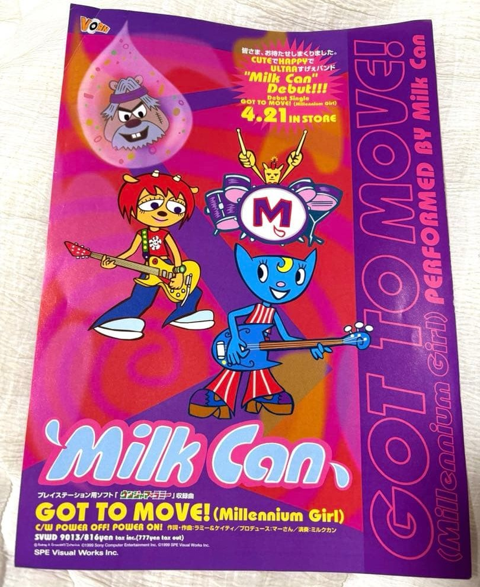
"Got To Move!" — Promotional Flyer「Got To Move!」— 販促チラシ
An official in-store promotional flyer announcing MilkCan's debut single "Got To Move! (Millennium Girl)," distributed to Japanese record shops ahead of the April 21, 1999 release. The sheet carries the VORN label logo at the top left, calls out the catalog number SVWD-9013 and retail price (¥816 tax-in / ¥777 tax-out), and names the B-side — "POWER OFF! POWER ON!" — alongside the A-side. The artwork, drawn in Rodney Alan Greenblat's flat-color style, shows Lammy mid-riff on her red guitar, Katy Kat laying down a bass line beside her, and Ma-san perched on Katy's M-logo drum. A playful blurb across the top reads "CUTE で HAPPY で ULTRA すげぇバンド「Milk Can」Debut!!!" ("The cute, happy, ultra-awesome band MilkCan — debut!!!"), and the fine print credits read "作詞・作曲：ラミー＆ケイティ／プロデュース：マーさん／演奏：ミルクカン" — writing the song's credits in-universe to the band themselves. The flyer ties the release back to Um Jammer Lammy with the note "プレイステーション用ソフト『ウンジャマ・ラミー』収録曲" ("song from the PlayStation title Um Jammer Lammy") and carries the 1999 Sony Computer Entertainment / SPE Visual Works copyright.MilkCanのデビューシングル「Got To Move!（ミレニアム・ガール）」の発売告知として、1999年4月21日のリリース前に日本のレコード店向けに配布された公式店頭販促チラシです。左上にはVORNレーベルのロゴが配され、品番SVWD-9013と価格（税込816円／税抜777円）、さらにカップリング曲「POWER OFF! POWER ON!」の情報が掲載されています。イラストはロドニー・アラン・グリーンブラットによるフラットカラーのアートで、赤いギターを構えるラミー、その横でベースを弾くケイティ・キャット、Mロゴのドラムに乗るマーさんが描かれています。上部には「CUTEでHAPPYでULTRAすげぇバンド『Milk Can』Debut!!!」という遊び心のあるキャッチコピーが踊り、クレジット欄には「作詞・作曲：ラミー＆ケイティ／プロデュース：マーさん／演奏：ミルクカン」と、楽曲の作り手をあくまで作中のバンド名義で表記する演出が取られています。下部には「プレイステーション用ソフト『ウンジャマ・ラミー』収録曲」と本編ゲームとの関連が明記され、1999年のソニー・コンピュータエンタテインメント／SPEビジュアルワークスの著作権表示が入っています。
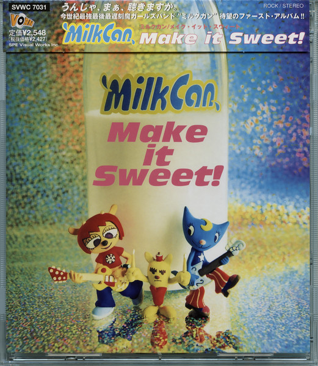
"Make It Sweet!" — Album「Make It Sweet!」— アルバム
Released: June 19, 1999 (Japan) — Sony Records / VORN, cat. SVWC-7031. MilkCan's sole full-length album and the official soundtrack to Um Jammer Lammy. It collects nearly every song from the main story, rebuilt as full-band studio recordings rather than in-game rhythm-chart audio. The record was only physically pressed in Japan due to the game's softer performance abroad, and has since been reissued digitally for international listeners. Michelle Burks performs the lead vocals of Katy Kat across the album, carrying nearly every track — her bright, belted delivery gives MilkCan its core pop-rock sound and remains the most recognizable voice of the band outside the game. Ryu Watabe (credited as RYU) also contributes as a vocalist and rapper, appearing on multiple tracks including "Fright Flight!!", "Baby Baby!!", "Power Off! Power On!", "We Are MilkCan!!", and "Jam Chin". Watabe was already tied to the Um Jammer Lammy project as a voice actor — he provided in-game voices for characters including Ma-san, Joe Chin, Captain Fussenpepper, and Chop Chop Master Onion — making him one of the few performers whose voice you hear on both the retail album and inside the game itself.発売日：1999年6月19日（日本）— ソニーレコード／VORN、品番SVWC-7031。MilkCan唯一のフルアルバムで、ウンジャマ・ラミーの公式サウンドトラックです。本編の楽曲がほぼ網羅されており、ゲーム内のリズムトラックではなくフルバンドのスタジオ録音として収録し直されています。物理盤は日本のみでリリースされ、後に海外向けにデジタル配信されました。ミシェル・バークス（Michelle Burks）はアルバム全編にわたってケイティ・キャットのリードボーカルを担当し、ほぼ全曲を歌っています。その伸びやかで力強い歌声がMilkCanの核となるポップロックサウンドを形作っており、ゲーム外でのバンドの顔となっています。ワタベ・リュウ（Ryu Watabe／クレジット表記：RYU）もボーカリスト兼ラッパーとしてアルバムに参加しており、「Fright Flight!!」「Baby Baby!!」「Power Off! Power On!」「We Are MilkCan!!」「Jam Chin」などの複数の楽曲で歌唱・ラップを披露しています。ワタベは本編ゲームでもマーさん、ジョー・チン、キャプテン・フッセンペッパー、タマネギ先生らの声を担当しており、アルバムとゲーム内音声の両方に登場する数少ない参加者の一人です。
— INTERVIEWS —— インタビュー —
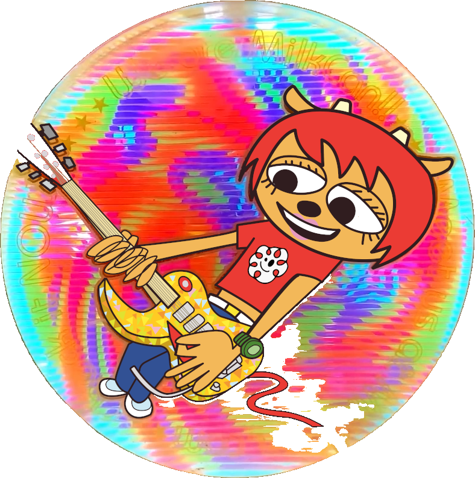
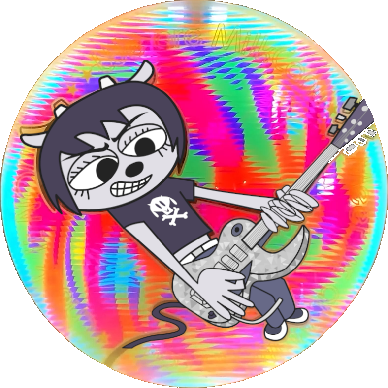
★ UM JAMMER LAMMY NOW! ★★ ウンジャマ・ラミー Now! ★
Um Jammer Lammy NOW! is an extremely rare arcade version of Um Jammer Lammy, co-developed by NanaOn-Sha and Namco. Released in Japanese arcades in December 1999, it ran on the Namco System 12 (based on PlayStation 1 hardware) and was one of Namco's four arcade guitar games published during the rhythm game craze of the late '90s.ウンジャマ・ラミー Now!は、七音社とナムコが共同開発した非常に希少なアーケード版ウンジャマ・ラミーです。1999年12月に日本のゲームセンターで稼働を開始し、Namco System 12基板（PlayStation 1ハードウェアがベース）で動作しました。1990年代後半のリズムゲームブーム期にナムコが発売した4作のアーケード・ギターゲームのうちの1作でもあります。
Arcade Cabinetアーケード筐体
The cabinet features a unique "Guitar'n'Table" control system with two physical guitar controllers mounted on the machine. The buttons for Triangle, Circle, Cross and Square are represented by strummers in the middle of the guitar. The L button is a slider at the top called the "Joe Switch," and the R button is a scratch disc at the bottom called the "Chin Switch."筐体には「ギターンテーブル」と呼ばれるユニークなコントロールシステムが搭載され、2本のギター型コントローラーが本体に取り付けられています。ギター中央部の「ストラマー」が△・〇・×・□の各ボタンに対応し、上部にあるスライダーはL1ボタンに相当する「ジョー・スイッチ」、下部にあるスクラッチディスクはR1ボタンに相当する「チン・スイッチ」となっています。
Namco — Um Jammer Lammy Now!ナムコ — ウンジャマ・ラミー NOW!
namco.co.jp/home/aa/am/vg/umjammerlammy/ was Namco's official Japanese product page for the arcade port Um Jammer Lammy NOW!, released to amusement centres in 2000 on Namco System 12 hardware. The site introduced the cabinet to operators and players with the tagline "あの『ウンジャマ・ラミー』がアミューズメントスポットに新登場!" ("That very same Um Jammer Lammy is finally arriving at amusement spots!"), the Lammy logo, a render of the dedicated cabinet, and an "ENTER" link into the rest of the promo. This Wayback Machine snapshot is from February 23, 2002.namco.co.jp/home/aa/am/vg/umjammerlammy/は、2000年にナムコ System 12 基板でアーケードへ移植されたアーケード版『ウンジャマ・ラミー NOW!』を紹介していたナムコ公式の日本向け製品ページです。トップでは「あの『ウンジャマ・ラミー』がアミューズメントスポットに新登場!」というキャッチコピーとともに、ラミーのロゴ、専用筐体のレンダリング、そしてプロモコンテンツ本編へ進む「ENTER」リンクが掲げられ、オペレーターおよびプレイヤーに向けてキャビネットを訴求していました。本リンク先のWayback Machineスナップショットは2002年2月23日付のものです。
— CABINET & ARCADE FOOTAGE —— 筐体＆アーケード写真 —
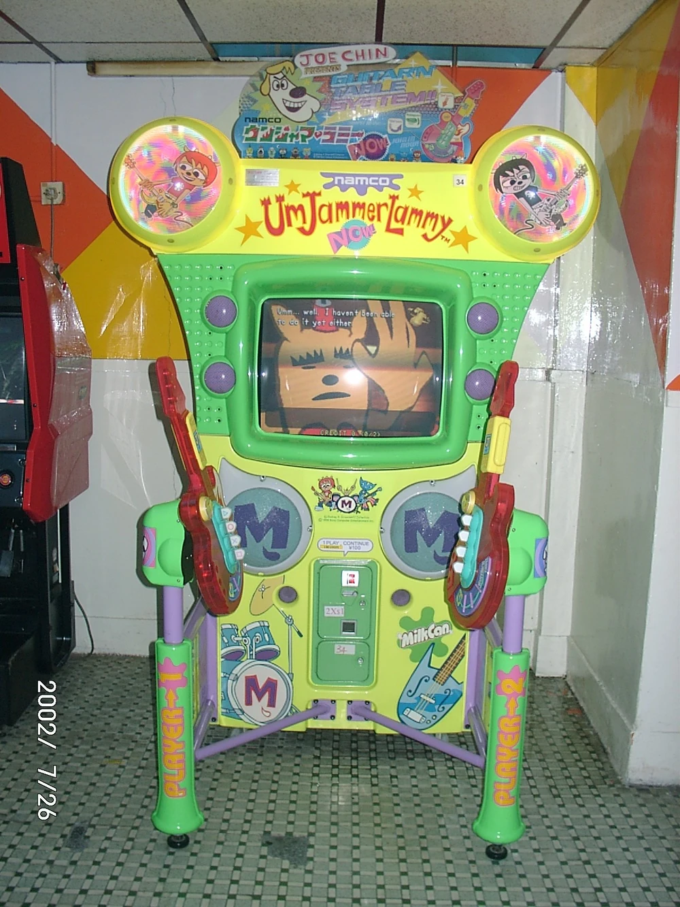
UJL NOW! cabinet — front view, 2002UJL NOW! 筐体（正面・2002年）
Despite being put into mass production, the only known working cabinet is owned by British celebrity Jonathan Ross. The game's ROM was not fully dumped until September 2023. Namco's arcade guitar games unfortunately did not sell well, making surviving units incredibly scarce.量産されたにもかかわらず、現存する唯一の稼働筐体はイギリスの著名人ジョナサン・ロスが所有しています。ゲームのROMは2023年9月まで完全にダンプされませんでした。ナムコのアーケード・ギターゲーム作品群は商業的に振るわず、現存するユニットは極めて希少となっています。
★ THE CABINET ★★ 筐体 ★
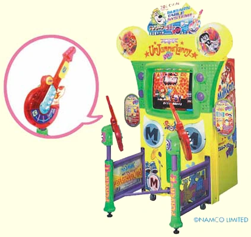
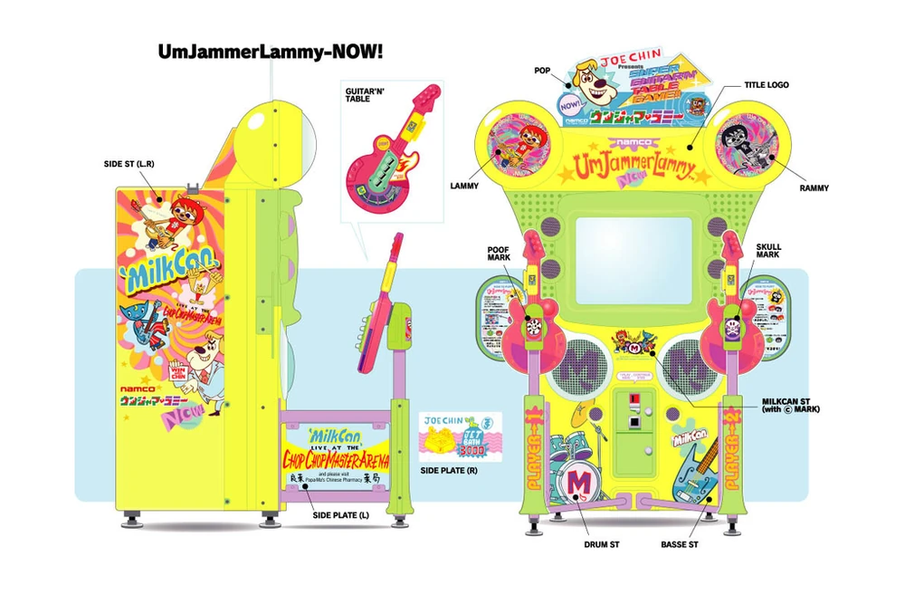
Guitar'n'Table Cabinetギターンテーブル筐体
The Um Jammer Lammy NOW! cabinet is a large, colorful upright arcade unit designed around the "Guitar'n'Table" control system. Two guitar-shaped controllers are mounted on the front of the machine, each featuring strummers for the face buttons (Triangle, Circle, Cross, Square), a slider dubbed the "Joe Switch" for L1, and a scratch disc called the "Chin Switch" for R1. The cabinet runs on Namco System 12 hardware, which is based on PlayStation 1 architecture. The machine supports two players simultaneously for versus and cooperative play. The cabinet's vivid yellow, green, and blue color scheme matches the game's energetic pop art aesthetic, with character artwork of Lammy, PaRappa, and others adorning the sides.ウンジャマ・ラミー Now!の筐体は、「ギターンテーブル」コントロールシステムを中心に設計された大型でカラフルなアップライト型アーケード筐体です。本体正面には2本のギター型コントローラーが取り付けられており、それぞれに△・〇・×・□ボタンに対応するストラマー、L1ボタンにあたるスライダー「ジョー・スイッチ」、R1ボタンにあたるスクラッチディスク「チン・スイッチ」が搭載されています。筐体はPlayStation 1アーキテクチャをベースとしたNamco System 12ハードウェアで動作し、2人同時プレイによる対戦・協力プレイにも対応しています。鮮やかな黄・緑・青のカラーリングはゲーム本編のエネルギッシュなポップアートの雰囲気に合わせたもので、側面にはラミー、パラッパをはじめとするキャラクターのアートが大きくあしらわれています。
— CABINET IMAGES —— 筐体画像 —
Page 1ページ1
Page 2ページ2
Guitar'n'Table Controlsギターンテーブル操作部
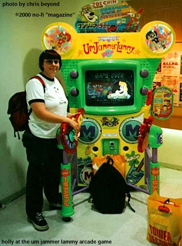
"Holly at the Um Jammer Lammy arcade game" — a rare in-the-wild photograph of an operating Um Jammer Lammy NOW! cabinet, shot by Chris Luspoed for No.Fi Magazine in 2000.「Holly at the Um Jammer Lammy arcade game」— 2000年にChris LuspoedがNo.Fi Magazine向けに撮影した、稼働中のウンジャマ・ラミー Now!筐体を収めた数少ない実地写真。
— NAMCO PAGE —— ナムコページ —
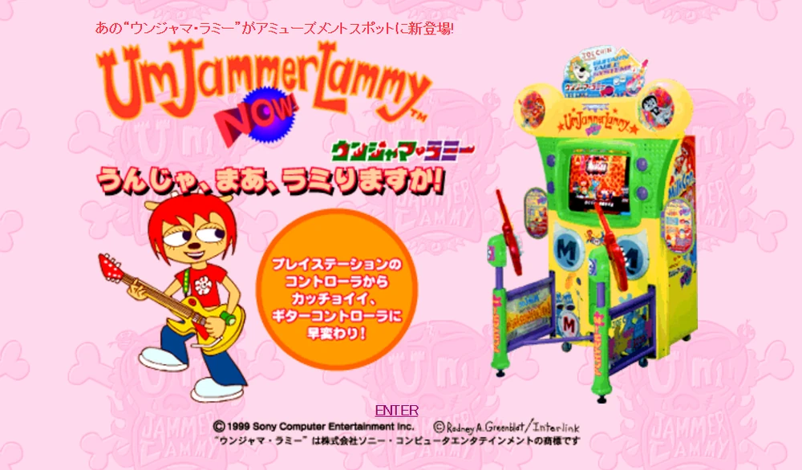
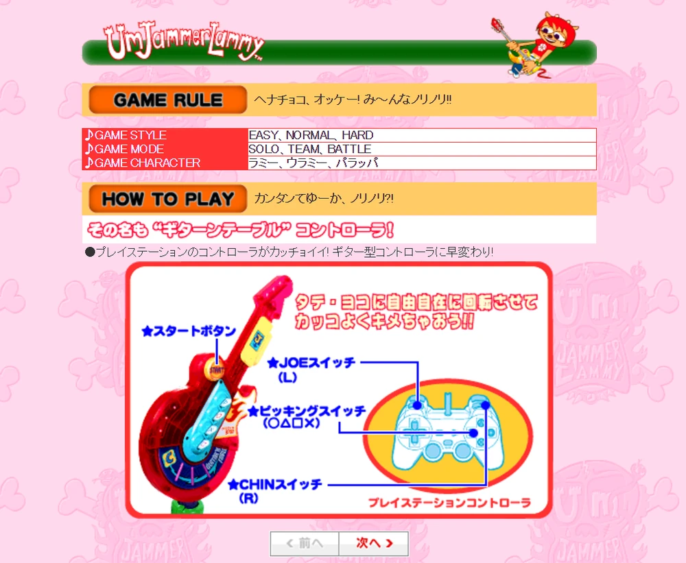
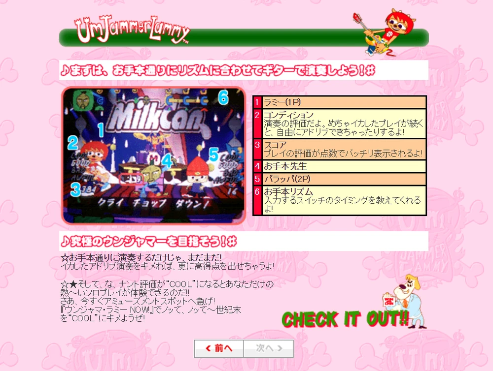
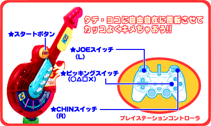
Namco's official Um Jammer Lammy NOW! arcade product page — archived snapshot of namco.co.jp/home/aa/am/vg/umjammerlammy/ from February 23, 2002, preserved by the Wayback Machine. This was the manufacturer's own product page for the cabinet, hosted on Namco's arcade-division site, and is one of the only surviving first-party sources describing the Guitar'n'Table hardware, available game modes, and operator details.ナムコ公式の『ウンジャマ・ラミー Now!』アーケード製品ページ。namco.co.jp/home/aa/am/vg/umjammerlammy/の2002年2月23日時点のWayback Machineスナップショットです。ナムコのアーケード部門サイトに掲載されていた筐体の公式製品ページで、ギターンテーブルハードや収録モード、オペレーター向け情報を記した数少ない一次資料の一つです。
— RARE VIDEO PROMO —— 希少プロモ映像 —
★ PRIZE GIVEAWAY CAMPAIGN ★★ プレゼントキャンペーン ★
Namco ran a prize giveaway campaign in Japanese arcades to promote Um Jammer Lammy NOW! upon its December 1999 release. Players who achieved high scores or completed certain in-game challenges could win exclusive prizes including Lammy-themed merchandise, original artwork postcards, and limited-edition goods not available through any other channel. The campaign was part of Namco's broader push to establish their guitar game line alongside competitors like Konami's Guitar Freaks. Promotional flyers for the campaign were distributed at arcade locations across Japan, and surviving examples of both the flyers and the prize items are extremely rare today.ナムコは1999年12月のウンジャマ・ラミー Now!稼働開始に合わせ、日本のゲームセンターでプレゼントキャンペーンを実施しました。ハイスコアを達成したプレイヤーや特定のゲーム内チャレンジをクリアしたプレイヤーは、ラミーをモチーフにした限定グッズ、オリジナルアートのポストカード、他では手に入らない限定品などの特典を獲得できました。このキャンペーンは、コナミの『ギターフリークス』といった競合タイトルと並ぶアーケード・ギターゲーム路線を確立しようというナムコの広報施策の一環でもありました。キャンペーンのチラシは日本全国のアーケード店舗で配布されましたが、チラシと賞品の現存品はいずれも今日では極めて希少です。
— LAMMY NOW! FLYER —— ラミー NOW! チラシ —
Lammy NOW! Flyer (Front)ラミー NOW! チラシ（表）
Lammy NOW! Flyer (Back)ラミー NOW! チラシ（裏）
Dreamcast Magazine — January 21, 2000 (page 8). A "GAME-OH" news brief announcing Namco's "ゲーセンでラミーお得！" ("Get-a-deal-with-Lammy-at-the-arcade") campaign for Um Jammer Lammy NOW!, running nationwide through January 31, 2000. The blurb tips readers off to the tie-in prize draws being held alongside the arcade rollout — including the KIDDY LAND chain (75 stores participating) — and points to the official Lammy NOW! homepage on namco.co.jp.『ドリームキャストマガジン』2000年1月21日号 8ページ。「GAME-OH」ニュース欄で告知された、ナムコのアーケード版『ウンジャマ・ラミー NOW!』に合わせた「ゲーセンでラミーお得！」キャンペーン記事。2000年1月31日まで全国で開催され、KIDDY LAND（75店舗）など連動先のプレゼント企画が紹介されているほか、ラミー NOW! 公式ホームページ（namco.co.jp）への誘導も掲載されている。
— PRIZES —— 賞品 —
Lammy & PaRappa Stickerラミー＆パラッパ ステッカー
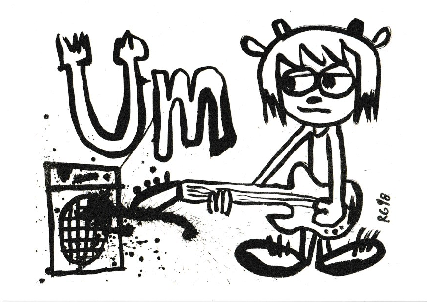
Messy Lammy with Ampメッシー・ラミー＆アンプ
Messy Lammy (Back)メッシー・ラミー（裏）
Sealed Namco MilkCan tambourine — a NOT FOR SALE giveaway prize from the Um Jammer Lammy NOW! arcade campaign. The red drum-head sticker features the full MilkCan band (Lammy drumming, Ma-san at centre, Katy Kat on bass) beneath the Um Jammer Lammy logo and Namco branding.未開封のナムコ製ミルクカン・タンバリン。『ウンジャマ・ラミー Now!』アーケードキャンペーンの非売品プレゼント賞品。赤いドラムヘッド調のステッカーには、ウンジャマ・ラミーのロゴとナムコのブランド表記の下にミルクカンのバンド（ドラムを叩くラミー、中央のマーさん、ベースを弾くケイティ・キャット）が勢揃いでデザインされている。
Magazine banner for Prize C — the "超プレミア!!" (ultra-premium) light-up Guitar'n'Table controller, the most coveted prize in the Um Jammer Lammy NOW! giveaway campaign.C賞告知の誌面バナー。「超プレミア!!」光るギターンテーブルコントローラーは、『ウンジャマ・ラミー Now!』プレゼントキャンペーンの目玉であり最難関の賞品。
— WHO WON THE PRIZE C GLOWING GUITAR?! —— C賞 光るギターの当選者は？！ —
Cropped detail from the same NOURS feature — the red-haired Lammy mascot poses next to winner Ishida Yumeko-san, who holds her prize as Rodney Greenblat character art covers the wall behind them at the Shibuya PARCO pop-up.同じ『NOURS』記事から切り出したクローズアップ。赤髪のラミー着ぐるみと並んで賞品を手にする当選者の石田夢子さん。背後の壁には渋谷PARCO特設ポップアップを彩るロドニー・グリーンブラットのキャラクターアートが並ぶ。
A wider shot from the article — Ishida Yumeko-san surrounded by Rodney Greenblat's plush mascot cast (Lammy, PaRappa, Sunny Funny and friends) on the event floor of the Shibuya PARCO "ONEFUN" pop-up during the prize presentation.記事掲載のもう一枚の写真。渋谷PARCO「ONEFUN」特設会場の授与式で、ロドニー・グリーンブラット作のぬいぐるみマスコット（ラミー、パラッパ、サニー・ファニー他）に囲まれる石田夢子さん。
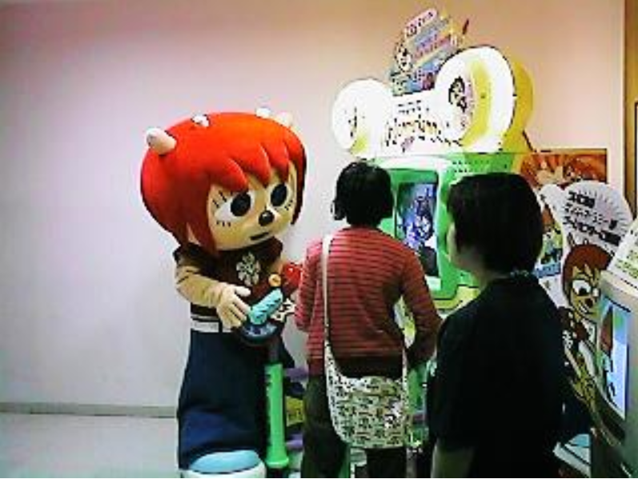
Event-floor photograph from the same presentation — the red-haired Lammy mascot posed beside the Um Jammer Lammy NOW! cabinet while visitors take a turn on the Guitar'n'Table controls.同じ授与式イベント会場での写真。赤髪のラミー着ぐるみが『ウンジャマ・ラミー Now!』筐体の横に立ち、来場者がギターンテーブルでプレイしている様子が写し出されている。
★ THE DISCOVERY ★★ 発見 ★
For years, Um Jammer Lammy NOW! was considered lost media. Despite evidence that the cabinet was mass-produced by Namco, no working units could be located — the game existed only in photographs and promotional materials. That changed when it was revealed that British television presenter and avid game collector Jonathan Ross owned the only known surviving cabinet. Ross had acquired the machine years earlier and kept it in his personal collection. In May 2023, Ross publicly shared footage of the cabinet in operation, confirming its existence to the gaming preservation community. By September 2023, preservationists including ROM dumper Phil Bennett and archivist Eric Yockey worked with Ross to fully dump the game's ROM and CD media. The complete dump was uploaded to the Internet Archive, ensuring the game's preservation for future generations. The discovery was widely covered by gaming media outlets and celebrated as a major victory for video game preservation.長年にわたり、ウンジャマ・ラミー Now!はロストメディアとされてきました。ナムコによって筐体が量産されたという記録は残っているにもかかわらず、稼働するユニットはどこにも見当たらず、このゲームは写真や販促物の中にしか存在しない状態でした。状況が変わったのは、イギリスのテレビ司会者で熱心なゲームコレクターでもあるジョナサン・ロス氏が、現存する唯一の稼働筐体を所有していると明らかになったときです。ロス氏は数年前にこの筐体を入手し、個人コレクションとして保管していました。2023年5月、ロス氏はSNSで稼働中の筐体の映像を公開し、ゲーム保存コミュニティに対して筐体の現存を裏付けました。2023年9月までに、ROMダンパーのフィル・ベネットやアーキビストのエリック・ヨッキーらを含む保存活動家たちがロス氏と協力し、ゲームのROMおよびCDメディアを完全にダンプしました。完全ダンプはInternet Archiveにアップロードされ、ゲームは後世に向けて保存されました。この発見はゲームメディア各社に大きく取り上げられ、ビデオゲーム保存の大きな成果として称えられました。
— ARCADE CD —— アーケードCD —
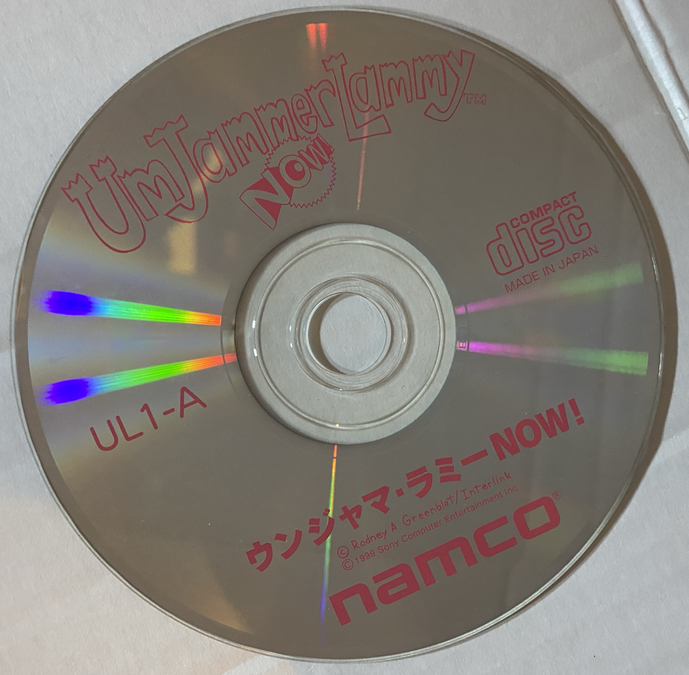
The original Um Jammer Lammy NOW! arcade CD, stamped UL1-A — the very disc preserved during the September 2023 dump that finally took the game off the lost-media list.『ウンジャマ・ラミー Now!』アーケード版の純正CD（UL1-A刻印）。2023年9月のダンプ作業で保存され、本作をロストメディアから救い出したまさにその一枚。
— TIMELINE —— タイムライン —
December 19991999年12月
Um Jammer Lammy NOW! released in Japanese arcades by Namcoナムコよりウンジャマ・ラミー Now!が日本のゲームセンターに登場
Early 2000s2000年代初頭
Cabinets disappear from arcades; game presumed lost筐体がゲームセンターから消え、ゲームは失われたと思われる
May 20232023年5月
Jonathan Ross shares video of his working cabinet on social mediaジョナサン・ロスがSNSで稼働する筐体の動画を公開
September 20232023年9月
Full ROM and CD media dumped and uploaded to Internet ArchiveROMとCDメディアが完全にダンプされ、Internet Archiveにアップロード
PARAPPA THE RAPPER CHARACTERS パラッパラッパー キャラクター
PaRappaパラッパ
PARAPPA
A rapper who turns everything into rhymes with funky moves to match. He's head over heels for Sunny and dreams of becoming a strong hero to win her heart. PJ is his absolute best friend!何でもフリ付きのラップにして歌っちゃうラッパー。サニーちゃんに夢中で、強ーいヒーローになってサニーちゃんの心をつかもうと考えています。PJとは大の親友！
Sunny Funnyサニー・ファニー
SUNNY FUNNY
Sunny is bright and super positive! She loves cooking — especially pasta and cakes. She often hosts tea parties for friends and tends to her garden every single day.サニーちゃんは明るくてとってもポジティブ！クッキング大好きな彼女はパスタやケーキ作りが大好き。お友達を呼んでのティーパーティーもよく開きます。ガーデニングが好きで、お花の世話は毎日の日課です。
PJ BerriPJベリー
PJ BERRI
He wears bear pajamas, hence the name "PJ." Easygoing and laid-back in every way. At Club Fun in PaRappa Town he transforms into an incredible DJ! His favorite foods are peanut butter and donuts.クマのパジャマを着ているからPJ（Pajama）。見た目も行動もおっとりマイペースなのんびりやさん。パラッパタウンのCLUB FUNでは凄腕DJに変身！ピーナッツバターとドーナツが大好物で食いしん坊。
Katy Katケイティ・キャット
KATY KAT
Katy is a cool, no-nonsense girl. She's competitive and action-oriented, using that energy to lead MilkCan and keep everyone together. She loves shopping and has a sharp sense of fashion.ケイティは、性格はさっぱりしていてクールな女の子。勝ち気で行動的なところを生かしてミルクカンのリーダーとしてみんなをまとめています！お買い物大好きな彼女はおしゃれにも敏感。
Joe Chinジョー・チン
JOE CHIN
Born into wealth, Joe is brimming with confidence. He has feelings for Sunny, making him PaRappa's destined rival. His approaches to Sunny are wildly over-the-top. His flashy red car is a Super Stretch Limo 900.お金持ちの家に生れたジョーは自信タップリの余裕派。サニーちゃんの事が好きでパラッパの宿命のライバル。サニーちゃんへのアプローチもオーバーアクション。真っ赤な愛車はスーパー・ストレッチ・リモ900。
Chop Chop Master Onionタマネギ先生
CHOP CHOP MASTER ONION
He runs the Fruity Dojo in PaRappa Town — a karate master who speaks in Japanese-English. He teaches his students the secrets of karate daily. The dojo's motto: "If you eat a strawberry, eat it down to the plate."パラッパタウンにあるフルーツ道場を営むジャパニーズイングリッシュのカラテ・マスター。門下生達に日々カラテの極意を教えている。道場のモットーは「苺を食らわば皿まで」。
Instructor Mooseliniムースリーニ先生
INSTRUCTOR MOOSELINI
The strict but reliable driving instructor at the school PaRappa attends to get his license. She teaches with powerful rapping and takes absolutely no shortcuts. PaRappa often gets his car stopped mid-lesson!マイカー購入に挑むパラッパが通う自動車教習所の鬼教官だけど、とっても頼りがいある姉さん先生！ド迫力のラップで厳しい指導で手を抜かない教え方。パラッパは教習中に車を止められることもしばしば。
Mr. Prince Fleaswallowカエル先生
MR. PRINCE FLEASWALLOW
A frog from Jamaica who runs a flea market in PaRappa Town. His hobby is fishing. His free and loving manner is probably because he's a hippie. He's confident he can sell absolutely any piece of junk!パラッパタウンでフリーマーケットをやっているジャマイカ出身のカエルさんで趣味は釣り。フリーでラブな言動は多分ヒッピー。どんなガラクタでも売ってみせる自信あり！
Cheap Cheap the Cooking Chickenニワトリ先生
CHEAP CHEAP THE COOKING CHICKEN
She hosts a popular cooking show and is a master at making delicious cakes from cheap ingredients. Her seafood cake with shrimp and clams is exquisite. When she gets angry, she lays eggs!人気のお料理番組をしきるニワトリ先生。安い材料でおいしいケーキを作るのも大得意！エビやアサリの入ったシーフード・ケーキは絶品。ニワトリ先生が怒ると卵を生みます。
MC King Kong Mushiキングコング・ムシ
MC KING KONG MUSHI
The cool big-brother figure of PaRappa Town. His white jacket and white patent leather shoes really shine. He's always on point as an MC and can liven up any party. Everyone looks up to him!パラッパタウンのクールなお兄さん的存在。白いジャケットと白いエナメルシューズが光る。ステージのMCはいつも冴えていて、どんなパーティーだって盛り上がります！アニキと慕われています。
UM JAMMER LAMMY CHARACTERS ウンジャマ・ラミー キャラクター
Lammyラミー
LAMMY
A shy, anxious lamb who is the lead guitarist of the all-girl rock band MilkCan. Despite her lack of confidence, she's an incredibly talented guitarist. She always carries her beloved red guitar and wears her signature beanie.ガールズロックバンド「ミルクカン」のリードギタリストである、内気で不安症な羊の女の子。自信はないものの、ギタリストとしての才能は圧倒的。愛用の赤いギターを常に抱え、トレードマークのビーニー帽をいつも被っています。
Katy Katケイティ・キャット
KATY KAT
The bassist and leader of MilkCan. Cool, competitive, and action-oriented, Katy keeps the band together and pushes Lammy to believe in herself. She's the driving force behind MilkCan's success.ミルクカンのベーシスト兼リーダー。クールで勝ち気、行動的なケイティはバンドをまとめ、ラミーに自分を信じる勇気を与えます。ミルクカンの成功を牽引する原動力のような存在です。
Ma-sanマーさん
MA-SAN
MilkCan's drummer — a small, hot-tempered mouse who communicates mostly through squeaks. Despite her tiny size, she's a powerhouse on the drums. She has a short fuse and doesn't tolerate laziness.ミルクカンのドラマー。小さくて短気なネズミで、主に「チューチュー」という鳴き声で意思疎通します。小柄ながらドラムの実力は抜群で、とても大きな音を叩き出します。気が短く、怠けていると容赦なく怒り出すタイプです。
Rammyラミー（ラミー）
RAMMY
Lammy's rebellious dark counterpart and rival guitarist. With fiery red hair, a punk attitude, and blistering shred skills, Rammy represents everything Lammy is not — confident, aggressive, and dangerously talented.ラミーの反抗的なダークカウンターパートでありライバルのギタリスト。燃えるような赤毛、パンクな態度、ずば抜けた速弾きの腕前を持ち、自信に満ち、攻撃的で、そして危険なほどの才能を備えた、ラミーの正反対を体現する存在です。
Chop Chop Master Onionタマネギ先生
CHOP CHOP MASTER ONION
Returns as the first stage teacher. In Lammy's version, he teaches her to play guitar by treating it like karate — "Chop! Kick! Block!" His dojo training translates surprisingly well to guitar riffs.最初のステージの先生として再登場。ラミー編ではギターをカラテに見立てて「チョップ！キック！ブロック！」という調子で弾き方を指南します。道場仕込みの動きが、意外なほどギターリフにぴったりとはまります。
Chief Puddleチーフ・パドル
CHIEF PUDDLE
A fire chief who leads the firefighting effort at a burning building. Lammy must play guitar to power the fire hoses and help put out the blaze in this high-energy stage.炎上するビルで消火活動を指揮する消防署長。このハイテンションなステージでは、ラミーがギターを弾いて消火ホースにパワーを送り込み、消火活動を支援することになります。
Cathy Pillerキャシー・ピラー
CATHY PILLER
A caterpillar who runs a flight attendant training course. She teaches Lammy to keep her cool during a chaotic airplane emergency by playing guitar to calm the passengers.フライトアテンダント（客室乗務員）の養成コースを担当する毛虫。飛行機が緊急事態に陥った混乱の中でも冷静さを保ち、ギターを弾いて乗客を落ち着かせる方法をラミーに教えます。
Captain Fussenpepperファッセンペッパー船長
CAPTAIN FUSSENPEPPER
A stern military captain who serves as one of Lammy's teachers. He drills Lammy through a high-pressure training scenario, pushing her guitar skills to the limit.ラミーの先生の一人を務める、厳格な軍人気質の船長。高いプレッシャーの訓練シナリオでラミーを鍛え上げ、彼女のギターの腕を限界まで追い込みます。
Paul Chuckポール・チャック
PAUL CHUCK
A lumberjack beaver who runs a woodshop. He teaches Lammy to channel her guitar skills into woodworking, cutting and shaping lumber with the power of music.木工所を営む木こりのビーバー。ラミーに、ギターの演奏技術を木工作業に活かして、音楽の力で木材を切ったり形づくったりする方法を教えます。
Teriyaki Yokoテリヤキ・ヨーコ
TERIYAKI YOKO
A news reporter who appears at various points throughout the game to cover the chaotic events Lammy finds herself in. She provides context and comic relief between stages.ゲーム中のさまざまな場面に登場するニュースレポーター。ラミーが巻き込まれていく騒動を逐一取材し、ステージ間の状況説明とコミックリリーフの役割を担います。
PARAPPA THE RAPPER 2 CHARACTERS パラッパラッパー2 キャラクター
PaRappaパラッパ
PARAPPA
PaRappa returns for a new adventure on PS2. When a mysterious figure starts turning all food in PaRappa Town into noodles, PaRappa must rap his way through new challenges to save the day and prove he's not a baby anymore.PS2で新たな冒険に挑むパラッパ。謎の人物によってパラッパタウン中の食べ物がすべてヌードルに変えられてしまう事件が発生。パラッパはラップで新たな試練を乗り越え、事件を解決するとともに「もう赤ちゃんじゃない」ことを証明していきます。
Sunny Funnyサニー・ファニー
SUNNY FUNNY
PaRappa's love interest returns. Sunny continues to be the bright, positive presence in PaRappa's life and the motivation behind his determination to prove himself as a grown-up.パラッパの想い人が再登場。サニーは変わらず明るくポジティブで、パラッパの生活を照らす存在であり、彼が大人として認められたいと頑張る最大の原動力でもあります。
Colonel Noodleカーネル・ヌードル
COLONEL NOODLE
The main antagonist of PaRappa 2. A mysterious figure who is turning all food in PaRappa Town into noodles using a strange machine called the Noodle Synth. His true identity and motives are revealed as the story unfolds.パラッパ2のメインヴィラン。「ヌードルシンセ」と呼ばれる奇妙な機械を使って、パラッパタウン中の食べ物をすべてヌードルに変えてしまう謎の人物。その正体と目的は、物語が進むにつれて明らかになっていきます。
Guru Antグル・アント
GURU ANT
A tiny ant guru who teaches PaRappa the art of shrinking. Despite his minuscule size, he has an enormous personality and teaches PaRappa that size doesn't matter — it's all about heart.パラッパに身体を縮小する術を教える、小さなアリの導師（グル）。極小サイズながら存在感は絶大で、サイズは関係ない、大切なのは心だとパラッパに教えます。
Hairdresser Octopusタコ床屋
HAIRDRESSER OCTOPUS
An octopus barber with eight arms, perfect for cutting hair at incredible speed. PaRappa must rap along to get a fresh new hairstyle as part of his quest to look more grown-up.8本の腕で驚異的なスピードで髪をカットするタコの床屋。もっと大人っぽく見せたいと奮闘するパラッパは、このステージでラップしながら新しい髪型を手に入れていきます。
Instructor Mooseshaムーシャ先生
INSTRUCTOR MOOSESHA
A romantic food-loving teacher who runs a cooking class. She teaches PaRappa about the importance of food and cooking — skills he'll need when everything keeps turning into noodles.ロマンチックで食いしん坊な、料理教室を営む女性教官。何もかもがヌードルに変えられてしまう世界で、食べ物と料理の大切さ、そして必要な調理のスキルをパラッパに叩き込みます。
Chop Chop Master Onionタマネギ先生
CHOP CHOP MASTER ONION
The beloved karate master returns once again. In PaRappa 2, Master Onion continues to mentor PaRappa at the Fruity Dojo, this time helping him face even greater challenges with his signature blend of wisdom and rapping.おなじみの愛されカラテマスターが再び登場。パラッパ2でもフルーツ道場でパラッパの師となり、持ち前の知恵とラップを織り交ぜた独自のスタイルで、さらに大きな試練へと彼を導いていきます。
PJ BerriPJベリー
PJ BERRI
PaRappa's best friend returns, still rocking his bear pajamas. PJ continues to be the laid-back, donut-loving DJ at Club Fun. He joins PaRappa on his quest to solve the noodle crisis.パラッパの親友が再登場。相変わらずクマのパジャマを身に着け、のんびり屋でドーナツ好きな様子も変わらず、CLUB FUNでDJを続けています。今作でもパラッパと共にヌードル危機の解決に挑みます。
★ MERCHANDISE ★★ グッズ情報 ★
— COLLECTABLE DOLLS —— コレクタブル・ドール —
Collectable Doll Vol.1コレクタブル・ドール Vol.1
PARAPPA
¥2,800
Collectable Doll Vol.2コレクタブル・ドール Vol.2
SUNNY FUNNY
¥2,800
— DANCING FIGURES —— ダンシング フィギュア —
Dancing PaRappaダンシング パラッパ
¥980
Dancing Sunnyダンシング サニー
¥980
— PR SOFT VINYL MASCOTS —— PRソフトビニールマスコット —
Soft Vinyl Mascot — PaRappaソフトビニールマスコット パラッパ
¥680
Soft Vinyl Mascot — Sunnyソフトビニールマスコット サニー
¥680
PaRappa & Sunny Setパラッパ＆サニー セット
All characters gathered together!キャラクターが勢揃いです
★ SPECIAL ITEMS ★★ スペシャル・キット ★
PaRappa the Rapper Special Kit ★パラッパラッパー スペシャル・キット ★
Self-Propelled Record Player自走式レコードプレーヤー
FRONT
Included with the PaRappa the Rapper Special Kit. Front design.パラッパラッパースペシャル・キット付属。フロントデザイン。
10 Color Badges Includedカラーバッジ 10個付き
BACK
All characters gathered together. Back design.キャラクターが勢揃いです。バックデザイン。
★ WELCOME ★★ ようこそ ★
Welcome to the ultimate PaRappa the Rapper fan site dedicated to preserving and documenting the history of Masaya Matsuura's beloved rhythm game franchise. Created by NanaOn-Sha and published by Sony Computer Entertainment, PaRappa the Rapper debuted on the PlayStation in December 1996 in Japan and became one of the most iconic games of the era. Explore our collection of merchandise, rare items, and character information.パラッパラッパーファンサイトへようこそ。松浦雅也氏が手掛けた、長く愛されているリズムゲームシリーズの歴史を記録・保存することを目的とした究極のファンサイトです。パラッパラッパーは七音社が開発、ソニー・コンピュータエンタテインメントが発売し、1996年12月に日本のPlayStationでデビューして以来、同時代を象徴する名作のひとつとなりました。当サイトではグッズコレクション、希少アイテム、キャラクター情報など幅広い資料をご覧いただけます。
The Purpose目的
This fan site is dedicated to documenting and preserving PaRappa the Rapper merchandise, rare collectibles, and franchise history. All items shown are from personal collections and public archives. This site is not affiliated with Sony Interactive Entertainment, NanaOn-Sha, or Rodney Alan Greenblat. All trademarks belong to their respective owners. All the intellectual property rights related to the works presented on this site belong to their respective owners. This site is strictly created for the purpose of preservation and education.このファンサイトは、パラッパラッパーのグッズ、希少なコレクターズアイテム、シリーズの歴史を記録・保存することを目的としています。掲載されているアイテムはすべて、個人のコレクションや公開アーカイブから引用したものです。本サイトはソニー・インタラクティブエンタテインメント、七音社、ロドニー・アラン・グリーンブラット氏のいずれとも提携関係にはありません。すべての商標は各権利者に帰属します。本サイトで紹介している作品に関するすべての知的財産権は、各権利者に帰属します。本サイトは、保存と教育のみを目的として制作されています。
★ WHAT'S NEW ★★ 新着情報 ★
Stay tuned for the latest updates on PaRappa collectibles, newly discovered merchandise, and community news. This page will be updated as new items are documented and added to the archive.パラッパのコレクターズアイテム、新たに発見されたグッズ、コミュニティの最新ニュースをお届けします。新しいアイテムが確認され、アーカイブに追加され次第、このページを随時更新していきます。
★ SEARCH ★★ 検索 ★
Type a keyword to search across characters, merchandise, events, and more.キーワードを入力して、キャラクター、グッズ、イベントなどを検索できます。
★ THE GAMES ★★ ゲーム ★
The PaRappa the Rapper franchise is a series of rhythm games developed by NanaOn-Sha and published by Sony Computer Entertainment. Directed by Masaya Matsuura with character design by Rodney Alan Greenblat, the series pioneered the rhythm-game genre on console hardware and grew into a small family of mainline entries, a spin-off, a handheld remake, and an HD remaster.パラッパラッパーシリーズは、七音社が開発しソニー・コンピュータエンタテインメントが発売したリズムゲームシリーズです。松浦雅也ディレクション、ロドニー・アラン・グリーンブラットによるキャラクターデザインのもと、家庭用機におけるリズムゲームの先駆けとなり、本編、スピンオフ、携帯機リメイク、HDリマスターへと広がっていきました。
PaRappa the Rapper (PS1)パラッパラッパー（PS1）
Released: December 6, 1996 (JP) / November 17, 1997 (NA) / March 19, 1998 (EU). The original entry in the series and widely credited as the first true rhythm game on home console. Players guide PaRappa through six stages, rapping alongside teachers like Chop Chop Master Onion, Instructor Mooselini, Prince Fleaswallow, Cheap Cheap the Cooking Chicken, and MC King Kong Mushi — all to prove himself worthy of Sunny Funny.発売日：1996年12月6日（日本）／1997年11月17日（北米）／1998年3月19日（欧州）。家庭用機初の本格リズムゲームとして知られるシリーズ第1作。タマネギ先生、ムースリーニ先生、カエル先生、ニワトリ先生、キングコング・ムシといった先生たちとラップを繰り広げ、サニーちゃんに認められようとする6ステージ構成の物語です。
Um Jammer Lammy (PS1)ウンジャマ・ラミー（PS1）
Released: March 18, 1999 (JP) / September 21, 1999 (NA) / November 26, 1999 (EU). The guitar-driven spin-off starring Lammy, lead guitarist of the all-girl rock band MilkCan. Lammy powers through seven surreal stages — fire rescues, baby delivery, woodcutting, airplane emergencies — by shredding on her guitar. A second playable mode lets you replay the whole game as PaRappa. The same Namco-developed arcade version, Um Jammer Lammy NOW!, followed in December 1999.発売日：1999年3月18日（日本）／1999年9月21日（北米）／1999年11月26日（欧州）。ガールズロックバンド「ミルクカン」のリードギタリスト、ラミーを主人公にしたギター版スピンオフ。消火活動、出産、木こり、航空機の緊急事態など、7つの奇妙なステージをギターの力で切り抜けます。クリア後はパラッパでゲーム全編を再プレイできるモードも収録。ナムコとの共同開発によるアーケード版「ウンジャマ・ラミー Now!」も1999年12月に稼働しました。
PaRappa the Rapper 2 (PS2)パラッパラッパー2（PS2）
Released: August 30, 2001 (JP) / January 15, 2002 (NA) / May 10, 2002 (EU). The long-awaited sequel and the only mainline PaRappa entry built for PlayStation 2 hardware. When a mysterious figure begins turning all of PaRappa Town's food into noodles, PaRappa must rap his way through eight new stages featuring teachers like Colonel Noodle, Guru Ant, Hairdresser Octopus, and Instructor Moosesha, while Chop Chop Master Onion and PJ Berri return from the original.発売日：2001年8月30日（日本）／2002年1月15日（北米）／2002年5月10日（欧州）。PlayStation 2向けに制作された唯一の本編作品。パラッパタウン中の食べ物がヌードルに変えられてしまう事件に巻き込まれたパラッパが、カーネル・ヌードル、グル・アント、タコ床屋、ムーシャ先生といった新キャラクターに加えて、タマネギ先生やPJベリーら旧キャラクターとともに、全8ステージをラップで駆け抜けます。
PaRappa the Rapper (PSP)パラッパラッパー（PSP）
Released: July 6, 2006 (JP) / September 5, 2006 (NA) / March 30, 2007 (EU). A PSP re-release of the original 1996 game with upscaled visuals, wireless multiplayer, and new unlockable content. Though marketed as a re-release, it was the first time the original PaRappa was officially distributed on a handheld system, introducing the game to a new generation of players.発売日：2006年7月6日（日本）／2006年9月5日（北米）／2007年3月30日（欧州）。1996年のオリジナル版を、映像のアップスケーリング、ワイヤレスマルチプレイ、新たなアンロック要素を加えてPSP向けに再リリースした作品。再発として売り出されたものの、これがオリジナル版『パラッパラッパー』が携帯機で公式に配信された初めての機会となり、新世代のプレイヤーにシリーズを届ける役割を果たしました。
PaRappa the Rapper Remastered (PS4)パラッパラッパー リマスター（PS4）
Released: April 4, 2017. An HD remaster of the 1996 original released to mark the franchise's 20th anniversary. Visuals were upscaled to 4K, audio was re-encoded, and a leaderboard system was added — but the gameplay, timing, and charm of the original were preserved exactly.発売日：2017年4月4日。シリーズ20周年を記念して発売された1996年版のHDリマスター。映像は4Kに、音声は再エンコードされ、オンラインランキング機能も追加されましたが、オリジナルのゲームプレイとタイミング、雰囲気はそのまま保たれています。
— FRANCHISE CREDITS —— シリーズクレジット —
Developer開発
NanaOn-Sha
Publisher発売元
Sony Computer Entertainment
Directorディレクター
Masaya Matsuura
Art Directorアートディレクター
Rodney Alan Greenblat
Platforms対応機種
PlayStation, PlayStation 2, PSP, PlayStation 4
Genreジャンル
Rhythmリズム
★ THE ANIME ★★ アニメ ★
In the spring of 2001, almost five years after the original PlayStation game first turned PaRappa Rappa into a household character in Japan, Sony Music Entertainment Visual Works and Fuji Television sat down with animation studio J.C.Staff to bring PaRappa Town to weekly television. The result — simply titled PaRappa the Rapper — premiered on Fuji TV's Saturday-morning lineup on April 14, 2001 and ran for thirty episodes until its hour-long finale on January 11, 2002. It is the only animated incarnation of the franchise to date, and the only place where Rodney Alan Greenblat's flat paper-doll cast has ever existed as fully traditional, hand-drawn animation cels.2001年春、初代PS版『パラッパラッパー』がパラッパ・ラッパを日本中の人気キャラクターに押し上げてからおよそ5年。ソニー・ミュージックエンタテインメント ビジュアルワークスとフジテレビは、アニメーションスタジオジェー・シー・スタッフを起用し、ついにパラッパタウンを毎週放送のテレビアニメとして届ける企画を立ち上げました。タイトルもそのまま『パラッパラッパー』。2001年4月14日のフジテレビ系土曜午前枠でスタートし、2002年1月11日の1時間スペシャルまで全30話が放送されました。本作は現在に至るまでシリーズ唯一のアニメ化作品であり、ロドニー・アラン・グリーンブラットの「平面紙人形」キャラクターたちが、伝統的な作画によるセルアニメとして動いた唯一の場でもあります。
PaRappa the Rapper (TV Anime, 2001–2002)パラッパラッパー（テレビアニメ、2001〜2002年）
Original run: April 14, 2001 – January 11, 2002. Network: Fuji Television (FNS network). Format: 30 episodes (the final episodes 29 and 30 were broadcast back-to-back as a one-hour special). Animation studio: J.C.Staff. Producers: Sōsuke Osabe and Hideo Katsumata for Sony Music Entertainment Visual Works. Directed by Hiroaki Sakurai. Series composition / head writer: Yoshio Urasawa. Music: Masaya Matsuura, Yoshihisa Suzuki, and Yasushi Kurobane. The series was framed as a stand-alone weekly comedy aimed at family audiences rather than as a direct adaptation of any one game, and is best understood as a "slice-of-life-in-PaRappa-Town" prequel to the events of the original PS1 title.放送期間：2001年4月14日〜2002年1月11日。放送局：フジテレビ（フジテレビ系FNS）。話数：全30話（最終話の29・30話は1時間スペシャルとして連続放送）。アニメーション制作：ジェー・シー・スタッフ。プロデューサー：長部聡介、勝俣英夫（ソニー・ミュージックエンタテインメント ビジュアルワークス）。監督：桜井弘明。シリーズ構成・脚本：浦沢義雄。音楽：松浦雅也、鈴木慶久、黒鞘靖。本作はファミリー層向けの単発エピソード型コメディとして企画されており、特定のゲームをそのまま映像化したものではなく、初代PS版のさらに前の時間軸を描く「パラッパタウンの日常譚」として位置付けられています。
— PRODUCTION CREDITS —— 制作スタッフ —
Original Concept原作
Masaya Matsuura, Rodney Alan Greenblat / NanaOn-Sha
Director監督
Hiroaki Sakurai (桜井弘明)
Series Compositionシリーズ構成
Yoshio Urasawa (浦沢義雄)
Character Designキャラクターデザイン
Based on Rodney A. Greenblat originals, adapted for animation by J.C.Staffロドニー・A・グリーンブラットの原案を基に、ジェー・シー・スタッフがアニメ用にリデザイン
— THE LOOK: HOW J.C.STAFF TRANSLATED A PAPER WORLD —— ビジュアルアプローチ：紙の世界をどうアニメ化したか —
The hardest creative problem the production faced was an obvious one: PaRappa is, by design, two-dimensional. Rodney Greenblat's original character sheets explicitly treat PaRappa, Katy Kat, PJ Berri, and Sunny Funny as flat illustrations whose entire personality lives in pose and silhouette. The PS1 game leaned into that, rendering everyone as paper cut-outs floating through 3D environments. For weekly television, J.C.Staff and director Hiroaki Sakurai had to figure out how to keep that paper-doll charm while still producing a show that could move, gesture, and emote across 22 minutes per episode.企画段階で最も大きな課題となったのは明白でした。パラッパはそもそも「平面」のキャラクターだということです。ロドニー・グリーンブラットによる原案では、パラッパ、ケイティ・キャット、PJベリー、サニー・ファニーらは、いずれも姿勢とシルエットだけで個性を表現する平面イラストとして設計されています。PS版ではその設計をそのまま活かし、3D空間に紙人形のキャラクターを配置するという表現が採用されました。週1放送のテレビアニメとなれば話は別で、J.C.スタッフと桜井弘明監督は、紙人形ならではの魅力を保ちつつ、毎話22分のなかで芝居や表情、身振りで物語を運ぶ方法を模索する必要がありました。
Their solution was a hybrid: they kept Greenblat's flat, frontal silhouettes wherever an iconic pose was called for — title cards, song-and-dance moments, big reaction shots — but quietly reintroduced soft three-quarter angles, simple eye animation, and gentle volumetric shading for the in-between dialogue beats. Backgrounds were redrawn in a thicker-outlined cel-paint style that matched the saturated colour palette of PaRappa Town in the games but read as flat gouache rather than 3D scenery. The compromise gives the anime its own distinct visual identity: it is unmistakably the same cast as the PlayStation original, but slightly rounder, slightly warmer, and built for the rhythm of TV comedy rather than for rapping along to a beat.彼らの答えはハイブリッドでした。タイトルバック、ミュージカル風シーン、大きなリアクションカットなど、決め絵が必要な場面ではグリーンブラットの正面ベタ塗りシルエットをそのまま採用。一方でセリフやちょっとした芝居が中心の場面では、ナチュラルな斜めアングル、シンプルな目のパカパカ、軽い陰影をそっと足しています。背景もパラッパタウン本来の高彩度カラーパレットを活かしつつ、3D風ではなく、太めの輪郭線とグワッシュ調のセル塗りで描き直されました。結果として、アニメ版はPS版とまぎれもなく同じキャラクター造形を持ちながらも、わずかに丸みと温かみが加わり、ラップに合わせるための映像ではなく、テレビコメディのリズムに最適化された独自のビジュアルアイデンティティを獲得しています。
— THE CAST —— キャラクター —
The anime keeps the full PS1 cast — PaRappa, his crush Sunny Funny, his best friend PJ Berri, the no-nonsense Katy Kat, and most of the rapping instructors — but expands the world with a small troupe of TV-only originals who appear in nearly every episode. Matt Major is a sporty, popular dog who joins PaRappa and PJ as a third member of the boys' inner circle and is most often seen on a basketball court. Paula Fox is Sunny's high-strung friend (and Katy's reluctant rival), introduced to give the girls' side of the cast a comic foil. Pinto Rappa, PaRappa's tiny baby sister, becomes a recurring "wandering toddler" engine for trouble. The villains are Gaster and Groober, a pair of inept, heavily disguised crooks whose schemes the kids of PaRappa Town accidentally derail every other week.アニメ版にはPS版のキャストが全員登場します。パラッパ、想い人のサニー・ファニー、親友PJベリー、しっかり者のケイティ・キャット、各先生たちはほぼそのまま登場するうえに、ほぼ毎話顔を見せるテレビアニメ版オリジナルキャラクターも追加されました。マット・メジャーはスポーティで人気者の犬で、パラッパ・PJと並んで男子の3人組を構成し、バスケットコートで描かれる場面が多いキャラクター。ポーラ・フォックスはサニーの落ち着きのない友人にしてケイティのライバル枠で、女子組サイドのコメディ要員として配置されました。パラッパの妹ピント・ラッパは、よちよち歩きで街に騒動を呼び込む常連トラブルメーカー。悪役のガスターとグルーバーはマヌケな変装犯罪者コンビで、毎回パラッパタウンの子どもたちに作戦を阻止されるお約束の立ち位置に収まりました。
— JAPANESE VOICE CAST (selected) —— 日本語キャスト（主要） —
PaRappa Rappa
Miyu Irino (入野自由)
PJ Berri
Masami Kikuchi (菊池正美)
Sunny Funny
Mika Kanai (かないみか)
Katy Kat
Rina Nakayama (中山理奈)
Matt Major
Kenichi Suzumura (鈴村健一)
Paula Fox
Akiko Kobayashi (小林晃子)
Boxy Boy
Masashi Ebara (江原正士)
Gaster
Ryō Naitō (内藤玲)
Groober
Akio Suyama (陶山章央)
MC King Kong Mushi
Norio Wakamoto (若本規夫)
— THE STORIES, AND HOW THEY WORK —— 物語の作り方 —
Where the games hang their structure on a stage-by-stage rapping showdown, the anime is built almost entirely around the kind of low-stakes, week-to-week schoolyard storytelling that head writer Yoshio Urasawa was already famous for in shows like Tottoko Hamtaro and Magical DoReMi. Most episodes drop the gang into a single self-contained problem — PaRappa promises two different friend groups he'll hang out with them on the same afternoon and has to scramble to keep both sides happy; an aging florist named Dorothy wants one last dance recital before her old theatre is demolished; a stray pet escapes; a school festival goes off the rails; Pinto vanishes into the city for an afternoon. Songs and rapping appear, but they tend to surface naturally inside the story rather than gate-keep gameplay-style "stages."Recurring threads run beneath the standalone episodes. PaRappa's crush on Sunny Funny stays politely unstated for most of the run; Katy Kat's rivalry with Paula simmers; Gaster and Groober keep failing upward; PJ continues to be hungry. The 30-episode arc culminates in the back-to-back episodes 29 and 30, broadcast as a single one-hour finale on January 11, 2002.ゲーム本編がステージごとのラップ対決という構造で物語を進めるのに対し、アニメ版はほぼ全話、シリーズ構成の浦沢義雄が『とっとこハム太郎』『おジャ魔女どれみ』などで得意としてきたスタイル、すなわち低カロリーな日常コメディとして組み立てられています。多くの話は単発のシンプルな問題でパラッパたちを動かします。 同じ日の午後にバスケと買い物の両方の約束をしてしまい、両グループを満足させようと奔走するパラッパ。引退した花屋のドロシーが、取り壊し直前の昔の劇場でもう一度ダンスステージに立ちたいと願う話。逃げ出した飼いペット、暴走する学園祭、午後だけ街を彷徨う妹ピント。 ラップやソングシーンも登場しますが、ゲームのような「ステージクリア型」の関門ではなく、自然に物語の中から立ち上がってくる演出として配置されているのが特徴です。単発エピソードの下には、いくつかの連続的なテーマも流れています。パラッパのサニーへの想いは最終盤までほぼ口に出されないまま続き、ケイティ・キャットとポーラのライバル関係はじりじり熱を上げ、ガスター＆グルーバーは毎回うまく行きそうでしくじり、PJはずっと何か食べています。30話のシリーズは、2002年1月11日に1時間スペシャルとして放送された第29・30話で締めくくられました。
— TONE AND HUMOUR —— 作風とユーモア —
Tonally, the show splits the difference between the dry absurdism of the games and the gentler, kid-friendly comedy that Saturday-morning Fuji TV demanded. PaRappa's interior monologue is the centre of gravity — the audience hears him narrate his own escalating panic as plans fall apart. PJ Berri's deadpan, Boxy Boy's robotic literalism, and Mushi's manic intensity (Norio Wakamoto, in an extremely Norio Wakamoto performance) keep the comic register varied. Visual gags are deliberately low-budget by design: characters slide off-screen on conveyor belts, bodies stretch sideways for a single beat, and hats fly off into the void. The show is sweet rather than sharp, but never saccharine.作品の手触りとしては、ゲームの乾いた不条理コメディと、フジテレビ土曜午前帯に求められる子ども向けの優しいコメディとのちょうど中間を行きます。物語の重心はパラッパの内心モノローグで、計画が次々と狂っていく中でじわじわ膨らむ自身の焦りを、彼自身がそのまま実況していくスタイル。PJベリーのテンション低めのツッコミ、ボクシー・ボーイのロボット的な直訳ボケ、そして若本規夫が「いつもの若本」全開で演じるムシのハイテンションが、コメディのレジスターに変化を与えています。ビジュアルギャグは意図的にチープに作られており、コンベアでスッと画面外にフレームアウトしたり、瞬間的に体が横に伸びたり、帽子だけ虚空へ飛んでいったりと、ロドニー・グリーンブラット原案らしい遊び心が随所に効いています。総じて、辛口ではなく優しい、けれど甘ったるすぎはしないトーンに仕上がっています。
— OPENINGS, ENDINGS, AND THE NONA REEVES THEME —— OP・ED と ノーナ・リーヴスの主題歌 —
For the first half of the run (episodes 1–15), the opening title is "Love Together: PaRappa the Rapper MIX" by Tokyo pop-funk band Nona Reeves — a remix of the band's existing single explicitly retooled for the anime, with PaRappa-themed cues laced into the brass arrangement. The closing theme over the same block is "School Girl" by R&B duo Bennie K. From episode 16 onward the music package was completely refreshed: the new opening became "Attitude" by then-rising R&B singer Crystal Kay, and the new ending was "Yellow Balloon" by Chara. All four songs are now strongly associated with the anime in Japan and circulate well outside the show's audience.第1〜15話までの前期OPには、東京のポップ／ファンクバンドノーナ・リーヴスの「Love Together ～PaRappa the Rapper MIX～」が起用されました。これは同バンドの既発曲をアニメ用にリミックスしたもので、ブラスアレンジの随所にパラッパ世界らしいモチーフが仕込まれています。同じ前期EDには、R&BユニットBENNIE Kの「School Girl」が採用されました。第16話以降、楽曲パッケージは全面刷新され、新OPには当時急上昇中のR&BシンガーCrystal Kayの「Attitude」、新EDにはCharaの「Yellow Balloon」が起用されています。これら4曲は現在も日本ではアニメ版『パラッパラッパー』と強く結び付けられており、本作のファン以外の層にも広く届いた楽曲群となっています。
Nona Reeves — "Love Together ~PaRappa the Rapper MIX~" (Single, 2001)ノーナ・リーヴス「Love Together ～PaRappa the Rapper MIX～」（シングル, 2001年）
The CD single bundling the anime's first opening theme. The disc collects four cuts: the "PaRappa the Rapper MIX" used in the show, the original-version "Love Together," the album track "Just My Imagination (Running Away With Me)," and the instrumental of the PaRappa mix. Released by Warner Music Japan with cover art that gives PaRappa his own miniature record-sleeve portrait — a small but telling piece of OP-tie-in marketing for a band that wasn't otherwise associated with kids' programming.アニメ版前期オープニング主題歌を収めたCDシングル。収録曲は劇中で使用された「PaRappa the Rapper MIX」、オリジナル・バージョンの「Love Together」、アルバム収録曲「Just My Imagination（Running Away With Me）」、そしてPaRappa MIXのインストゥルメンタルの全4曲。ワーナーミュージック・ジャパンからリリースされ、ジャケットにはパラッパ単体のミニ・ジャケット風ポートレートが描かれた、子供番組とは縁の薄かったバンドにとっては象徴的なタイアップ盤です。
PaRappa the Rapper TV Animation Soundtrack Vol. 1 (2001)パラッパラッパー TVアニメーション オリジナルサウンドトラック Vol.1（2001年）
The first of two original soundtrack CDs released for the anime, with music supervised by Masaya Matsuura — the same composer behind the PS1 game — alongside Yoshihisa Suzuki and Yasushi Kurobane. The album collects the show's incidental cues, character themes, and short song interludes from the first half of the broadcast run. Sleeve art uses a fully posed PaRappa mid-rap on a deep purple ground, and the track listing leans heavily on Matsuura's signature blend of cartoon hip-hop, easy-listening jazz, and synthetic samba.アニメ版のために制作された2枚組オリジナルサウンドトラックのうちの1作目。PS版本編と同じく松浦雅也が音楽を統括し、鈴木慶久・黒鞘靖が楽曲を共同担当しました。本盤には前期放送ぶんの劇伴、キャラクターテーマ、短い挿入歌などが収録されています。ジャケットは深い紫の地に、ラップ中のパラッパが大きく配されたデザイン。トラック構成も、松浦雅也らしいカートゥーン・ヒップホップ、イージーリスニング・ジャズ、シンセ・サンバが交差する作風がそのまま反映されています。
PaRappa the Rapper TV Animation Soundtrack Vol. 2 (2002)パラッパラッパー TVアニメーション オリジナルサウンドトラック Vol.2（2002年）
The companion volume, released after the second cour finished broadcasting. Vol. 2 covers the second half of the run, including cues written around the new "Attitude" / "Yellow Balloon" music package, and rounds out the show's incidental score. The cover replaces Vol. 1's purple ground with a sliced-orange motif, in keeping with the brighter mid-show creative refresh.続編にあたるボリューム2は、後期放送終了後にリリースされました。後期分の劇伴に加え、第16話以降の新主題歌「Attitude」「Yellow Balloon」周りで制作された楽曲群も収録され、本作の劇伴サウンドが網羅されています。ジャケットはVol.1の紫地から、カットされたオレンジを大胆に配したビジュアルへ刷新され、シリーズ後期のフレッシュな空気感に合わせたデザインになっています。
— BROADCAST AND HOME VIDEO —— 放送・パッケージ展開 —
In Japan the show aired weekly on Fuji Television and its FNS network affiliates throughout 2001. The home-video release rolled out across eight DVD volumes (titled "Stage.1" through "Stage.8") between 2001 and March 2002, each disc collecting roughly four episodes. The volumes were issued by Sony's home-video arm — the discs themselves carry the SME (Sony Music Entertainment) and S.E.P. imprints — and have remained the only authorised way to watch the series on a permanent format. No Blu-ray reissue, no streaming licence, and no English-language commercial DVD release ever followed.English-speaking fans went without an official localisation for the entire 21st-century run of the show; a fan-subbed compilation built from the Japanese DVD masters circulated in 2018 and has since been the standard way new viewers encounter it outside Japan. The lack of a dub puts the anime in a strange archival position: it is one of the most visible adaptations of a major PlayStation IP that has never been formally released in the West.日本国内では2001年を通じてフジテレビ系FNSにて毎週放送されました。映像ソフトは全8巻のDVD（「Stage.1」〜「Stage.8」）として2001年から2002年3月にかけて順次リリースされ、各巻に約4話ずつが収録されています。リリース元はソニーの映像ソフト部門で、ディスクにはSME（ソニー・ミュージックエンタテインメント）およびS.E.P.のクレジットが入っています。本作のオフィシャルなパッケージはこのDVDシリーズが現在唯一の選択肢で、Blu-ray再発、配信ライセンス、海外向け英語版DVDなどはいずれもリリースされていません。英語圏のファンは21世紀を通じて公式ローカライズに恵まれず、2018年頃に日本版DVDマスターから作られたファンサブ版が流通し、それが事実上の海外視聴ルートとして定着しています。公式英語版が一度も存在しないという事実は、PlayStation主要IPの主要アニメ化作品としては非常に珍しい立ち位置です。
PaRappa the Rapper TV Animation — Stage.8 DVD (March 20, 2002)パラッパラッパー TVアニメーション Stage.8 DVD（2002年3月20日）
The final volume in the series' eight-DVD home-video run, released by S.E.P. on March 20, 2002 to coincide with the finale broadcast. Stage.8 collects the closing episodes of the show, including the one-hour finale that aired on January 11, 2002. The cover composition pulls back from the gag-comedy framing of the earlier volumes and stages PaRappa and Sunny Funny in formal wear, hand in hand inside a pink heart, with PJ Berri and Pinto framed in the background — a quietly sentimental capstone for the set.本シリーズの全8巻DVDの最終巻。発売はS.E.P.、2002年3月20日。本巻には、2002年1月11日放送の1時間スペシャル最終話を含むラスト数話が収められています。前巻までのギャグ寄りジャケットとは趣を変え、ピンクのハート枠のなかでフォーマル衣装のパラッパとサニー・ファニーが手をつなぎ、背後にPJベリーとピントが配されるという、シリーズの締めくくりにふさわしい少しセンチメンタルなビジュアルになっています。
— LEGACY —— 評価とその後 —
The anime is often the forgotten middle child of the PaRappa franchise — overshadowed by the cult success of the original 1996 game and the long-tail merch boom that followed Um Jammer Lammy and PaRappa 2. Inside Japan, however, it slots cleanly into the early-2000s J.C.Staff comedy lineage alongside DiGi Charat, Magical DoReMi, and Sakurai's later Bottle Fairy; in the West it has acquired a quieter cult following, mostly via fan subtitles and game-history documentaries. PaRappa himself would not appear in another animated production at this scale again, which has only sharpened the show's value as the only sustained look at PaRappa Town as a place where people actually live, eat, fight, and rap their way out of small problems — week by week, for thirty episodes.パラッパラッパーシリーズの中でも、アニメ版はしばしば「忘れられた中間っ子」として語られます。1996年のオリジナル版がもたらしたカルト的支持や、『ウンジャマ・ラミー』『パラッパラッパー2』を中心としたグッズブームの陰に隠れがちなのが実情です。一方、日本国内では2000年代初頭のJ.C.スタッフ系コメディ作品群（『デ・ジ・キャラット』、『おジャ魔女どれみ』、桜井監督の後年作『瓶詰妖精』など）の系譜にすっと収まる位置にあり、海外ではファンサブやゲーム史系のドキュメンタリー経由で、静かながら確かなカルト人気を獲得しています。これ以降、パラッパが同規模のアニメーション作品に再登場することはなく、その事実が逆に、本作が「パラッパタウンに人々が実際に暮らし、食べ、ケンカし、小さなトラブルをラップで切り抜けていく場所」として描かれた、唯一にして最長のテキスト群であることの価値を際立たせています。週ごとの30話というかたちで、それは今も静かに残り続けています。
★ RODNEY ALAN GREENBLAT ★★ ロドニー・アラン・グリーンブラット ★
The Artistアーティスト
Rodney Alan Greenblat is an American pop artist, illustrator, picture-book author, and toy designer born in Daly City, California on August 23, 1960. He has spent four decades drawing brightly outlined, irrepressibly cheerful characters that look like they wandered out of a Saturday-morning cereal commercial — and although gallerists and collectors have known him since the early 1980s, the rest of the world knows him as the visual co-creator of PaRappa the Rapper. In a 2003 interview with Game Developer, Greenblat famously cast the franchise's parentage in domestic terms: composer Masaya Matsuura, he said, was PaRappa's father, and "I'm the mother." That two-parent metaphor sums up the whole NanaOn-Sha collaboration: Matsuura wrote the rhythm, Greenblat gave it a face.ロドニー・アラン・グリーンブラットは、1960年8月23日カリフォルニア州デイリー・シティ生まれのアメリカ人ポップアーティスト、イラストレーター、絵本作家、玩具デザイナーです。土曜の朝に流れるシリアルのCMからそのまま飛び出してきたような、太い輪郭線で囲まれた抑えきれない陽気さを湛えたキャラクターを40年描き続けてきました。1980年代初頭からギャラリストやコレクターのあいだではすでに知られていましたが、世間一般がその名を知ったのは『パラッパラッパー』のヴィジュアル共同制作者としてでした。2003年のGame Developer誌のインタビューで、グリーンブラットは作品の系譜を家族にたとえてこう語っています——作曲家・松浦雅也がパラッパの父親なら、「私は母親」。この親二人のメタファーは、七音社との共同作業全体をきれいに言い表しています。リズムを書いたのが松浦なら、そこに顔を与えたのがグリーンブラットだったのです。
Greenblat earned his BFA at the School of Visual Arts in New York between 1978 and 1982 (with a year at the Corcoran School of Art in Washington, DC) and stepped almost directly into the East Village gallery boom that defined the 1980s downtown New York scene. His first solo show in Manhattan was at the legendary Gracie Mansion Gallery in 1983, and three more followed through 1990. He was bracketed in the press alongside friends and contemporaries like Keith Haring and Kenny Scharf — neo-pop, neo-surrealist, neo-childish — and in 1985 the Whitney Biennial included his oversized sculpture installation Ark of Triumph. The same New York period brought him a job most graphic-art students would kill for: he produced cover and sleeve artwork for They Might Be Giants' earliest Bar/None LPs.1978年から1982年にかけて、グリーンブラットはニューヨークのスクール・オブ・ビジュアル・アーツで美術学士号を取得（途中ワシントンD.C.のコーコラン美術学校に1年間在籍）。卒業と同時に、1980年代ダウンタウン・ニューヨーク・シーンを象徴したイースト・ヴィレッジのギャラリー黄金期に飛び込んでいきます。1983年、伝説的なグレイシー・マンション・ギャラリーで初の個展を開催し、その後1990年までに同ギャラリーで計4回の個展を行いました。当時のメディアでは、キース・ヘリングやケニー・シャーフといった友人・同世代と並ぶ「ネオポップ／ネオシュルレアリスト／ネオチャイルディッシュ」な作家として括られています。1985年にはホイットニー・ビエンナーレに大型彫刻インスタレーション『Ark of Triumph』が出品されました。同じ時期、彼はグラフィック専攻の学生なら誰もが羨む仕事も得ています——バンドThey Might Be GiantsのBar/None初期作品でジャケットアートやMV映像を担当しているのです。
CD-ROMs & The Tokyo ConnectionCD-ROMと東京とのつながり
As 1980s gallery painting gave way to 1990s digital experimentation, Greenblat was one of a handful of fine artists who jumped early. Rodney's Funscreen (Activision, 1992) and Rodney's Wonder Window (Voyager, 1992) were among the first commercial CD-ROMs designed for kids; Dazzeloids (Voyager, 1994) was a fully-fledged interactive picture-book about a chaos-loving superhero gang. He followed those with Rodney's Funscreen 2 Extreme and Rodney's Artbrain for the Japanese publisher Interlink in 1997. Across the same years his work was drawing huge crowds in Japan: he showed at Creation Gallery G8, the Parco department store, and inside Sony Plaza, and Sony Creative Products began licensing his characters for stationery and homewares. By the time Sony's PlayStation team came looking for an artist, Greenblat already had something close to celebrity status in Tokyo design circles.1980年代のギャラリー絵画から1990年代のデジタル表現へと時代が移り変わるなかで、グリーンブラットは早い段階でその転換に飛び込んだ数少ない美術家の一人でした。『Rodney's Funscreen』（Activision、1992）と『Rodney's Wonder Window』（Voyager、1992）は、子ども向けに制作された最初期の市販CD-ROM作品。1994年のVoyager作品『Dazzeloids』は、混沌をこよなく愛するスーパーヒーローたちが活躍する、本格的なインタラクティブ絵本でした。1997年には日本のパブリッシャーInterlinkから『Rodney's Funscreen 2 Extreme』と『Rodney's Artbrain』を発表しています。並行して、彼の作品は日本でも大きな反響を集めていました。クリエイションギャラリーG8、PARCO、ソニープラザでの個展を重ね、ソニー・クリエイティブプロダクツが彼のキャラクターを文房具や生活雑貨にライセンスするようになります。ソニーのPlayStationチームがアーティストを探し始めたとき、グリーンブラットはすでに東京のデザイン業界で半ばセレブリティのような存在になっていたのです。
1994–1996 — PaRappa the Rapper1994〜1996年 — パラッパラッパー
The PaRappa partnership was brokered by Sony Creative Products, the licensing arm that already handled Greenblat's Japanese merchandise. By his own account, Matsuura's wife — herself an artist — had been reading his picture books, and Matsuura had played his CD-ROMs; that mutual familiarity meant the cold-call was barely a cold call at all. As Greenblat put it in a 2017 retrospective with Arcade Attack, "Matsuura and his team were already fans of my children's books and CD-ROM productions. They asked me to design the characters and world for the new mysterious and fantastic Playstation 1." Matsuura's first pitch for the protagonist was, surprisingly, an anthropomorphic shrimp; Greenblat pushed back and proposed a dog instead, arguing that a dog could embody the personality the team kept asking for — what he later summarised as "trustworthy, loyal, hardworking, romantic and a little insecure." He drew several rapper-dog variations, the team chose one, and the entire main-character design was locked in roughly two weeks. Across 1995 and 1996 he handed off Sunny Funny, PJ Berri, Katy Kat, Chop Chop Master Onion, Mooselini, Joe Chin, and the rest of PaRappa Town as flat 2D drawings; NanaOn-Sha then built the 3D environments around those paper cut-outs. His sketchbook output traveled to Tokyo first by fax — Matsuura has remarked that the original ink "is fading gradually" on the early sheets — and only later by email.パラッパでのコラボレーションを仲介したのは、すでにグリーンブラットの日本でのグッズ展開を手掛けていたソニー・クリエイティブプロダクツでした。本人の弁によれば、当時の松浦の妻はアーティストで彼の絵本を愛読しており、松浦自身も彼のCD-ROM作品をプレイ済み——いわゆるコールドコールがほぼ初対面ではなかった、というのが実情です。2017年のArcade Attack誌のインタビューでは「松浦さんとそのチームは、すでに私の絵本やCD-ROM作品のファンだった。だから、PlayStationという神秘的で素晴らしい新型機のために、キャラクターと世界をデザインしてほしいと声をかけられたんだ」と語っています。主人公について松浦が最初に提案したのは、意外にも擬人化されたエビでした。グリーンブラットはこれに異を唱え、犬を逆提案。理由は、チームが繰り返し求めていた人格——のちに本人が「信頼でき、忠実で、勤勉で、ロマンチックで、ちょっと自信がない」と要約した性格——を最も自然に体現できるのは犬だ、というものでした。彼は複数のラッパー犬のバリエーションを描き、その中からチームが一案を選び、主人公のデザインはおよそ2週間で確定しています。1995〜1996年にかけて、サニー・ファニー、PJベリー、ケイティ・キャット、タマネギ先生、ムースリーニ、ジョー・チン、その他パラッパタウンの住人たちは、すべて平面の2Dドローイングとして東京に送られました。七音社はそれらの紙のような2Dを元に3D空間を組み立てたのです。スケッチは当初すべてファックスで太平洋を越え——松浦は「最初期のシートは、いまもインクが少しずつ退色している」と語っています——のちにEメールでのやり取りに移行しました。
1997–1999 — Um Jammer Lammy1997〜1999年 — ウンジャマ・ラミー
Three years after PaRappa, Matsuura returned to Greenblat not with a sequel but with a left-field rock-music spin-off whose lead character was a girl, a guitar, and an industrial-strength case of stage fright. The headache for Greenblat was the design itself: he later joked that he must have done "four or five different Lammys", and the second sketch is the one that ended up on the disc. Where PaRappa took two weeks, Lammy took roughly half a year of revisions before everyone signed off. Around her he built the rest of the band — bassist Katy Kat reprised from the first game and new drummer Ma-san — branded them MilkCan, and folded in a parallel rival, Rammy, to give the player a darker counterpart. He also sketched out the entire surreal Lammyland (the airport baby, the hospital, the lumberjack chainsaw stage) as flat-shaded backdrops in the same paper-cut style as PaRappa Town. Greenblat liked what the team did with the new gameplay, telling interviewers that Um Jammer Lammy "has everything that Parappa 1 has, but is more complex and challenging to play."『パラッパ』から3年後、松浦が再びグリーンブラットを訪ねたのは続編の依頼ではなく、女の子と一本のギター、そして筋金入りのステージ恐怖症を主役に据えた、ロックミュージック路線の意表を突くスピンオフでした。グリーンブラットにとっての難所は、何より主人公のデザイン自体。本人もインタビューで「ラミーは4〜5パターン描いたと思う」と振り返っており、最終的に採用されたのは2案目のスケッチでした。パラッパの主人公が2週間で決まったのに対し、ラミーはチーム全員のOKが出るまでおよそ半年を要しています。彼女の周辺では、前作から続投するベース担当のケイティ・キャット、新加入のドラマーマサンを擁するバンドミルクカンを編成し、ダークなカウンターパートとしてライバルのラミーを投入。シュールなラミーランドの世界観——空港の赤ちゃん、病院、チェーンソーが鳴り響くきこりステージなど——も、すべてパラッパタウンと同じペーパーカット調のフラットシェード背景として描き上げています。ゲームプレイに関しても満足していたようで、グリーンブラットはインタビューで「ラミーには、パラッパ1にあるものはすべてある。そのうえで、より複雑で歯ごたえがある」と語っています。
1999–2001 — PaRappa the Rapper 21999〜2001年 — パラッパラッパー2
Greenblat had been agitating for a direct PaRappa sequel from the moment the first one shipped, and PaRappa 2 in 2001 was finally his chance. By his own admission this was the most plot-driven he had ever been allowed to be on a NanaOn-Sha project: the storyline turns on a town-wide noodle craze, and Greenblat had to design visual noodle gags — from Beard Burgers franchises to the cult of Colonel Noodle — alongside a fresh roster of teachers (Hairdresser Octopus, Cathy Pillar's mother, the Hot Dog Stand cooks). PaRappa, Sunny, PJ, and Katy were redrawn for the PlayStation 2's higher polygon budget, but Greenblat insisted on keeping the line work flat and printable, refusing any faux 3D shading that would have broken the stickered look. The result was a sequel that felt sleeker than the original without losing any of its picture-book charm — Greenblat's fingerprints visible on every billboard, every car, every storefront sign in the background.グリーンブラットは『パラッパ』の発売直後から正統な続編を強く希望しており、2001年の『パラッパラッパー2』はようやくその念願が叶ったプロジェクトでした。本人いわく、七音社作品で物語の比重がここまで大きかったのは初めて。ストーリーの軸は街中を巻き込むヌードルブームで、グリーンブラットはビジュアルとしてのヌードルギャグを大量に求められました——ヒゲバーガーのチェーン店から、カーネル・ヌードルを崇拝するカルト集団まで——加えて、ヘアドレッサー・オクトパス、キャシー・ピラーの母親、ホットドッグスタンドのコックたちといった新しい先生キャラクター群もすべて設計しています。パラッパ、サニー、PJ、ケイティはPlayStation 2のポリゴン予算に合わせて描き直されましたが、グリーンブラットはあくまで線画をフラットかつ印刷可能なままに保つよう主張し、シリーズの「貼り付けたシール」のような質感を壊しかねない疑似3Dシェーディングは一切排除しました。その結果、本作は前作の絵本的な親しみやすさを失うことなく、しかし確実に洗練された続編に仕上がっています。背景に並ぶ看板、自動車、店舗のサインの一つひとつにまで、グリーンブラットの指紋がしっかりと残されている作品です。
2007 — PaRappa the Rapper (PSP)2007年 — パラッパラッパー（PSP）
The 2007 PSP edition of the original game was a tenth-anniversary project rather than a true new release, and Greenblat's involvement was supervisory rather than creative: NanaOn-Sha and Sony pulled his original 1996 character sheets out of the archive and re-sized them for the PSP's 480×272 widescreen panel, and he signed off on the cover key art and the wide-screen reformatting of his 2D character drawings. The package also bundled a small fold-out poster lifted directly from his promotional artwork. Although he didn't draw new locations or characters for the port, the PSP version is the first time the entirety of Greenblat's PaRappa Town was made portable, and his line art holds up beautifully at the handheld's higher pixel density.2007年のPSP版『パラッパラッパー』は厳密には新作ではなく10周年記念企画で、グリーンブラットの関与もクリエイティブというよりは監修寄りでした。七音社とソニーは1996年当時のオリジナルキャラクターシートをアーカイブから取り出し、PSPの480×272ワイドスクリーンパネル向けにリサイズ。彼自身は表紙のキーアートと、2Dキャラクター画のワイド画面用再構成にOKを出す役割を担いました。パッケージには彼のプロモーションアートをそのまま流用した小ぶりな折り込みポスターも同梱されています。新しい背景やキャラクターを描き起こしたわけではないものの、本作はパラッパタウン全体が初めてポータブル機に収められた瞬間であり、彼の線画は高精細な携帯機の画素密度でも美しさを保っています。
2016–2017 — PaRappa the Rapper Remastered2016〜2017年 — パラッパラッパー リマスター
For the franchise's twentieth anniversary, Sony Japan Studio shipped a 4K-ready remaster of the 1996 original on PS4 in April 2017. Greenblat once again played guardian of the visual style rather than redrawing it: the team scaled his existing character art up for high-resolution displays and reformatted the cinematic FMVs for 16:9, and Greenblat reviewed the upscales and signed off on the cover art and on the 20th-anniversary key visuals used in the marketing campaign. He also produced a small batch of new 20th-anniversary illustrations, prints, and merchandise — most distributed through his own RodneyShop and the various PaRappa anniversary events — that explicitly referenced the remaster's release. He has been candid in interviews that he would happily come back for a brand-new PaRappa game; "I hope so!", he told Arcade Attack in 2017 when asked about future entries.シリーズ20周年を機に、ソニー・ジャパンスタジオは1996年のオリジナルを4K対応のリマスター版としてPS4向けに2017年4月に発売しました。本作でもグリーンブラットの役割は描き直しではなく、ビジュアルスタイルの守護者でした。チームは彼の既存キャラクターアートを高解像度ディスプレイ向けにアップスケールし、ムービーパートを16:9にリフォーマット。グリーンブラットはアップスケール結果を確認し、ジャケットアートおよび販促キャンペーンで使用された20周年キービジュアルにOKを出しています。さらに、リマスター発売を明確にフィーチャーした20周年記念のイラスト、版画、グッズも少数制作し、その多くはRodneyShopやパラッパの各種記念イベントを通じて販売されました。インタビューでは「新作パラッパが作られるなら喜んで参加する」と前向きな姿勢を一貫して見せており、2017年にArcade Attack誌が次回作の予定を尋ねた際には「そう願ってます！」と即答しています。
Outside the rapping-dog universe, Greenblat has continued to produce at a pace most studio painters can only envy. He authored and illustrated picture books including Uncle Wizzmo's New Used Car, Aunt Ippy's Museum of Junk, and the long-running Thunder Bunny series. He provided character work for Major Minor's Majestic March (Majesco, 2009) on Wii — Matsuura's other parade-themed rhythm game, which reunited the duo for one last time. Through 2017–2020 he ran a brick-and-mortar storefront, The Rodney Shop, in Catskill, New York, selling original paintings, prints, vintage Japanese imports, and PaRappa-related merchandise. The umbrella brand for all of that — RodneyFun, later Whimsyload — still hosts new prints, plushes, and pins, and Greenblat remains an active and generous presence at PaRappa anniversaries, signing autographs and giving talks at events from Tokyo to Brooklyn. The original 1996 partnership turned out not to be a one-off contract but a near-thirty-year creative friendship; whenever the franchise has needed new art, Greenblat has been the one drawing it.ラップ犬の世界の外でも、グリーンブラットは多くのスタジオ画家がうらやむほどのペースで作品を発表し続けています。絵本作家としては『Uncle Wizzmo's New Used Car』『Aunt Ippy's Museum of Junk』、長期シリーズ『Thunder Bunny』などの執筆・作画を担当。ゲーム関連では、Wii向けの『Major Minor's Majestic March』（Majesco、2009）でキャラクターデザインを担当しています。同作はパレードを題材にした松浦のもう一つのリズムゲームで、二人にとって最後のがっつりとした共同作業となりました。2017〜2020年にかけては、ニューヨーク州キャッツキルに実店舗The Rodney Shopを構え、オリジナル絵画、版画、日本のヴィンテージ品、パラッパ関連グッズを販売。これらすべてを束ねるブランド——RodneyFun、後のWhimsyload——では今も新作版画、ぬいぐるみ、ピンバッジが発表されており、グリーンブラット本人も東京からブルックリンまで、パラッパの節目イベントに気さくに姿を見せ、サイン会やトークに登場し続けています。1996年の出会いは単発の業務委託ではなく、三十年近く続く創作上の友情となりました。シリーズが新しい絵を必要とするたびに、その筆を握ってきたのは——いつもグリーンブラットなのです。
— AT A GLANCE —— プロフィール —
Born生年月日
August 23, 1960 — Daly City, California1960年8月23日 — カリフォルニア州デイリー・シティ
Education学歴
Corcoran School of Art (1978); School of Visual Arts, NYC (1978–1982, BFA)コーコラン美術学校（1978）／ニューヨーク・スクール・オブ・ビジュアル・アーツ（1978〜1982、BFA）
Based In拠点
New York / Catskill, NYニューヨーク／キャッツキル（NY州）
PaRappa Rolesパラッパでの役割
Character & World Designer · Co-Creatorキャラクター・世界観デザイナー／共同制作者
PaRappa Games主要作
PaRappa the Rapper (1996), Um Jammer Lammy (1999), PaRappa the Rapper 2 (2001), PaRappa PSP (2007), PaRappa Remastered (2017)パラッパラッパー（1996）、ウンジャマ・ラミー（1999）、パラッパラッパー2（2001）、パラッパラッパー PSP（2007）、パラッパラッパー リマスター（2017）
Other Gamesその他
Major Minor's Majestic March (Wii, 2009)Major Minor's Majestic March（Wii、2009）
Whitney Biennial (1985, "Ark of Triumph")ホイットニー・ビエンナーレ（1985年、『Ark of Triumph』）
Brandブランド
RodneyFun / Whimsyload / The Rodney Shop
★ MASAYA MATSUURA ★★ 松浦 雅也 ★
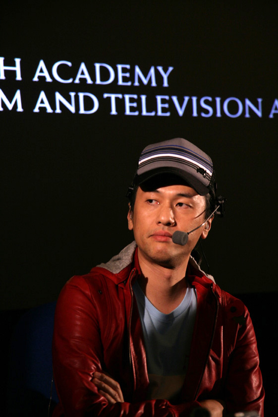
The Pop Star Who Invented The Rhythm Gameリズムゲームを発明したポップスター
Masaya Matsuura (松浦 雅也) is a Japanese musician, composer, and game designer born June 16, 1961 in Osaka. Before he ever touched a game console, he had already spent more than a decade as one half of the synth-pop duo PSY-S, releasing ten studio albums for Sony Music between 1985 and 1996 and helping pioneer the use of the Fairlight CMI sampler in Japanese pop. When he stepped away from the band in 1996 to found NanaOn-Sha, he carried that obsessive love of sampling and rhythm directly into his next project — a tiny rapping dog named PaRappa — and almost single-handedly defined the modern music game.松浦雅也は1961年6月16日、大阪生まれの日本のミュージシャン、作曲家、ゲームデザイナーです。ゲーム機に触れるよりずっと前から、シンセポップ・デュオPSY・S（サイズ）の片割れとして、1985年から1996年までソニー・ミュージックから10枚のスタジオアルバムを発表し、フェアライトCMIサンプラーを日本のポップスに導入したパイオニアの一人として活動していました。1996年にPSY・Sを離れて七音社（NanaOn-Sha）を設立した彼は、そのサンプリングとリズムへの執着をそのまま次の作品——ラップする小さな犬「パラッパ」——へと持ち込み、ほぼ独力で現代の音楽ゲームというジャンルを定義しました。
Matsuura graduated from Ritsumeikan University with a degree in Industrial Society in 1983 and almost immediately formed PSY-S with vocalist Chaka (Mami Yasunori). Through the late 1980s and early 1990s the duo produced anime themes, commercial jingles, and pop hits while Matsuura quietly grew fascinated with multimedia. In 1993 he became the first Japanese musician to release a commercial Macintosh CD-ROM, The Seven Colors: Legend of PSY•S City, which won Japan's Multimedia Grand Prix and convinced him that interactive software, not music videos, was the medium that could finally let his songs play back the way he heard them in his head.1983年に立命館大学産業社会学部を卒業した松浦は、ほぼ間を置かずにヴォーカリストCHAKA（安蘭真美）とPSY・Sを結成します。1980年代後半から1990年代前半にかけて、デュオはアニメ主題歌、CMジングル、ポップヒットを次々と生み出していきました。同時に松浦はマルチメディアへの興味を深め、1993年には日本のミュージシャンとして初めて市販Macintosh CD-ROM作品『The Seven Colors: Legend of PSY・S City』を発表。同作はマルチメディアグランプリを受賞し、彼自身に「音楽ビデオではなくインタラクティブソフトウェアこそが、頭の中で鳴っている音楽をそのまま再生できる媒体だ」と確信させる体験となりました。
1994–1996 — PaRappa the Rapper1994〜1996年 — パラッパラッパー
Development began in 1994, before the original PlayStation had even reached store shelves. Matsuura had attended Sony's first licensee briefing and walked out convinced the new console was an undertaking that would reshape gaming. A Sony producer introduced him to the New York pop artist Rodney Alan Greenblat, and the two prototyped a rap-based game using paper cut-outs of Rodney's existing characters — the seed of PaRappa's signature flat 2D-on-3D look. Matsuura served as producer, designer, and lead composer, co-writing the soundtrack with Yoshihisa Suzuki. He refused to build the score on the era's standard MIDI synth rigs, leaning entirely on hardware samplers instead because he wanted human voices — not synthesised tones — at the centre of every cue. The Japanese lyrics he drafted alone; the English versions came later, in New York, where rapper Ryu Watabe improvised translations off the cuff in the booth. PaRappa the Rapper launched in Japan on December 6, 1996 and quietly built into a cultural phenomenon over the following year — a delayed success Matsuura credits to Sony's relentless promotion department. He still describes the game as the story of "a once-in-a-lifetime, important youthful period of a sensitive boy."開発は1994年、初代PlayStationが発売される以前に始まりました。松浦はソニーの最初のライセンシー説明会に出席し、「この新型機はゲームのあり方を作り変える壮大な事業になる」と確信して帰路につきます。やがてソニーのプロデューサーから紹介されたのが、ニューヨークを拠点とするポップ・アーティストロドニー・アラン・グリーンブラットでした。二人は当初、ロドニーが手がけていた既存キャラクターのペーパー・カットアウトを使ってラップゲームのモックアップを作成。これがパラッパ独特の「3D空間に貼り付いた2Dキャラ」というルックの原型になります。松浦は本作でプロデューサー、デザイナー、メインコンポーザーを兼任し、サウンドトラックを鈴木慶尚と共作。当時主流だったMIDIシンセではなく、すべてサンプラーで録音することを徹底しました。歌詞はまず日本語ですべて書き起こし、その後ニューヨークまで飛んでラッパーワタベリュウにフリースタイルで英訳してもらうという贅沢な手順を踏んでいます。1996年12月6日に日本で発売された『パラッパラッパー』は、発売直後ではなく約1年かけて少しずつ大きな現象へと育っていきました。松浦自身は、この遅咲きの成功をソニー宣伝部の粘り強いキャンペーンのおかげだと語っており、いまもこの作品を「感受性の強い少年が一度しか味わえない、特別な青春期の物語」として語り続けています。
1997–1999 — Um Jammer Lammy1997〜1999年 — ウンジャマ・ラミー
By the time PaRappa shipped, Matsuura felt creatively gutted: "empty and in a daze for a long time." He could not imagine continuing the rapping dog's story so soon, and even though Greenblat lobbied for a direct sequel, Matsuura's stated philosophy was to "turn everything upside down and do it backwards." The result was Um Jammer Lammy, a guitar-driven spin-off centred on the painfully shy left-handed lamb Lammy and her band MilkCan. Matsuura composed and produced the bulk of the soundtrack with returning collaborator Yoshihisa Suzuki and newcomer Shigeyoshi Kawagoe, deliberately writing more difficult charts as a direct response to PaRappa fans who had complained the first game was too forgiving. Greenblat later said the rise of consumer email had transformed the workflow — instead of faxing pencil sketches across the Pacific the two could now trade ideas in real time. Released on PS1 in 1999, the game won the inaugural Interactive Achievement Award for "Outstanding Achievement in Original Music Composition" and is the closest thing to a Matsuura solo album in playable form.『パラッパラッパー』を世に送り出した直後、松浦は創作的に燃え尽きてしまい、「長い間、空っぽで呆然としていた」と振り返っています。ラッパー犬の物語をすぐに続ける気にはなれず、グリーンブラットからは正統な続編を望む声が寄せられたものの、松浦の信条は「すべてをひっくり返して、逆向きに作る」というもの。そうして生まれたのが、極度の人見知りでギターを弾く左利きの羊ラミーと彼女のバンドミルクカンを主役に据えたスピンオフ『ウンジャマ・ラミー』でした。サウンドトラックの大半は松浦と前作の盟友・鈴木慶尚、そして新たに加わった河越重義の三名で作曲・プロデュース。前作を「簡単すぎる」と言ったプレイヤーへの返答として、譜面の難易度を意図的に上げています。グリーンブラットは後年「個人向けEメールが普及したことで、ファックスで鉛筆のスケッチを太平洋越しにやり取りしていた頃と比べ、ワークフローが一変した」と語っています。1999年にPS1で発売された本作は、第1回Interactive Achievement Awardsで「Outstanding Achievement in Original Music Composition（最優秀オリジナル音楽作曲賞）」を受賞しており、いまなおプレイ可能な「松浦ソロアルバム」にもっとも近い作品と評されています。
Sandwiched between the two PaRappa games came one of Matsuura's strangest works: Vib-Ribbon (1999). Built entirely from wireframe vector graphics and small enough to run from PlayStation RAM after the disc was ejected, Vib-Ribbon let players insert their own audio CDs and generated a unique level from each track. Matsuura kept the design deliberately abstract — no story, no characters, no setting — because he was wary of any narrative element accidentally colliding with the personal memories players already attach to their own music collections. The Museum of Modern Art in New York acquired Vib-Ribbon in 2012, and Matsuura has credited the experiment with quietly putting his creative wiring back together — enough, eventually, to imagine a PaRappa sequel again. Without that detour, PaRappa the Rapper 2 would never have happened.2作のパラッパの間に挟まる形で生まれたのが、松浦のもっとも奇妙な作品のひとつ『ビブリボン』（1999）です。グラフィックを完全にワイヤーフレームのベクター線だけで構成し、ディスクを抜いた後でもPlayStationのRAMから動作するほど小さなプログラムサイズに収めた本作では、プレイヤーが手持ちの音楽CDを差し込むと、その楽曲ごとに固有のステージが生成されました。松浦は「物語が、プレイヤーの中にすでにある音楽の記憶に踏み込んでしまうのを避けたかった」と語っており、デザインを徹底して抽象に保っています。同作は2012年にニューヨーク近代美術館（MoMA）に収蔵されており、松浦は「『パラッパ2』に立ち返るに足るだけ、自分の創作回路を再接続してくれた作品」と振り返っています。本作なくして『パラッパラッパー2』は存在しなかったでしょう。
1999–2001 — PaRappa the Rapper 21999〜2001年 — パラッパラッパー2
After Vib-Ribbon and a much-needed creative reset, Matsuura finally felt ready to tell a sequel story. PaRappa the Rapper 2 launched in Japan in August 2001 and worldwide in early 2002 as a flagship rhythm title for the PlayStation 2, this time centred around a town-wide noodle obsession. Matsuura's compositional fingerprints are heavier than ever: of the 33 cues on the official soundtrack he wrote tracks 2, 3, 6, 8, 11, 15, 21, 25, 27, 29, 30, 31, and 32 outright, co-arranged the rest with Yoshihisa Suzuki, Rebi Yamasaki, and Mia Yamasaki, and personally performed nearly every instrument on the record. The two big celebrity collaborations on tracks 4 and 33 — featuring De La Soul and Japanese R&B duo Double — were also co-written by Matsuura. He served once again as director, lead designer, and producer at NanaOn-Sha.『ビブリボン』を経て、ようやく創作的な余白を取り戻した松浦は、続編を書ける気持ちに辿り着きます。2001年8月に日本で、2002年初頭に海外で発売された『パラッパラッパー2』は、PlayStation 2の看板リズムタイトルとして、街中が「ヌードル」をめぐる騒動に明け暮れる物語を描きました。本作には松浦の作曲家としての指紋がこれまで以上に色濃く刻まれています。公式サウンドトラック収録33曲のうち、2、3、6、8、11、15、21、25、27、29、30、31、32の各トラックを単独で作曲。残りの楽曲も鈴木慶尚、山崎レビ、山崎ミアらと共同で編曲し、ほぼすべての楽器を松浦自身が演奏しています。De La Soulと日本のR&BデュオDOUBLEを迎えたトラック4・33は、いずれも松浦が共作者としてクレジットされています。本作でも七音社のディレクター、リードデザイナー、プロデューサーとして全体を統括しました。
2006–2007 — PaRappa the Rapper (PSP)2006〜2007年 — パラッパラッパー（PSP）
For the franchise's tenth anniversary, NanaOn-Sha and Sony returned to the original 1996 game and ported it to the PlayStation Portable in 2007. Matsuura signed off on the audio remaster, supervised the addition of downloadable bonus songs distributed weekly through the PlayStation Store after launch, and approved the wide-screen presentation of Greenblat's original character sheets. While he was no longer director on a day-to-day basis, the PSP version is the first time Matsuura's PaRappa music was made portable, and the package — including a fold-out poster and bonus art — leans heavily on his original 1996 audio masters.シリーズ10周年を機に、七音社とソニーは1996年のオリジナル『パラッパラッパー』をPSPへ移植し、2007年に発売しました。松浦は本作で音声のリマスター監修を担当し、発売後にPlayStation Storeを通じて毎週順次配信されたダウンロード追加楽曲の構成を監督。さらにグリーンブラットによるオリジナルのキャラクターシートをワイドスクリーン向けに整え直す作業にも目を通しています。日常のディレクションには関わらなくなっていたものの、本作は松浦のパラッパ楽曲が初めてポータブル機で聴けるようになった瞬間であり、折り込みポスターやボーナスアートを含むパッケージ全体が、松浦の1996年当時のオリジナル音源を起点として組み立てられました。
2016–2017 — PaRappa the Rapper Remastered2016〜2017年 — パラッパラッパー リマスター
PaRappa the Rapper turned twenty in December 2016, and Sony Japan Studio commemorated the milestone with a 4K-ready remaster for the PlayStation 4. A free playable demo dropped on December 3, 2016 to kick off the anniversary year, and the full remaster shipped on April 4, 2017. Although the project was led by Japan Studio, Matsuura personally returned to the original audio masters and remixed them for high-resolution playback, reissuing the soundtrack album the same year to commemorate twenty years of the game. The release also bundled in every downloadable bonus song from the 2007 PSP edition, making it the most complete version of his original 1996 score that exists. (Tinkerers digging into the PS4 disc later figured out that what Sony shipped was, underneath, the 2007 PSP build piped through an internal emulator with the assets swapped for high-resolution replacements — but Matsuura's audio sits cleanly remastered on top of that runtime.)『パラッパラッパー』は2016年12月に発売20周年を迎え、ソニー・ジャパンスタジオはこの節目を記念してPlayStation 4向けの4K対応リマスター版を制作しました。アニバーサリーイヤーの幕開けとして2016年12月3日に無料の体験版が配信され、フル版は2017年4月4日に発売されています。プロジェクト自体はジャパンスタジオが主導したものの、松浦自身もオリジナルのオーディオマスターに立ち返り、ハイレゾ再生用にリミックスを施しました。同時に、ゲーム発売20周年を記念してサウンドトラックアルバムも再発されています。本作には2007年のPSP版で配信されていたダウンロード楽曲もすべて同梱されており、1996年のオリジナルスコアをもっとも完成された形で味わえるバージョンとなりました。（後にホームブリュー研究者によって、PS4版の中身は高解像度テクスチャを差し替えたPSP版がエミュレータ上で動作している実装であることが明らかになりましたが、その上で鳴っている松浦の音源は完全にリマスターされたものです。）
In 2017 Matsuura announced Project Rap Rabbit alongside Gitaroo Man creator Keiichi Yano — a Kickstarter-funded spiritual successor to PaRappa that ultimately fell short of its funding goal. Since then he has stepped largely back into music, lecturing on rhythm-game design, performing at vinyl-listening events demonstrating bitrate differences (he is famously preoccupied with the philosophical implications of digital sampling), and watching the franchise carry on without him. He has been clear in interviews that he is no longer chasing hardware: "I'm not interested in a 'switch' itself. I am interested in the darkness that is illuminated by the light that it turns on." Whatever PaRappa does next, every melody, every "Kick! Punch! It's all in the mind!", every backing track of milk-and-noodle bliss in the franchise was sketched, sequenced, sampled, and signed off by him.2017年、松浦は『ギタルマン』の生みの親・矢野慶一とともに、パラッパの精神的後継作と位置付けたKickstarterプロジェクト『Project Rap Rabbit』を発表しますが、目標額に届かず資金調達は不成立に終わりました。以後の松浦は活動の重心を音楽へ戻し、リズムゲーム設計に関する講演を続けながら、ビットレート違いの音源を聴き比べるヴァイナルイベントで演奏したりと、デジタルサンプリングの哲学的意味について語り続けています（この問題への執着で彼は知られています）。インタビューでも、もはやハードウェアそのものには関心がないと明言しており、「『スイッチ』自体には興味がない。私が興味があるのは、そのスイッチが点ける光に照らされる闇の方だ」と語っています。今後パラッパがどこへ向かうにせよ、シリーズに流れるすべてのメロディ、「Kick! Punch! It's all in the mind!」のあらゆるフック、ミルクとヌードルにまつわる多幸感あふれるバックトラックの一音一音は、松浦雅也の手によってスケッチされ、シーケンスされ、サンプリングされ、最終チェックを受けてきたものなのです。
— AT A GLANCE —— プロフィール —
Born生年月日
June 16, 1961 — Osaka, Japan1961年6月16日 — 大阪
Education学歴
Ritsumeikan University — Industrial Society (1983)立命館大学 産業社会学部（1983年卒）
Bandバンド
PSY-S (1985–1996)
Studio所属
NanaOn-Sha (founded 1996)七音社（1996年設立）
PaRappa Rolesパラッパでの役割
Producer · Director · Lead Composerプロデューサー／ディレクター／メインコンポーザー
PaRappa Games主要作
PaRappa the Rapper (1996), Um Jammer Lammy (1999), PaRappa the Rapper 2 (2001), PaRappa PSP (2007), PaRappa Remastered (2017)パラッパラッパー（1996）、ウンジャマ・ラミー（1999）、パラッパラッパー2（2001）、パラッパラッパー PSP（2007）、パラッパラッパー リマスター（2017）
Other Gamesその他
The Seven Colors (1993), Vib-Ribbon (1999), Mojib-Ribbon (2003), Vib-Ripple (2004), Major Minor's Majestic March (2009)The Seven Colors（1993）、ビブリボン（1999）、モジブリボン（2003）、ビブリップル（2004）、メジャー・マイナーズ・マジェスティック・マーチ（2009）
Honours受賞
Multimedia Grand Prix (1993), IAA Original Music Composition (2000), IGDA First Penguin Award (2004), IGN Top 100 Game Creators (2009)マルチメディアグランプリ（1993）、IAA最優秀オリジナル音楽作曲賞（2000）、IGDA First Penguin Award（2004）、IGN歴代ゲームクリエイター100選（2009）
★ VOICE ACTORS ★★ 声優陣 ★
From the very first cue of "Stage 1: Chop Chop Master Onion's Rap" to PaRappa 2's noodle-fuelled finale, every word in the PaRappa series is sung, rapped, or spoken — never delivered by a synthesiser. NanaOn-Sha and Sony Computer Entertainment built the games around a tight ensemble of working New York musicians, Broadway-bound vocalists, and Tokyo radio personalities. Most of the lead cast members were chosen because they were already touring or recording artists, and Masaya Matsuura wrote the rap stages around their actual voices. Below is a chapter-by-chapter look at the people you've been listening to since 1996, what they did across the three mainline games (PaRappa the Rapper, Um Jammer Lammy, PaRappa the Rapper 2) and the broader careers they led off-stage.『パラッパラッパー』ステージ1「タマネギ先生のラップ」最初のひと声から、『パラッパラッパー2』のヌードル決戦まで、シリーズに登場するすべての台詞、歌、ラップは生身の声優・シンガーが録音したものです。シンセや合成音声で代用された箇所は一切ありません。七音社とソニー・コンピュータエンタテインメントは、ニューヨークで活動する現役ミュージシャン、ブロードウェイ志望の若手シンガー、そして東京のラジオパーソナリティで構成された少数精鋭のキャストを軸にゲームを設計しました。主要キャストの大半は当時すでにライブやレコーディング活動を行っていたアーティストで、松浦雅也は「実際の声」に当て書きする形でラップステージを作曲しています。以下では、1996年以降あなたが耳にしてきた声の主たちを章立てで紹介し、3作の本編（『パラッパラッパー』『ウンジャマ・ラミー』『パラッパラッパー2』）における役割と、ステージ外での経歴をたどっていきます。
Dred Foxx — PaRappaドレッド・フォックス — パラッパ
Born Lukan Outdawzman on May 9, 1971, the New York rapper performing as Dred Foxx is the voice and the actual rap delivery of PaRappa Rappa across all three mainline games. His audition take in 1996 essentially became the character's permanent vocal identity: every "Kick! Punch! It's all in the mind!" you can hum from memory is his. He returned to the booth for Um Jammer Lammy in 1999 (PaRappa appears as a guest rapper in the band's bonus stages) and again for PaRappa the Rapper 2 in 2001, where he was credited under his birth name John Simpson III. Outside the franchise he has also recorded as a solo hip-hop artist and reprised PaRappa for the 2012 PlayStation crossover PlayStation All-Stars Battle Royale.本名ルーカン・アウトダウズマン、1971年5月9日生まれのニューヨーク出身ラッパードレッド・フォックスは、本編3作すべてでパラッパ・ラッパーの声と実際のラップを担当している人物です。1996年のオーディションで残したテイクが、そのままこのキャラクターの恒久的な声のアイデンティティとして固定されました——あなたが反射的に口ずさめる「Kick! Punch! It's all in the mind!」は、すべて彼のヴォーカルです。1999年の『ウンジャマ・ラミー』ではバンドのボーナスステージにゲストラッパーとして登場するパラッパを再演し、2001年の『パラッパラッパー2』では本名のジョン・シンプソン3世名義で再びマイクを握りました。シリーズの外ではソロのヒップホップアーティストとしても活動しており、2012年のPlayStationクロスオーバー作『PlayStation All-Stars Battle Royale』でもパラッパ役で復帰しています。
Sara Ramirez — Lammyサラ・ラミレス — ラミー
Mexican-American singer-actor Sara Ramirez (born Sara Elena Ramírez Vargas, August 31, 1975, Mazatlán, Sinaloa) recorded the role of Lammy in 1999 — Um Jammer Lammy was, in fact, their first ever voice-acting credit. Ramirez was a recent Juilliard fine-arts graduate who had just made their Broadway debut in Paul Simon's The Capeman (1998), and the breathy, anxiety-ridden delivery they brought to Lammy turned out to be the same expressive register that would later win them a Tony Award in 2005 for playing the Lady of the Lake in Spamalot. Ramirez reprised Lammy for her cameo appearances in PaRappa the Rapper 2 in 2001.メキシコ系アメリカ人のシンガー＆俳優サラ・ラミレス（本名サラ・エレナ・ラミレス・ヴァルガス、1975年8月31日メキシコ・シナロア州マサトラン生まれ）は、1999年にラミー役を吹き込みました。実は『ウンジャマ・ラミー』が彼女にとって人生初の声優クレジットでした。当時のラミレスはジュリアード音楽院の美術専攻を卒業したばかりで、ポール・サイモンのブロードウェイミュージカル『The Capeman』（1998）でデビューしたばかり。ラミーに与えた息の薄い、不安にうずくような声色は、のちに2005年のミュージカル『Spamalot』でレディ・オブ・ザ・レイク役を務めトニー賞（最優秀ミュージカル助演女優賞）を獲得することになる、その表現レンジと同じ系統のものでした。2001年の『パラッパラッパー2』にもラミー役で再登板。
Michele Burks — Katy Kat & Cheap Cheapミシェル・バークス — ケイティ・キャット／チープチープ
Houston-born vocalist Michele Burks (November 16, 1968 – February 5, 2016) defined the singing voice of Katy Kat from 1996 onward and pulled double duty as the chicken cooking instructor Cheap Cheap the Cooking Chicken in PaRappa the Rapper. Her sharp, rangy alto carried Stage 2's "Cheap Cheap's Cooking Rap" and the entire MilkCan band performance in Um Jammer Lammy, where she returned as Katy on bass and lead vocals. Outside the games she was an active session and stage singer in the New York scene; the in-universe MilkCan album Make It Sweet!, released by Sony Music on June 19, 1999, features Burks performing the bulk of the lead vocals as Katy. She passed away in 2016 in her hometown of Houston, Texas.テキサス州ヒューストン出身のヴォーカリストミシェル・バークス（1968年11月16日 – 2016年2月5日）は、1996年以降ケイティ・キャットの歌声を決定づけた人物であり、初代『パラッパラッパー』では同時に料理担当の鶏先生チープ・チープ役も兼任しました。彼女のシャープでレンジの広いアルトは、ステージ2「チープ・チープの料理ラップ」と、続編『ウンジャマ・ラミー』におけるバンド・ミルクカンの全演奏を支えています。同作ではベース＆リードヴォーカル担当のケイティとして再登場しました。ゲーム外でもニューヨーク・シーンで現役のセッションシンガー／ステージシンガーとして活動し、1999年6月19日にソニー・ミュージックから発売された劇中バンド名義のアルバム『Make It Sweet!』では、ケイティ役としてリードヴォーカルの大半を担当しています。2016年、故郷ヒューストンで逝去しました。
Tokyo radio personality, rap producer, and recording artist Ryu Watabe (credited simply as RYU) is the most multi-tasking voice in the franchise. In PaRappa the Rapper (1996) he originated Chop Chop Master Onion, the muscular self-help guru of Stage 1, and the unbearable rich kid Joe Chin; in Um Jammer Lammy (1999) he added the chain-smoking Captain Fussenpepper of the airplane stage and the rocket-powered drummer Ma-san of MilkCan; and in PaRappa the Rapper 2 (2001) he reprised Master Onion and Captain Fussenpepper. His most famous on-record credit, however, predates the cast list: it was Watabe who flew with Matsuura to New York for the original 1996 sessions and improvised the English versions of the Japanese rap lyrics on the fly in the booth, effectively translating PaRappa as he performed it.東京を拠点とするラジオパーソナリティ／ラッププロデューサー／レコーディングアーティストワタベリュウ（クレジットはRYU）は、シリーズ最多役の声の主です。1996年の『パラッパラッパー』ではステージ1のマッチョな自己啓発系師匠タマネギ先生と、いけすかない金持ちのジョー・チンを担当。1999年の『ウンジャマ・ラミー』ではヘビースモーカーのフセンペッパー大佐と、ロケット出力ドラマーマサン（ミルクカン）を追加。2001年の『パラッパラッパー2』では再びタマネギ先生とフセンペッパー大佐を演じています。ただし、彼の最も有名なクレジットはこのキャスト表より一段遡ります——1996年のオリジナル収録で松浦と共にニューヨークへ飛び、日本語のラップ歌詞をブース内でその場で英語にフリースタイル翻訳してみせたのが、ほかならぬワタベだったのです。彼は実演しながらパラッパを翻訳していたわけです。
Kenya Hathaway — Sunny Funnyケニヤ・ハサウェイ — サニー・ファニー
R&B and jazz singer Kenya Hathaway — daughter of soul legend Donny Hathaway — provided the speaking and singing voice of Sunny Funny, PaRappa's flower-shaped crush, in PaRappa the Rapper (1996). Hathaway was already an established session vocalist in New York and Los Angeles when she recorded the role; in the years after PaRappa she became one of the most-in-demand background singers in American television, racking up roughly thirty appearances backing contestants on American Idol and contributing harmonies to records by the likes of Whitney Houston and Michael Bublé. The role of Sunny was recast for PaRappa the Rapper 2 with Lea Alomar, but Hathaway's original take is the version that defined the character.R&B／ジャズ・シンガーケニヤ・ハサウェイ——ソウルの伝説的シンガー、ダニー・ハサウェイの娘——は、1996年の『パラッパラッパー』でパラッパの想い人である花の少女サニー・ファニーの話し声・歌声を担当しました。録音当時のハサウェイはすでにニューヨークとロサンゼルスで第一線のセッションヴォーカリスト。パラッパ以降は全米でもっとも引っ張りだこのバックグラウンドシンガーの一人となり、『American Idol』ではコンテスタントの後ろで歌う形で約30回出演、ホイットニー・ヒューストンやマイケル・ブーブレらの作品にもハーモニーを提供しています。サニー役は『パラッパラッパー2』ではリア・アロマーへ交代しましたが、現在もキャラクターの定義となっているのは彼女のオリジナルテイクです。
Armstead Christian — PJ Berri & PaRappa Papaアームステッド・クリスチャン — PJベリー／パラッパパパ
Vocalist and Berklee College of Music professor Armstead Christian (May 20, 1951 – January 4, 2016) was the franchise's quietest workhorse, voicing the perpetually-sleepy DJ bear PJ Berri in all three mainline games as well as the loving but absent-minded PaRappa Papa in the original 1996 game and PaRappa 2. He joined the Berklee faculty in 1999 — the same year as Um Jammer Lammy — and spent the next sixteen years there teaching ear training, vocal sight-reading, and studio backing-vocal technique under the affectionate nickname "Papa Flo." Christian had been living with sarcoidosis since the late 1970s, a condition that progressively limited his lung capacity but never appeared to slow his work; he reprised PJ Berri one last time for 2012's PlayStation All-Stars Battle Royale. He died in New Bedford, Massachusetts in early 2016.ヴォーカリストでありバークリー音楽大学の教授でもあったアームステッド・クリスチャン（1951年5月20日 – 2016年1月4日）は、シリーズでもっとも目立たぬ働き者でした。常に眠そうなDJクマPJベリーを本編3作すべてで演じ、加えて1996年の初代と『パラッパラッパー2』では愛情深いが少々抜けているパラッパパパ役も兼任しています。彼がバークリー音楽大学の教員になったのは1999年——ちょうど『ウンジャマ・ラミー』と同じ年——で、以後16年間、聴音、ヴォーカル初見訓練、スタジオでのバックヴォーカル技術などを「Papa Flo（パパ・フロ）」の愛称で教え続けました。1970年代後半から肉芽腫性疾患のサルコイドーシスを抱え、肺機能が徐々に低下していたものの、活動ペースが落ちる様子はほとんど見られませんでした。2012年の『PlayStation All-Stars Battle Royale』でPJベリー役を最後に再演し、2016年初頭、マサチューセッツ州ニューベッドフォードで生涯を閉じています。
Lenky Don — Prince Fleaswallowレンキー・ドン — プリンス・フリースワロー
Jamaican-American dancehall and reggae MC Lenky Don (d. January 29, 2022) brought a deep-toned ragga delivery to Prince Fleaswallow, the green-haired flea-market philosopher of Stage 3. His "Pricks and stones may break my bones, but rap will never hurt me" remains one of the most-quoted lines in the franchise. He returned to play Fleaswallow in Um Jammer Lammy and PaRappa the Rapper 2, and his measured, unhurried cadence is the closest thing the games have to an actual reggae record. He continued working as a touring MC and producer in the New York / Brooklyn dancehall circuit until his death in 2022.ジャマイカ系アメリカ人のダンスホール／レゲエMCレンキー・ドン（2022年1月29日逝去）は、ステージ3に登場する緑髪のフリーマーケット哲学者プリンス・フリースワローに、深く落ち着いたラガ調の声色を与えました。彼の「Pricks and stones may break my bones, but rap will never hurt me」は、いまもシリーズで最も引用されるラインの一つです。続編『ウンジャマ・ラミー』『パラッパラッパー2』にもフリースワロー役で復帰しており、その悠然としたフロウは、本シリーズの中でもっとも本物のレゲエ・レコードに近い質感を持っています。逝去まで、ニューヨーク／ブルックリンのダンスホール・サーキットでツアーMC兼プロデューサーとして活動を続けました。
Richard Bush — MC King Kong & Chief Puddle. Vocalist Richard Bush handled two of the franchise's gruffest characters: he is MC King Kong Mushi, the towering rap battle MC who introduces every match in PaRappa the Rapper, and the no-nonsense fire-academy instructor Chief Puddle from Stage 4 of Um Jammer Lammy. Bush returned in PaRappa the Rapper 2 as MC King Kong Mushi for the rap battle subway car. Outside PaRappa he is best known as a New York-based jazz, R&B, and gospel session vocalist who has worked extensively as a backing singer.リチャード・ブッシュ — MCキングコング／チーフ・パドル。ヴォーカリストのリチャード・ブッシュは、シリーズで最もごつい二人を担当しています。一人は『パラッパラッパー』で全ラップバトルの司会を務める巨漢MCキングコング・ムシ。もう一人は『ウンジャマ・ラミー』ステージ4に登場する、規律重視の消防学校教官チーフ・パドルです。『パラッパラッパー2』にも、地下鉄ラップバトル車両のMCキングコング・ムシ役で再登場しました。シリーズの外では、ニューヨークを拠点とするジャズ／R&B／ゴスペルのセッションシンガーとして長年バックヴォーカルを務めてきた人物として知られています。
Saundra Williams — Mooselini. Soul vocalist Saundra Williams voiced the driving-instructor moose Mooselini for Stage 4 of PaRappa the Rapper (1996). Williams had a parallel career as one half of the Sharon Jones-adjacent neo-soul duo Sandra St. Victor & Saundra Williams, and as a backing vocalist on tour with major R&B acts. The role was recast for PaRappa 2, where two new voice actresses played a pair of Mooselinis ("Moosesha #1" and "Moosesha #2"), but Williams's mid-1990s recording is the original.ソンドラ・ウィリアムズ — ムースリーニ。ソウル・ヴォーカリストソンドラ・ウィリアムズは、1996年の『パラッパラッパー』ステージ4に登場する自動車学校教官のヘラジカムースリーニを演じました。ウィリアムズはサンドラ・セント・ヴィクター＆ソンドラ・ウィリアムズというネオソウルデュオの片割れとしての顔を持ち、メジャーなR&Bアーティストのツアーでバックヴォーカルも務めてきたシンガーです。『パラッパラッパー2』では本役は二人組（ムシシャ#1／ムシシャ#2）として別キャストに再キャストされましたが、シリーズの「最初のムースリーニ」は彼女の1990年代半ばの録音です。
Andrew Alonso took the franchise's biggest 2001 villain role as Colonel Noodle, the noodle-obsessed dictator who tries to ramen-fy PaRappa Town. Lea Alomar succeeded Kenya Hathaway as Sunny Funny, while Shannon White took over from Michele Burks as the speaking-and-rapping Katy Kat for the sequel. John James voiced the gruff General Potter military instructor, Ethan Eubanks originated the fast-food nemesis Beard Burger Master, Dean Bowman introduced the philosophical Guru Ant (and reprised MC King Kong Mushi for cameos), and Freedom Bremner did double duty as Hairdresser Octopus and Boxy Boy. The Mooselini role was split between two performers, Kimberly Queen (Moosesha #1) and Aaminah Hassell (Moosesha #2). Each of the seven new teachers in PaRappa 2 was, like the original cast, an active New York vocalist or session musician chosen to fit the genre of their respective stage — funk, country, military marching cadence, R&B, and so on.アンドリュー・アロンソは2001年シリーズ最大の悪役、ヌードルに執着し街中をラーメン化しようとする独裁者カーネル・ヌードル役で参加。リア・アロマーはケニヤ・ハサウェイからサニー・ファニー役を引き継ぎ、シャノン・ホワイトはミシェル・バークスから話し＆ラップ担当のケイティ・キャットを引き継ぎました。ジョン・ジェームズは気難しい軍事教官ポッター将軍を、イーサン・ユーバンクスはファストフード界の宿敵ビアード・バーガー・マスターを新たに造形。ディーン・ボウマンは哲学者然としたグル・アントを導入しつつ（MCキングコング・ムシのカメオも兼任）、フリーダム・ブレムナーは美容師オクトパスとボクシー・ボーイの二役を担当しました。ムースリーニ役は二人体制となり、キンバリー・クイーンがムシシャ#1、アーミナ・ハッセルがムシシャ#2を担当。『パラッパラッパー2』に登場する7人の新先生は、初代キャストと同様、各ステージの音楽ジャンル（ファンク、カントリー、軍隊行進曲、R&B、等々）に合わせて選ばれた現役ニューヨークのヴォーカリストやセッションミュージシャンでした。
— RECURRING CAST AT A GLANCE —— レギュラー陣 早見表 —
Dred Foxx
PaRappa Rappa — all 3 games (1996, 1999, 2001)パラッパ・ラッパー — 本編3作（1996／1999／2001）
The RodneyFun Comic Collection is a set of children's art comics written and drawn by Rodney Alan Greenblat and published in Japan by Little More, released April 19, 2000. Billed as "Rodney's fun, fun world — a first art comic," each slim volume puts one PaRappa-universe character at its center, told in Greenblat's bright, hand-lettered pop-art style. The five-book set covers PJ Berri, Sunny Funny, Katy Kat, PaRappa, and Square E. Bear.ロドニーファン・コミックコレクションは、ロドニー・アラン・グリーンブラットが文と絵を手掛け、日本のリトル・モアから2000年4月19日に発売された子ども向けアートコミックのシリーズです。「ゆかいなゆかいなロドニーのせかい はじめてのアートコミック」と銘打たれ、薄手の各巻がパラッパの世界のキャラクター1体を主役に、グリーンブラットの明るく手描き文字を活かしたポップアート調で描かれています。全5巻でPJベリー、サニー・ファニー、ケイティ・キャット、パラッパ、スクエアEベアーを取り上げています。
— THE SET —— セット —
The complete set fanned out, showing the matching spines and the individual character volumes including "PJ's Funland."全巻を扇状に並べた様子。揃いの背表紙と「PJ's Funland」を含む各キャラクター巻が見える。
Volume 1 cover — characters playing instruments in a bright forest, with the "RodneyFun Comic Collection ①" logo. Tagline reads "Rodney's fun, fun world — a first art comic," priced ¥2,009 + tax from Little More.第1巻の表紙 — 明るい森の中で楽器を演奏するキャラクターたちと「RodneyFun COMIC COLLECTION ①」のロゴ。「ゆかいなゆかいなロドニーのせかい はじめてのアートコミック」のキャッチコピー入りで、リトル・モアより定価本体2,009円＋税。
Back cover of Volume 1 — names the cast (PJ, Sunny, Katy, PaRappa, Square E. Bear), with the April 19, 2000 release date, ¥2,000 price, and ISBN 4-89815-020-9.第1巻の裏表紙 — 登場キャラクター（PJ、サニー、ケイティ、パラッパ、スクエアEベアー）を紹介。2000年4月19日（水）発売、定価本体2,000円、ISBN 4-89815-020-9。
— THE BOOKS —— 各巻 —
Book 1 — "P.J.'s Dreamland" (P.J.のゆめのくに), with PJ Berri crowned as a king on his throne.第1巻 — 「P.J.'s Dreamland」（P.J.のゆめのくに）。王冠をかぶり玉座に座るPJベリー。
Interior art from "P.J.'s Dreamland" — PJ Berri as the crowned king against a checkered backdrop.「P.J.'s Dreamland」の本文アート — チェック模様を背景にした、王冠姿のPJベリー。
Book 2 — "Sunny Funny's Polite Garden Party" (サニーのガーデンパーティーにようこそ), the cast gathered for a tea party.第2巻 — 「Sunny Funny's Polite Garden Party」（サニーのガーデンパーティーにようこそ）。お茶会に集まるキャラクターたち。
Interior art — Sunny Funny carrying a basket overflowing with carrots and vegetables.本文アート — ニンジンや野菜がたっぷり入ったかごを抱えるサニー・ファニー。
Book 3 — "Katy's Shopping Explosion" (ケイティのお買い物大爆発), a busy patchwork cover starring Katy Kat.第3巻 — 「Katy's Shopping Explosion」（ケイティのお買い物大爆発）。ケイティ・キャットを主役にした賑やかなパッチワーク調の表紙。
Interior art — Katy Kat stretching against a striped pink-and-teal background.本文アート — ピンクとティールのストライプ背景でポーズをとるケイティ・キャット。
Book 4 — "PaRappa Gets a Job" (パラッパのバイト大しんぱい!?), PaRappa swamped in a flurry of activity.第4巻 — 「PaRappa Gets a Job」（パラッパのバイト大しんぱい!?）。慌ただしい騒動に巻き込まれるパラッパ。
Interior art — PaRappa running mid-stride with a microphone in hand.本文アート — マイクを手に駆け出すパラッパ。
Book 5 — "Square E. Bear THE WHEEL" (スクエアEベアーのボクの車輪), a scratchy purple-toned cover.第5巻 — 「Square E. Bear THE WHEEL」（スクエアEベアーのボクの車輪）。ラフな線で描かれた紫基調の表紙。
Interior art — Square E. Bear with a lineup of Greenblat's angular geometric characters.本文アート — スクエアEベアーと、グリーンブラットによる角ばった幾何学的なキャラクターたち。
A red-ink RodneyFun Comic Collection print on kraft paper — a loose, sketchy bonus illustration in Greenblat's hand-drawn style.クラフト紙に赤インクで刷られたRodneyFun Comic Collectionのアート — グリーンブラットの手描きタッチによる、ラフでスケッチ風のおまけイラスト。
★ RODNEYFUN — TOYS ★★ ロドニーファン — おもちゃ ★
CREAMTOYZ Lammy (2015) — Japanese plush atelier CREAMTOYZ revisited Lammy in 2015 with a brand-new soft-toy design released in extremely limited numbers. The figure features a chunky red mohair-style hair piece, large screen-printed eyes set into padded fabric domes, the red MilkCan tee with embroidered chest emblem, denim shorts, and pale blue felt feet. Pictured here in the official CREAMTOYZ promotional layout, set against the standard orange UJL flame-pattern background flanked by the "UmJammer / Lammy" wordmark — distinct from the 1999 Sony Creative Products plush line shown above and produced 16 years later as a one-off boutique reissue.CREAMTOYZ ラミー（2015年）— 日本のぬいぐるみ工房 CREAMTOYZ が2015年に、まったく新しいデザインのソフトトイとしてラミーを再解釈し、ごく少数限定でリリースしました。ふっくらとした赤いモヘア風の髪パーツ、パッド入りの布製ドームにはめ込まれた大きなスクリーンプリントの目、刺繍の胸エンブレム付き赤いミルクカンTシャツ、デニムショートパンツ、淡いブルーのフェルト製の足が特徴です。ここでは公式の CREAMTOYZ 販促レイアウトで、定番のオレンジ色のUJLフレーム模様の背景に「UmJammer / Lammy」のロゴを左右に配して撮影されています。上に掲載した1999年のソニー・クリエイティブプロダクツ製ぬいぐるみとは異なり、16年後に単発のブティック向け復刻として制作されたものです。
CREAMTOYZ PaRappa — A companion piece to the CREAMTOYZ Lammy, this PaRappa plush was built on the early PaRappa plush design, with the face parts and the frog beanie emblem re-rendered as embroidery. Rather than overseas factory mass-production, each one was hand-made individually by the Japanese atelier CREAMTOYZ. Shown here in the official CREAMTOYZ promotional layout: PaRappa in his orange frog-crest beanie, blue tee with a red RodneyFun side tag, denim shorts, and red-and-white sneakers, with floppy black ears. It measures roughly 210 mm tall × 150 mm wide × 50 mm deep and is made of polyester (body and stuffing) — built to the same scale as the CREAMTOYZ Lammy so the pair can be displayed together.CREAMTOYZ パラッパ— CREAMTOYZ ラミーの対となる一体で、初期のパラッパぬいぐるみのデザインをベースに、顔のパーツとカエルのビーニーのワッペン部分を刺繍で表現しています。海外工場での大量生産ではなく、日本の工房 CREAMTOYZ が一体ずつ手作りしました。ここでは公式の CREAMTOYZ 販促レイアウトで撮影されており、カエルマーク付きのオレンジビーニー、赤い RodneyFun のサイドタグが付いた青いTシャツ、デニムショートパンツ、赤白のスニーカー、垂れた黒い耳が見えます。サイズは約 高さ210mm × 幅150mm × 厚み50mm、素材はポリエステル（本体・中綿）。CREAMTOYZ ラミーと同じサイズ感で作られており、並べて飾ることができます。
Plush toys from the original PaRappa the Rapper line, produced by licensees including L-Planning, Takara, Sony Creative Products, Bandai, and Taito.オリジナルパラッパラッパーシリーズのぬいぐるみコレクション。エル・プランニング、タカラ、ソニー・クリエイティブプロダクツ、バンダイ、タイトーなどのライセンシーによって制作されました。
— L-PLANNING —— エル・プランニング —
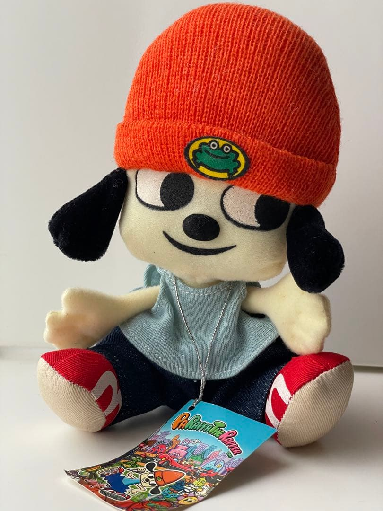
Standing PaRappa Plush (L-Planning) — full-body sitting plush with orange beanie and frog crest, blue tee, denim shorts, and red-and-white sneakers. Shown with the original rainbow PaRappa cast hang-tag.スタンディングパラッパぬいぐるみ（エル・プランニング）— カエルマーク付きオレンジビーニー、青いTシャツ、デニムショートパンツ、赤白のスニーカーを身につけた全身座位ぬいぐるみ。オリジナルの虹色キャラクター集合下げ札付き。
PJ Berri Plush (L-Planning) — orange bear plush with stitched belly cross, sleepy lashed eyes, and purple nose. Shown with the original rainbow PaRappa cast hang-tag attached.PJベリー ぬいぐるみ（エル・プランニング）— お腹のバッテン縫い目、まつ毛付きの眠そうな目、紫の鼻が特徴のオレンジベアぬいぐるみ。オリジナルの虹色キャラクター集合下げ札付き。
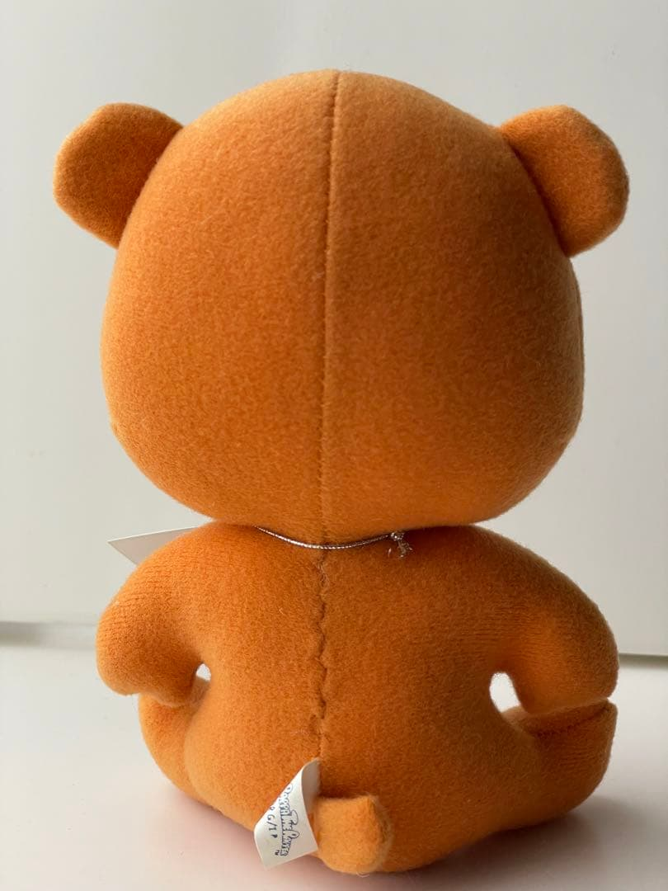
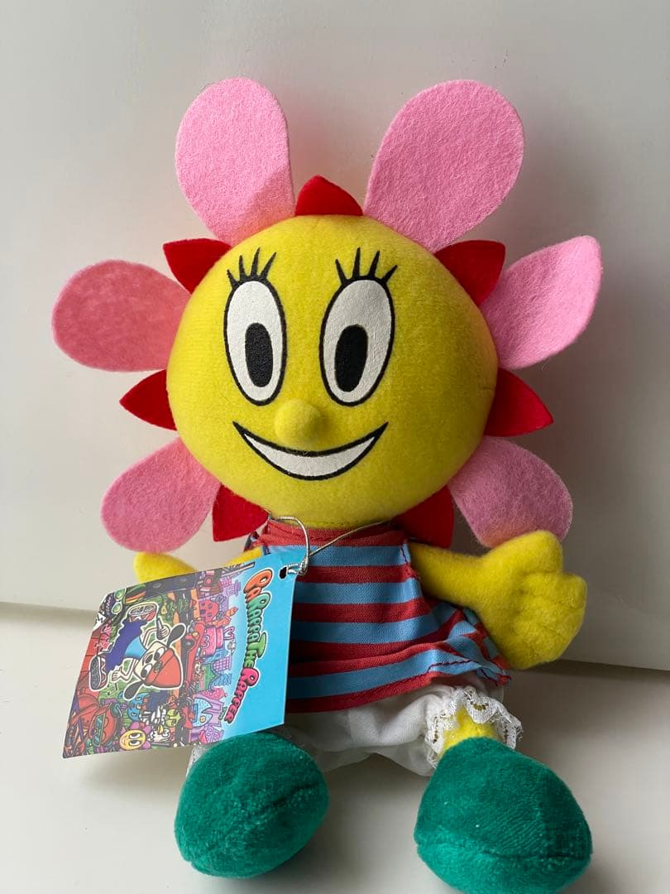
Sunny Funny Plush (L-Planning) — yellow flower-face mascot with pink petal halo, pink-and-blue striped dress, and teal slip-on shoes. Paired with the standard rainbow PaRappa cast hang-tag.サニー・ファニー ぬいぐるみ（エル・プランニング）— ピンクの花びらヘイロー、ピンクとブルーのボーダー柄ワンピース、ティール（青緑）のスリッポンシューズを身につけた黄色い花顔マスコット。シリーズ共通の虹色キャラクター下げ札付き。
Box Back — instruction panel printed entirely in Japanese, listing 「あそびかた」 (how to play) and 「あそぶまえに」 (before playing) sections for the electronic feature, the battery installation diagram, ST safety mark, and the 株式会社バンダイ (Bandai Co., Ltd.) sales-information block. Confirms the unit is a battery-operated talking/dancing plush for ages 3+.箱の背面 — すべて日本語表記の取扱説明パネル。電子ギミック用の「あそびかた」「あそぶまえに」項目、電池の入れ方の図解、STマーク、そして株式会社バンダイの販売元情報ブロックが印刷されている。3歳以上対象、電池駆動でしゃべる・踊るぬいぐるみであることを示す資料。
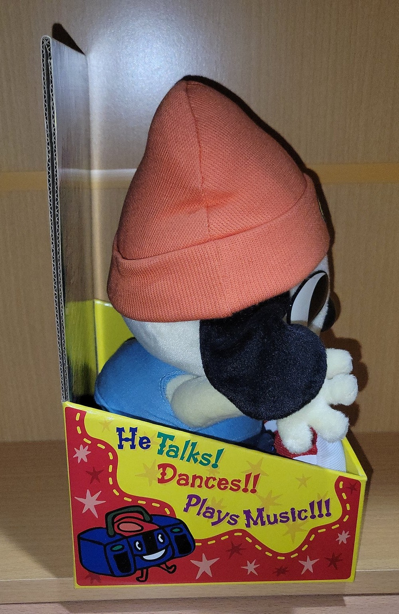
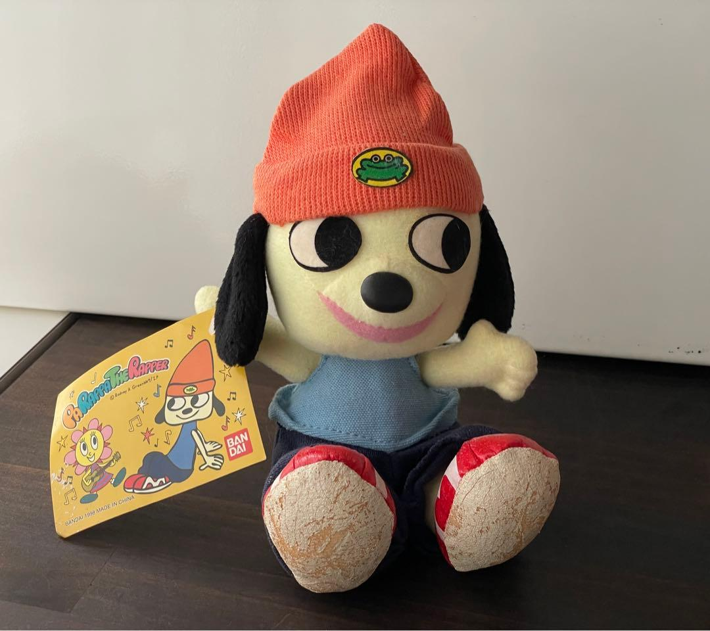
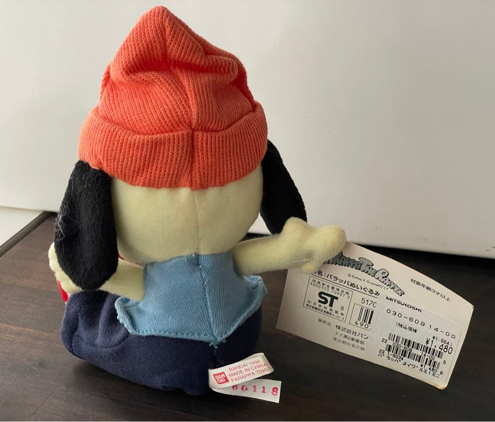
— TAKARA —— タカラ —
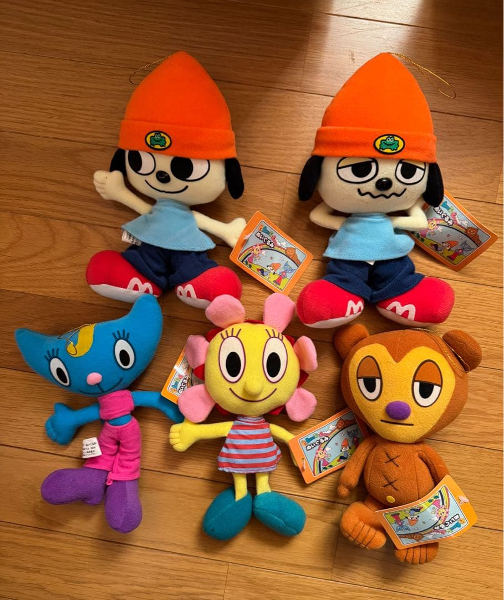
Takara × SEGA Prize Plush Set — amusement-prize mascot plushes distributed exclusively through SEGA arcade claw machines (marked "アミューズメント専用景品", not for general retail). The set includes PaRappa in smile and scowl variants, Katy Kat, Sunny Funny, and PJ Berri.タカラ × SEGAプライズぬいぐるみセット — SEGA直営ゲームセンターのクレーン景品として流通した「アミューズメント専用景品」（一般販売なし）。笑顔と怒り顔の2種のパラッパ、ケイティ・キャット、サニー・ファニー、PJベリーで構成される。
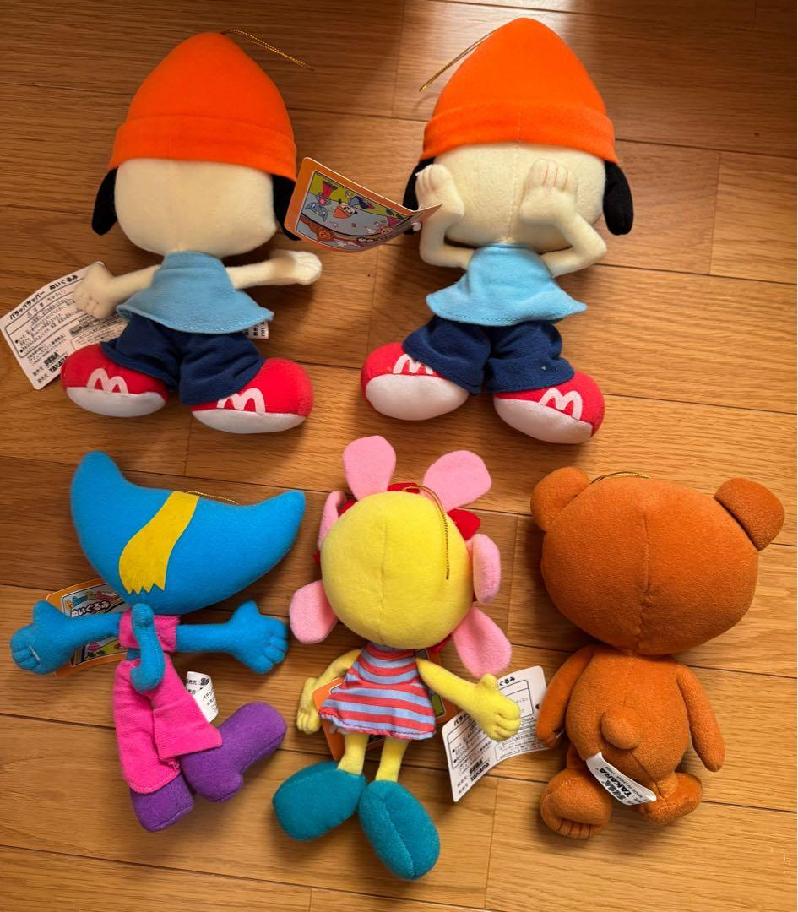
SEGA Prize Set — full lineup of all five mascot plushes laid out together: smiling PaRappa, scowling PaRappa, Katy Kat, Sunny Funny, and PJ Berri. Each unit retains its original gold cord strap and orange "PaRappa The Rapper ぬいぐるみ" hang-tag card.SEGAプライズセット — 5体のキャラクターぬいぐるみ（笑顔のパラッパ、怒り顔のパラッパ、ケイティ・キャット、サニー・ファニー、PJベリー）を並べた全身カット。各個体に金色のループ紐とオレンジの「PaRappa The Rapper ぬいぐるみ」下げ札カードが付属している。
Warning-Tag Detail — reverse safety card listing the product as "アミューズメント専用景品 — この商品は一般市販されておりません" ("Amusement Prize — Not Sold at Retail"), with 販売元 SEGA and 発売元 TAKARA clearly identifying the SEGA Prize / Takara distribution chain.注意事項タグ — 裏面の安全カード。「アミューズメント専用景品 — この商品は一般市販されておりません」と明記され、販売元にSEGA、発売元にTAKARAの記載があり、SEGAプライズ／タカラの流通経路を裏付けている。
Sunny Funny (Takara × SEGA Prize, loose) — single-character close-up of the Sunny Funny entry from the Takara/SEGA Prize line. Yellow embroidered face with pink petal halo, pink-and-blue striped dress, and teal slip-on shoes, paired with the standard rainbow PaRappa cast hang-tag.サニー・ファニー（タカラ×SEGAプライズ・単体）— タカラ／SEGAプライズシリーズのサニー・ファニー単体カット。刺繍の黄色いフェイスにピンクの花びらヘイロー、ピンクとブルーのボーダー柄ワンピース、ティール（青緑）のスリッポンシューズが特徴で、シリーズ共通の虹色キャラクター下げ札が付属する。
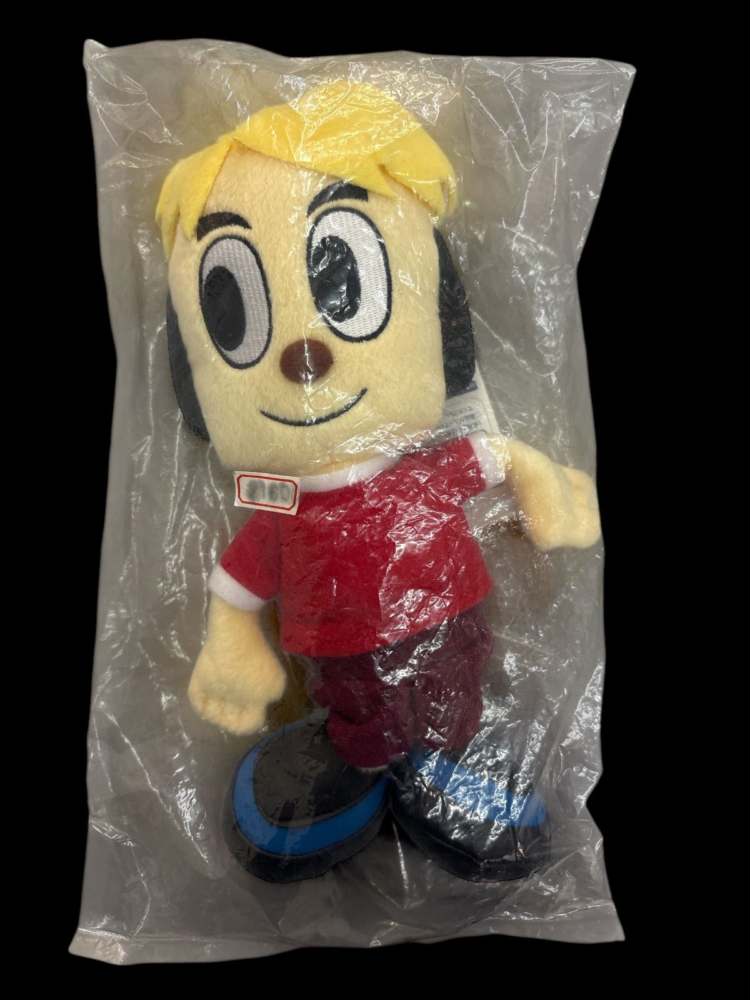
PaRappa The Rapper Anime Plush (2001) — Takara-produced figure of PaRappa in his television-anime outfit: yellow hair, red shirt, dark shorts, no beanie. Matches the redesigned look used across the 30-episode Fuji TV series.パラッパラッパー アニメぬいぐるみ（2001年）— タカラ製。フジテレビ系の全30話アニメ版の新デザイン（金髪・赤シャツ・ダークショーツ、ビーニーなし）を再現したパラッパ人形。
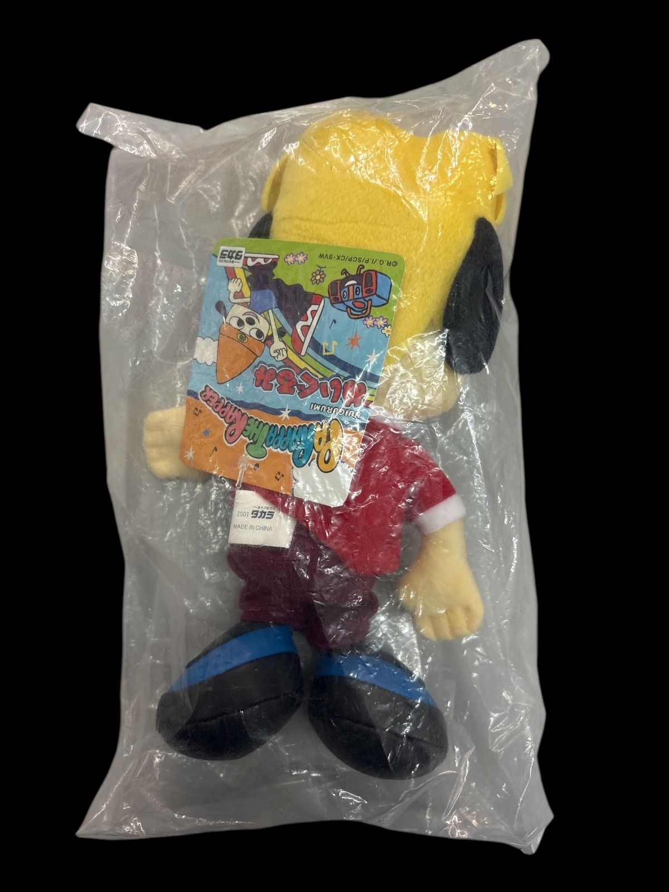
Anime Plush — tag detail. The original hang-tag reads "2001 タカラ / MADE IN CHINA" and sits alongside the rainbow anime-series logo card, confirming Takara's 2001 production run.アニメぬいぐるみ — タグのディテール。オリジナルの下げ札には「2001 タカラ／MADE IN CHINA」と印字され、アニメ版のレインボー仕様ロゴカードと対になっている。タカラの2001年生産であることを示す裏付け資料。
Anime Series — full retail set, factory-bagged. Five characters: Sunny Funny, PJ Berri, anime PaRappa, Katy Kat (UJL), and Lammy (UJL). Each unit ships with the orange "PaRappaTheRapper / ぬいぐるみ" Takara hang-tag.アニメシリーズ — 工場出荷状態の未開封フルセット。サニー・ファニー、PJベリー、アニメ版パラッパ、ケイティ・キャット（UJL）、ラミー（UJL）の5体構成で、各個体にはオレンジ地の「PaRappaTheRapper／ぬいぐるみ」タカラ下げ札が付属する。
Soft Talking PaRappa "Nakayoshi PaRappa" (Takara) — Takara-issued large electronic talking plush. The orange-and-yellow window box puts PaRappa front-and-centre with the 「なかよしパラッパ — パラッパとおしゃべりしよう！」 callout above and the original-game character lineup lining the cloud border.ソフトトーキングパラッパ「なかよしパラッパ」（タカラ）— タカラ発売の大型電子トーキングぬいぐるみ。オレンジとイエローのウィンドウボックスにパラッパが大きく配置され、上部に「なかよしパラッパ — パラッパとおしゃべりしよう！」のキャッチ、雲のフレームには原作版のキャラクター集合イラストがあしらわれている。
Nakayoshi PaRappa (unboxed) — the plush nestled in its inner cardboard tray. Soft full-body PaRappa with embroidered face panels and the iconic frog-emblem orange beanie; the talking circuitry sits inside the torso and is activated by the chest button.なかよしパラッパ（開封）— 内箱トレイに収まったぬいぐるみ本体。刺繍の顔パネルと定番のカエルマーク付きオレンジビーニーを備えた全身ソフトパラッパで、胴体内部にトーキング回路を内蔵、胸のボタンで作動する仕様。
— SONY CREATIVE PRODUCTS —— ソニー・クリエイティブプロダクツ —
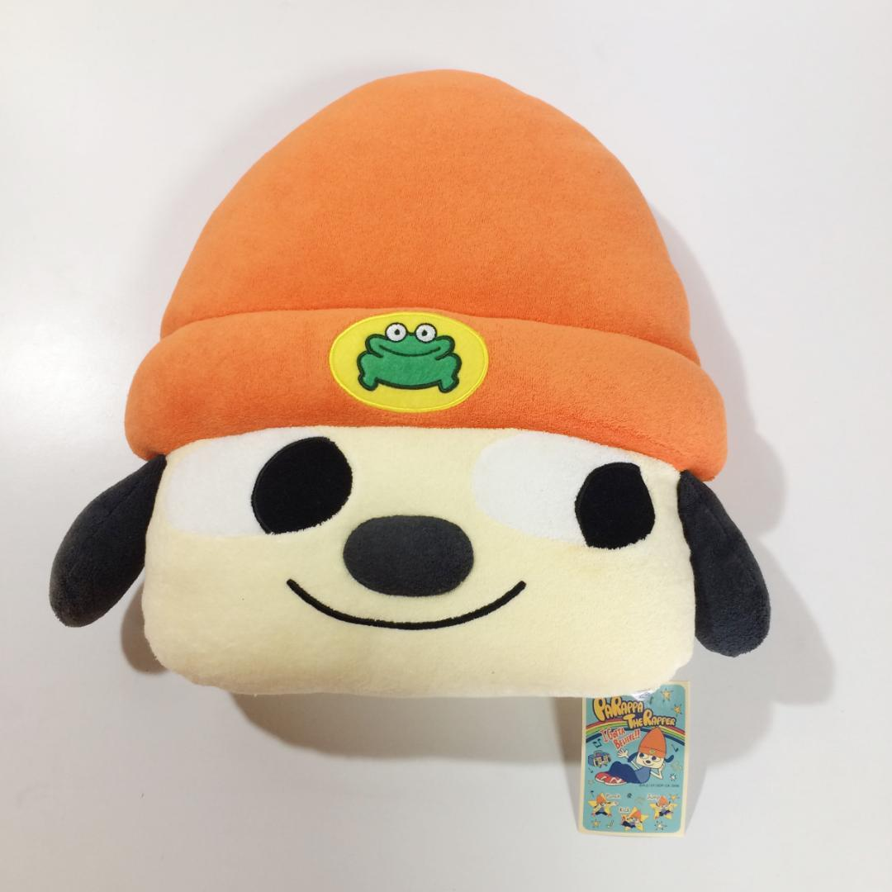
PaRappa Face Cushion (FK-75440-3) — large soft embroidered face-shaped plush by Sony Creative Products. ¥2,500 original MSRP, with an "I Gotta Believe!!" hang-tag card and frog-logo beanie embroidery.パラッパ フェイスクッション（FK-75440-3）— ソニー・クリエイティブプロダクツ製の大判刺繍フェイスクッション。定価2,500円。「I Gotta Believe!!」の下げ札カードとビーニーのカエルロゴ刺繍が特徴。
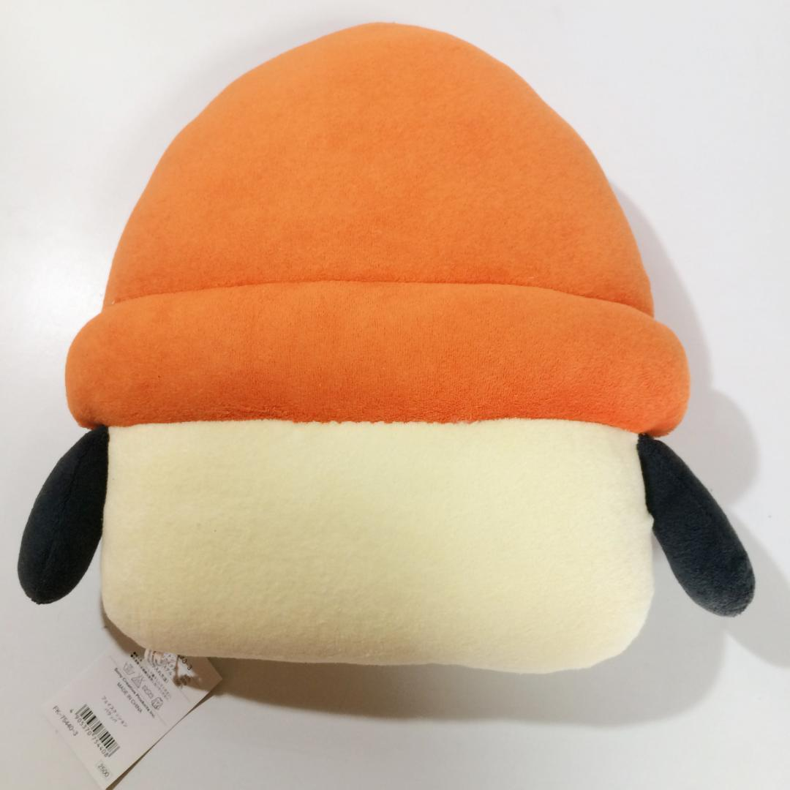
Face Cushion (reverse) — back view of the FK-75440-3 cushion showing the solid orange beanie crown, sewn black ear tabs, and the white care/spec tag printed with the FK-75440-3 product code anchored into the bottom seam.フェイスクッション（裏面）— FK-75440-3クッションの後ろ姿。オレンジのビーニー部分、両側面に縫い付けられた黒い耳タブ、底辺の縫い目に挟み込まれた品番「FK-75440-3」入りの白いお手入れ／品質表示タグが確認できる。
Face Cushion — hang-tag detail showing the Sony Creative Products "PaRappa The Rapper — I Gotta Believe!!" card, with Punch / Kick / Jump action icons lining the bottom strip.フェイスクッション — 下げ札のディテール。ソニー・クリエイティブプロダクツ発行の「PaRappa The Rapper — I Gotta Believe!!」カードで、下段にはPunch／Kick／Jumpのアクションアイコンが並ぶ。
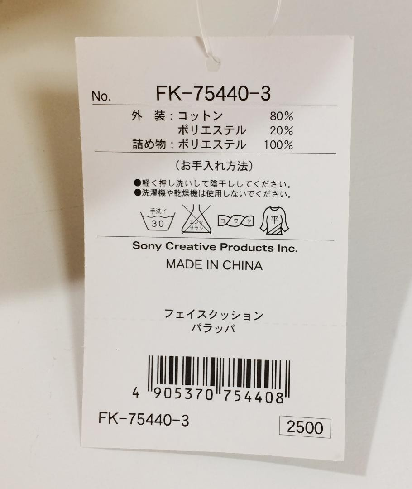
Hang-Tag Reverse — back of the same hang-tag confirming "No. FK-75440-3", a cotton 80% / polyester 20% shell with 100% polyester fill, the Sony Creative Products Inc. / MADE IN CHINA imprint, the "フェイスクッション パラッパ" item name, and the ¥2,500 MSRP barcode strip.下げ札裏面 — 同じ下げ札の裏側。「No. FK-75440-3」、外装コットン80%／ポリエステル20%、詰め物ポリエステル100%の品質表示、Sony Creative Products Inc./MADE IN CHINAの製造表記、商品名「フェイスクッション パラッパ」、そして定価2,500円のバーコードが並ぶ。
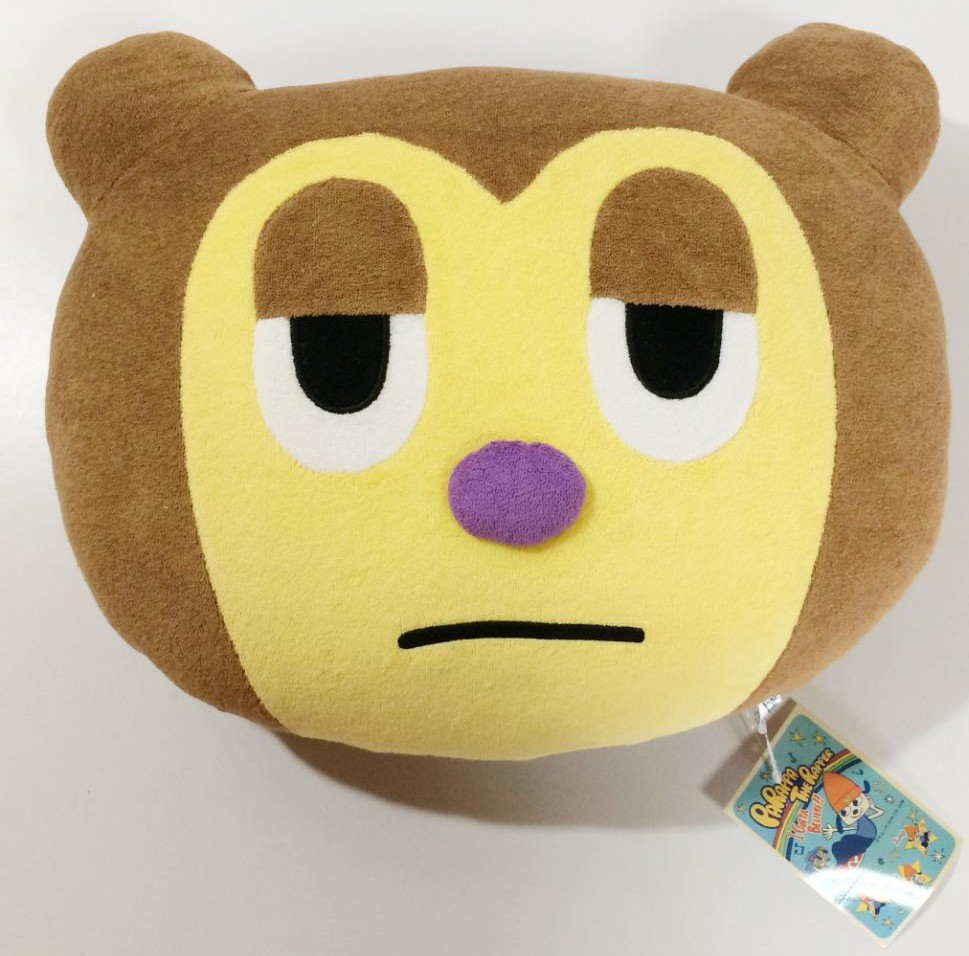
PJ Berri Face Cushion — companion release in the same FK-75440 face-cushion line. Bear-silhouette pillow with PJ's signature sleepy eyes and purple nose rendered entirely in embroidered plush panels.PJベリー フェイスクッション — 同じFK-75440フェイスクッションシリーズの姉妹アイテム。クマシルエットのクッションに、PJ特有の眠そうな目と紫の鼻を刺繍パネルで再現している。
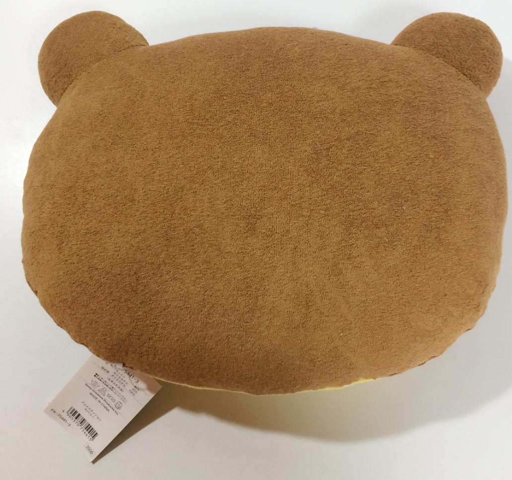
PJ Berri Cushion (reverse) — solid brown back panel with the bear-ear silhouette intact and the white spec tag stitched into the bottom-left seam, useful for collectors verifying an unaltered factory unit.PJベリー クッション（裏面）— 一面ブラウンの背面で、両端の耳シルエットがはっきり残り、左下の縫い目には白い品質表示タグが縫い込まれている。未加工の工場仕様を確認したいコレクターに有用なカット。
PJ Berri Face Cushion — close-up of the woven "PaRappa The Rapper" satin ribbon sewn into the seam, the standard Sony Creative Products brand label used across the face-cushion series.PJベリー フェイスクッション — 縫い目に織り込まれた「PaRappa The Rapper」サテンリボンのクローズアップ。フェイスクッションシリーズ共通の、ソニー・クリエイティブプロダクツの標準ブランドネーム。
PaRappa Full-Body Cushion (beige) — die-cut throw-pillow plush printed with the classic PaRappa standing pose. Soft flat-style cushion, roughly 40 cm tall.パラッパ全身クッション（ベージュ）— 定番の立ちポーズを大きくプリントしたダイカット型のクッションぬいぐるみ。高さ約40cmのソフトフラットタイプ。
PaRappa Face Cushion (blue) — companion piece to the body cushion, featuring PaRappa's face and beanie printed on a sky-blue pillow.パラッパ顔クッション（ブルー）— 全身クッションと対になる一枚で、水色のクッションにパラッパの顔とビーニーがプリントされている。
Face Cushion (reverse) — back side showing the series logo and the original Japanese-language care/assembly instruction sticker.顔クッション（裏面）— シリーズロゴと、日本語のお手入れ・組立て説明シールが貼られた裏面。
Standing PaRappa Plush (FK-76368-3) — small SCP-issued standing PaRappa in original-game style: embroidered face, frog-emblem orange beanie, blue tee, navy shorts, and red heart-soled sneakers. Pictured here factory-sealed in its retail bag with the rainbow PaRappa cast hang-tag attached.スタンディングパラッパぬいぐるみ（FK-76368-3）— ソニー・クリエイティブプロダクツ製の原作版小型立ちポーズパラッパ。刺繍の顔、カエルマーク付きオレンジビーニー、ブルーTシャツ、紺ショーツ、赤いハートソールのスニーカーが特徴で、レインボーキャラクター下げ札付きの未開封販売袋に封入された状態で撮影されている。
— SONY CREATIVE PRODUCTS — MOBBY PET PARAPPA (FG-77497-3) —— ソニー・クリエイティブプロダクツ — モビィペット パラッパ（FG-77497-3） —
Mobby Pet PaRappa (FG-77497-3) — Sony Creative Products' "Mobby pet" companion-pet figure of PaRappa, packaged in a tall orange window box. The figure clips to a phone strap and runs through interactive talk / sing / sleep modes detailed on the side panels. Released ¥2,980 MSRP, age 12+.モビィペット パラッパ（FG-77497-3）— ソニー・クリエイティブプロダクツの「Mobby pet」シリーズの携帯コンパニオン型パラッパフィギュア。縦型のオレンジ・ウィンドウボックスにパッケージされ、ストラップで携帯に取り付けて、トーク／うた／睡眠モードなどの対話ギミックを切り替えて遊べる仕様（側面パネルに詳細図）。定価2,980円、対象年齢12歳以上。
— SONY CREATIVE PRODUCTS — SOFT MASCOT BLISTER LINE —— ソニー・クリエイティブプロダクツ — ソフトマスコット ブリスターライン —
SCP Soft Mascot Blister Line — five clamshell-card mascots from Sony Creative Products: PJ Berri and PaRappa "I Gotta Believe!" on the top row, with three Um Jammer Lammy Soft Mascot variants underneath (Lammy, Ma-san, Katy Kat). Each comes on a colour-coded blister card with a small clip strap on the back.SCPソフトマスコット ブリスターライン — ソニー・クリエイティブプロダクツの5体クラムシェルカード入りマスコットセット。上段はPJベリーとパラッパ「I Gotta Believe!」、下段はウンジャマ・ラミー ソフトマスコット3種（ラミー／マーさん／ケイティ・キャット）。各個体ともキャラクター別カラーのブリスターカードに収められ、裏面には小型の取り付けクリップストラップが付属する。
— TAITO —— タイトー —
Taito Prize Plush — full-body PaRappa amusement-prize plush distributed through Taito Station crane catchers. Features the classic blue tee, dark blue shorts, red sneakers, and a sewn-on grey microphone, paired with the rainbow PaRappa cast hang-tag.タイトー プライズぬいぐるみ — タイトーステーションのクレーンゲーム景品として流通した全身パラッパぬいぐるみ。定番の青Tシャツ、濃紺のショートパンツ、赤いスニーカー、縫い付けタイプのグレーのマイクが特徴で、虹色のキャラクターイラスト下げ札が付属する。
PaRappa (Taito, sealed) — same Taito prize plush still in its factory plastic bag, with the printed "THIS BAG IS NOT A TOY / WARNING TO AVOID DANGER OF SUFFOCATION" English/Japanese safety strip running down the side. Mint amusement-prize condition.パラッパ（タイトー・未開封）— 工場出荷時のビニール袋に密封された同じタイトープライズぬいぐるみ。側面に「THIS BAG IS NOT A TOY／WARNING TO AVOID DANGER OF SUFFOCATION」の英日警告ストリップが印刷されている。プライズ景品の未開封・新品状態。
PaRappa (Taito) — additional reference photo of the same Taito amusement-prize PaRappa plush, useful for sizing and stitching comparison against the L-Planning and Sony Creative Products lines.パラッパ（タイトー）— 同じタイトーアミューズメントプライズのパラッパぬいぐるみの別カット。エル・プランニング製、ソニー・クリエイティブプロダクツ製とのサイズ・縫製比較に有用な参考資料。
Chop Chop Master Onion (Taito, sealed) — Master Onion amusement-prize plush in his pale-blue gi and dark blue belt, with embroidered scowl and goatee. Still sealed in the original Taito prize bag with the rainbow cast hang-tag attached.タマネギ先生（タイトー・未開封）— 水色の道着と濃紺の帯姿、刺繍で再現した眉間のしわとあごひげが特徴のタマネギ先生のプライズぬいぐるみ。タイトーのオリジナルプライズ袋に未開封のまま封入され、虹色のキャラクター集合下げ札が付属する。
Chop Chop Master Onion (Taito) — secondary reference shot of the same Master Onion plush from this Taito prize wave, paired with the matching PaRappa figure to round out the playable-tutor side of the cast.タマネギ先生（タイトー）— 同じタイトープライズ波のタマネギ先生ぬいぐるみの別カット。同シリーズのパラッパとセットで、ゲーム序盤の「先生」キャラ側をそろえることができる。
PJ Berri (Taito, sealed) — Taito amusement-prize plush of PJ Berri, the sleepy bear best friend, sealed in the original prize bag with the "THIS BAG IS NOT A TOY" safety strip. Embroidered sleepy eyes and purple nose match the standard PJ silhouette across the line.PJベリー（タイトー・未開封）— 眠そうな表情でおなじみの親友キャラ、PJベリーのタイトープライズぬいぐるみ。オリジナルプライズ袋に「THIS BAG IS NOT A TOY」の警告ストリップ付きで未開封封入。刺繍で表現された眠そうな目と紫の鼻はシリーズ共通のPJ仕様。
Mini PaRappa Keychain Plush (Taito) — small palm-sized PaRappa mascot prize with a sewn-in cord strap for clipping to bags or phones. The compact face-forward pose and oversized beanie make it the most portable entry in Taito's PaRappa prize lineup.ミニ パラッパ キーチェーンぬいぐるみ（タイトー）— 手のひらサイズの小型パラッパマスコット景品。バッグや携帯に取り付けられるストラップ紐が縫い付けられている。正面ポーズと大きめのビーニーが特徴で、タイトーのパラッパ景品ラインナップの中でも最も携帯性に優れたモデル。
16" PARAPPA THE RAPPER plush soft toy. This toy was PRIZE ONLY meaning it was never for sale anywhere in the world and could only be obtained by winning it in a UFO catcher game in a Japanese arcade.16インチ「パラッパラッパー」ぬいぐるみ。本品はPRIZE ONLY（景品専用）仕様で、世界中どこでも一般販売されたことはなく、日本のアーケードのUFOキャッチャーで獲得することでのみ入手可能だった個体。
Taito Hang-Tag — orange retail card supplied with the Taito prize plushes, showing Master Onion in mid-chop, PaRappa kicking a sneaker pose, and a tiny PJ Berri DJ icon. The "TAITO" stamp anchors the lower-left corner, identifying it as the official prize-line tag (distinct from the earlier Takara/SEGA hang-tag).タイトー下げ札 — タイトーのプライズぬいぐるみに付属するオレンジのカード。手刀を構えるタマネギ先生、スニーカーを踏み出すパラッパ、左下の小さなPJベリーDJアイコンが描かれている。左下に「TAITO」のスタンプがあり、先発のタカラ／SEGA下げ札とは別のタイトー公式プライズタグであることが分かる。
Brand Label (tush tag) — close-up of the white satin "PaRappa The Rapper® / CRG/IP" brand ribbon sewn into the rear seam of the plush, identifying the licensed character mark used across the Taito prize line.ブランドネーム（タッシュタグ）— 後身頃の縫い目に縫い付けられた白いサテンの「PaRappa The Rapper® / CRG/IP」ブランドリボンのクローズアップ。タイトー プライズシリーズで共通して使用されている、ライセンスキャラクター表記が確認できる。
TAITO "PRIZE ONLY" Tush Tag — secondary white care label sewn beside the brand ribbon, printed "TAITO / PRIZE ONLY / MADE IN CHINA". The "PRIZE ONLY" wording confirms the unit was manufactured exclusively as an arcade-redemption prize and was never sold at retail.タイトー「PRIZE ONLY」タッシュタグ — ブランドリボンの隣に縫い付けられた白い品質表示タグ。「TAITO／PRIZE ONLY／MADE IN CHINA」と印字されており、「PRIZE ONLY」の表記は本品がアーケード景品専用に生産され、一般販売されていない個体であることを裏付けている。
★ PARAPPA — FIGURES ★★ パラッパ — フィギュア ★
Figures, figurines, and character keychains of PaRappa the Rapper characters from Sony Creative Products, Bandai, and other licensees.ソニー・クリエイティブプロダクツ、バンダイなど各ライセンシーから発売されたパラッパラッパーキャラクターのフィギュア・フィギュリン・キーホルダーコレクションです。
— SONY CREATIVE PRODUCTS —— ソニー・クリエイティブプロダクツ —
Bendable Rubber "Fun Toy" Set — full four-figure line of soft poseable rubber figures by Sony Creative Products, each on its own colour-coded blister card with the tagline "A flexible friend from beginning to end." Includes PaRappa (mint card), PJ Berri (peach card), Lammy (red card) and Chop Chop Master Onion (forest-green card). Original MSRP ¥780 each.ベンダブルラバー「Fun Toy」シリーズ — ソニー・クリエイティブプロダクツ製の柔らかいポーザブルラバーフィギュア4体。各個体ともキャラ別カラーのブリスターカードに封入され、「A flexible friend from beginning to end.」のキャッチコピー入り。パラッパ（ミントカード）、PJベリー（ピーチカード）、ラミー（レッドカード）、タマネギ先生（深緑カード）の4種で、定価は各780円。
Bendable Set — back-of-card detail confirming the full Sony Creative Products line: FK-68331-3 PaRappa and FK-68332-3 PJ Berri under the PaRappa The Rapper logo, and FK-68329-3 Lammy and FK-68330-3 タマネギ先生 (Master Onion) released under the Um Jammer Lammy branding. ¥780 each, MADE IN CHINA.ベンダブルセット — カード裏面のディテール。ソニー・クリエイティブプロダクツのラインナップ全体が確認できる：PaRappa The Rapperロゴ下にFK-68331-3 パラッパとFK-68332-3 PJベリー、Um Jammer Lammyロゴ下にFK-68329-3 ラミーとFK-68330-3 タマネギ先生。各780円、MADE IN CHINA。
Triple Character Key Chain — Sony Creative Products blister-pack keychain set linking three figural charms on a single split ring: Chop Chop Master Onion, Sunny Funny, and PaRappa. Front card carries the rainbow "PaRappa The Rapper — TRIPLE CHARACTER KEY CHAIN!!!" header and the ages 5-and-up safety mark.3連キーチェーン — ソニー・クリエイティブプロダクツ製のブリスター入りキーホルダーセット。1つの二重リングにタマネギ先生、サニー・ファニー、パラッパの3体のフィギュラルチャームが連結されている。表面のカードには虹色の「PaRappa The Rapper — TRIPLE CHARACTER KEY CHAIN!!!」のヘッダーと「5歳以上対象」の安全表示。
Triple Key Chain — back-of-card detail. Item code FG-67388-6, ¥850 MSRP, "3連キーチェーン パラッパ", Sony Creative Products Inc. / MADE IN CHINA. The reverse uses the standard blue line-art of PaRappa and Master Onion in mid-action poses.3連キーチェーン — カード裏面のディテール。品番FG-67388-6、定価850円、「3連キーチェーン パラッパ」、Sony Creative Products Inc./MADE IN CHINA。裏面はパラッパとタマネギ先生のアクションポーズが青い線画で大きく描かれた共通仕様。
Geko Geko Mascot — PaRappa (Sony Creative Products) — small ball-chain figural mascot of PaRappa in his blue overalls and red beanie, sealed in the original character bag with the orange "Geko Geko Mascot" header card visible above.ゲコゲコマスコット — パラッパ（ソニー・クリエイティブプロダクツ）— 青いオーバーオールに赤いビーニー姿のパラッパを再現したボールチェーン付きの小型フィギュラルマスコット。オレンジの「Geko Geko Mascot」ヘッダーカード付きで、オリジナルのキャラクター袋に未開封封入されている。
Geko Geko Mascot — Header Card. Close-up of the orange "PaRappa Geko Geko Mascot" header card carrying the "Boring out — it's gonna be ho ho!" tagline and the Sony Creative Products Inc. logo at the bottom right.ゲコゲコマスコット — ヘッダーカードのディテール。オレンジ地の「PaRappa Geko Geko Mascot」ヘッダーカードに「Boring out — it's gonna be ho ho!」のキャッチコピーが配置され、右下にSony Creative Products Inc.のロゴが入る。
PaRappa Soft Vinyl Bank (Sony Creative Products) — seated soft-vinyl coin bank of PaRappa in his orange beanie with the green Master Onion badge, blue tee and shorts, and red-and-white sneakers. Shown sealed in its original plastic bag, front view. Item code FK-64830-6, ¥880, MADE IN CHINA.パラッパ ソフトビニールバンク（ソニー・クリエイティブプロダクツ）— 緑のタマネギ先生バッジ付きオレンジビーニー、青いシャツとショートパンツ、赤白スニーカー姿で座るパラッパのソフトビニール製貯金箱。オリジナルのビニール袋に未開封で封入された正面ビュー。品番FK-64830-6、定価880円、MADE IN CHINA。
PaRappa Soft Vinyl Bank — three-quarter side view showing the coin slot moulded into the top of the orange beanie.パラッパ ソフトビニールバンク — オレンジのビーニー頭頂部に成形されたコイン投入口が見える斜め後方からのビュー。
Soft Vinyl Bank — Header Tag. Close-up of the Sony Creative Products card reading "PRソフトビニールバンク (パラッパ)" with item code FK-64830-6, ¥880, barcode 4905370649308, and the PaRappa The Rapper logo.ソフトビニールバンク — ヘッダータグのディテール。ソニー・クリエイティブプロダクツのカードに「PRソフトビニールバンク（パラッパ）」、品番FK-64830-6、定価880円、バーコード4905370649308、PaRappa The Rapperロゴが記載されている。
— BANDAI —— バンダイ —
Bandai "RodneyFun" Key Chain Set — full five-figure capsule line presented with its original Bandai store-display header card. Characters left-to-right: Pony Pony, PJ Berri, PaRappa, Sunny Funny, and Master Onion. Each charm shipped sealed with a small character info tag; ¥780 per capsule.バンダイ「RodneyFun」キーチェーンセット — オリジナルのバンダイ店頭ディスプレイヘッダー付きの全5種カプセルトイ。左からポニー・ポニー、PJベリー、パラッパ、サニー・ファニー、タマネギ先生。各チャームは個別のキャラクターカードと共に未開封封入され、1カプセル780円で販売された。
RodneyFun Key Chain — secondary reference photo of the same hanging display, useful for verifying the original Bandai header art and the included artwork credit (Rodney A. Greenblat / I.P).RodneyFun キーチェーン — 同じ吊り下げディスプレイの参考カット。バンダイのオリジナルヘッダーアートと、ロドニー・アラン・グリーンブラット／I.Pのクレジット表記を確認するのに便利。
RodneyFun Keychain Trio (loose) — three of the capsule figures removed from their RodneyFun bag and clipped onto split-ring keychains: PJ Berri, PaRappa, and Sunny Funny. Each retains its small character info tag.RodneyFun キーチェーン3体（開封）— RodneyFunカプセルから取り出し、二重リングキーホルダーに取り付けたPJベリー、パラッパ、サニー・ファニーの3体。それぞれに小さなキャラクター情報タグが残されている。
Dancing PaRappa Figure (Bandai) — small windup/poseable figure of PaRappa in the standard "Dancing PaRappa" blister card, with the rainbow-bordered "PaRappa The Rapper — Dancing PaRappa" header art and the cityscape character border running down the sides.ダンシングパラッパ フィギュア（バンダイ）— 定番の「Dancing PaRappa」ブリスターカードに封入された、小型のゼンマイ／ポーザブルパラッパフィギュア。虹色フレームの「PaRappa The Rapper — Dancing PaRappa」ヘッダーアートと、両サイドに配されたシティスケープのキャラクターボーダーが特徴。
Dancing Sunny Funny Figure (Bandai) — companion release in the same blister-card line, this time featuring Sunny Funny in her pink-and-blue striped tee and white skirt. Same rainbow header art and side character border as the Dancing PaRappa entry.ダンシングサニーファニー フィギュア（バンダイ）— 同じブリスターカードシリーズの姉妹品。ピンク＆ブルーのボーダーTシャツに白いスカート姿のサニー・ファニーを収録。ダンシングパラッパと共通の虹色ヘッダーアートとキャラクターボーダーを採用している。
Capsule Mascot Set (full lineup) — complete eight-figure capsule run, each character sealed in a numbered (1–8) bubble-pattern bag. Includes PaRappa, PJ Berri, Sunny Funny, Master Onion and additional cast members in the standard gachapon mascot scale.カプセルマスコットセット（全種）— 1〜8番の番号入りバブル柄カプセル袋に未開封封入された全8体のフルセット。パラッパ、PJベリー、サニー・ファニー、タマネギ先生など、定番のガチャポンマスコットスケールの主要キャスト。
Petit House — PaRappa Mini Clock Keychain (¥2,400) — figural keychain of PaRappa with a working analogue clock face inset into the chest. Released as part of the プチハウス (Petit House) Mini Clock Keychain line, ¥2,400 MSRP, with the original character info hang-tag still attached.プチハウス — パラッパ ミニクロックキーチェーン（¥2,400）— 胸部にアナログ時計を埋め込んだパラッパのフィギュラルキーチェーン。プチハウスブランドのミニクロックキーチェーンシリーズの一品で、定価2,400円。オリジナルのキャラクター情報下げ札が付属したままの状態。
★ PARAPPA — SHIRTS ★★ パラッパ — シャツ ★
Officially licensed PaRappa the Rapper apparel — t-shirts, character shirts, and promotional tees released in Japan throughout the late 1990s and early 2000s. Designs span the main cast (PaRappa, Sunny Funny, PJ Berri, Katy Kat) as well as crossover and campaign-only prints. The official Cospa "Rodney Characters" catalogue — preserved in this archived snapshot from December 2000 — documents the brand's Rodney-licensed shirt line, featuring both PaRappa and Lammy designs.公式ライセンスを受けたパラッパラッパーのアパレル。1990年代後半から2000年代初頭にかけて日本で販売されたTシャツ、キャラクターシャツ、プロモーション限定Tシャツなど。パラッパ、サニー・ファニー、PJベリー、ケイティ・キャットといったメインキャラクターのデザインに加え、コラボレーションやキャンペーン限定のプリントアイテムも含まれます。公式のコスパ（Cospa）「Rodney Characters」カタログ（2000年12月アーカイブ）には、パラッパとラミー双方のデザインを含む同ブランドのロドニー公式ライセンスシャツのラインナップが残されています。
— CHARACTER ENSEMBLE —— キャラクター集合 —
White cotton ringer tee with brown trim, featuring a small chest print of the entire PaRappa cast in a yellow circle.茶色のリブで縁取られた白コットンのリンガーTシャツ。胸元にはパラッパのメインキャラクターたちが黄色いサークルに集合した小ぶりなプリントが配されている。
Close-up of the chest print — PaRappa front-and-center with Sunny Funny, Katy Kat, PJ Berri, Master Onion, Prince Fleaswallow, Cheap Cheap and Hairdresser Octopus arranged around him in a two-colour orange/teal screen print.胸プリントのクローズアップ。パラッパを中心に、サニー・ファニー、ケイティ・キャット、PJベリー、オニオン先生、ノミ・ハナシンガエル王子、チープ・チープ、美容師タコが取り囲むように配置された、オレンジとティール二色のシルクスクリーンプリント。
Detail of the yellow embroidered "パラッパラッパー" (PaRappa Rappa) Japanese wordmark stitched onto the shirt.シャツにステッチされた黄色い刺繍ロゴ「パラッパラッパー」のディテール。
— "PARAPPA THE RAPPER" LOGO TEES —— 「PaRappa The Rapper」ロゴTシャツ —
Purple tee with a large back print pairing the "PaRappa The Rapper" wordmark with PaRappa's iconic lyric "I'm PaRappa and I'm no slob. I gotta listen to this song." and a small vinyl-record logo on the front.紫のTシャツ。背面には「PaRappa The Rapper」のロゴと、パラッパの名セリフ「I'm PaRappa and I'm no slob. I gotta listen to this song.」をあしらった大判プリント、前面には小さなレコード盤ロゴが入る。
Close-up of the back print showing PaRappa, a boombox, and headphones framing the lyric bubble, all in a pale-blue screen print on navy.背面プリントのクローズアップ。パラッパ、ラジカセ、ヘッドフォンがセリフの吹き出しを囲んでおり、ネイビー地に淡いブルーのシルクスクリーンでプリントされている。
Front chest detail — the small "P" vinyl-record logo printed on the left chest.胸元のディテール。左胸にプリントされた小さな「P」レコード盤ロゴ。
Long-sleeve raglan with yellow body and green sleeves, printed with the classic bubble "PaRappa The Rapper" logo and an "I Gotta Believe!!" headline.イエローボディにグリーンの袖を合わせたラグラン長袖シャツ。定番のバブル体「PaRappa The Rapper」ロゴと「I Gotta Believe!!」のヘッドラインがプリントされている。
Close-up of the bubble-logo print — PaRappa throwing up a peace sign beside the classic wordmark, flanked by stars and music notes.バブルロゴプリントのクローズアップ。定番ワードマークの隣でピースサインをきめるパラッパ、星と音符があしらわれている。
Cream-coloured tee printed with "I Gotta Believe!! Here's The PARTY!" — a DJ-booth scene featuring PaRappa on the decks with PJ Berri.クリーム地のTシャツ。「I Gotta Believe!! Here's The PARTY!」の文字と、DJブースでターンテーブルを回すパラッパとPJベリーのシーンがプリントされている。
Close-up of the DJ print in red and blue line-art — PaRappa behind twin turntables with PJ rapping on the mic.赤と青のラインアートで描かれたDJプリントのクローズアップ。ターンテーブル2台を操るパラッパと、マイクでラップするPJベリー。
— RGSTYLE "I GOTTA BELIEVE" BLUE TEE —— RGstyle「I Gotta Believe」ブルーTシャツ —
Deadstock light-blue RGStyle tee with original hang tags, front-printed with a dashing PaRappa above the "I Gotta Believe!! — THE HIP HOP HERO — PaRappa The Rapper" banner.タグ付きデッドストックの水色RGstyle Tシャツ。前面には駆けるパラッパと「I Gotta Believe!! — THE HIP HOP HERO — PaRappa The Rapper」のバナーがプリントされている。
Inner collar view — yellow RGStyle woven label co-credited to "Rodney Alan Greenblat / Interlink", with the Rodney-character mosaic hang tag still attached.襟裏のビュー。「Rodney Alan Greenblat / Interlink」共同クレジットの黄色いRGstyleネームラベルと、ロドニーキャラモザイク柄のハングタグが付いたまま。
Sony Creative Products hang tag — size S, 100% cotton, bust 78–86cm, barcode SKU and a Japanese-market care statement.ソニー・クリエイティブプロダクツのハングタグ。Sサイズ、綿100％、バスト78〜86cm、バーコード付きSKUと国内向けの品質表記。
Back of the Rodney-character hang tag reading "RodneyFun — Made in New York City; this artwork is for funny people EVERYWHERE.", alongside the inner Japanese care label.ロドニーキャラクターのハングタグ裏面。「RodneyFun — Made in New York City; this artwork is for funny people EVERYWHERE.」と記載され、内側には日本語の取り扱い表記ラベルも見える。
— CHARACTER GRAPHIC TEES —— キャラクターグラフィックTシャツ —
Forest-green tee with a chest graphic of warrior PaRappa holding a shield, and a smaller "PaRappa The Rapper" + frog-logo print at the back neck.フォレストグリーンのTシャツ。胸には盾を構えた戦士姿のパラッパが大きくプリントされ、背面のネック下には小さく「PaRappa The Rapper」ロゴとカエルのマークが配置されている。
Close-up of the front graphic — PaRappa in red beanie raising a tribal-style shield, with the "PARAPPA" wordmark in distressed white beneath.前面プリントのクローズアップ。赤いビーニー姿のパラッパがトライバル風の盾を掲げ、下にはかすれ加工の白文字で「PARAPPA」とレタリングされている。
Back-neck detail — the bubble "PaRappa The Rapper" wordmark paired with the green frog icon from PaRappa's beanie.背面ネック下のディテール。バブル体「PaRappa The Rapper」ロゴと、パラッパのビーニーに描かれた緑のカエルアイコンが組み合わされている。
Navy-blue tee printed with an energetic fist-pumping PaRappa and the classic bubble "PaRappa The Rapper" logo at the chest.ネイビーブルーのTシャツ。胸元には拳を突き上げる躍動感あるパラッパと、定番のバブル体「PaRappa The Rapper」ロゴがプリントされている。
Red cotton tee with a four-panel character-portrait grid print on the chest.赤コットンのTシャツ。胸元に4コマ構成のキャラクター肖像グリッドがプリントされている。
Close-up of the four-panel grid in stitched-line art — Sunny Funny, PaRappa, PJ Berri, and Katy Kat portraits under the "PaRappa The Rapper" title.ステッチ風ラインアートで描かれた4コマグリッドのクローズアップ。「PaRappa The Rapper」タイトルの下に、サニー・ファニー、パラッパ、PJベリー、ケイティ・キャットの肖像が並ぶ。
Light-blue tee with a sketch-line "Fun with Bubbles" print — PaRappa blowing bubbles that contain each of his friends.ライトブルーのTシャツ。線画タッチの「Fun with Bubbles」プリントで、パラッパが吹いたシャボン玉の中に仲間たちが1人ずつ閉じ込められている。
Close-up of the bubble print — PJ Berri, Katy Kat, Sunny Funny and PaRappa (blowing soap from a bottle) inside individual bubbles, stamped "POP!"シャボン玉プリントのクローズアップ。PJベリー、ケイティ・キャット、サニー・ファニー、そしてボトルから石鹸液を吹くパラッパが、それぞれのシャボン玉の中にいる。「POP!」の文字も添えられている。
Additional back-side sketch — a bubble-blowing "Soapy Bud" character with a cart, bubbles, and a "Fun with Bubbles" label.背面に追加で描かれたスケッチ。「Soapy Bud」というシャボン玉キャラクターが台車と一緒に描かれ、「Fun with Bubbles」のラベルも添えられている。
White long-sleeve tee with a small "I Gotta Believe!!" candy-bar chest graphic.白のロングスリーブTシャツ。胸元に小さく「I Gotta Believe!!」のキャンディバー風グラフィックがプリントされている。
Close-up of the sketch-style print — a wrapped chocolate bar tumbling on a grid floor with a tiny PaRappa behind it, captioned "I GOTTA BELIEVE!!"スケッチ調プリントのクローズアップ。方眼の床にチョコバーが転がり、その後ろに小さなパラッパが描かれ、下に「I GOTTA BELIEVE!!」のキャプションが添えられている。
Hot-pink tee with a white sketch-line "SUNNYFUNNY — Thank you!" print of Sunny handing out flowers.ショッキングピンクのTシャツ。白い線画で「SUNNYFUNNY — Thank you!」と描かれ、花を配るサニー・ファニーがプリントされている。
Close-up of the Sunny print — Sunny Funny with a basket of carrots and a single carrot in hand, both saying "Thank you!"サニープリントのクローズアップ。にんじんを詰めたバスケットを抱え、手にも1本持ったサニー・ファニーと、にんじん自身がそれぞれ「Thank you!」と言っている。
Light-blue long-sleeve tee with a "She Can Really Sing!" print of Sunny Funny singing while playing a ukulele — RodneyFun.com branding.ライトブルーのロングスリーブTシャツ。ウクレレを弾きながら歌うサニー・ファニーが描かれた「She Can Really Sing!」プリントで、RodneyFun.com のブランディング入り。
Close-up of the "She Can Really Sing!" print — Sunny mid-strum surrounded by musical notes, credited to RodneyFun.Com.「She Can Really Sing!」プリントのクローズアップ。ウクレレをかき鳴らすサニーが音符に囲まれており、RodneyFun.Com のクレジットが添えられている。
— FROG BEANIE LOGO TEES —— カエル帽子ロゴTシャツ —
Red tee displayed on a hanger at a Japanese retailer, printed with the yellow oval frog-logo badge from PaRappa's beanie.日本の店頭にてハンガー展示された赤いTシャツ。パラッパのビーニーに付いている黄色い楕円のカエルロゴバッジがプリントされている。
Same red frog-badge tee — factory-sealed in its original plastic bag.同じ赤いカエルバッジのTシャツ。オリジナルのビニール袋に未開封で封入された状態。
Close-up of the frog-badge print through the bag — the iconic green frog inside a yellow oval with a black outline.ビニール越しに撮影したカエルバッジプリントのクローズアップ。黒で縁取られた黄色い楕円の中に、おなじみの緑のカエルが描かれている。
★ PARAPPA — MISCELLANEOUS ★★ パラッパ — その他 ★
Assorted PaRappa the Rapper merchandise — stationery, apparel, accessories, household goods, and novelty items that don't fit the plush or figure categories.パラッパラッパーのその他グッズコレクション。文房具、アパレル、アクセサリー、生活雑貨、ノベルティなど、ぬいぐるみやフィギュアのカテゴリーに収まらないアイテムをまとめています。
— TELEPHONE —— 電話機 —
Yellow PaRappa novelty corded landline phone with an LCD caller display, packaged on its original retail card.液晶ディスプレイ付きの黄色いパラッパ柄コード式固定電話で、オリジナルの販売台紙に取り付けられた状態。
Prismatic RGStyle tambourine printed with PJ Berri, Sunny Funny, Katy Kat and PaRappa across the holographic skin.RGstyleのプリズム加工タンバリン。ホログラム面にPJベリー、サニー・ファニー、ケイティ・キャット、パラッパがプリントされている。
Back of the same tambourine, showing the sky-blue plastic frame and four pairs of metal jingles.同タンバリンの背面で、水色のプラスチックフレームと4組の金属ジングルが確認できる。
— CHARACTER WRISTWATCHES —— キャラクター腕時計 —
Yellow PaRappa wristwatch sealed in its character-print blister card.黄色いパラッパの腕時計で、キャラクタープリントのブリスターパックに未開封で封入されている。
Plain back of the PaRappa watch blister, with Japanese-market care text and the Made in China stamp.パラッパ腕時計ブリスターの裏面で、国内向けの取り扱い表記と「Made in China」の刻印が記載されている。
Alternate yellow PaRappa wristwatch variant, packaged on the same character-print card style.同じキャラクタープリント仕様のカードに封入された、別バージョンの黄色いパラッパ腕時計。
Sky-blue Katy Kat wristwatch on the matching cast-illustration blister card.水色のケイティ・キャット腕時計で、キャラクター集合イラストの台紙に封入された状態。
Pink Sunny Funny wristwatch on its character-print blister card.ピンクのサニー・ファニー腕時計で、キャラクタープリント台紙のブリスターパック仕様。
— LIMITED ZIPPO SET (UNIVERIFY) —— 限定ジッポーセット（ユニファイブ） —
Univerify "Limited Zippo Set" presentation box opened to display its two PaRappa-engraved Zippo lighters.ユニファイブの「LIMITED ZIPPO SET」ボックスを開けた状態。中にはパラッパ刻印のジッポーライター2点が並んでいる。
Light-blue presentation-box lid printed with the silver "I Gotta Believe!! PaRappa" emblem and "Limited Zippo Set" title.水色のボックス蓋には、銀色の「I Gotta Believe!! PaRappa」エンブレムと「LIMITED ZIPPO SET」のタイトルがプリントされている。
Companion orange Zippo engraved with the round "I Gotta Believe!! PaRappa" badge and the individual serial No. 0092.対になるオレンジのジッポーで、丸い「I Gotta Believe!! PaRappa」バッジと個別シリアル「No.0092」が刻印されている。
Underside of the orange Zippo showing the genuine "Zippo / Made in USA" bottom stamp.オレンジジッポーの底面で、本物の証である「Zippo / Made in USA」刻印が確認できる。
Reverse of the box with Univerify's product label, barcode, and SCP licence credit.ボックスの裏面で、ユニファイブの商品ラベル、バーコード、SCPライセンス表記が記載されている。
— SCP SILVER RING SERIES —— SCP シルバーリングシリーズ —
SCP silver ring presented in its original black gift box with the included Japanese care insert.SCPシルバーリングのオリジナル黒ギフトボックス収納状態で、付属の日本語取り扱い説明カードが添えられている。
Engraving close-up showing the "I gotta believe / silver 925" interior stamp that authenticates the SCP series.内側に刻まれた「I gotta believe / silver 925」の刻印クローズアップで、SCPシリーズの正規品である証となる。
Box back with the Sony Creative Products catalogue sticker for the "UJL Silver Ring (PaRappa Ver.)" — code FG-67829-1.ボックス裏のソニー・クリエイティブプロダクツ製品シール。「UJLシルバーリング（パラッパVer.）」品番FG-67829-1の表記。
PaRappa-shape silver ring displayed in its clear acrylic stand inside the gold-foil "PaRappa The Rapper" black presentation box.パラッパ型シルバーリングが、金箔押し「PaRappa The Rapper」ロゴ入りの黒い化粧箱とアクリルスタンドにセットされた状態。
Detail shot of the same ring, with the sculpted PaRappa beanie peak on top and engraved face on the band.同リングのディテール。上部にはパラッパのビーニーの先端が立体的に造形され、リング側面には顔が刻まれている。
Sunny Funny version of the silver ring with sculpted petals around the bezel and a flower-bud crown.サニー・ファニー版シルバーリング。ベゼル周囲に花びらの彫刻が施され、頂部には花のつぼみがあしらわれている。
Companion ring in the series with star engravings carved across the polished band.シリーズの別バージョン。磨き上げたバンド全体に星の彫刻があしらわれている。
Sealed PaRappa die-cut rubber strap on its yellow "PaRappa The Rapper" header card.未開封のパラッパ ダイカットラバーストラップが、黄色い「PaRappaTheRapper」のヘッダーカードに封入されている。
"Lamp Strap with Mascot" — PaRappa light-up phone strap on its blue microphone-themed retail card.「Lamp Strap with Mascot」。マイクをモチーフにした青い台紙に、点灯ギミック付きのパラッパ携帯ストラップが封入されている。
Pair of sealed accessories — SCP "Strap with Mascot" beanie pendant (left) and Bandai "Antenna Jump" PaRappa antenna charm (right).未開封の2点アクセサリーセット。左はSCPの「Strap with Mascot」ビーニーペンダント、右はバンダイの「Antenna Jump」パラッパ アンテナチャーム。
Reverse of both cards, showing SCP code FG-75439-10 for the strap and Bandai's antenna-fit instructions for the Jump charm.両カードの裏面で、ストラップ側にはSCP品番FG-75439-10、アンテナジャンプ側にはバンダイのアンテナ取付説明が確認できる。
SCP "Fastener Accessory" — a PaRappa concert-scene zipper-pull charm for clipping onto bag and jacket zips.SCPの「Fastener Accessory」。バッグやジャケットのファスナーに取り付けるための、パラッパライブシーン柄のジッパープルチャーム。
Back of the Fastener Accessory card with attachment diagrams and SCP patent reference No. 3041328.Fastener Accessoryカードの裏面で、取付図解とSCP特許番号 No. 3041328 が記載されている。
"Flash Keyholder" — a PJ Berri figure with light-up shades on a ball chain, mounted on a card showing the full main cast.「flash keyholder」。サングラスが光るギミック付きのPJベリーフィギュアがボールチェーンに取り付けられ、メインキャスト勢揃いの台紙に封入されている。
"PaRappa The Rapper Character Keychain" three-figure set — PaRappa, PJ Berri, and Sunny Funny on a single split ring.「PaRappaTheRapper Character Keychain」3体セット。パラッパ、PJベリー、サニー・ファニーが1つのキーリングに連結されている。
Back of the keychain card with SCP code FG-76273-6 and a small Katy-Kat-and-PJ-Berri illustration.キーチェーンカード裏面で、SCP品番FG-76273-6と、ケイティ・キャットとPJベリーの小さなイラストが配されている。
— PJ BERRI WRIST MOUSE MASCOT —— PJベリー リストマウスマスコット —
Yellow translucent rubber wrist mascot containing a small PJ Berri figure inside the donut-themed window.黄色いクリアラバー製のリストマスコットで、ドーナツ柄の窓の中に小さなPJベリーのフィギュアが収められている。
Full wrist-strap view of the PJ Berri "Catchy" mouse mascot with its donut-and-cookie pattern band.PJベリーの「Catchy」マウスマスコットのリストバンド全景。ドーナツとクッキー柄のバンド全体が見える。
Same wrist mascot still factory-sealed inside its plastic display sleeve.同じリストマスコットが、未開封の状態でプラスチックの陳列スリーブに封入されている。
Reverse of the package with SCP code FK-70929-10 and Japanese usage cautions for "PaRappa & PJ".パッケージ裏面で、SCP品番FK-70929-10と「パラッパ＆PJ」の日本語注意書きが記載されている。
— MOUSEPET COMPUTER MOUSE SET —— マウスペット コンピューターマウスセット —
"Mousepet Set" pairing a PaRappa pen-style computer mouse with a small clear-amber PJ Berri monitor-clip mascot.「MOUSEPET SET」。ペン型のパラッパ コンピューターマウスと、モニター固定用の小さなクリアアンバー製PJベリーマスコットがセットになっている。
Sealed PaRappa memo pad (left) alongside the "PaRappa The Rapper Mini Eraser" blister of bone-shaped erasers (right).未開封のパラッパ メモパッド（左）と、骨型ミニ消しゴムが封入された「PaRappaTheRapper Mini Eraser」ブリスター（右）。
Reverse of both stationery packs with the candy-stripe pattern and SCP product codes.両ステーショナリーパックの裏面で、キャンディストライプ柄とSCPの品番表記が確認できる。
Isolated front of the "PaRappa The Rapper Mini Eraser" blister with four white PaRappa-shape mini erasers held to the card.「PaRappaTheRapper Mini Eraser」ブリスターの正面ビュー。白いパラッパ型ミニ消しゴム4個が台紙に並んで固定されている。
Reverse of the Mini Eraser blister with the SCP code FK-76249-10 and the "材質：粘土ゴム" (clay-rubber) material note.Mini Eraserブリスターの裏面で、SCP品番FK-76249-10と「材質：粘土ゴム」の素材表記が記載されている。
"Rolled Seal" character sticker roll (left) paired with a "PJ Berri Mixed Seal" die-cut sticker pack (right).キャラクターシールロール「Rolled Seal」（左）と、PJベリー柄ダイカットシール詰め合わせ「PJ Berri Mixed Seal」（右）のセット。
Backs of both sticker packs with the SCP licence stamp and Japanese-market product info.両シールパックの裏面で、SCPライセンススタンプと国内向け商品情報が記載されている。
Isolated front of the "Rolled Seal" sticker roll header card with the circular character portrait line-up.「Rolled Seal」シールロールのヘッダーカード正面ビューで、円形のキャラクター肖像が並ぶ。
Reverse of the same Rolled Seal pack, showing the plain yellow back panel and barcode strip.同Rolled Sealパックの裏面で、無地の黄色い裏面パネルとバーコードストリップが確認できる。
— MUSIC GIFT CARDS —— ミュージックギフトカード —
Music Card presentation folder opened to its "HIP HOP HERO!!!!!!!!" character spread.ミュージックギフトカード台紙を開いた状態で、「HIP HOP HERO!!!!!!!!」と題されたキャラクター見開きページが現れる。
Outer cover of the same folder, themed to the "Music Card" PaRappa stage scene.同台紙の外側カバーで、「ミュージックカード」のパラッパのステージシーンが描かれている。
Yellow ¥1,000 PaRappa Music Card with magstripe and individual serial 4323.黄色い額面1,000円のパラッパ ミュージックカードで、磁気ストライプと個別シリアル番号「4323」付き。
¥500 PaRappa Music Gift Card variant printed with the full cast on its character-bordered sleeve.額面500円のパラッパ ミュージックギフトカードで、キャラクターで縁取られたスリーブにメインキャスト勢揃いがプリントされている。
— PARAPPA FESTIVAL FACE MASK —— パラッパ お面 —
Vacuum-formed plastic PaRappa festival face mask in the classic Japanese summer-stall omen style.日本の夏祭り屋台で売られる定番のお面スタイルで作られた、真空成形プラスチック製のパラッパお面。
Reverse of the mask, showing the eye holes and the maker's name embossed on the inside.お面の裏面で、目穴と内側に押し型で入った製造者名が確認できる。
"Dakko-chan PaRappa" — a vinyl inflatable arm-hugger doll modelled on the classic Japanese Dakko-chan toy.「だっこちゃんパラッパ」。日本の定番玩具「だっこちゃん」をモチーフにしたビニール製エアー人形で、腕に抱きつかせて遊べる仕様。
Reverse of the Dakko-chan PaRappa pack with inflation diagrams and Japanese safety cautions.だっこちゃんパラッパ パッケージ裏面で、空気の入れ方の図解と日本語の使用上の注意が記載されている。
"Dakko-chan Sunny Funny" — companion vinyl inflatable in the same Dakko-chan format.「だっこちゃんサニー」。同じだっこちゃんフォーマットの対になるビニールエアー人形。
"Yawaraka PJ" — a squishy soft-vinyl PJ Berri head sealed with its orange "やわらか" (soft) hang-tag.「やわらかPJ」。柔らかいソフトビニール製のPJベリー頭部で、オレンジの「やわらか」下げ札が付いた未開封状態。
— TISSUE PACKS —— ポケットティッシュ —
Collection of "PaRappa The Rapper Tissue Set" mini-packs featuring PaRappa, Sunny Funny, PJ Berri, and Katy Kat.「PaRappaTheRapper Tissue Set」のミニポケットティッシュ各種。パラッパ、サニー・ファニー、PJベリー、ケイティ・キャットの絵柄が揃う。
Closer view of the same set, showing the orange/blue/green/pink character-banner colourways used across the line.同セットの拡大ビュー。シリーズ全体で使われているオレンジ・ブルー・グリーン・ピンクのキャラクターバナー配色がよく分かる。
Reverse of the tissue packs with the SCP product label and barcode strip on each character variant.ティッシュパック裏面で、各キャラクターバージョンにSCPの商品ラベルとバーコードストリップが付いている。
— CHARACTER ADHESIVE BANDAGES —— キャラクター絆創膏 —
Plastic bandage carry-cases printed with PaRappa (left) and PJ Berri (right) cover graphics.プラスチック製の絆創膏ケースで、左にはパラッパ、右にはPJベリーの表紙グラフィックがプリントされている。
Bandage case opened to reveal the printed adhesive strips and a yellow refill pouch inside.絆創膏ケースを開けた状態。プリント絆創膏と詰め替え用の黄色いリフィルパウチが収まっている。
Individual bandage strips laid out by character — PaRappa, Sunny Funny, PJ Berri, and Katy Kat designs.キャラクター別に並べた絆創膏。パラッパ、サニー・ファニー、PJベリー、ケイティ・キャットの各デザインが揃う。
— LIGHT & SOUND WAND —— ライト＆サウンドウォンド —
Battery-powered PaRappa light-and-sound wand toy with translucent orange tip, three sound buttons, and a wrist lanyard.電池式のパラッパ ライト＆サウンドウォンド玩具。半透明オレンジの先端、3つのサウンドボタン、ストラップ付きリストランヤードを備える。
Close-up of the wand grip with the round green PaRappa face emblem above the three orange action buttons.ウォンドのグリップ部分のクローズアップ。3つのオレンジボタン上部に、丸いグリーンのパラッパ顔エンブレムが配されている。
Side view of the wand showing the battery housing molded into the green plastic body.ウォンドの側面ビューで、グリーンのプラスチックボディに一体成形された電池ボックスが確認できる。
Battery door removed to show the AA cell compartment that powers the lights and sound effects.電池蓋を外した状態で、ライトとサウンド効果を駆動する単3電池ボックスが現れる。
Sony Creative Products "Puzz Clock" — a 135-piece jigsaw puzzle that assembles into a working PaRappa cast wall clock.ソニー・クリエイティブプロダクツの「PuzzClock」。組み上げるとパラッパ集合柄の壁掛け時計として機能する135ピースのジグソーパズル。
Box back with the five-step assembly diagram for fitting the puzzle into its movement-equipped clock frame.ボックス裏面で、ムーブメント付き時計フレームへのパズル組み込み方法を5ステップで図解。
Side panel of the still-sealed Puzz Clock box with the "時を刻むシグソーパズル!!" tagline.未開封のPuzzClockボックス側面で、「時を刻むシグソーパズル!!」のキャッチコピーが入る。
— BANDAI TAPE CLUB CAPSULE WASHI TAPES —— バンダイ Tape Club カプセル マスキングテープ —
Bandai gashapon "PaRappa The Rapper Tape Club" — six washi-tape rolls plus a header card, each capsule still factory sealed.バンダイのカプセルトイ「PaRappaTheRapper Tape Club」。6種のマスキングテープロールとヘッダーカードが、それぞれ未開封のカプセルに封入されている。
Header card naming the series "PaRappa The Rapper Tape Club" with Bandai's "全6種" (six types) callout.「PaRappaTheRapper Tape Club」シリーズ名と、バンダイの「全6種」表記が入ったヘッダーカード。
One roll uncapped to show the printed pattern of small character labels and stamp icons running along the tape.1ロールを取り出した状態で、小さなキャラクターラベルとスタンプアイコンが連続するテープの印刷パターンが確認できる。
Inset panel from the header card showing notebook-decoration use cases for the tapes.ヘッダーカード内のサンプルパネルで、ノート装飾の使用例が掲載されている。
Complete six-roll set assembled together, completing the Tape Club gashapon line.6ロール全種をまとめて並べた状態で、Tape Clubガシャポンの全コンプリートセット。
— AU C3055 PARAPPA CELLPHONE —— au C3055 パラッパ携帯電話 —
Japanese au catalogue spread for the Sony C3055 PaRappa cellphone — a co-branded handset with PaRappa-themed wallpapers and ringtones.ソニー製 C3055 パラッパ仕様携帯電話の au カタログ見開きページ。パラッパ柄の待受画面と着信メロディを搭載したコラボハンドセット。
— EVENT MASCOT COSTUMES —— イベント着ぐるみ —
In-store event photo of the Katy Kat, PJ Berri, and PaRappa walk-around mascot suits beneath a "Welcome" banner.店頭イベントの記録写真。「Welcome」のバナーの下に、ケイティ・キャット、PJベリー、パラッパの着ぐるみマスコットが並んでいる。
— DIE-CUT FACE HANGTAG —— ダイカットフェイスハングタグ —
Sealed PaRappa face-shaped die-cut vinyl hangtag with attached ball-chain, ready to clip onto a bag.未開封のパラッパ顔型ダイカット ビニールハングタグ。ボールチェーン付きで、バッグなどに取り付けられる仕様。
Reverse of the same hangtag showing the orange backing and Japanese retail-shop barcode sticker.同ハングタグの裏面で、オレンジの裏地と国内小売店のバーコードシールが確認できる。
— PROMO PRIZE LINEUP —— プロモーション景品ラインナップ —
Promotional prize-line image showing the "PaRappa Superstar" and "PJ's Dreamland" snow globes alongside a PaRappa tambourine and "Auto Roll" yo-yo set.プロモーション景品ラインナップの紹介画像。「PaRappa Superstar」と「PJ's Dreamland」のスノードームに、パラッパ柄タンバリンと「Auto Roll」ヨーヨーセットが並ぶ。
Plush toys from the Um Jammer Lammy launch wave, all produced in 1999 under the Sony Creative Products licence to coincide with the PlayStation release of the game. SCP issued the line in two formats: a large boxed electronic Jamming Lammy centrepiece that plays guitar at the press of a button, and a soft set of three full-body MilkCan plushes — Lammy, Ma-san, and Katy Kat — sold individually with the rainbow Um Jammer Lammy hang-tag. Together they make up the only official 1999 plush range for UJL, and remain the rarest plush items in the wider Rodney Greenblat × Sony catalogue.ウンジャマ・ラミー発売時にリリースされたぬいぐるみコレクション。いずれもPlayStation版の発売に合わせて1999年にソニー・クリエイティブプロダクツのライセンスで製造された商品です。SCPは2つのフォーマットでこのシリーズを展開しました——ボタンを押すとギターを演奏する大型ボックス入り電子ぬいぐるみジャミングラミーと、ラミー・マーさん・ケイティ・キャットの3体からなる全身ソフトぬいぐるみセットで、いずれも単品売りで虹色のウンジャマ・ラミーハングタグ付き。これら2形態が1999年当時のUJL公式ぬいぐるみシリーズのすべてであり、ロドニー・グリーンブラット×ソニーのカタログ全体の中でも最も希少なぬいぐるみアイテムです。
— SONY CREATIVE PRODUCTS — MILKCAN PLUSH SET (1999) —— ソニー・クリエイティブプロダクツ — ミルクカン ぬいぐるみセット（1999年） —
MilkCan Plush Trio (Sony Creative Products, 1999) — official catalogue photo of all three full-body MilkCan plushes seated together: Lammy in her red MilkCan tee and jeans, Ma-san centred with his red strap-top and bottle-cap horn, and Katy Kat in her star tank and red-and-white striped shorts. Released as a coordinated three-character set timed to the 1999 launch of Um Jammer Lammy and sold individually at retail.ミルクカンぬいぐるみ3体（ソニー・クリエイティブプロダクツ・1999年）— 全身ぬいぐるみ3体を並べた公式カタログ写真。赤いミルクカンTシャツとジーンズ姿のラミー、中央には赤いストラップトップと瓶のキャップ角を備えたマーさん、星柄タンクトップに赤白ストライプ短パンのケイティ・キャット。ウンジャマ・ラミー1999年発売に合わせた3キャラクター連動セットとして展開され、店頭では単品ごとに販売された。
Lammy (Sony Creative Products, 1999) — front view of the Lammy entry in the SCP MilkCan plush set. Embroidered eyes, nose, and mouth on a soft head, red hair piece with the trademark forward-flick, red MilkCan tee with the embroidered chest emblem, denim flares, and stitched teal slip-on shoes. The orange Um Jammer Lammy rainbow hang-tag — the standard SCP licence card — hangs on a red lanyard at the right wrist, exactly the same tag style used across the trio.ラミー（ソニー・クリエイティブプロダクツ・1999年）— SCPミルクカンぬいぐるみセットのラミーの正面ビュー。柔らかい頭部に目・鼻・口を刺繍し、トレードマークの前髪が立ち上がる赤いヘアパーツ、胸元にミルクカンエンブレムを刺繍した赤Tシャツ、デニムのフレアパンツ、縫製されたティールのスリッポンシューズが特徴。右手首には3体共通のSCPライセンスカード——オレンジ地のウンジャマ・ラミー レインボー下げ札が赤いストラップで取り付けられている。
Ma-san (Sony Creative Products, 1999) — front view of the Ma-san entry in the SCP MilkCan plush set. Pale-yellow body with embroidered closed eyes and downturned mouth, glossy red leatherette bottle-cap horn on top of the head, and the character's signature red strap top with a satin red bow at the chest. The orange UJL rainbow hang-tag — the SCP licence card — is still attached at the right hip.マーさん（ソニー・クリエイティブプロダクツ・1999年）— SCPミルクカンぬいぐるみセットのマーさんの正面ビュー。淡いイエロー本体に閉じた目とへの字口を刺繍、頭頂部にはツヤのある赤い合成レザーの瓶のキャップ、胸元には特徴的な赤いストラップトップとサテンの赤いリボンが付く。右腰には、SCPライセンスカードであるオレンジ地のUJLレインボー下げ札が取り付けられたままの状態。
Katy Kat (Sony Creative Products, 1999) — front view of the Katy Kat entry in the SCP MilkCan plush set. Bright sky-blue head with the signature yellow swirl forelock, embroidered lashed eyes, and pink nose; navy star-front tank top, red-and-white vertical-striped shorts, and lavender slip-on shoes. The small UJL rainbow hang-tag — the SCP licence card — hangs on a red lanyard at the right shoulder.ケイティ・キャット（ソニー・クリエイティブプロダクツ・1999年）— SCPミルクカンぬいぐるみセットのケイティ・キャットの正面ビュー。鮮やかなスカイブルーの頭部にトレードマークの黄色い渦巻き前髪、まつ毛入りの目とピンクの鼻を刺繍。ネイビーの星柄タンクトップ、赤白ストライプの縦縞ショートパンツ、ラベンダーのスリッポンシューズという定番衣装。右肩には赤いストラップで小さなSCPライセンスカード（UJLレインボー下げ札）が下がっている。
Jamming Lammy — Plays The Guitar! (Sony Creative Products, 1999) — large boxed electronic plush in its original window box. Lammy sits cradling her yellow Fernandes-style guitar; pressing the button triggers her signature riff. The flame-bordered orange-and-yellow card art reads "JammingLammy / PLAYS THE GUITAR!" across the top, with the green-and-yellow "UmJammerLammy™" wordmark and the small "Leave it to Lammy" Lammy mascot at the bottom right. The flagship plush in SCP's 1999 UJL launch line and still the centrepiece of any Lammy plush collection.ジャミングラミー — Plays The Guitar!（ソニー・クリエイティブプロダクツ・1999年）— 大型のボックス入り電子ぬいぐるみ。ラミーが黄色いフェルナンデス風ギターを抱えて座り、ボタンを押すとお馴染みのリフが鳴る仕様。炎モチーフで縁取られたオレンジ＆イエローのカードアートには上部に「JammingLammy / PLAYS THE GUITAR!」、下部に緑と黄色の「UmJammerLammy™」ロゴと右下の小さな「Leave it to Lammy」ラミーマスコットが配されている。SCPによる1999年UJLローンチラインのフラッグシップであり、ラミーぬいぐるみコレクションの中心を成す一品。
— SONY CREATIVE PRODUCTS — UJL CUSHION SET (1999) —— ソニー・クリエイティブプロダクツ — UJLクッションセット（1999年） —
Lammy Die-Cut Cushion + MilkCan Emblem Mini Cushion (Sony Creative Products, 1999) — full-colour bear-silhouette throw pillow printed with Lammy seated cross-legged playing her yellow guitar, paired with a small round companion cushion printed with the red MilkCan "M" flower emblem. The orange UJL rainbow hang-tag is still attached to the smaller pillow, confirming this as the original 1999 SCP retail set rather than a later reprint.ラミー ダイカットクッション ＋ ミルクカンエンブレム ミニクッション（ソニー・クリエイティブプロダクツ・1999年）— ベアシルエットのフルカラー大判クッションには、あぐらをかいて黄色いギターを弾くラミーがプリントされ、対になる小さな丸型コンパニオンクッションには赤いミルクカンの「M」フラワーエンブレムが配されている。小型クッションには1999年SCP発売当初のオレンジUJLレインボー下げ札が付いたままで、後年のリプリントではなく当時のオリジナル販売セットであることが確認できる。
CREAMTOYZ Lammy (2015) — Japanese plush atelier CREAMTOYZ revisited Lammy in 2015 with a brand-new soft-toy design released in extremely limited numbers. The figure features a chunky red mohair-style hair piece, large screen-printed eyes set into padded fabric domes, the red MilkCan tee with embroidered chest emblem, denim shorts, and pale blue felt feet. Pictured here in the official CREAMTOYZ promotional layout, set against the standard orange UJL flame-pattern background flanked by the "UmJammer / Lammy" wordmark — distinct from the 1999 Sony Creative Products plush line shown above and produced 16 years later as a one-off boutique reissue.CREAMTOYZ ラミー（2015年）— 日本のぬいぐるみ工房CREAMTOYZが2015年に再びラミーを商品化した、超少量生産の完全新規デザイン。ボリュームのある赤いモヘア風ヘアパーツ、パッド入りのファブリックドームに収められた大きなスクリーンプリントの目、胸に刺繍エンブレム入りの赤いミルクカンTシャツ、デニムショートパンツ、淡いブルーのフェルト足が特徴。本写真はCREAMTOYZ公式プロモレイアウトで、UJLライン共通のオレンジ炎模様の背景に「UmJammer / Lammy」ロゴをフレーミングした構図。上記の1999年ソニー・クリエイティブプロダクツ・ぬいぐるみラインとは別物で、16年の時を経て発売された一品物的なブティックリイシューにあたる。
Original Listing — RodneyFun.com Shop. Screenshot of the original product page for this plush on the official RodneyFun.com Shop, where the 2015 CREAMTOYZ Lammy was sold direct-to-collectors. The listing — titled "Rummy plush toy" — describes it as the "third collaboration product with embroidery craftsman CREAMTOYZ," released to celebrate Lammy's birthday at ¥3,780 (tax included). Approximate dimensions H 200 × W 150 × D 50 mm; polyester body and padding; eyes, nose, mouth and shirt motifs all embroidered. Early-purchase orders also received a free Famitsu Um Jammer Lammy guitar pick.オリジナルの販売ページ — RodneyFun.com Shop。本ぬいぐるみの公式販売元であるRodneyFun.com Shopでの当時の商品ページのスクリーンショット。2015年のCREAMTOYZラミーはこのショップを通じてコレクターへ直接販売された。商品名は「Rummy plush toy」と記載され、説明文には「刺繍職人CREAMTOYZとのコラボ商品第3弾」とあり、ラミーの誕生日記念として¥3,780（税込）で発売された。サイズは約 高さ200×幅150×奥行50mm、本体・詰め物ともポリエステル、目・鼻・口・シャツの柄はすべて刺繍。初期予約者には『ファミ通』ウンジャマ・ラミーギターピックが特典として付属した。
Officially licensed Um Jammer Lammy figures released alongside the 1999 PlayStation game. Highlights include the Medicom Toy "Collectible Doll" window-box series — the soft-vinyl Lammy On Stage, Lammy, and Rammy variants — and the cross-franchise "All Star Finger Puppets" five-piece set issued by Sony Creative Products covering both the Um Jammer Lammy and PaRappa The Rapper rosters.1999年のPlayStation版発売に合わせて展開されたウンジャマ・ラミー公式ライセンスフィギュア。メディコム・トイの「コレクタブルドール」ウィンドウボックスシリーズ（ソフトビニール製のラミー・オン・ステージ／ラミー／ラミーの3バリアント）と、ソニー・クリエイティブプロダクツがUJLとパラッパラッパー両キャラクターを揃えて発売したクロスオーバー商品「オールスター・フィンガーパペット」5体セットが目玉です。
— MEDICOM TOY — COLLECTIBLE DOLL SERIES (1999) —— メディコム・トイ — コレクタブルドール シリーズ（1999年） —
Medicom Toy "Collectible Doll" Series (1999) — the full three-figure run of soft-vinyl Um Jammer Lammy dolls produced by Medicom Toy, shown here as a sealed set: the red flame-box Lammy, the blue flame-box Lammy On Stage, and the grey flame-box Rammy (the dark/"shadow" variant). Each tall window box carries the chunky UmJammerLammy wordmark, the "We really rock the house!" starburst, and the series' signature graffiti flame artwork colour-keyed to its character. The cardback codes run MBCDC04 / MBCDC05 / MBCDC06, each retailing at ¥800.メディコム・トイ「コレクタブルドール」シリーズ（1999年）— メディコム・トイが製造したウンジャマ・ラミーのソフトビニール・ドール全3種を、未開封のセットとして並べた一枚。赤い炎柄ボックスのラミー、青い炎柄ボックスのラミー・オン・ステージ、グレーの炎柄ボックスのラミー（Rammy）（闇／シャドウ版）。背の高いウィンドウボックスにはそれぞれ太字のUmJammerLammyロゴ、「We really rock the house!」のスターバースト、キャラクターごとに色分けされたグラフィティ風の炎柄が配されている。台紙の品番はMBCDC04／MBCDC05／MBCDC06、各800円。
Lammy (Standard, MBCDC04) — front of the red flame box. The soft-vinyl Lammy stands in her red MilkCan skull tee and dark shorts, red hair swept across one eye, displayed behind the clear window above the "We really rock the house!" starburst and the matching Lammy character flag.ラミー（通常版・MBCDC04）— 赤い炎柄ボックスの正面。ソフトビニールのラミーは赤いミルクカンのスカルTシャツにダークなショートパンツ、片目にかかる赤い髪という姿で、クリアな窓の奥に立つ。下部には「We really rock the house!」のスターバーストとLammyのキャラクターフラッグ。
Lammy (Back) — the reverse of the red box pairs Lammy's yellow signature guitar as a cut-out collector card with her catchphrases "Leave it to Lammy!" and "My guitar is in my mind!", alongside Japanese caution text and the Medicom Toy credit.ラミー（裏面）— 赤いボックスの裏には、ラミー定番の黄色いギターを切り取り式のコレクターカードとして配し、決め台詞「Leave it to Lammy!」「My guitar is in my mind!」を添える。日本語の注意書きとメディコム・トイの版権表記入り。
Lammy On Stage (MBCDC05) — front of the blue flame box. This variant captures Lammy mid-performance, leaning into her guitar; the cool blue flame artwork and stage-spotlight layout set it apart from the red standard release while sharing the same window-box format and "We really rock the house!" starburst.ラミー・オン・ステージ（MBCDC05）— 青い炎柄ボックスの正面。演奏中のラミーがギターに身を預ける瞬間を捉えたバリアントで、クールな青い炎柄とステージのスポットライト風レイアウトが、赤い通常版と差別化している。ウィンドウボックスの仕様と「We really rock the house!」スターバーストは共通。
Rammy (MBCDC06) — front of the grey flame box. The "shadow" counterpart to Lammy, rendered in a monochrome grey-and-black colourway with her own dark guitar. The box swaps the warm flame palette for smoky grey flames, keeping the Rammy character flag and the shared starburst tagline.ラミー（Rammy・MBCDC06）— グレーの炎柄ボックスの正面。ラミーの「影」にあたるカウンターパートで、モノクロのグレー＆ブラックのカラーリングと専用のダークなギターで立体化されている。ボックスは暖色の炎柄を燻んだグレーの炎に置き換えつつ、Rammyのキャラクターフラッグと共通のスターバースト・タグラインは踏襲している。
Rammy (Back) — the reverse mirrors Lammy's layout but twists the catchphrases to "Rave it to Rammy!" and "My guitar is in your face!" around a grey guitar cut-out. The lower panel confirms the maker and SKU — Medicom Toy, MBCDC06, ¥800, barcode 4530956800066 — pinning the whole series to Medicom's 1999 Collectible Doll line.ラミー（裏面）— レイアウトはラミー版を踏襲しつつ、決め台詞を「Rave it to Rammy!」「My guitar is in your face!」に捻り、グレーのギター切り取りカードを囲む。下部のパネルにはメーカーと品番——メディコム・トイ、MBCDC06、800円、バーコード4530956800066——が記され、シリーズ全体がメディコムの1999年コレクタブルドール・ラインであることを裏付けている。
— SONY CREATIVE PRODUCTS — ALL STAR FINGER PUPPETS (1999) —— ソニー・クリエイティブプロダクツ — オールスター フィンガーパペット（1999年） —
All Star Finger Puppets — sealed boxed set viewed front-on through the display window, with all five vinyl puppets in a row: Lammy, Katy Kat, Ma-san, PaRappa, and PJ Berri. The matching red ribbon-banner name flags run across the top of the window, the same banners used on the Collectible Doll boxes shown above.オールスター フィンガーパペット — 未開封ボックスセットを正面のウィンドウから捉えた写真。ラミー、ケイティ・キャット、マーさん、パラッパ、PJベリーの5体のビニールパペットが一列に並ぶ。窓の上部にはコレクタブルドールボックスと共通の、赤いリボン型ネームフラッグが連なって配置されている。
Officially licensed Um Jammer Lammy keychains, character key sets, and miniature accessory items from the 1999–2000 product line. Released through Sony Creative Products and various licensees, the keychains feature MilkCan band members and other UJL characters in tiny PVC form. The flagship piece is the "Triple Character Key Chain" — a US/Japan blister-card release that paired Lammy with two of her stagemates — alongside Bandai mini-figure sets and the rarer flame-print UJL wrist accessories.1999〜2000年に展開されたウンジャマ・ラミー公式ライセンスのキーホルダー、キャラクターキーセット、ミニアクセサリー類。ソニー・クリエイティブプロダクツおよび各ライセンシーから発売され、ミルクカンのバンドメンバーをはじめとするUJLキャラクターをミニチュアのPVCで立体化しています。フラッグシップとなる「トリプル・キャラクター・キーチェーン」は日米両市場で展開されたブリスターパック仕様で、ラミーとステージメイト2人を組み合わせたセット。バンダイ製のミニフィギュア・シリーズや、UJLお馴染みの炎柄を活かしたリストアクセサリーなどの希少品も併せて紹介します。
— TRIPLE CHARACTER KEY CHAIN (1999) —— トリプル・キャラクター・キーチェーン（1999年） —
Triple Character Key Chain (Front, English Release) — sealed Sony Creative Products blister card featuring three PVC charms on a single split ring: Lammy with her yellow guitar, Cathy Pillar in her red dress, and Chop Chop Master Onion mid-kick. The card is dressed in the UJL flame-pattern logo, "TRIPLE CHARACTER KEY CHAIN!!!" callout, and the Stage 4 lyric backdrop "C'mon, c'mon, Master Onion / 6:00 PM / and please visit Papa-Ma's Chinese Pharmacy" with English warning text — the export-market variant intended for U.S. distribution.トリプル・キャラクター・キーチェーン（表面・英語版）— 1つのリングに3体のPVCチャーム（黄色いギターを持ったラミー、赤いドレスのキャシー・ピラー、蹴りを繰り出すチョップチョップ・マスター・オニオン）を吊るしたソニー・クリエイティブプロダクツの未開封ブリスターカード。台紙はUJLの炎柄ロゴ、「TRIPLE CHARACTER KEY CHAIN!!!」のキャッチコピー、ステージ4の歌詞「C'mon, c'mon, Master Onion / 6:00 PM / and please visit Papa-Ma's Chinese Pharmacy」と英語の注意書きで構成された、北米輸出向けのバリアント。
Triple Character Key Chain (Back, Lammy Variant) — reverse of the blister card. A monochrome MilkCan band illustration (Lammy on guitar, Ma-san behind the red "M" bass drum, Katy on bass) sits over a faint star background. The lower right carries the Sony Creative Products credit, the SKU "FG-67387-6" — the code that distinguishes the Lammy lineup from the matched PaRappa-side card (FG-67388-6) — and Japanese caution text for ages 5 and up.トリプル・キャラクター・キーチェーン（裏面・ラミー版）— ブリスターカードの裏面。モノクロのミルクカンバンドのイラスト（ギターを構えるラミー、赤い「M」バスドラムを叩くマーさん、ベースのケイティ）が、淡い星模様の背景の上に大きく配されている。右下にはソニー・クリエイティブプロダクツの版権表記、品番「FG-67387-6」（対となるパラッパ版「FG-67388-6」と区別するコード）、対象年齢5歳以上の日本語注意書きが入る。
— BANDAI UM JAMMER LAMMY MINI MASCOT KEYCHAIN SET —— バンダイ ウンジャマ・ラミー ミニマスコット キーホルダーセット —
Bandai Mini Mascot Keychains (Sealed) — Bandai's Um Jammer Lammy character keychain set on its red retail backing card, with miniature PVC heads/figures of Lammy, Katy Kat, Ma-san, Cathy Pillar, Chop Chop Master Onion, and Teriyaki Yakko stacked vertically down the card. Each charm clips to a small split ring; the bottom of the card carries the Bandai logo and Japan-market care text.バンダイ ミニマスコット キーホルダー（未開封）— 赤いリテール台紙に封入された、バンダイ製ウンジャマ・ラミー キャラクターキーホルダーセット。ラミー、ケイティ・キャット、マーさん、キャシー・ピラー、チョップチョップ・マスター・オニオン、テリヤキ・ヤッコのミニPVCマスコットが縦一列に並び、それぞれが小さなリングに装着できる仕様。台紙下部にはバンダイのロゴと日本国内向けの注意書きが入る。
UJL Character Strap (Sealed) — slim flame-print retail card holding a long Um Jammer Lammy strap dotted with miniature MilkCan-cast bead charms (Lammy, Ma-san, Katy, plus accessory beads). The "UmJammerLammy" wordmark runs vertically down the card and a yellow callout reads "We really ROCK the house!". Sold by Sony Creative Products as a wearable companion piece to the Triple Character Key Chain.UJL キャラクターストラップ（未開封）— 細長い炎柄リテールカードに封入された、ウンジャマ・ラミーのロングストラップ。ミルクカンメンバー（ラミー、マーさん、ケイティ）のミニビーズチャームと装飾ビーズが連ねられている。台紙には縦書きで「UmJammerLammy」のロゴが配され、黄色の吹き出しに「We really ROCK the house!」のキャッチコピー。トリプル・キャラクター・キーチェーンと対になる装着型アクセサリーとして、ソニー・クリエイティブプロダクツから発売された。
UJL Wristwatch (Sealed Front) — Um Jammer Lammy character wristwatch on a flame-print blister card. The watch sports a gold round case with a UJL character dial and a red strap dotted with white character icons; an extra Lammy charm dangles from the buckle. The header carries a Lammy portrait sticker and the same yellow "We really ROCK the house!" tag as the strap above.UJL リストウォッチ（未開封 表面）— 炎柄ブリスターカードに収められたウンジャマ・ラミー キャラクター腕時計。ゴールドの丸型ケースにUJLキャラクター文字盤、赤地に白いキャラクターアイコンが点在するベルト、バックル側には追加のラミーチャームが付属する。ヘッダーにはラミーのポートレートシールと、上記ストラップと同じ黄色の「We really ROCK the house!」のキャッチコピーが配される。
UJL Wristwatch (Back of Card) — reverse of the watch's retail card. The "使用上の注意" (handling instructions) panel covers water resistance, battery, and care warnings in Japanese, with the bottom block carrying the Sony Creative Products credit, the SKU "FG-67471-Y0," and the "ウンジャマラミー" (Um Jammer Lammy) product label that confirms it's part of the same FG-series catalogue as the Triple Character Key Chain.UJL リストウォッチ（台紙裏面）— 腕時計のリテールカード裏面。「使用上の注意」のパネルには防水性、電池、お手入れに関する注意書きが日本語で記載され、下部のブロックにはソニー・クリエイティブプロダクツの版権表記、品番「FG-67471-Y0」、商品名「ウンジャマラミー」が入り、トリプル・キャラクター・キーチェーンと同じFGシリーズのカタログ品であることが確認できる。
★ UM JAMMER LAMMY — SHIRTS ★★ ウンジャマ・ラミー — シャツ ★
Officially licensed Um Jammer Lammy apparel produced under the Rodney A. Greenblat × Sony Creative Products line, with several entries issued by Cospa in 1999–2000. The series leans heavily on the MilkCan band and Lammy's "My guitar is in my mind!" catchphrase; Japan-market sizing and limited production make these tees some of the harder UJL items to track down today. The brand's "Rodney Characters" shirt line is documented in this archived Cospa catalogue from December 2000, which lists both the Lammy and PaRappa designs.ウンジャマ・ラミーの公式ライセンスアパレル。ロドニー・A・グリーンブラット × ソニー・クリエイティブプロダクツのラインとして展開され、1999〜2000年にはコスパから数種類が発売されました。ミルクカンや「My guitar is in my mind!」を前面に押し出したデザインが中心で、日本市場向けサイズかつ少数生産のため、UJLグッズの中でも入手難易度が高いカテゴリです。同ブランドの「Rodney Characters」シャツのラインナップは2000年12月アーカイブのコスパ公式カタログに記録されており、ラミーとパラッパ双方のデザインを確認できます。
— MILKCAN HEART KIDS' TEES —— ミルクカン・ハートキッズTシャツ —
Pair of kids'-size MilkCan band tees — a pastel-blue variant and a tomato-red variant — each printed with the same front graphic.子ども用サイズのミルクカンバンドTシャツ。パステルブルーとトマトレッドの2カラーが並び、どちらも同じ正面プリントが配されている。
Close-up of the blue tee's chest print — Lammy, Ma-san, and Katy Kat performing inside a pink heart, with the "MilkCan" wordmark arcing over a red-M bass drum.ブルーTシャツの胸プリントのクローズアップ。ピンクのハート型を背景にラミー、マーさん、ケイティ・キャットの3人が演奏し、赤い「M」マーク入りのバスドラムの上に「MilkCan」のロゴがアーチ状に配置されている。
Close-up of the same MilkCan heart graphic printed on the tomato-red variant — the pink heart pops even more vividly against the red ground.トマトレッド版に同じミルクカン・ハートグラフィックをプリントしたクローズアップ。赤地に映えることでピンクのハートがより鮮やかに浮かび上がっている。
Pair of sealed Cospa "Lammy Rock T-Shirt" retail cards — Red (FL-69798) and Black (FL-69797), both size S, ¥4,500 each, fronted by Rodney Greenblat × Sony Creative Products artwork with a preview of the back print.未開封のコスパ「ラミーロックTシャツ」リテールブリスター2種。レッド（FL-69798）とブラック（FL-69797）、ともにSサイズ・各¥4,500。ロドニー・グリーンブラット×ソニー・クリエイティブプロダクツのアートワークと背面プリントのプレビューがあしらわれている。
The same red- and black-sleeve raglans folded inside their Cospa clamshell blisters, showing each shirt's collar and the Cospa size sticker.上記と同じ赤袖／黒袖ラグランが、コスパのブリスターパック内に折り畳まれて封入された状態。襟元とコスパのサイズシールが確認できる。
Red-sleeve raglan out of the package — front prints just the pastel "MilkCan" wordmark, while the back unfolds the full MilkCan tour-style roster.パッケージから出した赤袖ラグラン。前面にはパステル調の「MilkCan」ロゴのみがあしらわれ、背面にはミルクカンのツアーTシャツ風の出演者一覧がプリントされている。
Back-print close-up — "UJL" skull-and-crossbones header, MilkCan logo, Lammy portrait, Chop Chop Master Onion "M" bass-drum emblem, and quote lines "My guitar is in my mind!" / "Leave it to Lammy!" above a "Chop Chop Master Arena" tour footer.背面プリントのクローズアップ。「UJL」のスカル&クロスボーン、ミルクカンロゴ、ラミーの顔、チョップチョップ・マスターオニオンの「M」バスドラムエンブレム、そして「My guitar is in my mind!」「Leave it to Lammy!」のセリフ、最下段には「Chop Chop Master Arena」のツアーフッター。
Black-sleeve colourway of the same Cospa raglan, photographed out of the pack — front view showing only the pastel "MilkCan" logo.同じコスパラグランの黒袖カラー。パッケージから出して前面を撮影したもので、パステル調「MilkCan」ロゴのみが確認できる。
A third colourway — an orange-sleeve raglan (FL-69805-1) with the original Cospa UJL hang tag and a small embroidered Lammy emblem on the chest.もうひとつのカラー、オレンジ袖のラグラン（FL-69805-1）。コスパのUJLオリジナルハングタグ付きで、胸元には小さなラミーの刺繍ワッペンが入っている。
Back of the orange-sleeve tee — "LIVE AT THE CHOP CHOP MASTER ARENA" roster listing LAMMY, PANDATSU, Ma-san, and KATY KAT with their signature quotes in multicolour print.オレンジ袖Tシャツの背面。「LIVE AT THE CHOP CHOP MASTER ARENA」と題され、LAMMY・PANDATSU・マーさん・KATY KAT の出演者名と各自のセリフが多色プリントで並ぶ。
Sony Creative Products hang tag and inner Rodney Alan Greenblat woven neck label — size S, 100% cotton, bust 72–80 / height 146–154cm, SKU FL-69805-1, printed in Japan on Chinese-sewn body.ソニー・クリエイティブプロダクツのハングタグと、内側のロドニー・アラン・グリーンブラット製織ネックラベル。サイズS、綿100%、バスト72〜80／身長146〜154cm、品番FL-69805-1、中国縫製・日本国内プリント。
— COSPA LAMMY EMBROIDERED BLACK TEE —— コスパ・ラミー刺繍ブラックTシャツ —
Deep-purple/black Cospa tee (FL-69800-1) with silver line-art Lammy embroidery on the front and a matching bunny-ear V motif stitched at the upper back.濃紫ブラックのコスパTシャツ（FL-69800-1）。前面にはシルバーのラインアートで描かれたラミーが刺繍され、背面上部にも同じくバニーイヤーのV字モチーフがステッチされている。
Close-up of the chest embroidery — chibi Lammy shredding her guitar amid stars, with the script "LAMMY" name and the tail of the "My guitar is in my mind!" / "leave it to…" scroll visible.胸刺繍のクローズアップ。星を背景にギターをかき鳴らすちびラミー、筆記体の「LAMMY」ネーム、そして「My guitar is in my mind!」「leave it to…」と続く筆文字スクロールの始まり部分が確認できる。
Detail of the swooping "leave it to Lammy!" script scrolling down from the main print to the hem.メインプリントから裾に向かって流れる「leave it to Lammy!」の筆記体スクリプトのディテール。
Silver "V-feather" bunny-ear motif stitched on the back of the neck — a subtle UJL signature detail.襟裏にステッチされたシルバーの「Vフェザー（バニーイヤー）」モチーフ。控えめながらUJLらしいサインディテール。
Deadstock example of the same tee hanging with its original Cospa Um Jammer Lammy hang tag still attached.同じTシャツのデッドストック個体。コスパのオリジナル「Um Jammer Lammy」ハングタグが付いたまま吊るされている。
Back view in better light — the V-feather bunny-ear sits high on the shoulders, while the "leave it to Lammy!" script wraps from the front around to the side hem.明るい光源での背面ビュー。肩上部にV字バニーイヤーが刺繍され、「leave it to Lammy!」の筆記体は前身頃からサイドの裾まで回り込んでいる。
Hang-tag close-up — SKU FL-69800-1, size M, bust 79–87 / height 154–162cm, 100% cotton, MADE IN JAPAN by Sony Creative Products Inc. for Rodney Greenblat × Interlink.ハングタグのクローズアップ。品番FL-69800-1、Mサイズ、バスト79〜87／身長154〜162cm、綿100%、MADE IN JAPAN。ソニー・クリエイティブプロダクツ製造、ロドニー・グリーンブラット×インターリンク監修。
— MA-SAN FLOWER GRAPHIC TEE —— マーさん フラワーグラフィックTシャツ —
Vivid orange kids'-cut tee printed with a single large chest graphic — a smiling flower-face rendered in Rodney Greenblat's signature loose ink style.鮮やかなオレンジのキッズカットTシャツ。胸元にはロドニー・グリーンブラット特有のラフな筆致で描かれた、笑顔の花顔グラフィックが1点のみ大きくプリントされている。
Close-up of the flower-face print — pink fill with a thick black outline, a simple two-dot-and-smile face that reads as a Ma-san-ish / MilkCan floral mascot.花顔プリントのクローズアップ。ピンクの塗りに太い黒の輪郭、二つ目と笑い口のシンプルな表情で、マーさん／ミルクカン的な花のマスコットを思わせるデザイン。
— ADDITIONAL REFERENCE —— 追加参考資料 —
Additional retailer listing photograph of an Um Jammer Lammy shirt item, kept here for completeness alongside the sets above.ウンジャマ・ラミー関連シャツアイテムの販売ページ用写真。上記のセットを補完する資料として収録。
★ MILKCAN TOUR '99 ★★ ミルクカンツアー '99 ★
In 1999, Sony Computer Entertainment and PARCO staged the MilkCan Japan Tour '99 — an in-store promotional event built around the launch of Um Jammer Lammy. Pop-up "mini SHOPs" toured PARCO department stores in Tokyo (Ikebukuro), Sendai, and Nagoya throughout November and December 1999, selling MilkCan-branded merchandise, exclusive promo goods, and event-only items. The campaign ran under the framing of a fictional MilkCan concert tour — even billing the in-store dates as "Live at the Chop Chop Master Arena, 6:00 PM" — and is the source of some of the rarest UJL collectibles, including a four-design sealed pinback button set, a Lammy-face paper hand fan (uchiwa), and a "PASS" event sticker keyed to the PARCO venue.1999年、ソニー・コンピュータエンタテインメントとパルコは、ウンジャマ・ラミーの発売プロモーションとしてミルクカン ジャパンツアー'99を実施しました。1999年11月から12月にかけて、池袋・仙台・名古屋のパルコ各店にポップアップ形式の「mini SHOP」が巡回出店し、ミルクカンブランドのグッズや限定プロモアイテム、イベント限定商品を販売しました。キャンペーンは架空のミルクカン全国ツアーという体裁で展開され、店舗開催も「Live at the Chop Chop Master Arena 6:00 PM（チョップチョップ・マスター・アリーナ ライブ 午後6:00）」として告知。UJLグッズの中でも特に希少とされる、未開封4種セットの缶バッジ、ラミー顔のうちわ、そしてパルコ会場と紐づいた「PASS」ステッカーなどはすべてこのキャンペーンに由来します。
— TOUR PINBACK BUTTON SET (FG68456) —— ツアー缶バッジセット（FG68456）—
Full Tour Button Set — all four sealed MilkCan Japan Tour '99 pinback buttons photographed together. Top-left: "MilkCan — Live at the Chop Chop Master Arena, 6:00 PM" with the band on stage. Top-right: the Um Jammer Lammy comic-panel collage button. Bottom-left: the white "Lammy ROCKS" portrait button. Bottom-right: the orange skull-and-crossbones "Um Jammer Lammy" emblem button. The set was sold loose and individually at the PARCO mini SHOPs, but rarely surfaces today as a complete sealed group.ツアー缶バッジ4種セット — 未開封のミルクカン ジャパンツアー'99缶バッジ4種を1枚に並べた状態。左上：バンドのステージ姿を描いた「MilkCan — Live at the Chop Chop Master Arena 6:00 PM」、右上：『ウンジャマ・ラミー』コミックページ風コラージュ缶バッジ、左下：白地に赤毛のラミーをあしらった「Lammy ROCKS」ポートレート缶バッジ、右下：オレンジ色のドクロ＆骨「Um Jammer Lammy」エンブレム缶バッジ。パルコ mini SHOPでは個別販売されていたが、現存する完全未開封の4種揃いは非常に少ない。
Tour Button (Back) — reverse of the same sealed pinback showing the standard safety-pin clasp and the official MilkCan Japan Tour '99 product sticker: "MilkCan Japan Tour '99 / UnJammerLammy", catalogue number FG68456, ¥300 retail price, with the bar code 4905370684569 — confirming this is part of the Sony Creative Products FG-series UJL line.ツアー缶バッジ（裏面）— 同じ未開封缶バッジの裏面。標準的な安全ピン留め具と、正規の「MilkCan Japan Tour '99 / UnJammerLammy」シールが確認できる。シールには品番FG68456、税込定価300円、バーコード4905370684569が記載され、ソニー・クリエイティブプロダクツのFGシリーズUJLラインに属することがわかる。
"Um Jammer Lammy" Comic-Panel Button — sealed close-up of the comic-collage variant. The face splits into multiple panels: Lammy with hands clasped to her face ("Five multiplayer levels later... I'm here!"), Ma-san at the drums asking "Where is She?", Katy Kat on bass, Cathy Pillar with a Lammy mask, and a Lammy "Um... My guitar is in my mind!" close-up — the iconic Rodney Greenblat splash artwork drawn directly from the UJL key art.「Um Jammer Lammy」コミックページ缶バッジ — コラージュ柄バリアントを未開封状態で接写。フェイス面が複数のコマに分割されており、両手を顔にあてるラミー（「Five multiplayer levels later... I'm here!」）、ドラムのマーさん（「Where is She?」）、ベースのケイティ・キャット、ラミーのマスクを被ったキャシー・ピラー、そして「Um... My guitar is in my mind!」のラミーアップなど、UJLのキーアートから引用したロドニー・グリーンブラットの代表的なスプラッシュ絵を凝縮したデザイン。
Lammy Uchiwa (Front) — die-cut paper hand fan in the shape of Lammy's head with the standard red plastic uchiwa handle. The face print uses the Rodney Greenblat key-art portrait — full-on red hair, droopy eyes, and a wide smile — and was handed out to visitors at the PARCO mini SHOP venues as a freebie / promotional giveaway.ラミー うちわ（表面）— ラミーの顔型に型抜きされた紙製うちわ。柄は標準的な赤いプラスチック製の柄を使用。フェイス面はロドニー・グリーンブラットのキーアート版ポートレート（前面アングル、垂れ目、満面の笑み）で、パルコ mini SHOP 各会場で来場者に無料配布された販促ノベルティ。
Lammy Uchiwa (Back) — the reverse of the fan reprints the campaign banner: "MilkCan Japan Tour '99 — UmJammerLammy mini SHOP" with the PARCO logo at bottom and the schedule listing the Ikebukuro PARCO P'PARCO 2F venue, opening dates of November 13 (Sat) – November 27 (Sat) 1999, and a quick description of the goods on offer. This back side is the only place the tour's exact venue data is printed.ラミー うちわ（裏面）— うちわの裏面にはキャンペーン告知が再録される。「MilkCan Japan Tour '99 — ウンジャマラミー mini SHOP」のヘッダー下にパルコのロゴ、池袋パルコ P'PARCO 2F の会場情報、1999年11月13日（土）〜11月27日（土）の開催日程、そして取り扱いグッズの簡単な説明が印刷されている。ツアーの正確な会場データが記載されているのは、この裏面のみ。
— EVENT "PASS" STICKERS —— イベント「PASS」ステッカー —
PARCO Event "PASS" Sticker (Red) — red rectangular peel-off sticker styled as a backstage / event pass. The header reads "UmJammerLammy" with "PASS" in oversized white block letters, then "MilkCan JAPAN TOUR '99" beneath, flanked by line illustrations of Katy Kat, Lammy, and Ma-san. A blank white rectangle at the bottom is pre-printed with "PARCO" — used by staff to write each visitor's slot. One of the rarer survivors of the campaign since most stickers were applied to clothing on the day and discarded after the event.パルコ イベント「PASS」ステッカー（赤）— バックステージパス／イベントパス調にデザインされた赤い長方形のシール式ステッカー。ヘッダーには「UmJammerLammy」、その下に大きな白文字で「PASS」、さらに「MilkCan JAPAN TOUR '99」と続き、両脇にケイティ・キャット、ラミー、マーさんの線画イラストが配される。下部の白い枠には「PARCO」と印字済みで、来場者ごとに枠を書き込んでスタッフが運用した。当日身に着けた後にそのまま処分されたものがほとんどで、現存数の少ない希少アイテム。
PARCO Event "PASS" Sticker (Blue) — the blue colourway of the same backstage / event pass sticker, sharing the identical layout: "UmJammerLammy" header, oversized white "PASS" lettering, the "MilkCan JAPAN TOUR '99" line, the Katy Kat / Lammy / Ma-san line art, and the pre-printed "PARCO" write-in box. The PASS stickers were issued in more than one colour, and the blue variant is the harder of the two to find today.パルコ イベント「PASS」ステッカー（青）— 同じバックステージパス／イベントパス調ステッカーの青色バージョン。「UmJammerLammy」のヘッダー、大きな白文字の「PASS」、「MilkCan JAPAN TOUR '99」の表記、ケイティ・キャット／ラミー／マーさんの線画、そして「PARCO」と印字された記入欄まで、レイアウトは赤版とまったく同じ。PASSステッカーは複数の色で配布されており、青版は2色のうちより入手が難しいとされる。
★ FERNANDES GUITARS ★★ フェルナンデス・ギター ★
To celebrate the release of Um Jammer Lammy (1999), Japanese guitar maker Fernandes partnered with Sony Computer Entertainment to produce a short run of officially licensed PaRappa/UJL guitars. The line-up consisted of four models: one full-size replica of Lammy's cartoon guitar (the UJL-2000) and three variants of Fernandes' iconic ZO-3 "Nomad" travel guitar — a red Um Jammer Lammy edition and two blue PaRappa the Rapper editions. The ZO-3's built-in battery-powered speaker made it a perfect match for a rhythm-game tie-in, and the guitars were distributed both through Japanese retail channels and as promotional gifts to games press. Today the series is among the rarest and most sought-after pieces of PaRappa memorabilia.ウンジャマ・ラミー（1999年）の発売を記念して、日本のギターメーカーフェルナンデスがソニー・コンピュータエンタテインメントと提携し、公式ライセンスのパラッパ／UJLギターを少数生産しました。ラインナップは全4モデル。ラミーの劇中ギターをほぼ原寸で再現したUJL-2000と、フェルナンデスの名作トラベルギターZO-3「ノマド」をベースにしたバリエーション3種（赤のウンジャマ・ラミー版と、青のパラッパラッパー版2種）で構成されます。ZO-3は電池駆動のスピーカーを内蔵しており、リズムゲームとのコラボにはまさに打ってつけの機種でした。国内店頭販売のほか、ゲームメディアへの販促用贈呈品としても流通しています。現在ではパラッパ関連グッズの中でも最も希少かつ人気の高いアイテム群のひとつです。
The complete Fernandes × PaRappa series — a four-guitar run built around the Um Jammer Lammy launch: the full-size UJL-2000 replica of Lammy's cartoon guitar, plus three ZO-3 Nomad variants in red UJL and blue PaRappa the Rapper finishes.フェルナンデス × パラッパシリーズの全ラインナップ。ウンジャマ・ラミー発売にあわせて展開された4本構成で、ラミーの劇中ギターを再現したフルサイズの UJL-2000 と、赤のUJL版・青のパラッパラッパー版からなる ZO-3 ノマドの3バリエーションで構成されます。
— ZO-3 UM JAMMER LAMMY (1999) —— ZO-3 ウンジャマ・ラミー（1999年）—
ZO-3 UJL (Ad 1) — the red-finish Um Jammer Lammy ZO-3 "Nomad" travel guitar. The body carries a full-body illustration of Lammy rocking out around the built-in speaker, with "MilkCan" across the lower bout. Sony sent specially painted units to Japanese gaming publications as promotional gifts at launch.ZO-3 UJL（広告1）。赤いフィニッシュのウンジャマ・ラミー仕様 ZO-3「ノマド」トラベルギター。内蔵スピーカーの周囲にはギターをかき鳴らすラミーの全身イラストが配され、ボディ下部には「MilkCan」のロゴが入ります。発売時にはソニーが特別塗装の個体をゲーム誌各社へ販促用ギフトとして贈呈したことでも知られます。
ZO-3 UJL (Ad 2) — alternate promotional spread showing the opposite side of the guitar. A row of Lammy facial expressions lines the lower body, and the ZO-3's signature battery-powered speaker turns the guitar into a fully self-contained practice rig. Retail price at launch was approximately ¥30,000.ZO-3 UJL（広告2）。ギターの反対側を写したもうひとつの販促用見開き。ボディ下部にはラミーの表情差分が横一列に並び、ZO-3ならではの電池駆動スピーカーによってアンプ不要でそのまま演奏できる仕様になっています。発売当時の定価は3万円前後でした。
UJL-2000 (Ad 1) — the only non-ZO-3 guitar in the series and a faithful reproduction of the cartoon guitar Lammy plays in-game. Matte yellow body, blue Strat-style knobs, and the Um Jammer Lammy logo screened onto the headstock. Unlike Lammy's in-game guitar, the production model omits the whammy bar.UJL-2000（広告1）。シリーズ唯一のZO-3以外のモデルで、劇中でラミーが弾いているマンガ調のギターを忠実に再現した1本。マットイエローのボディに青いストラト風ノブを備え、ヘッドにはウンジャマ・ラミーのロゴがプリントされています。劇中のラミーのギターとは異なり、製品版ではトレモロアームは省略されています。
UJL-2000 (Ad 2) — short-scale body (roughly Fender Mustang length) marketed toward younger and first-time players, positioned in Fernandes' catalogue as a "cartoon guitar you can actually play." Japan-exclusive and produced in small numbers, the UJL-2000 is widely considered the crown jewel of the series.UJL-2000（広告2）。フェンダー・ムスタング並みのショートスケール・ボディを採用し、初心者や若年プレイヤー層に向けて「実際に弾けるマンガのギター」としてフェルナンデスのカタログに掲載されました。日本国内限定・少数生産で、シリーズの中でも最上位の希少モデルとして扱われることの多い1本です。
— ZO-3 PARAPPA THE RAPPER (SERIES MATE) —— ZO-3 パラッパラッパー（シリーズの姉妹機）—
ZO-3 PARAPPA THE RAPPER — released alongside the UJL guitars as part of the same Fernandes line. The ZO-3 Nomad body is finished in a glittery blue with PaRappa rapping across the face and PJ Berri on the headstock. A second variant released under the same name swaps the artwork for a group shot of PaRappa, PJ, Sunny Funny, Katy Kat, and Chop Chop Master Onion — both are prized among PaRappa collectors.ZO-3 PARAPPA THE RAPPER。UJL系ギターと同じフェルナンデスのシリーズとして同時期に展開されたモデルです。ZO-3ノマドのボディには青のグリッター塗装が施され、フェイスにはラップするパラッパ、ヘッドにはPJベリーがあしらわれています。同名義でさらにもう1種類、パラッパ・PJ・サニー・ファニー・ケイティ・キャット・チョップチョップ・マスター・オニオンを描いた集合版もリリースされており、どちらもパラッパコレクターに非常に人気があります。
Um Jammer Lammy 2000 Organiser (Front) — a soft clear-vinyl ring-binder cover printed with the UmJammerLammy 2000 logo over a red flame-pattern field, Lammy and the blue cat trading licks beside the MilkCan kick drum, and the catchphrase "My guitar is in my mind!" along the foot.ウンジャマ・ラミー2000 オーガナイザー（表）— UmJammerLammy 2000ロゴを赤い炎柄の上に配したソフトなクリアビニール製リングバインダーカバー。ミルクカンのバスドラムを挟んでラミーと青いネコが演奏し、下部には決め台詞「My guitar is in my mind!」が入る。
"I Gotta Believe!!" Variant (Um Jammer Lammy) — a second cover design with the UmJammerLammy 2000 logo, Lammy and PaRappa dancing together over a starry purple flame-bordered field, captioned "I Gotta Believe!!"「I Gotta Believe!!」バリアント（ウンジャマ・ラミー）— UmJammerLammy 2000ロゴを掲げた2つ目のカバーデザイン。星模様＋炎の縁取りの紫地で、ラミーとパラッパが一緒に踊り、「I Gotta Believe!!」のコピーが添えられている。
"I Gotta Believe!!" Variant (PaRappa The Rapper) — the matching cover from the PaRappa side of the line, swapping in the PaRappaTheRapper 2000 logo over the same dancing artwork and starry purple ground.「I Gotta Believe!!」バリアント（パラッパラッパー）— シリーズのパラッパ側にあたる対のカバー。同じダンスのアートワークと星柄の紫地に、PaRappaTheRapper 2000ロゴを差し替えている。
Reference Pages — the planner's "Personal Notes" leaf with its flame-graphic memo lines, facing the character-tabbed Lammy / Ma-san / Katy section dividers.情報ページ — 炎のグラフィック入りメモ罫の「Personal Notes」ページと、ラミー／マーさん／ケイティのキャラクター見出しの仕切りページ。
Sticker Sheet — a bound-in page of tiny die-cut character stickers (rows of Lammy, Katy, Ma-san, PJ Berri and the skull-flower crest) for marking up the planner.シールページ — 手帳に綴じ込まれた、極小のダイカット・キャラクターシール（ラミー、ケイティ、マーさん、PJベリー、ドクロ花の紋章など）の1枚。予定の目印に使える。
Schedule 2000 Planner (Red / Lammy) — full wraparound view of the red pocket-planner cover, Lammy mid-solo framed by the UJL flame border with a round MilkCan badge on the spine.スケジュール2000 手帳（レッド／ラミー）— 赤いポケット手帳カバーの全体（表・背・裏）。UJLの炎柄の縁にラミーのギターソロが収まり、背には丸いミルクカンのバッジ。
Schedule 2000 Planner (Dark / Rammy) — the darker blue-purple companion cover featuring the shadowy Rammy-style artwork, shown as a full wraparound.スケジュール2000 手帳（ダーク／ラミー〈Rammy〉）— 闇バージョン風のアートをあしらった、濃いブルーパープルの対になるカバー。全体（表・背・裏）の状態。
— MILKCAN LETTER SET & WRITING PAPER —— ミルクカン レターセット＆便箋 —
Um Jammer Lammy Letter Set (Sealed) — a comic-cover writing set holding 16 letter papers & 8 envelopes (Sony Creative Products, item FA-69086-10, Made in Japan). The header art runs the "I'm Late! / MILKCAN MILKCAN MILKCAN!" strip; a cream envelope with a Lammy "STAMP" box sits in front.ウンジャマ・ラミー レターセット（未開封）— コミック表紙の便箋セットで、便箋16枚＆封筒8枚入り（Sony Creative Products、品番 FA-69086-10、日本製）。ヘッダーには「I'm Late! ／ MILKCAN MILKCAN MILKCAN!」のコマが入り、手前にはラミーの「STAMP」枠付きのクリーム色の封筒。
Letter Paper — a single sheet of the matching writing paper, kraft stock with red rule lines and a small skull-flower Um Jammer Lammy logo at the top, shown sealed in its retail sleeve.便箋 — 対になる便箋の1枚。クラフト紙に赤い罫線、上部に小さなドクロ花のウンジャマ・ラミーロゴ。小売用の袋に入った未開封の状態。
Assorted Um Jammer Lammy merchandise — stickers, stationery, novelty electronics, and promotional goods that don't fit the plush, figure, keychain, shirt, or guitar categories.ウンジャマ・ラミーのその他グッズコレクション。シール、文房具、ノベルティ雑貨、販促アイテムなど、ぬいぐるみ・フィギュア・キーホルダー・シャツ・ギターのカテゴリーに収まらないアイテムをまとめています。
An "Um Jammer Lammy 2000" sticker album — a comic-cover collecting book shown alongside one of its character sticker sheets, still in the original retail wrap.「ウンジャマ・ラミー2000」のシールアルバム。コミック調の表紙のコレクション帳と、付属のキャラクターシール台紙の1枚を、未開封の小売パッケージのまま並べた状態。
A pair of large die-cut vinyl decals sealed face-down in their header bags — the cloud-shaped skull-logo sticker (FA-67334-10) and the standing-Lammy logo sticker (FA-67333-10), both by Sony Creative Products, Made in Japan.ヘッダー袋に裏向きで封入された大判のダイカット・ビニールデカール2種。雲形のドクロロゴシール（FA-67334-10）と、立ちポーズのラミーをあしらったロゴシール（FA-67333-10）で、いずれもSony Creative Products製・日本製。
— CHARACTER TOPPER PENS —— キャラクタートッパーペン —
Set of three ballpoint pens topped with 3D character figures — yellow "PaRappa," brown "PJ Berri," and red "Lammy" — each barrel printed with the matching character's name.3Dのキャラクターフィギュアが付いたボールペン3本セット。黄色の「PaRappa」、茶色の「PJ Berri」、赤の「Lammy」で、それぞれの軸にキャラクター名がプリントされている。
— NOVELTY TOY PHONES —— ノベルティ トイフォン —
Two "Wit's Pet" character-collection novelty toy mobile phones hung on their retail pegs — a yellow PaRappa the Rapper handset and a red Um Jammer Lammy handset with Lammy rocking her guitar, each with a working LCD and number pad.小売フックに吊るされた「Wit's Pet」キャラクターコレクションのノベルティ・トイ携帯電話2種。黄色のパラッパラッパー版と、ギターをかき鳴らすラミーをあしらった赤いウンジャマ・ラミー版で、いずれも液晶とテンキーが付いている。
— TABLEWARE —— 食器 —
Round melamine character plate with a wood-grain rim, the well printed with the MilkCan cast and the Um Jammer Lammy logo, shown sealed in its original yellow retail bag.木目調のフチが付いた丸いメラミン製キャラクタープレート。中央にはMilkCanのキャラクターたちとウンジャマ・ラミーのロゴがプリントされており、オリジナルの黄色い小売袋に未開封で封入された状態。
Boxed set of three frosted shot glasses, each printed with a different character crest — including the gold "Joe Chin" emblem on the left glass.3個セットのフロスト加工ショットグラス。それぞれ異なるキャラクターの紋章がプリントされており、左のグラスには金色の「Joe Chin」エンブレムが入っている。
Top of the presentation box, with three character face icons framing the cut-out window of the shot glass set.セットの化粧箱の上面。ショットグラスを覗かせる窓を囲むように、3つのキャラクターフェイスアイコンが配されている。
Side of the same red box, printed with the Um Jammer Lammy wordmark and product details.同じ赤い箱の側面で、ウンジャマ・ラミーのロゴと商品情報がプリントされている。
The reverse of the same tambourine, showing the plain white back of the head, the red plastic rim, and the four pairs of metal jingles.同じタンバリンの裏面。ヘッドの白い裏地、赤いプラスチック製のフレーム、4組の金属ジングルが見える。
The reverse of the boxed pin series, the six header cards laid out to show their individual barcodes and product numbers.ピンバッジシリーズの裏面。6枚のヘッダーカードを並べ、それぞれのバーコードと品番が分かるようにした状態。
A set of four large pinback buttons, each still bagged: the "MilkCan — Live at the Chop Chop Master Arena" concert design, the Um Jammer Lammy comic-panel collage, the "LAMMY ROCKS" face badge, and the orange skull-and-crossbones logo.いずれも袋入りのままの大きな缶バッジ4個セット。「MilkCan — Live at the Chop Chop Master Arena」のライブ告知デザイン、ウンジャマ・ラミーのコマ割りコラージュ、「LAMMY ROCKS」の顔バッジ、オレンジのドクロ＆クロスボーンロゴの4種。
A close-up of the MilkCan badge — the band performing under the "LIVE AT THE Chop Chop Master Arena · 6:00 PM" banner, with Lammy on guitar, Ma-san on drums, and Katy on bass.MilkCanバッジのクローズアップ。「LIVE AT THE Chop Chop Master Arena · 6:00 PM」の文字の下で演奏するバンドが描かれ、ギターのラミー、ドラムのマーさん、ベースのケイティが並ぶ。
The metal back of one button, with its safety-pin clasp and a "MilkCan Japan Tour '99" barcode sticker (FG68456, ¥300) still attached.缶バッジの金属裏面。安全ピン式の留め具と、「MilkCan Japan Tour '99」のバーコードシール（FG68456、300円）が貼られたままの状態。
The comic-panel collage button on its own — a montage of Um Jammer Lammy story panels, the MilkCan band, and the "My guitar is... in my mind!" scene, sealed in cellophane.コミックのコマ割りコラージュ缶バッジ単体。ウンジャマ・ラミーのストーリー場面、MilkCanバンド、「My guitar is... in my mind!」のシーンを寄せ集めたデザインで、セロハンに封入された状態。
The skull-and-crossbones logo button — the orange "Um Jammer Lammy" crest wrapped in green snakes over flames and crossed bones, bagged with a spare backing disc.ドクロ＆クロスボーンのロゴ缶バッジ。炎と交差した骨の上に、緑のヘビが絡むオレンジの「Um Jammer Lammy」紋章が描かれ、予備の台座ディスクと一緒に袋詰めされている。
The "LAMMY ROCKS" button — Lammy's grinning face between bold red-and-black lettering, with the small Um Jammer Lammy logo beneath.「LAMMY ROCKS」缶バッジ。赤と黒の太字ロゴの間ににっこり笑うラミーの顔が配され、下に小さなウンジャマ・ラミーのロゴが入る。
— WRISTWATCHES —— 腕時計 —
Limited-edition Um Jammer Lammy wristwatch with a black dial showing Lammy rocking her guitar and the logo across the top, fitted on a navy-and-red striped fabric strap.限定版のウンジャマ・ラミー腕時計。黒い文字盤にギターをかき鳴らすラミーと上部のロゴが描かれ、紺と赤のストライプ布バンドが付く。
The striped-band watch presented in its round tin, the red lid printed with a Lammy face, "LIMITED EDITION," and "WRIST WATCH."丸い缶ケースに収められたストライプバンドの時計。赤いフタにはラミーの顔、「LIMITED EDITION」「WRIST WATCH」がプリントされている。
A second watch variant with a rainbow-striped strap, shown with its red presentation tin and the original m.i.x. (Fukuoka) warranty card and foam insert.レインボーストライプのバンドが付いた、もう1種類の時計。赤い缶ケース、オリジナルの m.i.x.（福岡）保証書、スポンジの中敷きと一緒に撮影されている。
A close-up of the ring's sculpted bezel — Lammy's face rendered in detailed relief, with tiny red gemstone accents at the sides.リングの彫り込まれたベゼル部分のクローズアップ。ラミーの顔が緻密なレリーフで表現され、両脇に小さな赤い宝石のアクセントが入る。
A side view of the ring, showing the flame-styled shoulders set with a red gemstone and the engraved "we re..." inscription running inside the band.リングを横から見た一枚。炎をかたどった肩部分に赤い宝石がセットされ、バンドの内側には「we re...」の刻印が彫り込まれている。
The base label on the black box — "UJL シルバーリング（ラミー L)," product FG-67827-1, ¥5,800, Sony Creative Products Inc., Made in Japan, with barcode.黒い箱の底面ラベル。「UJL シルバーリング（ラミー L）」、品番 FG-67827-1、5,800円、Sony Creative Products Inc.、日本製、バーコード付き。
— WRAPPING & WASHI TAPE —— ラッピングテープ＆マスキングテープ —
A roll of white "Um Jammer Lammy" wrapping tape printed with scattered characters, stars, and the "MilkCan together" motif.キャラクターや星、「MilkCan together」のモチーフが散りばめられた白い「Um Jammer Lammy」ラッピングテープのロール。
The header card for the wrapping tape (UJL ラッピングテープ, FA-67818-S), framed by the skull-logo border, Made in Japan by Sony Creative Products.ラッピングテープのヘッダーカード（UJL ラッピングテープ、FA-67818-S）。ドクロロゴで縁取られ、Sony Creative Products製・日本製と記載されている。
A companion wrapping-tape header card (FA-67817-S) for the skull-logo design, also by Sony Creative Products, Made in Japan.ドクロロゴ柄の対になるラッピングテープのヘッダーカード（FA-67817-S）。こちらも Sony Creative Products製・日本製。
"LAMMY ROCKS" flame-design tape shown both packaged and as an open roll, the white tape printed with characters and the "MilkCan together" line.「LAMMY ROCKS」炎柄のテープを、パッケージ入りと開封したロールの両方で撮影。白いテープにはキャラクターと「MilkCan together」の文字がプリントされている。
A close-up of the "LAMMY ROCKS" roll, the red flame pattern with Lammy's face repeating along the tape.「LAMMY ROCKS」ロールのクローズアップ。赤い炎模様にラミーの顔がテープ上で繰り返しプリントされている。
The "LAMMY ROCKS" tape sealed in its orange header bag, marked "We really rock the house!"オレンジのヘッダー袋に封入された「LAMMY ROCKS」テープ。「We really rock the house!」の文字が入る。
— BANDANA & CLOTH —— バンダナ＆布もの —
A red Um Jammer Lammy bandana, the center filled with a blue star framing the MilkCan band, bordered by paisley-style flames, crossbones logos, and the wordmark on all four sides.赤いウンジャマ・ラミーのバンダナ。中央には青い星に囲まれたMilkCanバンドが配され、四辺はペイズリー風の炎、クロスボーンのロゴ、ロゴ文字で縁取られている。
A large printed cloth (handkerchief / furoshiki) laid out flat, packed with a grid of named characters — Lammy, Ma-san, Katy Kat, Master Onion, Captain Fussenpepper, Joe Chin, Paul Chuck, Cathy Pillar, Yoko, Mamama, and more.大判のプリント布（ハンカチ／風呂敷）を広げた一枚。ラミー、マーさん、ケイティ・キャット、マスターオニオン、キャプテン・フッセンペッパー、ジョー・チン、ポール・チャック、キャシー・ピラー、ヨーコ、ママママなど、名前付きキャラクターが格子状にびっしり並ぶ。
— MUSETTE BAG —— サコッシュ —
A natural-canvas musette / sacoche bag, the front printed with the "LAMMY ROCKS" face logo in red and black, still bearing its retail tag.生成りキャンバスのサコッシュ（ショルダーバッグ）。前面に赤と黒の「LAMMY ROCKS」顔ロゴがプリントされ、小売タグが付いたままの状態。
The reverse of the same bag, printed with the red "Um Jammer Lammy" wordmark and showing the full webbing shoulder strap.同じバッグの裏面。赤い「Um Jammer Lammy」のロゴがプリントされ、ショルダーストラップ全体が見える。
— STATIONERY & NOTEBOOKS —— 文房具＆ノート —
A sealed letter set (FA-69086-10) — 16 sheets of letter paper and 8 envelopes — topped with a full-color Um Jammer Lammy comic-panel design. Sony Creative Products, Made in Japan.未開封のレターセット（FA-69086-10）。便箋16枚と封筒8枚のセットで、フルカラーのウンジャマ・ラミーのコマ割りデザインがあしらわれている。Sony Creative Products製・日本製。
A hardcover notebook with the full Um Jammer Lammy comic strip printed on the front — "I'm Late!", "My guitar is... IN MY MIND!", and the Awful-to-Chocolate rating row along the bottom.表紙にウンジャマ・ラミーのコミックがまるごとプリントされたハードカバーノート。「I'm Late!」「My guitar is... IN MY MIND!」のコマや、下部の Awful〜Chocolate の評価欄まで描かれている。
The same notebook opened out, showing the comic-strip front cover and the cream back cover with a small Lammy flower stamp and the Um Jammer Lammy logo.同じノートを開いた状態。コミック柄の表表紙と、小さなラミーの花スタンプとウンジャマ・ラミーのロゴが入ったクリーム色の裏表紙が見える。
The notebook's inside cover and first leaf, the opening page bearing a sketchy black-and-white "Um" Lammy-face drawing.ノートの見返しと最初のページ。冒頭のページには、ラフな白黒の「Um」ラミー顔のイラストが描かれている。
— MOUSE PET NOVELTY —— マウスペット —
A carded "MOUSE PET SET" novelty — a spring-mounted Chief Puddle topper that clips to a mouse cord and a posable Lammy monitor-mascot figure, sold as a desktop computer accessory.台紙付きの「MOUSE PET SET」ノベルティ。マウスのコードに留めるバネ付きのチーフ・パドルのトッパーと、可動式のラミーのモニターマスコットがセットになった、デスクトップパソコン用のアクセサリー。
The reverse of the Mouse Pet Set card, printed with Japanese instructions for clipping the mouse pet to the cord and standing the monitor mascot on a screen.マウスペットセットの台紙裏面。マウスペットをコードに留める方法や、モニターマスコットを画面に立てる方法などの使用説明が日本語で印刷されている。
— PROMOTIONAL FAN & TOUR PASS —— 販促うちわ＆ツアーパス —
A die-cut Lammy-face paper fan (uchiwa) with a red handle, shown alongside the matching "MilkCan Japan Tour '99" PARCO pass card.赤い柄の付いた、ラミーの顔型ダイカットうちわ。お揃いの「MilkCan Japan Tour '99」PARCO パスカードと一緒に撮影されている。
The fan's printed front — Lammy's big-eyed face die-cut into the paddle shape, with the red plastic handle.うちわのプリント面。大きな目のラミーの顔がうちわの形にダイカットされ、赤いプラスチックの柄が付く。
The reverse of the fan, advertising the "MilkCan Japan Tour '99 — Um Jammer Lammy mini SHOP" with the full list of PARCO store dates and locations.うちわの裏面。「MilkCan Japan Tour '99 — ウンジャマ・ラミー mini SHOP」の告知で、各PARCO店舗の開催日と場所が一覧で記されている。
The fan's tour-schedule back laid out with the PARCO pass card — the pass printed with three MilkCan characters and a blank name field.うちわのツアー日程面と、PARCOパスカードを並べた一枚。パスにはMilkCanの3キャラクターと、空欄の名前記入欄がプリントされている。
A close-up of the "MilkCan JAPAN TOUR '99" PARCO pass, with line-art of Katy, Lammy, and Ma-san above a blank fill-in panel.「MilkCan JAPAN TOUR '99」PARCOパスのクローズアップ。ケイティ、ラミー、マーさんの線画の下に、空欄の記入パネルが配されている。
— PROMOTIONAL FLAME SIGN —— 販促フレームPOP —
A flame-shaped die-cut point-of-sale sign — Lammy rocking her guitar on a red flame field beneath the Um Jammer Lammy logo, with a yellow "We really rock the house!" starburst.炎の形にダイカットされた販促POPサイン。赤い炎を背景にギターをかき鳴らすラミーがウンジャマ・ラミーのロゴの下に描かれ、黄色い「We really rock the house!」の星形が添えられている。
The plain gray reverse of the flame sign, showing the die-cut board's shape.フレームサインの無地のグレーの裏面。ダイカットされた台紙の形がよく分かる。
★ PARAPPA THE RAPPER 2 MERCHANDISE ★★ パラッパラッパー2 グッズ ★
Merchandise from PaRappa the Rapper 2 (2001), released for the PlayStation 2. The sequel brought a new wave of merchandise including updated figures, promotional items, and tie-in products. Developed again by NanaOn-Sha, the game featured new characters like Colonel Noodle and Guru Ant alongside returning favorites. PS2-era merchandise often featured the game's updated art style.PlayStation 2で発売されたパラッパラッパー2（2001年）のグッズです。続編のリリースに合わせてアップデートされたフィギュア、プロモーションアイテム、タイアップ商品など、新たなグッズ群が登場しました。本作も七音社によって開発され、カーネル・ヌードルやグル・アントといった新キャラクターに加えて、おなじみのキャラクターも再登場しています。PS2期のグッズには、本作のアップデートされたアートスタイルを反映したデザインが多く採用されています。
Merchandise from the PaRappa the Rapper anime television series (2001-2002). The 30-episode anime aired on Fuji Television and featured PaRappa and friends in original storylines set in PaRappa Town. The anime spawned its own line of merchandise including DVDs, trading cards, stickers, and character goods featuring the show's slightly different art style adapted for animation.パラッパラッパー アニメ（2001〜2002年）のテレビシリーズ関連グッズです。フジテレビで放送された全30話のアニメでは、パラッパとその仲間たちが舞台のパラッパタウンを舞台にしたオリジナルストーリーが展開されました。このアニメに合わせて、アニメ向けに調整された独自のアートスタイルを活かしたDVD、トレーディングカード、シール、キャラクターグッズなどが独自のラインナップとして発売されました。
McDONALD'Sマクドナルド
McDonald's Japan ran a PaRappa the Rapper Happy Meal promotion featuring a set of small character toys and collectibles. The promotion included miniature figures of PaRappa, Sunny Funny, PJ Berri, and other characters packaged with Happy Meals at McDonald's locations throughout Japan. These toys are now sought-after collectibles among PaRappa fans.マクドナルド ジャパン（日本マクドナルド）では、パラッパラッパーとタイアップしたハッピーセットプロモーションが実施され、小さなキャラクタートイやコレクティブルのセットが付属しました。パラッパ、サニー・ファニー、PJベリーなどのキャラクターをかたどったミニフィギュアが、日本全国のマクドナルド店舗でハッピーセットとともに配布されました。これらのおまけトイは現在、パラッパファンの間で人気のコレクターズアイテムとなっています。
— CAMPAIGN OVERVIEW —— キャンペーン概要 —
"McDonald's Presents PlayStation Event — Promotion Begins from July 19th" NOT FOR SALE promotional box featuring mascot-costumed PaRappa alongside Pipo Saru (Ape Escape), Chocobo, and Toro.「McDonald's Presents プレイステーションイベント ― 7月19日よりプロモーション開始」非売品プロモーション用ボックス。パラッパの着ぐるみと、ピポサル（サルゲッチュ）、チョコボ、トロが並んでいる。
Full campaign haul — the "Happy Disc" PS2 game, a sealed PaRappa plush, the PlayStation Characters Strap boxed set, and a stack of PaRappa 2 McDonald's trading cards.キャンペーン一式。「ハッピーDISC」PS2ソフト、未開封のパラッパぬいぐるみ、「PlayStation Characters Strap」ボックスセット、そしてパラッパ2マクドナルドトレーディングカードのセット。
PaRappa 2 Drink Cup — McDonald's Japan campaign-issue soft-drink cup printed with PaRappa in mid-rap, the McDonald's golden arches, and the "PaRappa 2" logo wrapping around the body. The lid is marked "OPEN HERE" / "CUP TIP" in Japanese-English bilingual instructions.パラッパ2 ドリンクカップ — マクドナルド ジャパンのキャンペーン限定ソフトドリンクカップ。ラップ中のパラッパ、マクドナルドのゴールデンアーチ、そしてカップを一周する「PaRappa 2」ロゴがプリントされている。蓋には日英バイリンガルの「OPEN HERE」「CUP TIP」表記。
PaRappa 2 Drink Cups (pair) — two McDonald's Japan campaign cups shown side-by-side. The left cup displays the front PaRappa-with-headphones graphic on a blue dot pattern; the right cup shows the wrap-around side with the "PaRappa 2" character lineup and the McDonald's golden arches.パラッパ2 ドリンクカップ（2点並び）— マクドナルド ジャパンのキャンペーンカップを並べて撮影。左のカップは青いドット柄に描かれたヘッドホン姿のパラッパの正面グラフィック、右のカップは「PaRappa 2」のキャラクター集合とマクドナルドのゴールデンアーチが配されたサイド面が確認できる。
— HAPPY DISC (PS2) —— ハッピーDISC（PS2） —
Sealed front of the "McDonald's Original Happy Disc" — a NOT FOR SALE PS2 campaign-only disc bundling an exclusive bonus movie, with PaRappa and PJ Berri on the sleeve.「マクドナルド オリジナル ハッピーDISC」未開封の表面。マクドナルド限定非売品のPS2ディスクで、パラッパとPJベリーがジャケットに描かれ、激レアムービーが収録されている。
Back of the Happy Disc showing previews of PaRappa 2 and Pipo Saru 2001 stages, plus the McDonald's-exclusive "Get-Chu Dance POWER UP" mini-movie teaming Pipo Saru with master Papaya.ハッピーDISCの裏面。パラッパ2やピポサル2001のステージ紹介に加え、ピポサルと師匠パパイヤが共演するマクドナルド限定ミニムービー「ゲッチュダンスPOWER UP」も紹介されている。
— HAPPY MEAL TOYS —— ハッピーセットおまけ —
Sealed 2001 "PlayStation Characters" PaRappa clip-on keychain figure as distributed with Happy Meals, showing the included clip and a diagram of the wind-up / swing-arm action.2001年「PlayStation Characters」シリーズの未開封パラッパ クリップ式キーホルダーフィギュア。ハッピーセットのおまけとして配布されたもので、クリップと腕を動かすアクションの説明図が描かれている。
Reverse of a sealed PlayStation Characters Happy Meal figure bag, printed with multilingual safety / CAUTION notices (English, Japanese, Chinese, Korean, Thai, Malay, Arabic).未開封のPlayStation Charactersハッピーセット用フィギュア袋の裏面。英語・日本語・中国語・韓国語・タイ語・マレー語・アラビア語で注意書きが印刷されている。
Happy Meal box with PaRappa, Toro, Pipo Saru, and Chocobo artwork, plus the matching foldable red PaRappa-beanie paper crown — frog badge and all — and the character band strip.パラッパ、トロ、ピポサル、チョコボのイラストが描かれたハッピーセットの箱と、組み立て式のパラッパ赤いビーニー型ペーパークラウン（カエルのバッジ付き）、そしてキャラクター柄の帯リボン。
Happy Meal Paper Bags (pair) — two PaRappa-themed McDonald's carry bags shown side-by-side. The left bag is printed with the "PaRappa Theatre" / Happy Disc activity panel (animation reels and the PaRappa characters); the right bag carries the "Original Mac de Toy" McDonald's Original promo with the Ronald McDonald and McDonald's-character family illustration.ハッピーセット紙袋（2点並び）— パラッパ柄のマクドナルド持ち帰り用紙袋を並べて撮影。左の袋には「PaRappa Theatre」「ハッピーDISC」アクティビティ面（フィルムリールとパラッパのキャラクター達）がプリントされ、右の袋にはドナルドとマクドナルドキャラクター家族のイラスト入り「Original マクでToy」プロモが印刷されている。
PaRappa 2 Red Carton — McDonald's Japan PaRappa 2 fries-style paper carton, with skateboarding PaRappa printed across the front against a red ground and a small "Happy Meal" sticker at the top.パラッパ2 レッドカートン — マクドナルド ジャパンのパラッパ2ポテト型紙カートン。赤地にスケートボードに乗るパラッパが正面に大きくプリントされ、上部には小さな「ハッピーセット」シールが貼られている。
— TRADING CARDS —— トレーディングカード —
The complete 7-card PaRappa the Rapper 2 McDonald's card set (PaRappa hero card + Stages 1–6 with each stage's instructor), alongside a sealed "WIN!" PlayStation Characters sachet featuring PaRappa, Chocobo, and Toro.「パラッパラッパー2」マクドナルド限定トレーディングカード全7種セット（パラッパのヒーローカード＋ステージ1〜6と各ステージの師匠カード）と、パラッパ・チョコボ・トロが描かれた未開封の「WiN！」PlayStation Charactersパッケージ。
★ DUNKIN' DONUTS ★★ ダンキンドーナツ ★
Dunkin' Donuts Japan ran a PaRappa the Rapper tie-in campaign in 1998, producing a range of in-store premiums and giveaways featuring PaRappa, Katy Kat, Sunny Funny, PJ Berri, Master Onion, and the rest of the gang. The line is best remembered for its Munchkin-box food packaging, the 1998 PaRappa desktop calendar set, and the "Secret Donut Protector" PaRappa-illustrated tin lunchbox depicting PaRappa Town's storefront row. Surviving pieces — especially sealed sets — are highly collectible today.ダンキンドーナツ ジャパンは1998年にパラッパラッパーとのタイアップキャンペーンを実施し、パラッパ、ケイティ・キャット、サニー・ファニー、PJベリー、マスター・オニオンらキャラクターを起用した店頭プレミアム・ノベルティを多数展開しました。なかでも有名なのが、マンチキン・ボックスのフードパッケージ、1998年版パラッパ卓上カレンダーセット、そしてパラッパタウンの商店街が描かれた「シークレット・ドーナツ・プロテクター」パラッパ柄ブリキ製ランチボックスです。現存数は少なく、特に未開封状態のものは現在でも高い人気を誇るコレクターズアイテムです。
Dunkin' Donuts × PaRappa Munchkin Boxes — two flattened, unfolded yellow Munchkins boxes from the 1998 campaign. The top box prints each character's favourite donut order ("I like the Muffin", "I like the Old Fashioned", "I like the Honey Dipped", "I like the French Crull", "I like the Brownie") with a row of mini character illustrations and the PaRappa-the-Rapper logo plus the red Dunkin' Donuts logo on the side flap. The bottom box features Katy Kat, Sunny Funny, PJ Berri, and PaRappa lined up across the front, a "Po Q Cool!" character strip, and a Dunkin' × PaRappa promo card tucked alongside.ダンキンドーナツ × パラッパ マンチキン・ボックス — 1998年キャンペーンで配布された黄色いマンチキン用箱を解体した2点。上の箱は各キャラクターの好物オーダー（「I like the Muffin」「I like the Old Fashioned」「I like the Honey Dipped」「I like the French Crull」「I like the Brownie」）が並び、ミニキャラクターのイラスト列とパラッパラッパーのロゴ、サイドフラップには赤いダンキンドーナツのロゴが配されている。下の箱はケイティ・キャット、サニー・ファニー、PJベリー、パラッパが正面に並び、「Po Q Cool!」キャラクター帯、そしてダンキン×パラッパのプロモーションカードが添えられている。
— 1998 PARAPPA DESKTOP CALENDAR SET —— 1998年版パラッパ 卓上カレンダーセット —
1998 PaRappa Calendar (Boxed) — the Dunkin' Donuts Japan campaign desktop calendar set in its acrylic display stand. The cover card shows PaRappa dancing inside a ring of donuts and music notes with "1998 PARAPPA CALENDAR" beneath. Behind it, the full deck of monthly cards and bonus shop-status cards (used by Dunkin' Donuts staff) is fanned out.1998年パラッパカレンダー（化粧ケース入り）— ダンキンドーナツ ジャパンのキャンペーン用卓上カレンダーセットを透明ケースに立てた状態。表紙カードはドーナツと音符に囲まれて踊るパラッパに「1998 PARAPPA CALENDAR」のロゴが入る。背後には全月分のカードと、ダンキン店舗スタッフが使うステータス告知カードがまとめて広げられている。
Calendar Cards (set 1) — clockwise from top-left: a "食事中" (Out to lunch) shop-status card with PJ Berri eating; the donut-pattern cover card with PaRappa front and centre; a "お休みです" (Closed today) card with Pinto the rabbit; and the January 1月 month card featuring PaRappa singing into a donut. Each card carries the red Dunkin' Donuts logo at the bottom edge.カレンダーカード（その1）— 左上から時計回りに、食事中を告げるPJベリーのカード、パラッパが中央に立つドーナツ柄の表紙カード、ピント・ザ・ラビットの「お休みです」カード、ドーナツに向かって歌うパラッパが描かれた1月のカレンダーカード。各カードの下端には赤いダンキンドーナツのロゴが入る。
Calendar Cards (set 2) — clockwise from top-left: a "すぐもどりま〜す" (Back in a moment) shop-status card; a Name / Phone memo card; the February 2月 month card with a singing Katy Kat surrounded by music notes and a donut "moon"; and a "本日閉店" (Closed for the day) card with sleeping frogs. The full set doubled as both a calendar and the in-store status signage Dunkin' Donuts staff would put on the counter.カレンダーカード（その2）— 左上から時計回りに、「すぐもどりま〜す」のスタッフ告知カード、Name / Phone欄付きの伝言メモカード、ケイティ・キャットが音符とドーナツの“月”に囲まれて歌う2月のカレンダーカード、眠るカエルが描かれた「本日閉店」カード。セット全体がカレンダーとしても、ダンキン店舗のカウンター告知としても使えるように設計されている。
Monthly Cards — May (5月) with a donut sun and PJ Berri, March (3月) with Sunny Funny tossing a donut, September (9月) with Master Onion mid-kick, July (7月) with PJ Berri lounging in a donut tube, and November (11月) with PaRappa rapping. Each month features a different character drawn in the original 1998 game-art style.月別カード — 5月はドーナツの太陽とPJベリー、3月はドーナツを掲げるサニー・ファニー、9月は蹴りを繰り出すマスター・オニオン、7月はドーナツの浮き輪でくつろぐPJベリー、11月はラップするパラッパ。各月のカードに1998年当時のゲーム原画風タッチで異なるキャラクターが描かれている。
Monthly Cards (cont.) — June (6月) with PJ Berri and a donut spaceship, a teddy-bear bonus card, October (10月) with PaRappa in a Halloween donut scene, August (8月) with a frog at the beach, and December (12月) with PaRappa holding a starlit donut ornament. The full 12-month spread plus accessory cards completes the Dunkin' × PaRappa desktop set.月別カード（続き）— 6月はPJベリーとドーナツ型宇宙船、テディベア柄のおまけカード、10月はハロウィン仕様のパラッパとドーナツ、8月はビーチのカエル、12月はキラキラのドーナツオーナメントを掲げるパラッパ。全12か月分とおまけカードでダンキン×パラッパの卓上セットが完成する。
"Secret Donut Protector" Tin (Sealed) — sealed in the original red-and-white star-print Dunkin' Donuts carry bag with the carrying handle hole at the top. The pink lid label reads "SECRET DONUT PROTECTOR — OFFICIAL PARAPPA — USE ONLY WITH DUNKIN' DONUTS" and is decorated with mock collector "achievement" badges around a central donut crest.「シークレット・ドーナツ・プロテクター」缶（未開封）— 赤と白の星柄が入ったオリジナル ダンキンドーナツ持ち帰り袋に密封された状態で、上部には持ち手の穴がある。ピンクの天面ラベルには「SECRET DONUT PROTECTOR — OFFICIAL PARAPPA — USE ONLY WITH DUNKIN' DONUTS」とプリントされ、中央のドーナツ紋章を囲むようにコレクター風の“バッジ”があしらわれている。
Tin Lunchbox (Front Face) — the front of the "Secret Donut Protector" tin features the iconic PaRappa Town storefront row: "Katy's Clothes" (blue boutique), "Sunny's Guitars" (yellow flower-shaped shop), the striped "Dunkin' Donuts" tent, "EAT" (the PJ Berri diner), and "PaRappa Records." Below, Katy Kat, Sunny Funny, PJ Berri, and PaRappa are seen walking along the sidewalk together. The carry handle on top still wears the red star-print PaRappa-the-Rapper bag header.ブリキ ランチボックス（正面）— 「シークレット・ドーナツ・プロテクター」缶の正面には、パラッパタウンの代表的な商店街が描かれている。青いブティック「Katy's Clothes」、黄色い花型の「Sunny's Guitars」、ストライプ屋根の「Dunkin' Donuts」、PJベリーのダイナー「EAT」、そして「PaRappa Records」。下段にはケイティ・キャット、サニー・ファニー、PJベリー、パラッパが歩道を並んで歩く様子が描かれる。上部にはまだ赤い星柄パラッパラッパー袋のヘッダーが残っている。
Tin Lunchbox (In Carry Bag) — the same tin shown still sealed inside the red-and-white "DUNKIN' DONUTS" star-print carry bag, which doubles as the campaign's retail packaging and serves as the proof-of-authenticity for collectors. PaRappa Town's full storefront row is visible through the clear face of the bag.ブリキ ランチボックス（持ち帰り袋入り）— 同じ缶を、赤と白の「DUNKIN' DONUTS」星柄プリント持ち帰り袋に未開封のまま収めた状態。この袋がそのままキャンペーンの販促パッケージとなり、コレクターの間では真贋判定の手がかりとしても使われる。透明面からはパラッパタウンの商店街がはっきり確認できる。
★ LIPTON ★★ リプトン ★
Lipton ran a PaRappa the Rapper promotional campaign in Japan featuring the characters on tea packaging and tie-in web content. The campaign included animated character graphics and limited collectible items distributed alongside Lipton tea products.リプトンは日本でパラッパラッパーとコラボしたプロモーションを展開し、パッケージやウェブコンテンツにキャラクターを起用しました。アニメーション付きのキャラクターグラフィックや、リプトン紅茶商品と一緒に配布された数量限定のコレクターズアイテムも制作されました。
Official Lipton Japan web banner promoting the "Dancing Figure Present" campaign, offering 10,000 winners a PaRappa collectible figurine with purchase of Lipton Limone or Cool Peach tea.リプトン ジャパン公式ウェブバナー。「踊るフィギュアプレゼント」キャンペーンで、リプトン リモーネまたはクールピーチ購入者の中から抽選で10,000名にパラッパのコレクションフィギュアをプレゼント。
Promotional lineup of all five Lipton "Dancing Figurine" collectibles — PaRappa, Sunny Funny, PJ Berri, Katy Kat, and Master Onion — each clutching miniature Lipton bottles.リプトン「踊るフィギュア」全5種のプロモーション画像。パラッパ、サニー・ファニー、PJベリー、ケイティ・キャット、オニオン先生がそれぞれリプトンのミニボトルを抱えている。
Yellow "PaRappa The Rapper with Lipton" phone strap / keychain featuring a miniature PaRappa figure dangling beside a tiny Lipton bottle charm.黄色の「PaRappa The Rapper with Lipton」携帯ストラップ／キーホルダー。ミニサイズのパラッパフィギュアと小さなリプトンのボトルチャームが吊り下がっている。
Matching yellow "PaRappa The Rapper with Lipton" phone strap featuring a Rammy figure — it remains uncertain whether this piece was actually produced and released, or if it only exists as promotional artwork or mock-up.同じ黄色の「PaRappa The Rapper with Lipton」携帯ストラップにラミーのフィギュアが付いたバージョン。実際に製造・販売されたのか、それともプロモーションアートやモックアップとしてのみ存在するのかは不明。
— FIGURES —— フィギュア —
Front of the sealed "PaRappa The Rapper with Lipton — Dancing Figure" blister package, showing the wind-up PaRappa figure holding a Lipton bottle and a lemon.「PaRappa The Rapper with Lipton ― 踊るフィギュア」ブリスターパッケージの表面。リプトンのボトルとレモンを持つゼンマイ仕掛けのパラッパフィギュアが封入されている。
Back of the package with Japanese wind-up instructions, a safety/care notice, and Suntory campaign contact info printed on the insert card.パッケージ裏面。ゼンマイの巻き方の説明、注意事項、サントリー キャンペーン事務局の連絡先が日本語で印刷されたインサートカード。
— KEYCHAINS —— キーホルダー —
★ CATALOGS ★★ カタログ ★
Merchandise catalogs showcasing official PaRappa the Rapper and Um Jammer Lammy product lineups from various retailers and licensees. These scans capture the breadth of officially licensed goods released throughout the late 1990s and early 2000s — many of which are extremely rare today.さまざまな販売店やライセンシーによる、公式パラッパラッパーおよびウンジャマ・ラミー関連グッズのカタログコレクション。1990年代後半から2000年代初頭にかけて発売された公式ライセンス商品の幅広いラインナップを記録しており、現在では非常に希少となったアイテムも多数含まれています。
— PARAPPA THE RAPPER —— パラッパラッパー —
Takara Catalog — official toy-line listings from Takara, covering PaRappa figures and plushes distributed in Japan.タカラ公式カタログ。日本で流通したパラッパのフィギュアやぬいぐるみを掲載した、タカラの公式トイラインのラインナップ資料です。
Catalog Page — spotlighting stationery, bags, and household goods licensed for the series.カタログページ。シリーズのライセンス商品として展開された文房具、バッグ、生活雑貨などを特集した掲載ページ。
Catalog Page — closing spread with pricing and SKU information for licensed PaRappa goods.カタログページ。ライセンスパラッパ商品の価格とSKU（品番）情報を記載した巻末の見開きページ。
Catalog Clipping — page detailing limited-run PaRappa collectibles from a licensee catalog.カタログ切り抜き。ライセンシーのカタログから、数量限定のパラッパコレクターズアイテムを詳しく紹介したページ。
Catalog Photo — collector photo of a vintage PaRappa product catalog in hand.カタログの実物写真。当時のパラッパ商品カタログをコレクターが手に持って撮影した写真。
Auction Listing Scan — catalog page sourced from a Japanese auction listing, preserving an otherwise rare merchandise spread.オークション出品スキャン。日本のオークション出品ページから取得したカタログページで、他では入手困難な希少なグッズ掲載見開きを保存しています。
Fan Archive Scan — catalog page preserved via fan blogs, highlighting early merchandise promotional art.ファンアーカイブによるスキャン。ファンブログなどを通じて保存されてきたカタログページで、初期のグッズ販促アートがハイライトされています。
— UM JAMMER LAMMY —— ウンジャマ・ラミー —
Um Jammer Lammy Manual (p.28–29) — merchandise spread from the original UJL game manual showcasing available goods at launch.ウンジャマ・ラミー取扱説明書（28〜29頁）。オリジナル版UJLのゲーム取説に掲載されていた、発売時点で購入可能なグッズを紹介する見開きページ。
UJL Goods Catalog — licensee catalog spread featuring Um Jammer Lammy plushes, figures, and promotional items.ウンジャマ・ラミー グッズカタログ。ライセンシーのカタログ見開きで、UJLのぬいぐるみ、フィギュア、プロモーションアイテムを紹介したページです。
★ MAGAZINES ★★ 雑誌 ★
A collection of magazine features, reviews, and cover appearances for PaRappa the Rapper across Japanese and international gaming publications. PaRappa was featured in publications such as Famitsu, Dengeki PlayStation, PlayStation Magazine, GameFan, and Electronic Gaming Monthly. These scans document the game's critical reception and cultural impact throughout the late 1990s and early 2000s.日本および海外のゲーム雑誌に掲載された、パラッパラッパーの特集記事、レビュー、表紙掲載のコレクションです。パラッパは『ファミ通』『電撃PlayStation』『PlayStation Magazine』『GameFan』『Electronic Gaming Monthly』といった誌面で取り上げられました。これらのスキャンは、1990年代後半から2000年代初頭にかけての本作の評価と文化的影響を記録するものです。
— PARAPPA THE RAPPER RELATED —— パラッパラッパー関連 —
— COMPUTER & VIDEO GAMES — TGS 1996 —— Computer & Video Games — 東京ゲームショウ1996 —
Official and unofficial strategy guides published for the PaRappa franchise. Japanese publishers released detailed guidebooks featuring button timing charts, stage breakdowns, character profiles, and exclusive artwork. Notable guides include the official PaRappa the Rapper guidebook published by Sony Magazines and the V-Jump strategy guide. These books often contained bonus artwork and developer interviews not found elsewhere.パラッパシリーズ向けに刊行された公式・非公式の攻略本です。日本の出版社からは、ボタンタイミング表、ステージ解説、キャラクタープロフィール、限定アートワークなどを収録した詳細なガイドブックが発売されました。代表的なものに、ソニー・マガジンズによるパラッパラッパー公式ガイドブックやV-Jumpの攻略本があります。これらの本には、他では入手できない追加アートワークや開発者インタビューが収録されていることもしばしばありました。
— PARAPPA THE RAPPER —— パラッパラッパー —
— UM JAMMER LAMMY —— ウンジャマ・ラミー —
— PARAPPA THE RAPPER 2 —— パラッパラッパー2 —
★ EVENTS OF THE PAST ★★ 過去のイベント ★
Documentation of PaRappa the Rapper events, store displays, and promotional appearances throughout the years. Includes photos from Tokyo Game Show appearances, Sony store displays, launch events, and fan gatherings. PaRappa had a notable presence at TGS from 1996 onward, with playable demos, character mascot appearances, and exclusive giveaway items at the Namco and Sony booths.歴代のパラッパラッパー関連イベント、店頭ディスプレイ、プロモーション出演などの記録です。東京ゲームショウへの出展、ソニーストアの展示、発売記念イベント、ファン集会などの写真を含みます。パラッパは1996年以降のTGSでも存在感を発揮しており、ナムコやソニーのブースでは試遊台、着ぐるみキャラクターの登場、限定ノベルティの配布などが行われていました。
— TOKYO GAME SHOW 1996 - AUGUST 22–24 —— 東京ゲームショウ1996 - 8月22〜24日 —
Tokyo Game Show 1996 ran from August 22 to 24, 1996 at Makuhari Messe in Chiba — the very first Tokyo Game Show, organized by the Computer Entertainment Software Association (CESA). With PaRappa the Rapper still months away from its December 6, 1996 release, Sony gave the game an early showcase: a booth stage featuring the PaRappa mascot and the PaRappa Dancers, alongside playable demo stations that drew steady crowds eager to try the industry's first "groove game" ahead of launch. The show drew 28,733 visitors on Thursday, August 22, 35,067 on Friday the 23rd, and 45,849 on Saturday the 24th — 109,649 attendees across the three days. Sony Computer Entertainment's official TGS Report page for PaRappa the Rapper is preserved in this archived Wayback Machine snapshot.東京ゲームショウ1996は、1996年8月22日から24日まで千葉の幕張メッセで開催されました。社団法人コンピュータエンターテインメント協会（CESA）が主催した、記念すべき第1回の東京ゲームショウです。パラッパラッパーの発売（1996年12月6日）まではまだ数か月という時期に、ソニーは本作をいち早く披露しました。ブースのステージにはパラッパの着ぐるみとパラッパーダンサーズが登場し、さらに試遊台も設置され、発売前から業界初の"ノリゲー"を体験しようとする来場者で賑わいました。来場者数は、8月22日（木）が28,733人、23日（金）が35,067人、24日（土）が45,849人で、3日間の合計は109,649人に達しました。ソニー・コンピュータエンタテインメント公式のTGSリポートによるパラッパラッパー紹介ページは、Wayback Machineのアーカイブに保存されています。
On the booth stage, the PaRappa mascot and the PaRappa Dancers performed in front of a screen showing the game's characters.ブースのステージでは、パラッパの着ぐるみとパラッパーダンサーズが、ゲームのキャラクターを映したスクリーンの前でパフォーマンスを披露した。
A booth attendant guides a visitor through a playable PaRappa the Rapper demo on a CRT — months ahead of the game's December 6, 1996 release.コンパニオンが来場者に、ブラウン管モニターでのパラッパラッパーの試遊をガイドする。発売日（1996年12月6日）の数か月前の様子。
Crowds gather around the demo kiosks, the monitors lit up with PaRappa's colourful stages.パラッパのカラフルなステージが映し出されたモニターを囲み、試遊台に集まる来場者たち。
— PLAYSTATION EXPO '96 · THE FIRST PARAPPA DANCE CONTEST —— プレイステーション・エキスポ'96 · 第１回パラッパ ダンスコンテスト —
PlayStation Expo '96 hosted the very first PaRappa the Rapper Dance Contest. With the game — billed as the industry's first "groove game" — still over a month from its December 6, 1996 release, Sony turned it into a live contest run on the venue's main stage throughout the show, opening with the industry-and-press preview on November 1, 1996. The format was the same each day: anyone could enter the free preliminaries at the PaRappa booth (clear the game through Lesson 4 to qualify), and those who passed were handed a show-exclusive red PaRappa hat with floppy ears and a PaRappa mini-tambourine before competing on the main stage atop a giant PlayStation controller. Two prizes were awarded each round — a High Score Prize and a Best Performance Prize chosen by host DJ Minoru Ujita (with his assistant, Sally) — and winners took home red PaRappa parkas. Sony Computer Entertainment covered the event with daily real-time "Dance Report" dispatches on its official PlayStation Expo '96 website; the five reports — two filed on November 1, 1996 (2:00 PM and 5:00 PM) and one each on the 2nd, 3rd and 4th — are preserved on the Wayback Machine and combined chronologically below.プレイステーション・エキスポ'96では、記念すべき第１回パラッパラッパー ダンスコンテストが開催された。"業界初のノリゲー"と銘打たれた本作の発売（1996年12月6日）まではまだ１か月以上あったが、ソニーは会場のメインステージでこれを連日のライブコンテストに仕立て、1996年11月１日の関係者・報道向けプレビューから幕を開けた。形式は毎日共通で、まずパラッパのブースで行われる無料の予選に挑戦（ゲームをレッスン４までクリアすれば通過）。予選通過者にはイベント限定の耳がたれた赤いパラッパ帽子とパラッパのミニ・タンバリンが手渡され、巨大なPlayStationコントローラを操ってメインステージで競い合った。各回ではハイスコア賞と、司会のＤＪ宇治田みのるさん（アシスタントはサリーちゃん）が選ぶベストパフォーマンス賞の２つが贈られ、受賞者は赤いパラッパパーカーを持ち帰った。ソニー・コンピュータエンタテインメントは公式サイトで連日「ダンス大会レポート」をリアルタイム発信。1996年11月１日（午後2時・午後5時の２本）・２日・３日・４日の計５本のレポートはWayback Machineに保存されており、以下に時系列でまとめる。
The masthead of Sony Computer Entertainment's official "PaRappa the Rapper Dance Contest Report" — filed as a real-time dispatch from the PlayStation Expo '96 floor.ソニー・コンピュータエンタテインメント公式「パラッパラッパー ダンス大会レポート」のロゴ。プレイステーション・エキスポ'96の会場からリアルタイムで発信された。
NOVEMBER 1, 1996 · DAY 1 — opening day, filed 2:00 PM1996年11月１日 · 初日 — 午後2:00発信
PaRappa the Rapper — the industry's first "groove game," where you dance the on-screen characters to a hip-hop beat — opened its very first dance contest with a flashy routine from PaRappa-kun & the PaRappa Dancers. Hosting were DJ Minoru Ujita, who boasted he had "already cleared the whole game," and his assistant, Sally. Amid chants of "Clap your hands!" tambourines went out to the crowd and the room warmed up nicely. After a rundown of the game's characters the contest began: five finalists who'd come through the preliminaries worked a giant controller said to have cost ¥5,000,000 to build, each dancing their own way — though, for all the beat-heavy backing, the on-screen moves stayed laid-back. The top score was just 40 points, and some entrants scored 0; the reporter signed off hoping the afternoon's contests would see higher numbers. (archived report)ヒップホップのリズムにノって画面のキャラクターをダンスさせる、業界初のノリゲー（？）「パラッパラッパー」。その記念すべき第１回ダンスコンテストは、パラッパくん＆パラッパダンサーズの派手なダンスで幕を開けた。司会は、「すでに全面クリアした」と豪語するＤＪの宇治田みのるとアシスタントのサリーちゃん。「クラップ・ユア・ハーンズっ」のかけ声がかかる中、お客さんにはタンバリンが配られ、会場の盛り上がりはなかなかのモノ。ゲームキャラクターの紹介が終わると、いよいよコンテストがスタート。予選を勝ち抜いた５人の参加者が、制作費５００万円という巨大コントローラを操り、思い思いのダンスを披露した。とはいえ、ビートの効いた音楽とは裏腹にキャラの動きはのんびりしたもので、最高得点は４０点、なかには０点の参加者も。記者は「午後のコンテストでは高得点が出てほしい」と締めくくっている。（アーカイブ）
Opening — PaRappa-kun & the PaRappa Dancers kicked off the first-ever contest with a flashy routine. (Animated GIF from the original report.)オープニング — パラッパくん＆パラッパダンサーズの派手なダンスが、記念すべき第１回コンテストの幕を開けた。（オリジナルレポートのアニメーションGIF）
Pictured is Atsushi Suzuki, up from Osaka. Asked how confident he was, he shot back "I'll be taking something home!" — but scored 14 points and finished 3rd as "TRY AGAIN!! / TIMES OVER" lit the screen. The headgear is the event-original PaRappa hat — red cloth with black ears — that had the crowd cooing "Kawaii!"写真に登場しているのは、大阪からやってきたスズキアツシさん。「自信のほどは？」の質問に「なんかもらって帰りますわ」と強気のコメントを残したものの、得点１４点で第３位に。画面には「TRY AGAIN!!／TIMES OVER」が光る。参加者が頭に被っているのはイベントオリジナルのパラッパ帽子で、赤い布に黒い耳がくっつき、お客さんからは「カワイイ」の声があがっていた。
The awards: the High Score Prize went to Kosuke Okura, and Ujita's Best Performance Prize to Tommy Tang, who'd come all the way from Hong Kong — he scored 0, but was honoured "for travelling so far." Each winner received one of just 50 limited-edition PaRappa parkas.表彰式 — ハイスコア賞はオオクラコウスケさんが獲得。ＤＪ宇治田みのるが選ぶベストパフォーマンス賞は、はるばる香港からやってきたトミー・タングさんへ。得点は０点だったが「遠くからきてくれてありがとう」という理由での受賞。各賞の受賞者には、限定５０着のパラッパパーカーがプレゼントされた。
NOVEMBER 1, 1996 · DAY 1 — opening day, filed 5:00 PM1996年11月１日 · 初日 — 午後5:00発信
By the afternoon of opening day the whole hall had filled up and the contest caught fire — entrants were posting scores "incomparably higher" than in the morning. Where the day's first contest had been won on 40 points, three hours later the qualifying borderline had shot up to around 100. Watching players drill at the free-play zone before stepping up, the reporter caught a glimpse of pure "gamer spirit." This 5:00 PM dispatch covered the day's third contest. (archived report)初日の午後には会場全体が来場者でふくれあがり、コンテストもヒートアップ。参加者の得点は午前中とは比べものにならないほどのハイスコアになっていた。第１回コンテストの優勝者が４０点だったのに、３時間後には予選突破のボーダーラインが１００点前後にまで急上昇。フリープレーゾーンでコツコツ練習してから舞台に上がるプレーヤーの姿に、記者はゲーマー魂をかいま見たという。この午後５時発信のレポートは、その日の第３回コンテストの模様を伝えている。（アーカイブ）
Opening — PaRappa-kun & the PaRappa Dancers got the contest going on the main stage, the screen behind them running the game's stages. (Animated GIF from the original report.)オープニング — パラッパくん＆パラッパダンサーズがメインステージでコンテストの幕開けを飾る。背後のスクリーンにはゲームのステージが流れる。（オリジナルレポートのアニメーションGIF）
A model play by the PaRappa Dancers, hammering the buttons to rack up a high score. As the report put it, "real dancers really do have a different sense of rhythm."パラッパダンサーズによるお手本プレイ。ぱっぱかボタンを叩いて高得点を弾き出す。本物のダンサーさんはやっぱりリズム感が違うのだ。
The hosts — DJ Minoru Ujita with his assistant, Sally. Ujita kept the calls and claps coming; the report reckoned he was "a pretty good guy."司会進行は、ＤＪ宇治田みのるさんとアシスタントのサリーちゃん。せっせと合いの手を入れて盛り上げる、ＤＪみのるさんってばけっこう良い人なのである。
The audience kept time with the event's original PaRappa mini-tambourines — shy at first, but everyone was moving once the game kicked in.オリジナルのミニ・タンバリンで手拍子を入れるお客さんたち。最初は恥ずかしがっていても、ゲームが始まると自然とカラダが動き出すあたり、みんな踊り好き!?
The third contest had four entrants. The High Score Prize went to Kimura-san, who marked 293 points — "a guy the PaRappa cap oddly suited."第３回の参加者は４名。見事ハイスコア賞に輝いたのは、２９３点をマークしたキムラさん。妙にパラッパキャップが似合うおにーさんでした。
The Best Performance Prize, chosen by Ujita, went to Minase-san on a second attempt — light on the steps and lifting the room beyond what the score showed.一方、宇治田みのるさんが選ぶベストパフォーマンス賞を獲得したのは、２度目の挑戦だったミナセさん。軽くステップを踏みながらのパフォーマンスは、得点以上に会場の雰囲気を盛り上げていた。
NOVEMBER 2, 1996 · DAY 2 — "The Road to Becoming PaRappa Dance King," filed 2:00 PM1996年11月２日 · ２日目 — 「パラッパラッパー ダンスキングへの道」午後2:00発信
Day two's dispatch was a how-to guide — "The Road to Becoming PaRappa Dance King." The contest ran on the main stage every day, and just stepping up earned you a gorgeous gift. To reach that stage, though, you first had to win through the free preliminaries held at the PaRappa the Rapper booth: clear the game through Lesson 4 and you were in — and the adjacent free-play corner made it an easy warm-up. (archived report)２日目のレポートは、その名も「パラッパラッパー ダンスキングへの道」と題した攻略ガイド。連日メインステージで行われるコンテストは、出場するだけで豪華なプレゼントがもらえた。ただしステージに立つには、まずパラッパラッパーのブースで行われる予選を勝ち抜く必要がある。条件はゲームをレッスン４までクリアすること。となりのフリープレイコーナーで練習しておけば楽勝だ。（アーカイブ）
The preliminaries ran at the PaRappa booth — a giant PlayStation controller out front and the screen reading "PaRappa the Rapper Dance Contest · Preliminaries."予選はパラッパラッパーのブースで開催。手前には巨大なPlayStationコントローラ、スクリーンには「パラッパラッパー ダンスコンテスト 予選」の文字。
After the booth companion's run-through, you'd raise your hand to enter and play. Clear through Lesson 4 to qualify for the main stage.コンパニオンさんの説明が終わったら、勢いよく手を上げて挑戦。レッスン４までクリアすれば予選通過、メインステージへ進める。
Qualifiers were given a show-exclusive red PaRappa hat with little floppy ears — "so cute!" — and, at the stage front, a PaRappa mini-tambourine to take along.予選通過者には、左右に小さな耳がたれた「とってもカワイイ」パラッパラッパー特製の赤い帽子を進呈。ステージ前ではパラッパーのミニ・タンバリンも配られた。
Onto the finals. A companion's tip for winning: "Playing it normal won't cut it — you've got to throw in plenty of ad-libs." On stage, the DJ's high-energy patter carried each contestant along.いよいよ決勝大会へ。コンパニオンさん直伝の優勝のコツは「普通のことをしててもだめ。積極的にアドリブ入れちゃうのがいいみたい」。ステージに上がれば、ＤＪのテンションの高いトークが盛り上げてくれる。
"Punch punch, kick kick!" Pile on the ad-libs, drive Master Onion off the screen and dance to your own feeling — and the title of Dance King is a cinch.リズムにのってパンチパンチ！キックキック！どんどんアドリブを入れて先生を追い出し、好きなフィーリングで踊れば、ダンスキングなんてラクショーじゃん！
NOVEMBER 2, 1996 · DAY 2 — booth report special edition, filed 5:00 PM1996年11月２日 · ２日目 — ブースレポート特別版 午後5:00発信
Day two carried a second dispatch — a Sony Computer Entertainment Booth Report Special Edition, filed at 5:00 PM — that stepped away from the stage to take in the wider booth. By the afternoon a huge queue had formed at the reception, where staff were handing out limited demo CD-ROMs of Wild Arms and Velldeselba Senki ~Tsubasa no Kunshou~. It also lined up the two PaRappa contest keepsakes — the prelim-clear hat and the come-one-come-all tambourine — and introduced that day's stage MC, Sho Yamamoto (the hosting duties rotated daily). (archived report)２日目にはもう１本、ソニー・コンピュータエンタテインメントの「ブースレポート特別版」が午後５時に発信された。ステージを離れてブース全体を見渡す内容で、午後になると受け付けには長蛇の列が。「ワイルドアームズ」と「ベルデセルバ戦記〜翼の勲章〜」の数量限定の体験版ＣＤロムが配られていたのだ。さらに、パラッパコンテストの２つの記念品 — 予選通過でもらえる帽子と、来場すれば誰でももらえるタンバリン — を紹介し、この日のステージ司会・山本ショウさんも登場（司会は日替わり）。（アーカイブ）
"Whoa!" — a long line had suddenly formed at the Sony Computer Entertainment booth reception.ゲゲッ！ソニーブースの受け付けから、いきなり長蛇の列が!?
The reason: limited demo CD-ROMs of Wild Arms and Velldeselba Senki ~Tsubasa no Kunshou~ were being given out, each stamped in red with "体験版" (Trial Version) and "NOT FOR SALE." Quantities limited — hurry!その理由がこれ — 「ワイルドアームズ」と「ベルデセルバ戦記〜翼の勲章〜」の体験版ＣＤロム。赤く記された「体験版」「NOT FOR SALE」の文字がまぶしい！数に限りがあるのでお早めに！
The two PaRappa keepsakes side by side: the red ear-hat handed to preliminary-round qualifiers, and the PaRappa-print mini-tambourine any visitor could pick up.パラッパラッパーの予選通過でもらえる帽子と、会場にくれば誰でももらえるタンバリン。
Sho Yamamoto, the day's PaRappa-stage MC, tore around the stage whipping up the crowd — his super high-energy patter could also be heard on Tokyo FM.今日一日パラッパのステージで司会をつとめた山本ショウさん。ステージ狭しと暴れ回って会場を盛り上げてくれた。めっちゃハイテンションなしゃべりは東京ＦＭでも聞くことができる。
NOVEMBER 3, 1996 · DAY 3 — "PARAPPA DANCE SHOW," filed 2:00 PM1996年11月３日 · ３日目 — 「ＰＡＲＡＰＰＡ ＤＡＮＣＥ ＳＨＯＷ」午後2:00発信
Day three handed the spotlight to the performers who kept every contest buzzing — the PaRappa Dancers — for a special "PARAPPA DANCE SHOW." Their dance was, in the report's words, "cute, funky, cool and daisy." LET'S GROOOOOVE! The day's MC was Porky-san, whose shaved head, the report noted, suited him very well. (archived report)３日目は、毎回コンテストを盛り上げてくれる立役者・パラッパダンサーズにスポットを当てた特別企画「ＰＡＲＡＰＰＡ ＤＡＮＣＥ ＳＨＯＷ」。そのダンスは、レポートいわく「キュートでファンキーでクールでデイジー」。ＬＥＴ'Ｓ ＧＲＯＯＯＯＯＶＥ！この日の司会は、スキンヘッドがとっても似合っているポーキーさん。（アーカイブ）
The PaRappa Dancers in full swing on the Expo stage — cute, funky, cool and daisy. (Animated GIF from the original report.)エキスポのステージでノリにのるパラッパダンサーズ。キュートでファンキーでクールでデイジー。（オリジナルレポートのアニメーションGIF）
Kazue Kudo: "PaRappa's bound to get you hooked — everyone give it a try!"工藤和恵さん「パラッパはハマること間違いナシ！みんなもやってみてね！」
Emi Hazuki (in the red PaRappa ear-hat): "Dancing exactly like PaRappa's characters is tricky, but I'm giving it my all!"羽月恵美さん（赤いパラッパ帽子を着用）「パラッパのイメージキャラクターどおりに踊るのは難しいけど、がんばってます！」
Setsuko Ohara: "Play with originality and make Master Onion go 'Whoa!'"小原せつこさん「オリジナリティーを大事にプレイして、たまねぎ先生をアッと言わせてください。」
KENTA (in the red PaRappa ear-hat and a baseball jersey): "You can be cool!"ＫＥＮＴＡさん（赤いパラッパ帽子＆ベースボールシャツ）「Ｙｏｕ ｃａｎ ｂｅ ｃｏｏｌ！」
The day's MC, Porky-san — the report noted his shaved head suited him very well.今日の司会者は、スキンヘッドがとっても似合っているポーキーさん。
More of the Dancers' routine closing out the show.ショーの締めくくりを飾るダンサーズのパフォーマンス。
NOVEMBER 4, 1996 · DAY 4 — final day of the finals, filed 2:00 PM1996年11月４日 · 最終日 — 決勝大会ラスト 午後2:00発信
The final day brought the last of the finals — and the toughest field yet, every contestant having cleared the preliminaries with a score in the 200s. Hosting was DJ Minoru Ujita, then all over magazines and TV: Japan's first-ever freelance DJ and, as the report styled him, "the godfather of Japanese DJs," forever smiling and in demand as a dancer, celebrity and DJ. He was hooked on PaRappa himself — "a game you can play no matter how old you get is a good thing." (archived report)最終日は、決勝大会もいよいよラスト。出場者は予選を２００点台でくぐり抜けてきたツワモノ揃い。司会は、当時雑誌やテレビで活躍中のＤＪ宇治田みのるさん。日本ではじめてフリーになったＤＪで、レポート曰く「日本のＤＪのゴッドファーザー的存在」。いつも笑顔で、ダンサー・芸能人・ＤＪとして各界から引っ張りだこだ。宇治田さん自身もパラッパにハマりまくりで、「いくつになっても遊べるゲームっていいよね」。（アーカイブ）
A finalist takes on the giant controller on the main stage. (Animated GIF from the original report.)メインステージで巨大コントローラに挑むファイナリスト。（オリジナルレポートのアニメーションGIF）
The final day of the "PaRappa the Rapper" Dance Contest — and the entrants were all tough customers who'd cleared the prelims in the 200s.「パラッパラッパー」ダンスコンテスト決勝大会も、今日がラスト！出場者は、予選を２００点台でくぐりぬけてきたツワモノ揃い。
MC DJ Minoru Ujita — Japan's first freelance DJ, "the godfather of Japanese DJs," and a confessed PaRappa addict.司会のＤＪ宇治田みのるさん。日本初のフリーＤＪにして「日本のＤＪのゴッドファーザー的存在」、そして自他ともに認めるパラッパ好き。
Shinobu-san, up from Yokohama (in the PaRappa ear-hat), played with an easy grin, riding the rhythm.横浜から来たしのぶさん（パラッパ帽子着用）。リズムに乗って、楽しそうにプレイしてくれた。
Kiyoshi Saito cleared the stage cleanly with a steady, no-frills run on the giant controller.斉藤きよしさんは、堅実なプレイで見事クリア。巨大コントローラを危なげなく操ってみせた。
Katsuaki Hosoda, 31, had qualified with a 200-plus score; his rhythm slipped and he went down midway in the final, but Ujita handed him the Best Performance Prize.２００点以上のハイスコアで予選クリアしてきた３１歳の細田かつあきさん。決勝では調子がふるわず、途中でダウンしてしまったが、宇治田さんからベストパフォーマンス賞が送られた。
A commemorative group photo to finish — finalists in their red PaRappa ear-hats, holding up the red PaRappa parkas they'd won. "Looks like real fun."最後はみんなで記念撮影。赤いパラッパ帽子をかぶり、勝ち取った赤いパラッパパーカーを掲げるファイナリストたち。ホント、楽しそうだね。
— PARAPPA THE RAPPER COMPLETION ANNOUNCEMENT EXHIBITION AT ROPPONGI BELLFARE — NOVEMBER 8, 1996 —— 「パラッパラッパー」完成披露エキシビジョン in 六本木ベルファーレ — 1996年11月8日 —
On November 8, 1996, Sony Computer Entertainment held a completion announcement exhibition for PaRappa the Rapper — the industry's first "groove game," whose release had just been set for December 6, 1996 — at Velfarre, the famous disco in Roppongi, Tokyo. DJ Minoru Ujita, by then the go-to host for PaRappa events, served as MC, and the game's entire production staff turned out to share behind-the-scenes stories one after another. The event was written up in a report by Weekly GARAGE on Sony Computer Entertainment's official website; the photos and animation below are preserved from that archived page.1996年11月8日、ソニー・コンピュータエンタテインメントは、業界初の"ノリゲー"であり発売日が1996年12月6日に決定したばかりのパラッパラッパーの完成披露エキシビジョンを、東京・六本木の有名ディスコベルファーレで開催しました。司会は、当時すでにパラッパ関連イベントの定番司会者となっていたDJ宇治田みのるさん。当日は制作スタッフが勢揃いし、裏話を次々と披露しました。この模様はソニー・コンピュータエンタテインメント公式サイトで週刊ガレージのレポートとして紹介されたもので、以下の写真とアニメーションはそのアーカイブページから保存されています。
The exhibition signage outside Velfarre — a yellow board announcing the 完成披露発表会 (completion unveiling presentation) with the PaRappa cast.ベルファーレ会場前に立てられたエキシビジョンの看板。黄色いボードにパラッパのキャラクターたちと「完成披露発表会」の文字が掲げられている。
Inside the Roppongi club Velfarre, set up for the event — rows of seating face a stage backed by a giant PlayStation logo.イベント仕様にセットされた六本木のディスコ・ベルファーレ店内。巨大なPlayStationロゴを背にしたステージに向かって客席が並ぶ。
Opening act — the PaRappa Dancers kicked the stage off in high spirits. (Animated GIF from the original Weekly GARAGE report.)オープニング — パラッパーダンサーズが元気いっぱいにステージの幕開けを飾った。（週刊ガレージ オリジナルレポートのアニメーションGIF）
Masaya Matsuura — who produced PaRappa the Rapper in its entirety, not just the music, effectively the father of PaRappa — takes the stage. (Of "PSY・S" fame.)音楽だけでなくゲームをトータルにプロデュースした、事実上のパラッパ生みの親・松浦雅也さんが登場。（「PSY・S」のメンバーとして知られる。）
Matsuura demonstrates a collaboration using "ToolX," the rhythm-and-melody remixing application that was the conceptual seed of PaRappa the Rapper — famously remixing Candies' "Haru Ichiban" with PSY・S's "Be With You."松浦さんは、パラッパラッパーの発想源となったリズム＆メロディのリミックスアプリ「ToolX」を使ったコラボレーションを披露。キャンディーズの「春一番」とPSY・Sの「Be With You」を見事にリミックスしてみせた。
Matsuura's own studio and workplace, shown during the demo.デモ中に紹介された松浦さんの仕事場（スタジオ）。
Scenario writer Gabin Ito (second from right), who penned PaRappa's funky story, and MC RYU (far right), who handled the raps. RYU voices the Asian-accented English rap of Master Onion in Stage 1's Karate dojo — and all the raps were recorded in New York.パラッパのファンキーなシナリオを書き上げた伊藤ガビンさん（右から2番目）と、ラップを担当したMC・RYU（いちばん右）。ステージ1「カラテ道場」のタマネギ先生のアジアなまりのイングリッシュラップはRYU氏によるもので、ラップはすべてニューヨークで録音されたという。
The full production-staff lineup on stage once artist Rodney Greenblat — who handled all of PaRappa's visuals — joined the others.パラッパのビジュアルをすべて手がけたアーティスト、ロドニー・グリーンブラット氏も加わり、ステージ上に勢揃いした制作スタッフ。
Rodney Alan Greenblat on stage. Per the report, the PaRappa cast are largely alter-egos of Rodney himself; King Kong Mushi was modeled on Don Cornelius, and Stage 2's driving school was based on the real Hinomaru Driving School in Meguro, Tokyo.ステージ上のロドニー・アラン・グリーンブラット氏。レポートによれば、パラッパの登場キャラの多くはロドニー自身の分身であり、キングコング虫はドン・コーネリアスがモデル、ステージ2の教習所は東京・目黒の日の丸自動車教習所が参考になっているという。
Greenblat came to Japan for the exhibition with his family — described in the report as a cute family straight out of the PaRappa world.グリーンブラット氏は今回のエキシビジョンのために家族そろって来日。レポートでは「パラッパの世界みたいにキュートなファミリー」と紹介されている。
Rodney's daughters — likely twins. (As an aside, the report notes Greenblat drew the jacket illustration for PUFFY's second single "Kore ga Watashi no Ikiru Michi.")ロドニー氏の娘さんたち。おそらく双子。（余談として、PUFFYのセカンドシングル「これが私の生きる道」のジャケットイラストもロドニーが手がけたとレポートは伝えている。）
A preview of the PaRappa merchandise rolling out alongside the game — towels, parkas, and other goods. The original soundtrack CD was also announced for a December 12 release on Sony Records.ソフトの発売に合わせて続々と登場するパラッパ関連グッズのお披露目。タオルやパーカーなどが並ぶ。オリジナルサウンドトラックCDも12月12日にソニー・レコードから発売されると告知された。
The day's biggest scoop: the model for Stage 1's Master Onion turned out to be "Made in Japan" — Sony Computer Entertainment's lead producer, "Mr. H" (center). The report notes the resemblance, lanky build and all.本日いちばんのカクシネタ — ステージ1のタマネギ先生のモデルは「メイド・イン・ジャパン」、ソニー・コンピュータエンタテインメントの担当プロデューサー「H氏」（中央）だったと判明。ひょろっとした体型まで似ている、とレポート。
The exhibition's finale: a live stage with Masaya Matsuura on keyboards, MC RYU rapping up front, and the PaRappa Dancers performing — built, of course, around PaRappa's main theme. The reporter left convinced that the industry's first "groove game" was also its first large-scale world reaching into gamers' lifestyles, ahead of the December 6 launch.エキシビジョンのフィナーレ — 松浦雅也氏がキーボードを弾き、フロントではMC・RYUがラップ、パラッパーダンサーズが踊るライブステージ。モチーフはもちろんパラッパのメインテーマ。業界初の"ノリゲー"は、ゲーマーのライフスタイルまで飲み込む業界初の大規模なワールドでもある——12月6日の発売を前に、記者はそう実感したという。
— ALSO REPORTED BY GAME BUSTERS: THE "PARAPPA LIVE" UNVEILING —— ゲームバスターズのレポートより：「パラッパLive」新作発表会 —
The same November 8, 1996 unveiling at Velfarre was also covered by the games site Game Busters (busters.or.jp), which ran its own illustrated report — titled simply the "PaRappa the Rapper" new-title presentation — under the line: "Sony Computer Entertainment's 'PaRappa the Rapper' — the industry's first 'groove game,' due out December 6 — held its completion presentation on November 8 at Roppongi Velfarre. Here's a look at how it went, groovy Live and all!" The animated GIFs below are preserved from that archived Game Busters page, which split its coverage into three parts — OPEN, TALK, and LIVE.この1996年11月8日のベルファーレでの完成発表会は、ゲーム系サイトゲームバスターズ（busters.or.jp）も独自にレポートしていました。タイトルはそのまま「パラッパラッパー新作発表会」。記事は次の一文で始まります——「ソニー・コンピュータエンタテインメントが12月6日に発売する、業界初の"ノリゲー"こと『パラッパラッパー』の完成発表会が11月8日、六本木・ヴェルファーレで行われた。ゴキゲンなLiveとあわせて、その模様をお伝えしよう！」 以下のアニメーションGIFは、そのアーカイブされたゲームバスターズのページから保存されたもので、記事はOPEN・TALK・LIVEの3部構成で会場を伝えています。
OPEN — Before the doors opened, Game Busters snapped the companions (booth models) who helped liven up the day. Character goods were laid out too, and the report notes every visitor wanted them.OPEN（開場前）— 開場前に、当日イベントを盛り上げてくれたコンパニオンさんをパチリ。会場にはキャラクターグッズも並べられ、来場者たちが皆欲しがっていた、とレポートは伝えている。
The character goods on display. The report adds that non-PaRappa character merchandise designed by Rodney Greenblat was also being sold at Sony Plaza and other shops.展示されたキャラクターグッズ。なおロドニー・グリーンブラッド氏が手がけた「パラッパラッパー」以外のキャラクター商品も、ソニー・プラザなどで併せて発売されている、とのこと。
A closer look at the merchandise — character sweatshirts and T-shirts.グッズをもう少し近くで——キャラクタートレーナー＆Tシャツ。
TALK — The main creators gathered on stage: producer Masaya Matsuura of Sony Records; Gabin Ito, who handled scenario and editing; rapper RYU, who took part as a voice actor; and — invited from New York for the day — Rodney Greenblat, in charge of characters and visuals.TALK — ステージ上には主な制作者が勢揃い。ソニーレコードのプロデューサー松浦雅也氏をはじめ、シナリオと編集を手掛けた伊藤ガビン氏、声優として参加したラッパーRYU氏、そして今日のためにニューヨークから招かれた、キャラクターとビジュアル担当のロドニー・グリーンブラッド氏。
Rodney & Matsuura. During the talk, the game's origin story was shared — it began from Matsuura's offhand thought, "Isn't there an easier way to do a live show?" — alongside a look at the real production process and the creators' relaxed, friendly stories of how they first met.ロドニー＆松浦。 トークタイムでは、松浦氏の「楽にライヴ出来る方法は無いものか」というささいな思いつきがきっかけだったというゲーム誕生秘話や、実際のゲーム制作過程の紹介、制作者同士の出会いのなれそめなどが和やかに語られた。
Matsuura plays. When the DJs and the dance-team members demo-played the game, the guests' eyes were glued to the stage monitor. Finally Matsuura himself played, and when he cleared a stage with a top-grade "COOL" performance, the venue erupted.プレイする松浦氏。 DJ達やダンスチームの女の子達が実際にゲームをデモプレイすると、招待客の目はステージモニターに釘付け。最後に松浦氏がプレイし、最高級のクールプレイでステージクリアに成功すると、会場は一気に沸いた。
LIVE — Closing the event was a live set with Matsuura performing and RYU on vocals. RYU — who voices Stage 1's Master Onion — got the crowd thoroughly fired up with his rap.LIVE — イベントのラストを飾るのは、松浦氏が演奏、RYU氏がヴォーカルのライヴタイム。ステージ1のキャラクター「タマネギ先生」の声をつとめるRYU氏のラップで、大いに盛り上げた。
Finale. The set ended in a shower of confetti. The venue gave unstinting applause, and both Matsuura and RYU looked thoroughly satisfied.フィナーレ。 ラストは紙吹雪。会場からは惜しみない拍手が贈られ、松浦氏、RYU氏とも非常に満足気だった。
To close, the Game Busters report offered a quick peek at each of PaRappa the Rapper's six stages, signing off with the tagline: "Can your PaRappa become a rap hero…? Meet PaRappa on December 6!"記事の締めくくりには、パラッパラッパーの全6ステージがチロッと紹介され、こんなキャッチコピーで結ばれている——「キミのパラッパくんはラップ・ヒーローになれるか・・・ 12月6日にパラッパくんに逢えるよ！」
STAGE 1STAGE 1
STAGE 2STAGE 2
STAGE 3STAGE 3
STAGE 4STAGE 4
STAGE 5STAGE 5
STAGE 6STAGE 6
— TOKYO GAME SHOW 1999 - SEPTEMBER 17–19 —— 東京ゲームショウ1999 - 9月17〜19日 —
The footage above was captured at the Um Jammer Lammy exhibit on the show floor. Tokyo Game Show '99 Autumn ran for three days, from Friday, September 17 to Sunday, September 19, 1999, at Makuhari Messe (the Nippon Convention Center in Chiba City, Chiba Prefecture), organized by the Computer Entertainment Software Association (CESA). The show brought together 74 exhibitors and drew 163,866 visitors across its run — with the closing Sunday alone accounting for 81,933 attendees, a single-day turnout record for the event at the time. Over the three days, visitors lined up to try the newest titles, took in the stage events held at each booth, and got their first look at the latest computer-entertainment platforms. The official Tokyo Game Show '99 Autumn website is preserved in this archived Wayback Machine snapshot.上の映像は、会場に設けられたウンジャマ・ラミーの展示の様子を捉えたものです。東京ゲームショウ'99 秋は、1999年9月17日（金）から19日（日）までの3日間、幕張メッセ（千葉県千葉市・日本コンベンションセンター）にて、社団法人コンピュータエンターテインメント協会（CESA）の主催で開催されました。出展社は74社、会期を通じて163,866人が来場し、最終日の日曜日だけで81,933人が訪れて、当時の1日あたりの来場者数記録を更新しました。3日間を通じて、来場者は最新タイトルの試遊に列をつくり、各ブースで行われたステージイベントを楽しみ、最新のコンピュータエンターテインメント・プラットフォームを目の当たりにしました。東京ゲームショウ'99 秋の公式サイトは、Wayback Machineのアーカイブに保存されています。
— LAMMY ON THE SHOW FLOOR —— 会場のラミー —
— EVENT PHOTOS —— イベント写真 —
★ EVENTS ★★ イベント ★
A complete list of the events documented in Events Of The Past. Select an entry to view its photos and report.過去のイベントに収録されているイベントの一覧です。各項目を選ぶと、その写真とレポートを見ることができます。
Photos of PaRappa the Rapper merchandise as it appeared in stores — game shops, toy stores, convenience stores, and arcades across Japan. These images capture the era when PaRappa goods lined the shelves of retailers like Toys"R"Us Japan, Animate, and various game specialty shops. A time capsule of late-'90s retail displays featuring PaRappa, Lammy, and friends.ゲームショップ、おもちゃ屋、コンビニエンスストア、ゲームセンターなど、日本各地の店頭に並んだ当時のままのパラッパラッパーグッズの写真です。日本トイザらス、アニメイト、各種ゲーム専門店などの棚にパラッパ関連グッズが並んでいた時代を切り取った資料となっています。1990年代後半の小売店ディスプレイで、パラッパ、ラミーらキャラクターが活躍していた様子を伝えるタイムカプセル的な記録です。
— PARAPPA THE RAPPER —— パラッパラッパー —
— UM JAMMER LAMMY —— ウンジャマ・ラミー —
★ EARLY CHARACTER DESIGNS ★★ 初期キャラクターデザイン ★
Early concept art and prototype character designs by Rodney Alan Greenblat from the development of PaRappa the Rapper. These designs show the evolution of characters like PaRappa, Sunny Funny, and the teachers from initial sketches to their final in-game forms. Greenblat's original artwork was created in his New York studio and sent to NanaOn-Sha in Japan, where the 2D paper-thin art style was brought to life in 3D environments.ロドニー・アラン・グリーンブラットによる、パラッパラッパー開発時の初期コンセプトアートとプロトタイプキャラクターデザインです。これらのデザインには、パラッパ、サニー・ファニー、先生たちが、最初のスケッチから最終的なゲーム内の姿へと変化していく過程が記録されています。グリーンブラットのオリジナルアートはニューヨークのスタジオで制作され、日本の七音社に送られ、紙のように平面的な2Dアートスタイルが3D空間の中で命を吹き込まれていきました。
— PARAPPA THE RAPPER — CONCEPT SHEETS (THE CENTER FOR ADVANCED WHIMSEY) —— パラッパラッパー コンセプトシート（The Center For Advanced Whimsey） —
"PA RAPPA RAPPA" Character Sheet (11/27/95) — earliest known Rodney Alan Greenblat concept sheet from The Center For Advanced Whimsey studio, dated November 27, 1995. The project header still spells the name "PA RAPPA RAPPA" with a space, before the title was tightened to PaRappa The Rapper. Includes early Sunny Funny in a striped flower dress, a pre-final PaRappa with a different beanie cut, an early sneaker study, a sentient boombox sketch, and gag pose notes ("he acts stupid", "loves to dance", "tripping on pants").「PA RAPPA RAPPA」キャラクターシート（1995年11月27日）— ロドニー・アラン・グリーンブラットのスタジオThe Center For Advanced Whimsey制作による現存最古のコンセプトシートのひとつで、1995年11月27日付。プロジェクト名はまだスペース入りの「PA RAPPA RAPPA」と表記されており、最終タイトルの『PaRappa The Rapper』に整理される前の段階であることがわかる。ストライプのワンピース姿の初期サニー・ファニー、ビーニーのカットが異なる初期パラッパ、初期スニーカー研究、擬人化されたラジカセスケッチ、そして「he acts stupid」「loves to dance」「tripping on pants」といったギャグ用ポーズメモが記載されている。
"The Donut Shop" Background Concept (3/4/96) — Greenblat-signed environment design for an unbuilt PaRappa stage centred on "PHAT DONUT" with a sentient donut mascot ("can it go around?"), a "Get Phat" front sign, an "Eat 24 Hours" decal, a coffee/cola tabletop, and a drive-thru lane. Margin notes pin every element to a numbered colour code (R-Red 185, GG-Grass Green 347, TG-Tree Green 3268, etc.) for the in-game palette.「ザ・ドーナツショップ」 背景コンセプト（1996年3月4日）— ロドニー・グリーンブラット直筆のパラッパ用ステージ環境設定。中央には「PHAT DONUT」のドーナツショップと擬人化された喋るドーナツマスコット（「can it go around?」のメモ付き）、店頭の「Get Phat」サイン、「Eat 24 Hours」表記、コーヒー／コーラ付きのテーブル、そしてドライブスルーレーンが描かれている。余白部分には全要素のカラーコード（R-Red 185、GG-Grass Green 347、TG-Tree Green 3268 など）が番号で整理され、ゲーム内カラーパレット用の指示資料となっている。
"Club Fun Crowd ①" Background Cast Sheet (6/3/96) — Center For Advanced Whimsey project sheet for PARAPPA RAPPA's nightclub crowd, dated June 3, 1996. Two top rows show numbered front-view designs for the club extras (DJ-glasses cat, tube-sock raccoon-tail kid, alien diner, bunny patrons, etc.) and the bottom two rows give the matching back-view turnarounds — colour numbers annotated beside each silhouette so the in-game artists can paint to spec.「Club Fun Crowd ①」 背景キャスト設定シート（1996年6月3日）— Center For Advanced Whimsey制作のPARAPPA RAPPA用シート。1996年6月3日付で、ナイトクラブ群衆キャラクターをまとめたデザイン設定。上2列にはDJサングラスの猫、ボーダーソックスのアライグマ風キャラ、エイリアンの客、うさぎの常連客などのフロントビュー設定が番号付きで並び、下2列にはそれぞれの後ろ姿のターンアラウンドが対応して描かれている。各シルエットの脇には色番号がメモされ、ゲーム内アーティストが仕様通りに彩色できるようになっている。
Very early concept art for PaRappa, faxed over to Matsuura by character designer Rodney Greenblat.パラッパの初期コンセプトアート。キャラクターデザイナーのロドニー・グリーンブラットが松浦雅也にファックスで送ったもの。
— UM JAMMER LAMMY EARLY DESIGNS —— ウンジャマ・ラミー 初期デザイン —
"MilkCan Rocks" Early Band Card — VHS-era title-card still showing an earlier draft of the in-game band MilkCan. The trio (pre-final Lammy, an early teal-cat Katy Kat counterpart, and a third bandmate) is grouped around the band's "M" bass-drum emblem under the hand-drawn "MILKCAN ROCKS" wordmark, against a tiled "MILKCAN" repeating background. Sourced from prototype/promotional video footage that pre-dates the released Um Jammer Lammy character designs.「MilkCan Rocks」初期バンドビジュアル — VHS時代のタイトルカード静止画で、ゲーム内バンドミルクカン（MilkCan）の初期案を確認できる資料。最終版以前のラミー、初期段階のティール系キャットキャラ（後のケイティ・キャットに相当）、そしてもう1人のバンドメンバーの3人組が、バンドロゴ「M」入りのバスドラム周りにまとめられ、上部には手描きの「MILKCAN ROCKS」ロゴ、背景には「MILKCAN」の文字が連続パターンで敷き詰められている。製品版『ウンジャマ・ラミー』のキャラクターデザイン確定前のプロトタイプ／プロモーション映像由来。
"Part Time Job" — Cut UJL Stage — captured screenshot from a pre-release Um Jammer Lammy prototype build showing PJ Berri and PaRappa together on a cut stage internally referred to as "PARTTIME JOB". The level was removed before retail and survives only through prototype builds and pre-launch promotional captures.「Part Time Job」 — 没ステージ — プリリリース版『ウンジャマ・ラミー』のプロトタイプビルドから取得されたスクリーンショット。社内では「PARTTIME JOB」と呼ばれていた未収録ステージで、PJベリーとパラッパが一緒に登場するシーンが確認できる。本ステージは製品版収録前にカットされ、現在はプロトタイプビルドや発売前プロモ素材を通してのみ姿を残している。
★ PARAPPA THE RAPPER — OFFICIAL ART/ADS ★★ パラッパラッパー — 公式アート／広告 ★
A gallery of official artwork and advertising for the original PaRappa the Rapper (1996). This includes key art, character illustrations, magazine advertisements, print campaigns, and point-of-sale materials produced by Sony Computer Entertainment and Rodney Alan Greenblat. The ad campaigns in Japan leaned heavily on Greenblat's vibrant flat-color aesthetic, featuring PaRappa, Sunny Funny, and the teachers in a variety of poses unique to promotional materials. These pieces capture the original visual language of the franchise at its debut.1996年発売のオリジナルパラッパラッパーの公式アートワークと広告のギャラリーです。ソニー・コンピュータエンタテインメントとロドニー・アラン・グリーンブラットによって制作されたキービジュアル、キャラクターイラスト、雑誌広告、印刷キャンペーン、POP（店頭）素材などが含まれます。日本での広告キャンペーンはグリーンブラットの鮮やかなフラットカラーのスタイルを大胆に打ち出しており、パラッパ、サニー・ファニー、先生たちが販促用素材ならではのユニークなポーズで描かれていました。これらの資料は、シリーズ誕生当時のビジュアル言語を捉えた貴重な記録です。
— KEY ART & PROMOTIONAL ILLUSTRATIONS —— キービジュアル＆販促イラスト —
"Flying PlayStation" Key Art — vertical poster illustration with the rainbow PaRappa The Rapper logo at the top and the four heroes (PaRappa, Sunny Funny, PJ Berri, Katy Kat) riding an airborne original PlayStation console over a parchment-coloured city. The four teachers — Master Onion, Mooselini, Prince Fleaswallow, and Cheap Cheap the Cooking Chicken — frame the left edge in window panels.「空飛ぶプレイステーション」キービジュアル — 上部に虹色の「PaRappa The Rapper」ロゴを配した縦長のポスターイラスト。パラッパ、サニー・ファニー、PJベリー、ケイティ・キャットの4人の主人公が初代プレイステーション本体に乗ってアイボリー調の街の上空を飛行する構図で、左端の窓パネルにはタマネギ先生、ムースリーニ、プリンス・フリーソロウ、チープ・チープ・ザ・クッキング・チキンの4人の先生が並ぶ。
Full-Cast Key Art — Greenblat's signature ensemble illustration with PaRappa rapping centre-stage on a wooden floor while Master Onion, Cheap Cheap, Mooselini, Prince Fleaswallow, Sunny Funny, Katy Kat, and DJ PJ Berri react around him. Headed by both the English "PaRappa The Rapper" logo and the Japanese「パラッパラッパー」katakana wordmark.フルキャスト・キービジュアル — グリーンブラットの代名詞ともいえる集合イラスト。木の床の上で中央でラップするパラッパを囲むように、タマネギ先生、チープ・チープ、ムースリーニ、プリンス・フリーソロウ、サニー・ファニー、ケイティ・キャット、DJ役のPJベリーが反応する構図。上部には英語ロゴ「PaRappa The Rapper」と日本語のカタカナロゴ「パラッパラッパー」が並列で配置されている。
"Club Fun" Illustration (RG'98) — atmospheric promo piece by Rodney Greenblat showing PaRappa leaning on the bar of a neon-lit club, water bottle and gold "P" medallion on display, while a silhouetted Boxy Boy dances on stage in the background. Painted in a darker purple/teal palette than the main game art and signed "RG'98" lower right, alongside the PaRappa The Rapper logo.「クラブ Fun」イラスト（RG'98）— ロドニー・グリーンブラットによる雰囲気重視の販促アート。ネオンに照らされたクラブのバーカウンターでパラッパが寄りかかり、ミネラルウォーターと金色の「P」メダリオンを身に着けるカット。背景のステージにはシルエットのBoxy Boyが踊る様子が描かれている。本編のキービジュアルよりも暗めのパープル／ティール基調で、右下に「RG'98」のサインと「PaRappa The Rapper」ロゴが添えられている。
PaRappa World Map Illustration (RG2001) — full-cast scene set in PaRappa's neighbourhood: PaRappa drives his blue "PA-RA" car, Katy Kat waves a chequered flag, PJ Berri walks the gingerbread/teddy-style sidewalk, Sunny Funny watches from her yellow flower-shaped house, and Boxy Boy's speaker truck rolls down the path. Signed "RG2001" — bridge artwork between the original game and the PaRappa anime / PaRappa 2 era.パラッパワールド・マップイラスト（RG2001）— パラッパの街並みを舞台にしたキャスト総出演のシーン。パラッパが青い「PA-RA」ナンバーの車を運転し、ケイティ・キャットがチェッカーフラッグを振り、PJベリーがジンジャーブレッド／テディ風のサイドウォークを歩き、サニー・ファニーは黄色い花型の家から眺める中、Boxy Boyのスピーカートラックが小道を走る構図。「RG2001」のサイン入りで、初代『パラッパラッパー』とアニメ版／『パラッパラッパー2』の中間期を象徴するアートワーク。
— PROMOTIONAL & RETAIL MATERIALS —— プロモーション＆販促物 —
PlayStation × PaRappa "Seasons Greetings 1998" Shopping Bag — Sony Japan promotional carry bag distributed at PlayStation retailers during the 1998 holiday season. Front face prints PaRappa mid-stride in his classic outfit alongside the slogan "Always believe in yourself!" and a side panel co-branded with the PlayStation logo.PlayStation × パラッパ「Seasons Greetings 1998」ショッピングバッグ — 1998年のホリデーシーズンにPlayStation取扱店で配布された、ソニー・ジャパンのプロモーション用紙袋。前面には定番衣装で歩くパラッパとシリーズの代名詞でもあるスローガン「Always believe in yourself!」がプリントされ、側面パネルにはPlayStationロゴが入っている。
★ UM JAMMER LAMMY — OFFICIAL ART/ADS ★★ ウンジャマ・ラミー — 公式アート／広告 ★
A gallery of official artwork and advertising for Um Jammer Lammy (1999). Featuring key art, character illustrations, magazine advertisements, and promotional materials centered on Lammy, Katy Kat, Ma-san, and the rest of the MilkCan band. Rodney Alan Greenblat's art for Um Jammer Lammy introduced a darker, more rock-oriented color palette while keeping the flat-color style of the original. These materials document the visual identity of PaRappa's guitar-themed spin-off.1999年発売のウンジャマ・ラミーの公式アートワークと広告のギャラリーです。ラミー、ケイティ・キャット、マーさんをはじめとするミルクカンのバンドメンバーを中心にした、キービジュアル、キャラクターイラスト、雑誌広告、プロモーション素材が含まれます。ウンジャマ・ラミー向けに描かれたロドニー・アラン・グリーンブラットのアートは、オリジナル版のフラットカラーの作風を踏襲しつつ、よりダークでロック寄りのカラーパレットを取り入れているのが特徴です。これらの資料は、パラッパのギター版スピンオフ作品のビジュアルアイデンティティを記録しています。
— KEY ART & PROMOTIONAL ILLUSTRATIONS —— キービジュアル＆販促イラスト —
"MilkCan In Concert" Key Art (RG'99) — wide stage illustration of the in-game band MilkCan playing live: Lammy on her yellow flying-V guitar, Katy Kat on bass, and Ma-san on drums (the kick drum stamped with the band's "M" logo). The teachers/foes — Captain Fussenpepper, Chop Chop Master Onion, Teriyaki Yoko, Paul Chuck, and Cathy Pillar — fill the front row of the audience under coloured spotlights.「MilkCan In Concert」キービジュアル（RG'99）— ゲーム内バンド・MilkCanのライブシーンを横長で描いたイラスト。ラミーは黄色いフライングVギター、ケイティ・キャットはベース、マーさんはドラム（バスドラムにバンドロゴ「M」入り）を担当する構図。観客席の最前列にはキャプテン・フッセンペッパー、タマネギ先生、テリヤキ・ヨーコ、ポール・チャック、キャシー・ピラーといった先生／対戦キャラが並び、上方からカラフルなスポットライトに照らされている。
"On Stage" Vertical Promo Art — portrait-format key visual built for posters and magazine spreads. Lammy stands centre-stage with her yellow guitar against a deep red curtain, Katy Kat poses on bass beside the "Milk" kick drum, and Ma-san's mascot Pickory floats overhead. Headed by the rainbow "UmJammer LAMMY" logo with stage lights flanking the top corners.「ON STAGE」縦型プロモアート — ポスターや雑誌見開き向けに描かれたポートレートサイズのキービジュアル。深紅のステージカーテンを背景に、ラミーが中央で黄色いギターを構え、傍らではケイティ・キャットが「Milk」ロゴ入りバスドラムの横でベースのポーズ、頭上にはマーさんのマスコット「ピッコリー」が浮かぶ。上部に虹色の「UmJammer LAMMY」ロゴを配し、左右にステージ照明が描き込まれている。
— COMICS & STORY ART —— コミック＆ストーリーアート —
Cast Collage + "My Guitar Is… IN MY MIND!" Comic — official two-panel artwork. Left: full UJL ensemble shot with Lammy holding her guitar and the supporting cast (Katy Kat, Ma-san, Master Onion, Captain Fussenpepper, Paul Chuck, Teriyaki Yoko, Cathy Pillar, Baby) gathered around. Right: the canonical UJL story-recap comic — "I'm Late!", "MILKCAN MILKCAN MILKCAN!", the "Five multiplayer levels later…" gag, and the franchise-defining punchline "My guitar is… IN MY MIND!", capped by the "Awful / Bad / Good / Cool / Chocolate" rating icons.キャスト集合アート ＋「My Guitar Is… IN MY MIND!」コミック — 公式の2画面構成アートワーク。左：ラミーがギターを抱えた中央配置で、ケイティ・キャット、マーさん、タマネギ先生、キャプテン・フッセンペッパー、ポール・チャック、テリヤキ・ヨーコ、キャシー・ピラー、ベイビーといったUJLのキャストが集合する全身イラスト。右：シリーズを象徴するUJLのストーリー紹介コミックで、「I'm Late!」「MILKCAN MILKCAN MILKCAN!」「Five multiplayer levels later…」「My guitar is… IN MY MIND!」の名台詞と、下段の「Awful／Bad／Good／Cool／Chocolate」の評価アイコンまでが収録されている。
"My Guitar Is… IN MY MIND!" — Hand-Drawn Original — Rodney Greenblat's original ink-and-colour comic page that the digital UJL story-recap was built from. Same panel structure and lines as the published version, with the unedited hand lettering, "RG / I.P" credit, and slightly looser brush detail visible across each panel.「My Guitar Is… IN MY MIND!」 — 手描き原画 — UJLのストーリー紹介コミックのデジタル版の元となった、ロドニー・グリーンブラットによるインク＆カラー手描きの原画ページ。掲載版と同じコマ割り・構図ながら、手書きのレタリング、「RG／I.P」のクレジット、各コマに残る少しラフなブラシのタッチがそのまま確認できる。
— GAME BOX ART —— ゲームパッケージアート —
PAL PlayStation Cover Art — European/PAL release box front for Um Jammer Lammy. White PAL-region PlayStation banner across the top, the rainbow "UmJammerLammy" logo, and Lammy mid-shred on her yellow guitar over a hot-pink star-burst background. Katy Kat poses bottom-left and the supporting characters appear as small star-icon portraits across the field.PAL版プレイステーション ボックスアート — 欧州／PAL地域向け『Um Jammer Lammy』のパッケージ表面。上部に白いPAL地域用PlayStationバナーを配し、虹色の「UmJammerLammy」ロゴ、そしてホットピンクの星形バックドロップを背景に黄色いギターをかき鳴らすラミーが中央に大きく描かれる構図。左下にはケイティ・キャットがポーズを取り、画面全体に小さな星型アイコンとしてサブキャラクターたちが配置されている。
Japanese PlayStation Jewel-Case Insert — back/inner sleeve art for the original Japanese SCPS-18011 release of Um Jammer Lammy. Crimson teardrop-pattern background with the central white spine cut-out for the disc-tray window, the vertical Roman "Um Jammer Lammy" and katakana「ウンジャマ・ラミー」spine titles, and a hero illustration of Lammy beaming as she plays her guitar in the lower right.日本版プレイステーション ジュエルケース インサート — オリジナル日本版『Um Jammer Lammy』（SCPS-18011）の裏面／内側スリーブアート。深紅のしずく模様を散りばめた背景に、中央のディスクトレイ窓部にあたる白いしずく型抜きを配置。背表紙にはローマ字の「Um Jammer Lammy」とカタカナの「ウンジャマ・ラミー」が縦書きで並び、右下には満面の笑みでギターを弾くラミーのヒーローカットが大きく描かれている。
★ PRESS KITS ★★ プレスキット ★
Official press kits distributed by Sony Computer Entertainment to media outlets for the PaRappa franchise. These kits typically included press releases, character art sheets, screenshot printouts, game fact sheets, and occasionally physical promotional items like stickers or pins. Press kits were produced for PaRappa the Rapper (1996/1997), Um Jammer Lammy (1999), and PaRappa the Rapper 2 (2001). Due to their limited distribution to journalists and retailers, press kits are among the rarest PaRappa collectibles.パラッパシリーズのために、ソニー・コンピュータエンタテインメントがメディア各社に向けて配布した公式プレスキットです。内容は通常、プレスリリース、キャラクターアートのシート、スクリーンショットのプリント、ゲームのファクトシートに加えて、場合によってはステッカーやバッジといった販促グッズも同梱されていました。プレスキットはパラッパラッパー（1996／1997）、ウンジャマ・ラミー（1999）、パラッパラッパー2（2001）のそれぞれで制作されました。ジャーナリストや小売関係者に限定して配布されたため、プレスキットはパラッパコレクターズアイテムの中でも特に希少な部類に入ります。
Promotional items produced for PaRappa the Rapper that were never sold at retail. This includes store display standees, demo discs, promotional posters, staff T-shirts, retailer-exclusive items, and giveaways from events like Tokyo Game Show and E3. Many promotional items were produced in very limited quantities and were discarded after their promotional period, making survivors extremely rare.小売店では販売されなかった、パラッパラッパーのプロモーションアイテムを紹介します。店頭用の等身大パネル・スタンド、体験版ディスク、販促ポスター、スタッフ用Tシャツ、小売店限定品、東京ゲームショウやE3といったイベントでの配布品などが含まれます。多くは非常に限られた数量だけが制作され、キャンペーン終了後は廃棄されたため、現存するアイテムは極めて希少です。
— PARAPPA THE RAPPER —— パラッパラッパー —
"PaRappa Day" (パラッパの日) hand-waving flag — yellow plastic pennant on a white stick with PaRappa's face and the Sony logo, handed out at a Sony Computer Entertainment event tied to the PaRappa brand.「パラッパの日」の手持ち応援フラッグ。白い柄の付いた黄色いビニール旗にパラッパの顔とソニーロゴがあしらわれ、SCE主催のパラッパ関連イベントで配布されたもの。
Framed in-store promo poster for the "Super Jumbo Nuigurumi Chokin-bako" (Super Jumbo plush money banks) — a SEGA/TAKARA prize series featuring Sunny Funny, PaRappa, and PJ Berri in three types (全3種). Photographed at an Ontario video game exhibit.「スーパージャンボぬいぐるみ貯金箱」の店頭用販促ポスター。サニーファニー、パラッパ、PJベリーの全3種をラインナップしたセガ／タカラ製のプライズ景品用告知で、オンタリオのビデオゲーム展示会で撮影されたもの。
Red knit staff beanie with an embroidered frog patch on the cuff — a limited promo giveaway tied to PaRappa's in-game "frog" imagery, handed out to retail staff and event attendees rather than sold.カフス部分にカエルの刺繍ワッペンを配した赤のニットビーニー。パラッパ作中のカエルモチーフにちなんだ非売品の販促グッズで、店頭スタッフやイベント参加者向けに配布されたもの。
PaRappa the Rapper prize-lot bundle — red PaRappa beanie with black floppy ear flaps, a "100% Super Rap" metal tin coin bank, a character tambourine, flower-shaped castanets, and a pair of red/green maracas. All items are non-retail prize/promo pieces from the original 1996–1997 PS1 campaign.パラッパラッパーのプライズ／販促グッズ一式。垂れ耳付きの赤いパラッパビーニー、「100％ Super Rap」のブリキ製貯金箱、キャラクター柄のタンバリン、花形カスタネット、赤と緑のマラカスがセット。いずれも1996〜1997年のPS1初代キャンペーン時に配布された非売品です。
Small wrist-strap tambourine prize with light-blue artwork featuring PaRappa, Sunny Funny, PJ Berri, and Katy Kat surrounded by Greenblat-style flowers and stars. Distributed as an event/prize giveaway tied to the original PaRappa campaign.手首にかけられるストラップ付きのミニタンバリン。水色のアートにはパラッパ、サニー・ファニー、PJベリー、ケイティ・キャットが描かれ、グリーンブラットらしいフラワーやスターのモチーフがあしらわれています。初代パラッパキャンペーンに合わせて配布されたイベント／プライズ景品。
Promotional vinyl shopping bag — front face with a large red panel and Rodney Alan Greenblat illustration of PaRappa holding a microphone, "PaRappa" logotype hand-lettered above. Handed out at retail tie-in events for the original PS1 release.販促用ビニールショッピングバッグ — 表面は赤いパネルにマイクを握ったパラッパのロドニー・アラン・グリーンブラットによるイラストが配置され、上部に「PaRappa」のロゴが手書き風にあしらわれています。PS1初代リリース時の店頭タイアップイベントで配布されたもの。
Reverse face of the same vinyl shopping bag — pink panel with the "Hip Hop Heroes!" tagline, an oversized PaRappa head silhouette, and a small running PaRappa illustration. Pairs with the red front face for a two-sided campaign giveaway.同じビニールショッピングバッグの裏面 — ピンクのパネルに「Hip Hop Heroes!」のキャッチコピー、大きなパラッパの顔のシルエット、走るパラッパの小さなイラストが配置されています。赤い表面と対になる両面仕様のキャンペーン配布品です。
Die-cut "vinyl record" promotional card for the TV anime PaRappa the Rapper, marked NOT FOR SALE. Centre label features the anime PaRappa with the PaRappa the Rapper logo, the 2001.4.14 on-air date, and the www.sonymusic.co.jp/parappa/ URL alongside NTV / Sony / CX-JVM credits. The black "record" surface is ringed with anime-design character cut-outs of Sunny Funny, Katy Kat, PJ Berri, Lammy, Ma-san, and Master Onion.TVアニメパラッパラッパーのレコード型ダイカット販促カード（NOT FOR SALE）。中央のラベルにはアニメ版パラッパとロゴ、2001.4.14のオンエア日、www.sonymusic.co.jp/parappa/のURL、NTV／ソニー／CX-JVMのクレジットが配置されています。ブラックの「レコード盤」面のまわりには、サニー・ファニー、ケイティ・キャット、PJベリー、ラミー、マーさん、タマネギ先生といったアニメ版キャラクターの切り抜きイラストが並びます。
— PARAPPA THE RAPPER 2 —— パラッパラッパー2 —
Vertical in-store poster for PaRappa the Rapper 2 on PlayStation 2 — "やろうぜ、また、いっしょに！" ("Let's do it again, together!") with an 8.30 Release date and a first-come bonus offer for the "PaRappa Star Game Version" figure. Suggested retail ¥4,980.パラッパラッパー2（PlayStation 2）の縦長店頭ポスター。「やろうぜ、また、いっしょに！」のコピーと8.30発売告知、先着購入特典「パラッパスター Game Version」フィギュアのプレゼント案内が掲載。標準価格4,980円。
— PARAPPA THE RAPPER (PSP, 2006) —— パラッパラッパー（PSP・2006年） —
Tall in-store tower banner (26 × 72.5 cm) for the PaRappa the Rapper PSP port — "あの『パラッパラッパー』がついに PSP®「プレイステーション・ポータブル」にやってくる！" with the 2006年12月7日発売予定 release date, ¥3,980 tax-included / ¥3,790 tax-excluded pricing, a hero shot of the white PSP-2000 running the Chop Chop Master Onion stage, and a pre-order bonus dress-up sticker offer at the bottom.パラッパラッパー PSP移植版の縦長店頭タワーバナー（26×72.5cm）。「あの『パラッパラッパー』がついに PSP®「プレイステーション・ポータブル」にやってくる！」のキャッチコピーと2006年12月7日発売予定、希望小売価格 税込3,980円／税抜3,790円の表記、CHOP CHOPマスターオニオン面を映したホワイトPSP-2000のメインカット、下部には予約購入者特典のドレスアップステッカー告知が配置されています。
Upper-half detail of the same PSP tower banner — the PaRappa the Rapper bubble logo, the "元祖『音ゲー』" ("the original rhythm game") starburst flag, and the white PSP-2000 hero render with PaRappa fighting Chop Chop Master Onion in mid-stage gameplay.同じPSPタワーバナーの上部ディテール — パラッパラッパーのバブルロゴ、「元祖『音ゲー』」のスターバーストフラッグ、そしてChop Chopマスターオニオン面の途中をプレイ中のホワイトPSP-2000のメインレンダリングが大きく配置されています。
Lower-half detail of the same PSP banner — the standing PaRappa illustration with Sunny Funny in the corner, three feature inset cards covering Infrastructure-mode "PaRappa World" downloads, "10年前にPlayStation®でラップした人も今回初めてラップする人もハマること間違いなし!" callouts, Ad-Hoc multiplayer support, and a PaRappa cap, soda, and chips snack vignette at the foot.同じPSPバナーの下部ディテール — マイクを構えるパラッパのイラストと隅に並ぶサニー・ファニー、インフラストラクチャーモードの「パラッパワールド」ダウンロード、「10年前にPlayStation®でラップした人も今回初めてラップする人もハマること間違いなし!」、アドホックマルチプレイ対応を紹介する3つのフィーチャー枠、そして足元にあしらわれたパラッパ帽・ソーダ・チップスのスナックモチーフが描かれています。
Double-sided pink promotional coasters cross-plugging the Um Jammer Lammy PS1 game ("NOW ON SALE," SCPS-18011, ¥5,800) on one face and the MilkCan – Make it Sweet! debut album ("First Album 6.19 in store," SVWC 7031, ¥2,548) on the other. Handed out at record and game shops during the 1999 launch tie-in.ピンクの両面プロモコースター。片面はウンジャマ・ラミー（PS1、SCPS-18011、¥5,800）の「NOW ON SALE」告知、もう片面はMilkCan『Make it Sweet!』（SVWC 7031、¥2,548）の「First Album 6.19 in store」告知。1999年のゲーム＆CD同時展開時にレコード店やゲームショップで配布されたもの。
Metal tin lid from a MilkCan – Make it Sweet! promo canister, showing the band illustration (Lammy, Ma-san, Katy) over a psychedelic purple/orange background and the same "First Album 6.19 in store" campaign text. Distributed to press and retailers ahead of the album's release.MilkCan『Make it Sweet!』販促缶の金属製フタ。サイケデリックな紫／オレンジ背景にラミー、マーさん、ケイティのバンドイラストと「First Album 6.19 in store」のキャンペーン文字がプリントされ、アルバム発売前にプレスや小売店向けに配布されたもの。
Interior of the Um Jammer Lammy press kit tin, with the contents label still affixed: a mini puff, a cell-phone strap, and an MD+ case. Marked 非売品 (not for sale) and credited to SPE Visual Works' planning division.ウンジャマ・ラミープレスキット缶の内側。内容ラベルが貼られたままで、ミニパフ、携帯ストラップ、MD+ケースが同梱されていたことが分かる。非売品表記と、SPEビジュアルワークス企画制作第3部のクレジット入り。
Pair of round MilkCan – Make it Sweet! promotional flyers announcing the band's "long-awaited first album" on 6月19日 (June 19). The left disc carries the full 15-track listing (01. Let's Jam Together! / 02. Keep Your Head Up! / 04. Baby Baby! / 06. Fire Fire! …) and SVWC 7031 catalog info; the right disc cross-promotes the "Got to Move!" single clip.MilkCan『Make it Sweet!』の円形プロモチラシ2枚組。「待望のファーストアルバム 6月19日発売!!」を告知し、左には全15曲のトラックリスト（01. Let's Jam Together! / 02. Keep Your Head Up! / 04. Baby Baby! / 06. Fire Fire! ほか）とSVWC 7031の品番情報、右には「Got to Move!」シングルクリップの宣伝が掲載されています。
In-store poster for MilkCan – "Got to Move! (Millennium Girl)", the band's debut single (SVWD 9013, ¥816 tax in / ¥777 tax out) released 4.21 in store. Features the signature Rodney Alan Greenblat lineup of Lammy on guitar, Katy on bass, and Ma-san on the "M" bass drum, with the "Got to Move!" hook stacked vertically along the right edge.MilkCan「Got to Move!（Millennium Girl）」デビューシングル（SVWD 9013、税込¥816／税抜¥777、4.21 IN STORE）の店頭用ポスター。ロドニー・アラン・グリーンブラット描き下ろしのラミー（ギター）、ケイティ（ベース）、マーさん（Mのバスドラム）が並び、右端には「Got to Move! (Millennium Girl) Performed by Milk Can」の縦書きコピーが配置されています。
"DataBookLive — Live at the Chop Chop Master Arena" bonus booklet bundled with Dengeki PlayStation's Um Jammer Lammy coverage — a tear-out, perforated MilkCan-themed strategy guide ("ココから切り取ってお読み下さい / 攻略読本") with the band lineup illustration, "Live at the Chop Chop Master Arena 6:00 PM" billing, and the Um Jammer Lammy logo across the cover.電撃PlayStationのウンジャマ・ラミー特集に綴じ込まれていた「DataBookLive — Live at the Chop Chop Master Arena」付録冊子。「ココから切り取ってお読み下さい／攻略読本」とミシン目で切り離して読むMilkCanテーマの攻略本で、バンドのラインナップイラストと「Live at the Chop Chop Master Arena 6:00 PM」のビリング、ウンジャマ・ラミーロゴが表紙にあしらわれています。
Front face of the "New Studio Rodney — ロドニー・A・グリーンブラット展" exhibition poster, held at PARCO GALLERY (Nagoya PARCO West Building 7F) from 1998.3.13 (Fri) – 4.7 (Tue). Hero illustration shows Rodney's "Center for Advanced Whimsy" studio packed with PaRappa, Sunny Funny, and a roster of his original characters; lower stripe lists admission (¥500 general / ¥400 student) and the PARCO sponsor lineup including Sony Computer Entertainment, Sony Music, Apple Computer, and Interlink.「ニュースタジオ・ロドニー — ロドニー・A・グリーンブラット展」の表面ポスター。会期は1998年3月13日（金）〜4月7日（火）、会場はPARCO GALLERY（名古屋パルコ西館7F）。メインビジュアルにはパラッパやサニー・ファニーをはじめとするロドニー作品のキャラクターが集う「The Center for Advanced Whimsy」スタジオが描かれ、下段には入場料（一般¥500／学生¥400）や、ソニー・コンピュータエンタテインメント、ソニー・ミュージック、アップルコンピュータ、インターリンクなどのPARCO協賛社一覧が掲載されています。
Reverse face of the same flyer — yellow info side titled "ロドニー・A・グリーンブラット展" with three blocks of Japanese body copy describing Rodney's New York studio practice, his 1985 Whitney Biennial sculpture work, his role designing PaRappa the Rapper / Ugougo Lhuga / Ponkickys / Puffy CD jackets, and the scope of this large-scale solo show. Bottom panel pictures five installation views of the exhibition layout and an artist profile.同じフライヤーの裏面 — タイトル「ロドニー・A・グリーンブラット展」を冠した黄色のインフォメーション面。本文ではロドニーのニューヨークでのスタジオ活動、1985年ホイットニー・ビエンナーレでの彫刻出品、パラッパラッパー／ウゴウゴ・ルーガ／ポンキッキーズ／PUFFYのCDジャケット制作などのキャラクターデザイン経歴、そして本大型個展の概要を3ブロックで紹介。下部には展示レイアウトの設営カット5点と作家プロフィールが掲載されています。
★ PROTOTYPES ★★ プロトタイプ ★
Prototype and pre-production items from the PaRappa franchise. This includes early game builds, sample merchandise that was never mass-produced, test pressings, prototype packaging, and unreleased items. Prototypes offer a rare glimpse into the development process and the merchandise that almost was. Some prototype figures and toys differ significantly from their final retail versions in paint application, sculpt details, or packaging design.パラッパシリーズのプロトタイプおよびプリプロダクションアイテムです。初期のゲームビルド、量産には至らなかったサンプルグッズ、テストプレス、プロトタイプパッケージ、未発売アイテムなどが含まれます。プロトタイプは開発プロセスと「もう少しで発売されるところだったグッズ」を垣間見られる貴重な資料です。プロトタイプのフィギュアやトイには、塗装や造形のディテール、パッケージデザインの面で、最終的な市販品とは大きく異なるものもあります。
2001/10 Catalogue Lineup — pre-production sample shoot of the PaRappa Anime "パラッパラッパー ぬいぐるみ" prize plush set, dated October 2001. Shows the 5-character lineup at concept stage: Anime Katy Kat (blue with moon crest), Anime PJ Berri (brown bear), Anime Sunny Funny (yellow-flower face), and a pair of Anime PaRappa figures in two pose variants — one with closed eyes, one with open eyes.2001年10月 カタログラインナップ — 2001年10月付の「パラッパラッパー ぬいぐるみ」アニメ版プライズぬいぐるみセットの量産前サンプルカット。コンセプト段階の5キャラ構成で、ムーン柄のアニメ版ケイティ・キャット、ブラウンのアニメ版PJベリー、黄色いフラワーフェイスのアニメ版サニー・ファニー、そして目を閉じたバージョンと目を開けたバージョンの2種のアニメ版パラッパが並ぶ。
Magazine Announcement — "6. パラッパラッパー ぬいぐるみ — セガ・10月中旬登場・全6種" ("PaRappa Plush — Sega, mid-October launch, 6 variants"). Body copy claims the line "may perfectly reproduce anime PaRappa" with a roughly 20 cm body size, paired with a hero shot of the open-eyed PaRappa lying down and an inset of the full prototype lineup.雑誌掲載告知 — 「6. パラッパラッパー ぬいぐるみ — セガ・10月中旬登場・全6種」。本文には「アニメのパラッパを完璧に再現してるかもしれないぬいぐるみ。全長約20センチ。」と記載され、寝転んでこちらを見る目を開けたパラッパのメインカットと、全プロトタイプを並べた小カットが掲載されている。
Toy-Show Booth Display — Sega/Takara prize-line booth fronting a CRT loop reading "TVアニメ「パラッパラッパー」プライズ化決定！" ("TV anime PaRappa the Rapper — prize line confirmed!"). The presenter table arranges all anime-design prototype plushes (PaRappa, Sunny Funny, anime PJ Berri, anime Katy Kat, Master Onion) alongside circular character fans and a coaster gift-set sample on coloured tulle bases.玩具ショー ブース展示 — セガ／タカラのプライズコーナーの様子。背面のブラウン管モニターには「TVアニメ「パラッパラッパー」プライズ化決定！」のループ告知。プレゼンテーション台にはアニメ版デザインのプロトタイプぬいぐるみ（パラッパ、サニー・ファニー、アニメ版PJベリー、アニメ版ケイティ・キャット、タマネギ先生）と、サークル型キャラクターうちわ、カラーチュールに乗ったコースターセットのサンプルが並んでいる。
Vitrine Detail — locked-display close-up of two prototype plushes: Sunny Funny on a pink/blue striped jumper and an early PaRappa in his blue tee, sitting beside a "12月下旬発売予定 / パラッパラッパー ぬいぐるみ" ("Late-December release scheduled / PaRappa the Rapper plush") spec card. Anime PJ Berri sits on the upper shelf as part of the same prototype display.展示ケース ディテール — 鍵付きケース内のクローズアップ。ピンクとブルーのボーダー柄ジャンパー姿のサニー・ファニーと、青いTシャツの初期パラッパの2体のプロトタイプぬいぐるみが、「12月下旬発売予定／パラッパラッパー ぬいぐるみ」と記載されたスペックカードの脇に並ぶ。上段棚には同じプロトタイプ展示の一部としてアニメ版PJベリーが置かれている。
Booth Wide Shot — full-table view of the prototype display with the lineup separated across two green pedestals: standing PaRappa + Sunny Funny on the right block, anime PJ Berri and anime Katy Kat seated front-and-centre, a smaller anime PaRappa figure on the left riser, and a lying-down anime PaRappa anchoring the front. Confirms the "全6種" (six-variant) prize lineup before retail packaging was finalised.ブース全景 — 2つの緑のピードスタルに分けて並べられたプロトタイプ展示の全体カット。右ブロックには立ちポーズのパラッパとサニー・ファニー、中央前方にはアニメ版PJベリーとアニメ版ケイティ・キャット、左の段にはサイズ違いの小型アニメ版パラッパ、最前列には寝転びポーズのアニメ版パラッパが配置されている。販売パッケージ確定前の「全6種」プライズ構成を裏付ける記録。
— UM JAMMER LAMMY PROTOTYPES —— ウンジャマ・ラミー プロトタイプ —
UJL Prototype Plush Trio — early sample plushes of Lammy (red hair, "M" tee, blue jeans), Ma-San, and Katy Kat (blue, moon crest, star vest, red-and-white striped pants). Loose unfinished hems and oversized white feet identify these as pre-production samples that never reached retail in this form.UJLプロトタイプぬいぐるみ三体 — 量産前サンプルの初期版ぬいぐるみで、ラミー（赤髪・「M」ロゴTシャツ・ブルージーンズ）、マーさん、ケイティ・キャット（ブルー・月のマーク・スターベスト・赤白ボーダーパンツ）の3体。ほつれたままの縫い代や大きめの白い足底など、最終仕様としては販売されなかったプリプロダクションサンプルであることを示すディテールが残る。
Prototype Cutscene Still — additional pre-release UJL frame with the in-progress Japanese caption "頭の中ではだったんで…" ("…it was [all] in my head…"), aligning to the franchise-defining "My guitar is… IN MY MIND!" gag in an earlier draft phrasing. Sourced from the same prototype build family as the cut Part-Time Job stage.プロトタイプ カットシーン静止画 — UJLの未公開ビルドからのもう1カット。途中段階の日本語キャプション「頭の中ではだったんで…」が表示されており、シリーズを象徴する「My guitar is… IN MY MIND!」のセリフの初期言い回しに対応していると考えられる。没になった「Part Time Job」ステージと同じプロトタイプビルド系統からの抜粋。
★ ORIGINAL WEBSITES ★★ オリジナルウェブサイト ★
Archives of the original PaRappa the Rapper websites from the late 1990s and early 2000s. Sony Computer Entertainment maintained official PaRappa websites for each game release, featuring Flash animations, downloadable wallpapers, character profiles, and mini-games. Rodney Alan Greenblat's RodneyFun.com also served as a hub for PaRappa artwork and merchandise. The official Japanese PaRappa Town website featured interactive elements and community sections. Most of these sites have since gone offline, but snapshots survive through the Wayback Machine and fan archives.1990年代後半から2000年代初頭にかけて公開されていた、パラッパラッパー公式ウェブサイトのアーカイブです。ソニー・コンピュータエンタテインメントは、各ゲームのリリースに合わせてFlashアニメーション、ダウンロード可能な壁紙、キャラクタープロフィール、ミニゲームなどを掲載したパラッパ公式サイトをタイトルごとに運営していました。ロドニー・アラン・グリーンブラット氏のRodneyFun.comもまた、パラッパ関連のアートワークやグッズの発信拠点となっていました。日本の公式サイト「パラッパタウン」には、インタラクティブな要素やコミュニティ機能も用意されていました。これらのサイトの多くは現在閉鎖されていますが、Wayback Machineやファンのアーカイブによってスナップショットが残されています。
PaRappa-The-Rapper.comPaRappa-The-Rapper.com
parappa-the-rapper.com was the official English-language website for the PaRappa the Rapper franchise, maintained to promote the series to Western audiences. This Wayback Machine snapshot from August 29, 2004 preserves the site as it appeared around the release window of PaRappa the Rapper 2.parappa-the-rapper.comは、パラッパラッパーシリーズを欧米圏に向けて紹介するために運営されていた英語版公式ウェブサイトです。2004年8月29日付けのWayback Machineスナップショットでは、パラッパラッパー2のリリース時期前後の姿で当時のサイトが保存されています。
MilkCan.comMilkCan.com
milkcan.com was the official promotional website for the fictional band MilkCan, built around the release of Um Jammer Lammy (1999). Presented as though the band were real, the site featured character bios for Katy Kat, Lammy, and Ma-san, downloadable media tied to the Make It Sweet! album, and Rodney Alan Greenblat's signature flat-color art. The domain quietly disappeared after 2001 and was never revived, making this Wayback Machine snapshot from February 15, 2001 one of the only surviving looks at the original site.milkcan.comは、1999年のウンジャマ・ラミー発売に合わせて公開された架空のバンドMilkCanの公式プロモーションサイトです。実在のバンドであるかのような体裁でケイティ・キャット、ラミー、マーさんのキャラクタープロフィール、『Make It Sweet!』関連のダウンロード素材、ロドニー・アラン・グリーンブラットのフラットカラーのアートが掲載されていました。ドメインは2001年以降ひっそりと消滅し、その後復活することはありませんでした。2001年2月15日付けのWayback Machineスナップショットが、オリジナルサイトをうかがい知れる数少ない記録となっています。
Namco — Um Jammer Lammy Now!ナムコ — ウンジャマ・ラミー NOW!
namco.co.jp/home/aa/am/vg/umjammerlammy/ was Namco's official Japanese product page for the arcade port Um Jammer Lammy NOW!, released to amusement centres in 2000 on Namco System 12 hardware. The site introduced the cabinet to operators and players with the tagline "あの『ウンジャマ・ラミー』がアミューズメントスポットに新登場!" ("That very same Um Jammer Lammy is finally arriving at amusement spots!"), the Lammy logo, a render of the dedicated cabinet, and an "ENTER" link into the rest of the promo. This Wayback Machine snapshot is from February 23, 2002.namco.co.jp/home/aa/am/vg/umjammerlammy/は、2000年にナムコ System 12 基板でアーケードへ移植されたアーケード版『ウンジャマ・ラミー NOW!』を紹介していたナムコ公式の日本向け製品ページです。トップでは「あの『ウンジャマ・ラミー』がアミューズメントスポットに新登場!」というキャッチコピーとともに、ラミーのロゴ、専用筐体のレンダリング、そしてプロモコンテンツ本編へ進む「ENTER」リンクが掲げられ、オペレーターおよびプレイヤーに向けてキャビネットを訴求していました。本リンク先のWayback Machineスナップショットは2002年2月23日付のものです。
RodneyFun.com RodneyFun.com
rodneyfun.com was the official website of artist Rodney Alan Greenblat, serving as the central hub for all of his characters and IPs — including PaRappa the Rapper, Um Jammer Lammy, and his wider original cast. The site showcased Greenblat's signature flat-color pop art, character profiles, and links into his projects and merchandise. This Wayback Machine snapshot is dated July 11, 2000.rodneyfun.comは、アーティストロドニー・アラン・グリーンブラットの公式ウェブサイトで、パラッパラッパーやウンジャマ・ラミーをはじめとする彼のすべてのキャラクター／IPを束ねる総合拠点でした。グリーンブラットならではのフラットカラーのポップアート、キャラクタープロフィール、各プロジェクトやグッズへのリンクが掲載されていました。このWayback Machineスナップショットは2000年7月11日付のものです。
RodneyFun.Com ShopRodneyFun.Com ショップ
shop.rodneyfun.com was the official online store of artist Rodney Alan Greenblat, selling officially licensed goods for his characters and IPs — including PaRappa the Rapper, Um Jammer Lammy, and his wider RodneyFun cast. The storefront stocked T-shirts, pins, puppets, figures, and other original merchandise drawn in Greenblat's signature flat-color pop style, shipping directly to fans. This Wayback Machine snapshot is the earliest capture available, dated January 2, 2007, preserving the "RodneyFun.Com Shop" with its product grid and Japanese category sidebar.shop.rodneyfun.comは、アーティストロドニー・アラン・グリーンブラットが運営していた公式オンラインストアで、パラッパラッパーやウンジャマ・ラミーをはじめとする彼のキャラクター／IPの正規ライセンスグッズを販売していました。グリーンブラットならではのフラットカラーのポップなタッチで描かれたTシャツ、ピンバッジ、パペット、フィギュアなどのオリジナル商品を取り扱い、ファンへ直接発送していました。このWayback Machineスナップショットは現存する最古のキャプチャで、2007年1月2日付。商品グリッドと日本語のカテゴリーサイドバーを備えた当時の「RodneyFun.Com Shop」の姿が保存されています。
Sony Music — PaRappa the Rapper Animeソニー・ミュージック — アニメ『パラッパラッパー』公式サイト
sonymusic.co.jp/Animation/parappa was the official Japanese website for the 2001 PaRappa the Rapper TV anime, built by Sony Music Entertainment to promote the Fuji TV broadcast. Its visitor counter reads "since 2001.3.21," placing the launch on March 21, 2001 — about three weeks before the April 14 premiere. The Shift-JIS frameset homepage is built around a 4×4 grid of sixteen tiles that assemble into one big cast illustration (shown here) around a TV set announcing the start date. The top menu gave each character their own themed room — Parappa News (with Town News, Special, and Homies sub-pages), PJ Music Fun, Sunny Tea Time, Katy Cutie, and rooms for the anime-original Matt and Paula — alongside Album, Schedule, Information, a site map, a BBS, and a parappa@sme.co.jp contact, with partner links out to Fuji TV, SCE, and RodneyFun.com. This Wayback Machine snapshot is dated April 14, 2001.sonymusic.co.jp/Animation/parappaは、2001年のテレビアニメ『パラッパラッパー』の日本語公式サイトで、フジテレビでの放送を宣伝するためにソニー・ミュージックエンタテインメントが制作しました。アクセスカウンターには「since 2001.3.21」とあり、公開日は2001年3月21日、4月14日の放送開始の約3週間前であったことがわかります。Shift-JISのframesetで作られたトップページは、16枚のタイルが4×4で組み合わさってキャラクター総出演の一枚絵（本画像）となり、その中央には放送開始日を告げるテレビが描かれています。上部メニューはキャラクターごとのテーマ別ルームへと分岐し、パラッパニュース（街のニュース・Special・Homiesのサブページ付き）、PJミュージックファン、サニー・ティータイム、ケイティ・キューティ、さらにアニメ版オリジナルのマットとポーラの部屋に加え、Album・Schedule・Information・サイトマップ・BBS・parappa@sme.co.jpの連絡先、そしてフジテレビ・SCE・RodneyFun.comへの提携リンクが用意されていました。このWayback Machineスナップショットは2001年4月14日付のものです。
★ CRASH BANDICOOT AD COLLABORATION ★★ クラッシュ・バンディクー 広告コラボ ★
A cross-promotional collaboration between PaRappa the Rapper and Crash Bandicoot, both flagship PlayStation franchises during the late 1990s. Sony produced joint advertising materials featuring both characters together, capitalizing on the popularity of their two biggest mascots in the Japanese market. These promotional materials included print advertisements, store displays, and special collaborative artwork. The crossover highlighted Sony's strategy of using its strongest first-party characters to promote the PlayStation brand as a whole. These collaborative items are rare and highly sought after by collectors of either franchise.パラッパラッパーとクラッシュ・バンディクーのクロスプロモーションコラボレーションです。どちらも1990年代後半のPlayStationを代表するフラッグシップフランチャイズでした。ソニーは両キャラクターを一緒に登場させた合同広告素材を制作し、日本市場における2大マスコットの人気を最大限に活用しました。こうしたプロモーション素材には、新聞・雑誌広告、店頭ディスプレイ、コラボ専用のアートワークなどが含まれます。このクロスオーバーは、ソニーが自社の強力な第一党キャラクターを使ってPlayStationブランド全体を訴求するという戦略を端的に示すものでした。コラボ関連アイテムは希少で、どちらのフランチャイズのコレクターからも高く求められています。
Footage from the joint PaRappa the Rapper and Crash Bandicoot advertising campaign that ran from 1996 through 1998. During this period Sony Computer Entertainment positioned its two flagship PlayStation mascots side-by-side in Japanese television spots, print ads, and in-store promotions — leveraging PaRappa's rhythm-game breakout and Crash's platforming stardom to push the PlayStation brand as a whole. The crossover featured both characters appearing together in commercials, collaborative artwork, and co-branded retail displays, and is one of the clearest examples of Sony's late-'90s mascot-driven marketing strategy in Japan.1996年から1998年にかけて展開されたパラッパラッパーとクラッシュ・バンディクーの合同広告キャンペーンの映像です。ソニー・コンピュータエンタテインメントは、PlayStationを代表する2大マスコットをテレビCM、雑誌広告、店頭プロモーションで共演させ、リズムゲームで人気を博したパラッパとアクションゲームで人気のクラッシュを並べてPlayStationブランド全体を訴求しました。両キャラクターが一緒に登場するCMや共同ビジュアル、コラボ店頭ディスプレイなどが制作され、1990年代後半の日本におけるソニーのマスコット戦略を象徴するキャンペーンとなっています。
Promotional card (1996/1997, Sony, "NOT FOR SALE") — the PaRappa and Crash mascot suits posed in a living room playing I.Q: Intelligent Qube on PlayStation. Tagline reads "パラッパとクラッシュが I.Q をしている" ("PaRappa and Crash are playing I.Q.") and cross-promotes all three first-party titles at once.1996/1997年、ソニーの非売品プロモーションカード。パラッパとクラッシュの着ぐるみがリビングでPlayStation版『I.Q インテリジェントキューブ』を遊ぶ構図で、「パラッパとクラッシュがI.Qをしている」のコピーが添えられています。
"Merry Christmas!!" PlayStation holiday promo — PaRappa and Crash mascot suits standing together on a green snowflake backdrop, co-branded with the Naughty Dog logo. Part of Sony Japan's 1996–1997 holiday-season push for the PlayStation line.「Merry Christmas!!」のPlayStationホリデー販促ビジュアル。雪の結晶をあしらった緑背景にパラッパとクラッシュの着ぐるみが並び、Naughty Dogのロゴが添えられています。1996〜1997年のソニー日本ホリデーキャンペーンの一環。
"Merry Christmas!!" gift-box variant — the same holiday campaign shows PaRappa and Crash bursting out of wrapped presents, again carrying the "よい子とよいおとなの。プレイステーション" ("For good kids and good grown-ups. PlayStation") slogan and Naughty Dog logo.同じホリデーキャンペーンの別ビジュアル。パラッパとクラッシュがラッピングされたプレゼント箱から飛び出す構図で、「よい子とよいおとなの。プレイステーション」のスローガンとNaughty Dogロゴが掲載されています。
Store-display poster built around the campaign's tagline "よい子とよいおとなの。PlayStation" ("For good kids and good grown-ups. PlayStation"). The PaRappa and Crash mascot suits lie on a tatami floor in a Japanese-style room watching a CRT hooked to a PlayStation — the hero image used to unify PaRappa the Rapper, Crash Bandicoot, and Ganbare Morikawa-kun 2-gō on a single sheet.キャンペーンコピー「よい子とよいおとなの。PlayStation」を冠した店頭用ポスター。和室の畳の上に寝そべるパラッパとクラッシュの着ぐるみがブラウン管でPlayStationを遊ぶ構図で、パラッパラッパー、クラッシュ・バンディクー、がんばれ森川君2号の3タイトルを横断的に訴求するビジュアルとして使用されました。
Detail of the same poster focused on the slogan bar, showing the three promoted titles (PaRappa the Rapper / Crash Bandicoot / Ganbare Morikawa-kun 2-gō) strip-listed under the PlayStation logo.同ポスターのスローガン部分を捉えたディテール。PlayStationロゴの下にパラッパラッパー、クラッシュ・バンディクー、がんばれ森川君2号の3作品のタイトル帯が並んでいます。
Footer detail of the poster showing the PlayStation logo and fine-print credits — confirms the sheet was produced as official Sony Computer Entertainment promotional material rather than a fan reprint.同ポスターの下部詳細。PlayStationロゴと小さなクレジット表記が確認でき、ソニー・コンピュータエンタテインメント公式の販促物であったことが分かります。
Red nobori-style store banner with suction-cup mount, produced for PlayStation retailers. Features PaRappa and Crash portrait art under the "よい子とよいおとなの。プレイステーション" slogan, plus a bottom red strip announcing that free demo discs are being handed out in-store while supplies last.吸盤付きの赤いのぼり型店頭バナー。「よい子とよいおとなの。プレイステーション」のスローガンの下にパラッパとクラッシュのポートレートをあしらい、下部には「只今、店頭にて体験版を先着で配布中!!」と体験版ディスクの無料配布を告知する赤いストリップが付いています。
Green colorway of the same in-store nobori banner, also carrying the "よい子とよいおとなの。プレイステーション" slogan and the demo-disc giveaway notice. The two color variants were rotated through retailer displays during the 1996–1998 campaign window.同じ店頭用のぼりバナーの緑バージョン。こちらも「よい子とよいおとなの。プレイステーション」のスローガンと体験版配布告知を掲載しており、1996〜1998年のキャンペーン期間中、赤緑2色が店頭ディスプレイで使い分けられていました。
"ごほうびに" sukiyaki print ad (1996) — two-page PlayStation magazine spread showing the PaRappa and Crash mascot suits seated at a low table eating sukiyaki with chopsticks. The side copy reads "クラッシュとパラッパがごほうびにスキヤキを食べている" ("Crash and PaRappa are eating sukiyaki as a reward"). Credits at the foot carry the Naughty Dog, Universal Interactive, GARAGE, and Sony logos, confirming the ad as part of the official 1996 joint Sony Computer Entertainment campaign.「ごほうびに」スキヤキ雑誌広告（1996年）— PlayStation誌の見開き広告。パラッパとクラッシュの着ぐるみが低いテーブルに着いて箸でスキヤキを食べている構図で、脇には「クラッシュとパラッパがごほうびにスキヤキを食べている」のコピーが添えられています。下部にはNaughty Dog、Universal Interactive、GARAGE、Sonyの各ロゴがあり、1996年のソニー・コンピュータエンタテインメント合同キャンペーンの公式広告であることが確認できます。
★ CD/VINYL ★★ フィジカルメディア ★
Physical music releases across the PaRappa franchise — CDs, vinyls, and soundtrack albums featuring MilkCan, Masaya Matsuura's in-game tracks, and promotional music items. These include official soundtrack CDs, Japanese pressings, rare limited editions, and vinyl reissues.
PJ & PaRappa — "I Scream!" (case back)PJ＆パラッパ「I Scream!」（ケース裏）
PJ & PaRappa — "I Scream!" (disc)PJ＆パラッパ「I Scream!」（ディスク）
— UM JAMMER LAMMY —— ウンジャマ・ラミー —
MilkCan — "Got to Move" Cover (with Sticker)ミルクカン「Got to Move」ジャケット（ステッカー付き）
Um Jammer Lammy Soundtrack — front coverウンジャマ・ラミー サウンドトラック（表）
Um Jammer Lammy Soundtrack — discウンジャマ・ラミー サウンドトラック（ディスク）
Um Jammer Lammy Soundtrack — back coverウンジャマ・ラミー サウンドトラック（裏）
Um Jammer Lammy Soundtrack — insertウンジャマ・ラミー サウンドトラック（インサート）
Um Jammer Lammy Original Soundtrack — obi strip (VORn, SVWC7049)ウンジャマ・ラミー オリジナル・サウンドトラック（帯・VORn、SVWC7049）
Um Jammer Lammy Soundtrack — back tray insert (tree-stump artwork with track listing)ウンジャマ・ラミー サウンドトラック（トレイ裏インサート・切り株柄、トラックリスト入り）
MilkCan — single stickerミルクカン ステッカー
MilkCan — "Make It Sweet" (front)ミルクカン「Make It Sweet」（表）
MilkCan — "Make It Sweet" (back)ミルクカン「Make It Sweet」（裏）
MilkCan — "Make It Sweet" (insert art)ミルクカン「Make It Sweet」（アート）
MilkCan — "Make It Sweet" (disc)ミルクカン「Make It Sweet」（ディスク）
MilkCan — "Make It Sweet" (mini)ミルクカン「Make It Sweet」（ミニ）
— PARAPPA THE RAPPER 2 —— パラッパラッパー2 —
PaRappa the Rapper 2 Soundtrack — front coverパラッパラッパー2 サウンドトラック（表）
PaRappa the Rapper 2 Soundtrack — back coverパラッパラッパー2 サウンドトラック（裏）
PaRappa the Rapper 2 Soundtrack — discパラッパラッパー2 サウンドトラック（ディスク）
PaRappa the Rapper 2 Soundtrack — gatefoldパラッパラッパー2 サウンドトラック（見開き）
PaRappa the Rapper 2 Soundtrack — obi stripパラッパラッパー2 サウンドトラック（帯）
PaRappa the Rapper 2 Soundtrack — factory-sealed copy with its original hype stickerパラッパラッパー2 サウンドトラック — 未開封品、ハイプステッカー付き
Promo Cassette — "PaRappa the Rapper 2 Official Soundtrack" (パラッパラッパー2 オリジナルサウンドトラック), an extremely rare orange-J-card promotional tape in a clear shell. Marked '01.10.24 on sale, Toy's Factory.プロモカセット —「パラッパラッパー2 オリジナルサウンドトラック」。クリアシェルにオレンジのJカードを収めた、極めて希少な販促テープ。'01.10.24発売、トイズファクトリーと記載。
Promo Cassette — the same PaRappa the Rapper 2 soundtrack tape showing Side B of the clear cassette, marked "NOT FOR SALE," TFCK-87738, Toy's Factory.プロモカセット — 同じパラッパラッパー2サウンドトラックテープのクリアカセットSide B面。「NOT FOR SALE」、TFCK-87738、トイズファクトリーの表記入り。
Promo Cassette — the reverse J-card of the PaRappa the Rapper 2 soundtrack tape, listing the full track order and stamped "for promotion only," Toy's Factory.プロモカセット — パラッパラッパー2サウンドトラックテープの裏ジャケット。全トラックの曲順が並び、「for promotion only」、トイズファクトリーの表記入り。
— PARAPPA THE RAPPER ANIME —— パラッパラッパー アニメ —
"Music Fun" page from the official PaRappa-The-Rapper.com website, listing the two PaRappa the Rapper TV anime soundtrack CDs: パラッパラッパーテレビアニメーション サウンドトラック volume.1 (SVWC1312) and volume.2 (SVWC1317), each priced at ¥2,913 (税抜).公式サイトPaRappa-The-Rapper.com「MUSIC FUN」ページのキャプチャ。パラッパラッパー テレビアニメーション サウンドトラック『volume.1』（SVWC1312）と『volume.2』（SVWC1317）の2枚のアニメ版サントラCDが、各税抜2,913円で掲載されている。
PaRappa the Rapper Anime — CD (front)パラッパラッパー アニメ CD（表）
PaRappa the Rapper Anime — CD (back)パラッパラッパー アニメ CD（裏）
PaRappa the Rapper Anime — CD (disc/insert)パラッパラッパー アニメ CD（ディスク／インサート）
PaRappa the Rapper Anime — second release (front)パラッパラッパー アニメ セカンドリリース（表）
PaRappa the Rapper Anime — second release (back)パラッパラッパー アニメ セカンドリリース（裏）
PaRappa the Rapper Anime — second release (disc/insert)パラッパラッパー アニメ セカンドリリース（ディスク／インサート）
BENNIE K — "School Girl" — PaRappa the Rapper anime ending theme (front, with obi)BENNIE K「School Girl」パラッパラッパー アニメ エンディングテーマ（表・帯付き）
De La Soul — "Say No Go" (front)デ・ラ・ソウル「Say No Go」（表）
De La Soul — "Say No Go" (back)デ・ラ・ソウル「Say No Go」（裏）
De La Soul — "Say No Go" LP (front)デ・ラ・ソウル「Say No Go」LP（表）
De La Soul — "Say No Go" LP (back)デ・ラ・ソウル「Say No Go」LP（裏）
De La Soul — Tommy Boy release (front)デ・ラ・ソウル トミー・ボーイ リリース（表）
De La Soul — Tommy Boy release (back)デ・ラ・ソウル トミー・ボーイ リリース（裏）
De La Soul — Tommy Boy release (disc)デ・ラ・ソウル トミー・ボーイ リリース（ディスク）
De La Soul — Tommy Boy release (insert art)デ・ラ・ソウル トミー・ボーイ リリース（アート）
Promo Cassette — "Tommy Boy Presents Parappa The Party Mix" (mixed by DJ Kaori), the De La Soul-linked Tommy Boy promotional tape for the PaRappa the Rapper 2 soundtrack. This extremely rare yellow "NOT FOR SALE" cassette is marked Side A, TFCK-87738, '01.09.05 on sale, Toy's Factory.プロモカセット —「Tommy Boy Presents Parappa The Party Mix」（mixed by DJ KAORI）。パラッパラッパー2サウンドトラックに向けた、デ・ラ・ソウルゆかりのトミー・ボーイ販促テープ。極めて希少な黄色い「NOT FOR SALE」カセットで、Side A、TFCK-87738、'01.09.05発売、トイズファクトリーと記載。
Promo Cassette — the same "Parappa The Party Mix" tape showing Side B and the reverse J-card track list, stamped "not for sale / for promotion only."プロモカセット — 同じ「Parappa The Party Mix」テープのSide Bと、裏ジャケットのトラックリスト面。「not for sale / for promotion only」の表記入り。
★ RODNEY CHARACTER CLUB AND POST OFFICE ★★ ロドニー・キャラクター・クラブ＆郵便局 ★
The Rodney Character Club and Post Office was a fan club and mail-order operation run by artist Rodney Alan Greenblat, the character designer behind PaRappa the Rapper. Based out of Greenblat's New York studio, the club offered members exclusive artwork, hand-signed prints, original character merchandise, and correspondence featuring his signature pop art style. Items were shipped directly to fans around the world, often accompanied by personalized notes and doodles. Surviving Rodney Character Club items are highly collectible due to their handmade nature and direct connection to the artist.ロドニー・キャラクター・クラブ＆郵便局（Rodney Character Club and Post Office）は、パラッパラッパーのキャラクターデザイナーであるアーティストロドニー・アラン・グリーンブラットが運営していたファンクラブ兼通信販売事業です。グリーンブラットのニューヨーク・スタジオを拠点に、会員向けに限定アートワーク、手書きサイン入りのプリント、オリジナルのキャラクターグッズ、そして彼ならではのポップアートのタッチを活かした文通物などを提供していました。アイテムは世界中のファンへ直接発送され、しばしば個別のメッセージや手描きのドゥードゥルが添えられていました。ロドニー・キャラクター・クラブの現存品は、ハンドメイド性の高さとアーティスト本人との直接的な繋がりから、極めて高いコレクターズアイテムとして扱われています。
— PARCO 2000 EXHIBITION —— PARCO 2000 展覧会 —
R.C.C.P.O. Exhibition Flyer (PARCO, 2000) — official "ロドニー・キャラ総登場の展覧会" promotional flyer for the Rodney Character Club and Post Office exhibition held at Shibuya PARCO Part 3, 7F SQUARE7 from April 21 – May 21, 2000. Admission was ¥500 general / ¥400 student / free for elementary kids and under.R.C.C.P.O. 展覧会フライヤー（PARCO・2000年）— 渋谷PARCO Part 3 7F SQUARE7で2000年4月21日〜5月21日に開催された「ロドニー・キャラ総登場の展覧会」Rodney Character Club and Post Officeの公式販促フライヤー。入場料は一般500円／学生400円／小学生以下無料。
"My Life Story So Far" — Wall 1. Hand-lettered autobiographical timeline running across the gallery wall. Early-life panels cover Rodney's birth (1960), the Cleveland years, his family's move to Maryland, junior-high and high-school art clubs, and his entry into the School of Visual Arts in New York in 1978, each annotated with a tiny self-portrait sketch.「My Life Story So Far」— ウォール1。会場の壁面に直接ハンドレタリングで描かれた自伝年表。前半パートは1960年の生誕、クリーブランド時代、家族でメリーランドに移住した時期、中高でのアートクラブ活動、そして1978年のニューヨーク・スクール・オブ・ビジュアル・アーツ入学までを、各年のミニ自画像つきで紹介している。
"My Life Story So Far" — Wall 2. Continuation of the timeline through Rodney's professional career: 1996's PaRappa the Rapper launch on PlayStation, 1997's Pog & Bin picture book, 1998's Funky Adapt, 1999's Um Jammer Lammy launch and the "Reduce Art In The Box" exhibition at Sony Building, and the 2000 RCCPO Shibuya PARCO show — each entry marked with a thumbnail drawing of the relevant character or product.「My Life Story So Far」— ウォール2。年表の後半でロドニーのプロ活動を辿る。1996年のPlayStation向け『パラッパラッパー』発売、1997年の絵本『Pog & Bin』、1998年の『Funky Adapt』、1999年の『ウンジャマ・ラミー』発売とソニービルでの展覧会「Reduce Art In The Box」、そして2000年のRCCPO渋谷PARCO展まで、それぞれ該当キャラ・商品のミニイラスト付きで記載されている。
"パンダ？ 大仏？ ペンギン？" guess-the-character wall — six rows of small framed character prints under the punning headline asking visitors which of the three creatures each illustration looks most like.「パンダ？大仏？ペンギン？」キャラクター当てクイズ壁。６段に並ぶ小型キャラフレームの上に同名のヘッドコピーを掲げ、来場者に「どの動物に見える？」と問いかける遊び心ある展示。
R.C.C.P.O. registration / merchandise desk — staffed entry counter under the printed "R.C.C.P.O. Rodney Character Club and Post Office" header banner.R.C.C.P.O. 受付／物販デスク。「R.C.C.P.O. Rodney Character Club and Post Office」と印字されたヘッダーバナーの下、スタッフが常駐する入場カウンター。
— OFFICIAL MERCHANDISE —— オフィシャルグッズ —
R.C.C.P.O. Original Can Badges Set — seven-piece pin set issued for the 2000 PARCO exhibition. Mounted on an air-mail envelope-style backing card with red/blue striped border, the canceled "RCCPO 2000" stamp graphic top-right, and the "Original Can Badges Set R.C.C.P.O. Rodney Character Club and Post Office" lockup. Pins cover the supporting Rodney Greenblat cast (Boxy Boy, the cone-hat sausage character, the goggle frog, and other RCCPO mascots).R.C.C.P.O. オリジナル缶バッジセット — 2000年のPARCO展覧会向けに発売された7個セットのピンバッジ。エアメール封筒風の赤と青のストライプ枠の台紙にマウントされ、右上に「RCCPO 2000」消印付き切手のグラフィック、右下に「Original Can Badges Set R.C.C.P.O. Rodney Character Club and Post Office」のロゴ表記がある。バッジには、Boxy Boy、コーン帽のソーセージキャラ、ゴーグルのカエルなど、ロドニー・グリーンブラットのサブキャストRCCPOマスコットがそろう。
Badge Set — Back of Card. Reverse of the same air-mail envelope blister, listing the official Sony Creative Products code FG-72035-6, the item name "バッジセット R.C.C.P.O. キャラクタークラブポストオフィス", a ¥1000 price block, the JAN barcode, and the "MADE IN JAPAN" production stamp. Confirms the set as an officially licensed Sony Creative Products run rather than a fan-made or studio-direct release.バッジセット — 台紙裏面。同じエアメール封筒型ブリスターの裏側で、ソニー・クリエイティブプロダクツの正式品番FG-72035-6、商品名「バッジセット R.C.C.P.O.キャラクタークラブポストオフィス」、定価1,000円、JANバーコード、「MADE IN JAPAN」の表示が記載されている。ファンメイドやスタジオ直販ではなく、正式にソニー・クリエイティブプロダクツ製造のライセンス品であることを裏付ける。
R.C.C.P.O. Stamp-Shaped Mouse Pad — square mousepad cut to mimic a perforated postage stamp, reusing the PaRappa / Hony Hony / DJ PJ Berri exhibition art with the "2000" denomination stamped in the lower-right corner. Soft fabric top surface over a non-slip rubber base.R.C.C.P.O. 切手型マウスパッド — 切手のミシン目をかたどった四角いマウスパッド。展覧会ビジュアルのパラッパ／ホニー・ホニー／DJ役PJベリーをそのまま流用し、右下に「2000」の額面風表記が入っている。表面は布製、裏面はノンスリップのラバーベース仕様。
Mouse Pad (sealed, reverse) — same mouse pad in its factory-sealed clear sleeve, viewed from the back. Shows the solid black rubber base layer, the inserted spec/care card sliding behind the foam, and the sealed cellophane wrap with its end-tape — a typical untouched RCCPO 2000-era unit.マウスパッド（未開封・裏面）— 同マウスパッドの未開封クリアスリーブを裏側から見たカット。ベース面の黒いラバー層、フォーム背面に差し込まれた仕様／取扱カード、エンドテープ付きの透明セロパッケージが確認でき、RCCPO 2000年期の典型的な未使用品の状態を示している。
★ MASCOTS ★★ マスコット ★
Life-size PaRappa the Rapper mascot costumes were produced for promotional appearances at Japanese events, store openings, and Sony-sponsored campaigns throughout the late 1990s and 2000s. These walk-around character suits brought PaRappa, Lammy, Katy Kat, and friends into the real world as meet-and-greet mascots. Rarely seen outside of Japan, the costumes are some of the most unusual pieces of PaRappa promotional history — surviving photos give a sense of just how much presence the characters had in-person at the height of the franchise's popularity.パラッパラッパーの等身大マスコット衣装は、1990年代後半から2000年代にかけて、日本国内のイベント、店舗オープン、ソニー主催のキャンペーンなどのプロモーション出演に合わせて制作されました。これらのウォークアラウンド型の着ぐるみによって、パラッパ、ラミー、ケイティ・キャットをはじめとする仲間たちが現実世界に登場し、ファンとの交流（ミート・アンド・グリート）を行うマスコットとして活躍しました。日本国外ではほとんど目にすることがなく、パラッパの販促史の中でもひときわユニークな資料のひとつです。現存する写真からは、シリーズ人気絶頂期におけるキャラクターたちのリアルな存在感がうかがえます。
★ VIDEOS ★★ 動画 ★
A collection of PaRappa the Rapper and Um Jammer Lammy videos — commercials, TV spots, promotional footage, developer interviews, and gameplay clips preserved from the series' long history.パラッパラッパーおよびウンジャマ・ラミーの動画コレクション。CM、テレビスポット、販促映像、開発者インタビュー、ゲームプレイクリップなど、シリーズの長い歴史から受け継がれてきた映像資料を集めています。
A chronological compilation of commercials spanning PaRappa the Rapper, Um Jammer Lammy, PaRappa the Rapper 2, the McDonald's Japan Happy Meal promotion, and more. The commercials in this compilation range from 1996 through the 2010s, and the majority were aired in Japan.パラッパラッパー、ウンジャマ・ラミー、パラッパラッパー2、マクドナルドのハッピーセットキャンペーンなどのCMを時系列順にまとめたコンピレーション。収録されているCMは1996年から2010年代までに及び、大半は日本で放送されたものです。
— UM JAMMER LAMMY EARLY DEVELOPMENT FOOTAGE —— ウンジャマ・ラミー 初期開発映像 —
▶
Series artist and character designer Rodney Alan Greenblat shares a reel of prototype cutscenes for Um Jammer Lammy, digitised from the original VHS tapes he received during production. The footage captures an earlier Lammy design — a pink, curly-haired version he describes as more lamb-like than the red-haired rocker who made it into the final game — along with an alternate Ma-san library sequence and a hell-themed stage that was cut from the North American release. Uploaded to Greenblat's own YouTube channel on May 10, 2022, with VHS transfers by Reel Revival Film.シリーズのアートディレクター兼キャラクターデザイナーロドニー・アラン・グリーンブラットが、開発当時に受け取ったVHSテープからデジタル化したウンジャマ・ラミーのプロトタイプカットシーン集を公開したものです。映像には最終版の赤髪ロッカーより「子羊らしい」と本人が語るピンクのカーリーヘア版ラミーの初期デザイン、マーさんの図書館シーンの別バージョン、そして北米版ではカットされた地獄テーマのステージなどが含まれています。2022年5月10日にグリーンブラット本人のYouTubeチャンネルで公開され、VHSのデジタル化はReel Revival Filmが担当しています。
Footage from the joint PaRappa the Rapper and Crash Bandicoot advertising campaign that ran from 1996 through 1998. During this period Sony Computer Entertainment positioned its two flagship PlayStation mascots side-by-side in Japanese television spots, print ads, and in-store promotions — leveraging PaRappa's rhythm-game breakout and Crash's platforming stardom to push the PlayStation brand as a whole. The crossover featured both characters appearing together in commercials, collaborative artwork, and co-branded retail displays, and is one of the clearest examples of Sony's late-'90s mascot-driven marketing strategy in Japan.1996年から1998年にかけて展開されたパラッパラッパーとクラッシュ・バンディクーの合同広告キャンペーンの映像です。ソニー・コンピュータエンタテインメントは、PlayStationを代表する2大マスコットをテレビCM、雑誌広告、店頭プロモーションで共演させ、リズムゲームで人気を博したパラッパとアクションゲームで人気のクラッシュを並べてPlayStationブランド全体を訴求しました。両キャラクターが一緒に登場するCMや共同ビジュアル、コラボ店頭ディスプレイなどが制作され、1990年代後半の日本におけるソニーのマスコット戦略を象徴するキャンペーンとなっています。
— "GOT TO MOVE!" PROMOTIONAL MUSIC VIDEO —— 「GOT TO MOVE!」プロモーション・ミュージックビデオ —
"GOT TO MOVE!" is the in-universe MilkCan promotional music video — the closest thing the franchise has to an official MilkCan music video — featuring Lammy on lead guitar, Katy Kat on bass and vocals, and Ma-san on drums performing the title track from the Make It Sweet! album.「GOT TO MOVE!」は、劇中バンド・ミルクカンのプロモーションPVで、シリーズで唯一に近い「公式ミルクカン・ミュージックビデオ」とも呼べる存在です。リードギターのラミー、ベース＆リードヴォーカルのケイティ・キャット、ドラムのマーさんが『Make It Sweet!』収録のタイトル曲を演奏しています。
— UM JAMMER LAMMY PRE-RELEASE CONCERT AT THE ROXY — AUGUST 26, 1999 —— ウンジャマ・ラミー プレリリースコンサート＠ザ・ロキシー 1999年8月26日 —
▶
On August 26, 1999, Sony Computer Entertainment America threw a pre-release launch event for Um Jammer Lammy at The Roxy in New York City — billed at the time as the first-ever live video-game rock concert. The fictional in-game band MilkCan was brought to life on stage by series creator Masaya Matsuura (keys and lead guitar), Shige Kawagoe (rhythm guitar), Naoto Sugai (drums), Chris Parks (bass), and Yoshihisa Suzuki (keys and manipulator), performing songs from both Um Jammer Lammy and PaRappa the Rapper. Artist and character designer Rodney Alan Greenblat — the creative mind behind the visual world of Lammy and PaRappa — also made an appearance on stage during the show. The English-language voice cast who brought the game to life was on hand as well: Sara Ramirez as Lammy, Michelle Burks as Katy Kat, Dred Foxx as PaRappa, Ryu Watabe as Chop Chop Master Onion / Captain Fussenpepper / Ma-san, Kemba Francis as Baby, Everett Bradley as Paul Chuck, Carla Cook as Teriyaki Yoko, and Keva Hargrove as Rammy. The event promoted the game's North American launch and remains one of the most unique pieces of PaRappa-series history — a rare moment where the virtual band MilkCan stepped out of the PlayStation and onto a real Manhattan stage.1999年8月26日、ソニー・コンピュータエンタテインメント・アメリカはウンジャマ・ラミーの北米リリースに先駆け、ニューヨーク市のザ・ロキシー（The Roxy）でプレリリース・ローンチイベントを開催しました。当時史上初のビデオゲーム・ライブロックコンサートと銘打たれ、ゲーム内の架空バンドミルクカン（MilkCan）がステージ上で実演で蘇りました。演奏メンバーはシリーズの生みの親松浦雅也（キーボード／リードギター）、Shige Kawagoe（川越秀毅）（リズムギター）、Naoto Sugai（菅井直人）（ドラム）、クリス・パークス（ベース）、Yoshihisa Suzuki（鈴木義久）（キーボード／マニピュレーター）で、『ウンジャマ・ラミー』と『パラッパラッパー』の両作品から楽曲を披露しました。ラミーとパラッパのビジュアル世界を生み出した立役者、アーティスト兼キャラクターデザイナーロドニー・アラン・グリーンブラットもショーの中でステージに登場しました。英語版の声優キャストも参加しており、ラミー役のサラ・ラミレス、ケイティ・キャット役のミシェル・バークス、パラッパ役のドレッド・フォックス、タマネギ先生／キャプテン・フッセンペッパー／マーさん役のリュウ・ワタベ（Ryu Watabe）、ベイビー役のケンバ・フランシス、ポール・チャック役のエヴェレット・ブラッドリー、テリヤキ・ヨーコ役のカーラ・クック、そしてラミー（Rammy）役のキーヴァ・ハーグローヴが登壇しました。このイベントは本作の北米ローンチを盛り上げるためのもので、パラッパシリーズ史上でも特にユニークな出来事として記憶されています。バーチャルなバンドであったミルクカンがPlayStationを飛び出し、実際にマンハッタンのステージに立った数少ない瞬間でもありました。


 PARAPPA THE RAPPER CHARACTERS
PARAPPA THE RAPPER CHARACTERS 


.png)

.png)
.png)


.jpg)


.png)
.png)

.png)


 Tokyo Game Show 1996 — August 22–24, 1996東京ゲームショウ1996 — 1996年8月22〜24日
Tokyo Game Show 1996 — August 22–24, 1996東京ゲームショウ1996 — 1996年8月22〜24日


.webp)


 RodneyFun.com
RodneyFun.com